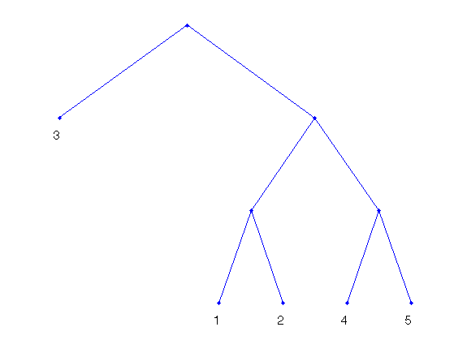
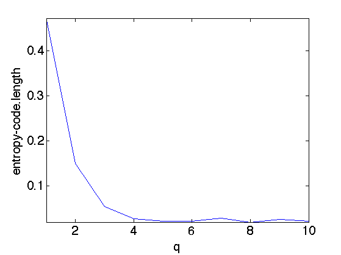
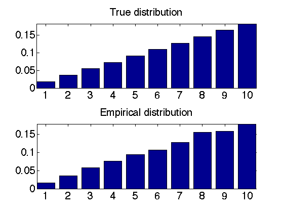
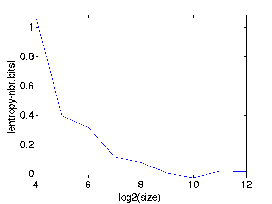

Entropic Coding and Compression
This numerical tour studies source coding using entropic coders (Huffman and arithmetic).
Contents
Installing toolboxes and setting up the path.
You need to download the following files: signal toolbox and general toolbox.
You need to unzip these toolboxes in your working directory, so that you have toolbox_signal and toolbox_general in your directory.
For Scilab user: you must replace the Matlab comment '%' by its Scilab counterpart '//'.
Recommandation: You should create a text file named for instance numericaltour.sce (in Scilab) or numericaltour.m (in Matlab) to write all the Scilab/Matlab command you want to execute. Then, simply run exec('numericaltour.sce'); (in Scilab) or numericaltour; (in Matlab) to run the commands.
Execute this line only if you are using Matlab.
getd = @(p)path(p,path); % scilab users must *not* execute this
Then you can add the toolboxes to the path.
getd('toolbox_signal/'); getd('toolbox_general/');
Source Coding and Entropy
Entropic coding converts a vector x of integers into a binary stream y. Entropic coding exploits the redundancies in the statistical distribution of the entries of x to reduce as much as possible the size of y. The lower bound for the number of bits p of y is the Shannon bound p=-sum_i h(i)*log2(h(i)), where h(i) is the probability of apparition of symbol i in x.
Fist we generate a simple binary signal x so that 0 has a probability of appearance of p.
% probability of 0 p = 0.1; % size n = 512; % signal, should be with token 1,2 x = (rand(n,1)>p)+1;
One can check the probabilities by computing the empirical histogram.
h = hist(x, [1 2]); h = h/sum(h); disp(strcat(['Empirical p=' num2str(h(1)) '.']));
Empirical p=0.099609.
We can compute the entropy of the distribution represented as a vector h of proability that should sum to 1. We take a max to avoid problem with 0 probabilties.
e = - sum( h .* log2( max(h,1e-20) ) );
disp( strcat(['Entropy=' num2str(e)]) );
Entropy=0.46776
Huffman Coding
A Hufman code C associate with each symbol i in {1,...,m} a binary code C{i} whose length length(C{i}) is as close as possible to the optimal bound -log2(h(i)), where h(i) is the probability of apparition of the symbol i.
We select a set of proabilities.
h = [.1 .15 .4 .15 .2];
The tree T cotainins the codes is generated by an iterative algorithm. The initial "tree" is a collection of empty trees, pointing to the symbols numbers.
m = length(h); T = cell(0); % create an empty cell for i=1:m T = cell_set(T,i,i); end
We build iteratively the Huffman tree by grouping together the two Trees that have the smallest probabilities. The merged tree has a probability which is the sums of the two selected probabilities.
% initial probability. p = h; % iterative merging of the leading probabilities while length(p)>1 % sort in decaying order the probabilities [v,I] = sort(p); if v(1)>v(length(v)) v = reverse(v); I = reverse(I); end q = sum(v(1:2)); t = cell_sub(T, I(1:2)); % trimed tree T = cell_sub(T, I(3:length(I)) ); p = v(3:length(v)); % add a new node with the corresponding probability p(length(p)+1) = q; T = cell_set(T, length(p), t); end
We display the computed tree.
clf; plot_hufftree(T);
Once the tree T is computed, one can compute the code C{i} associated to each symbol i. This requires to perform a deep first search in the tree and stop at each node. This is a little tricky to implement in Matlab, so you can use the function huffman_gencode.
C = huffman_gencode(T); % display the code for i=1:size(C,1) disp(strcat(['Code of token ' num2str(i) ' = ' num2str( cell_get(C,i) )])); end
Code of token 1 = 1 0 0
We draw a vector x according to the distribution h
% size of the signal n = 1024; % randomization x = rand_discr(h, n); x = x(:);
Exercice 1: (check the solution) Implement the coding of the vector x to obtain a binary vector y, which corresponds to replacing each sybmol x(i) by the code C{x(i)}.
exo1;
Compare the length of the code with the entropy bound.
e = - sum( h .* log2( max(h,1e-20) ) ); disp( strcat(['Entropy bound = ' num2str(n*e) '.']) ); disp( strcat(['Huffman code = ' num2str(length(y)) '.']) );
Entropy bound = 2197.9539. Huffman code = 2270.
Decoding is more complicated, since it requires parsing iteratively the tree T.
% initial pointer on the tree: on the root t = cell_get(T,1); % initial empty decoded stream x1 = []; % initial stream buffer y1 = y; while not(isempty(y1)) % go down in the tree if y1(1)==0 t = cell_get(t,1); else t = cell_get(t,2); end % remove the symbol from the stream buffer y1(1) = []; if not(iscell(t)) % we are on a leaf of the tree: output symbol x1 = [x1 t]; t = cell_get(T,1); end end x1 = x1(:);
We test if the decoding is correct.
err = norm(x-x1); disp( strcat(['Error (should be 0)=' num2str(err) '.']) );
Error (should be 0)=0.
Huffman Block Coding
A Huffman coder is inefficient because it can distribute only an integer number of bit per symbol. In particular, distribution where one of the symbol has a large probability are not well coded using a Huffman code. This can be aleviated by replacing the set of m symbols by m^q symbols obtained by packing the symbols by blocks of q (here we use m=2 for a binary alphabet). This breaks symbols with large probability into many symbols with smaller proablity, thus approaching the Shannon entropy bound.
Generate a binary vector with a high probability of having 1, so that the Huffman code is not very efficient (far from Shanon bound).
% proability of having 1 t = .12; % probability distriution h = [t; 1-t]; % generate signal n = 4096*2; x = (rand(n,1)>t)+1;
For block of length q=3, create a new vector by coding each block with an integer in 1,...,m^q=2^3. The new length of the vector is n1/q where n1=ceil(n/q)*q.
% block size q = 3; % maximum token value m = 2; % new size n1 = ceil(n/q)*q; % new vector x1 = x; x1(length(x1)+1:n1) = 1; x1 = reshape(x1,[q n1/q]); [Y,X] = meshgrid(1:n1/q,0:q-1); x1 = sum( (x1-1) .* (m.^X), 1 )' + 1;
We generate the probability table H of x1 that represents the probability of each new block symbols in 1,...,m^q.
H = h; for i=1:q-1 Hold = H; H = []; for i=1:length(h) H = [H; Hold*h(i)]; end end
A simpler way to compute this block-histogram is to use the Kronecker product.
H = h; for i=1:q-1 H = kron(H,h); end
Exercice 2: (check the solution) For various values of block size k, Perform the hufman coding and compute the length of the code. Compare with the entropy lower bound.
exo2;
Entropy=0.52936. Huffman(block size 1)=1 Huffman(block size 2)=0.6792 Huffman(block size 3)=0.58289 Huffman(block size 4)=0.55652 Huffman(block size 5)=0.54993 Huffman(block size 6)=0.55103 Huffman(block size 7)=0.55664 Huffman(block size 8)=0.54846 Huffman(block size 9)=0.55444 Huffman(block size 10)=0.55042
Arithmetic Coding
A block coder is able to reach the Shannon bound, but requires the use of many symbols, thus making the coding process slow and memory intensive. A better alternative is the use of an arithmetic coder, that encode a stream using an interval.
Note : for this particular implementation of an arithmetic coder, the entries of this binary stream are packed by group of 8 bits so that each y(i) is in [0,255].
Generate a random binary signal.
% probability of 0 p = 0.1; % size n = 512; % signal, should be with token 1,2 x = (rand(n,1)>p)+1;
The coding is performed using the function perform_arith_fixed.
% probability distribution h = [p 1-p]; % coding y = perform_arith_fixed(x,h); % de-coding x1 = perform_arith_fixed(y,h,n); % see if everything is fine disp(strcat(['Decoding error (should be 0)=' num2str(norm(x-x1)) '.']));
Warning: BITCMP(A,N) will not accept integer valued input N in a future release. Use BITCMP(A,ASSUMEDTYPE) instead. Warning: BITCMP(A,N) will not accept integer valued input N in a future release. Use BITCMP(A,ASSUMEDTYPE) instead. Warning: BITCMP(A,N) will not accept integer valued input N in a future release. Use BITCMP(A,ASSUMEDTYPE) instead. Warning: BITCMP(A,N) will not accept integer valued input N in a future release. Use BITCMP(A,ASSUMEDTYPE) instead. Warning: BITCMP(A,N) will not accept integer valued input N in a future release. Use BITCMP(A,ASSUMEDTYPE) instead. Warning: BITCMP(A,N) will not accept integer valued input N in a future release. Use BITCMP(A,ASSUMEDTYPE) instead. Warning: BITCMP(A,N) will not accept integer valued input N in a future release. Use BITCMP(A,ASSUMEDTYPE) instead. Warning: BITCMP(A,N) will not accept integer valued input N in a future release. Use BITCMP(A,ASSUMEDTYPE) instead. Warning: BITCMP(A,N) will not accept integer valued input N in a future release. Use BITCMP(A,ASSUMEDTYPE) instead. Warning: BITCMP(A,N) will not accept integer valued input N in a future release. Use BITCMP(A,ASSUMEDTYPE) instead. Warning: BITCMP(A,N) will not accept integer valued input N in a future release. Use BITCMP(A,ASSUMEDTYPE) instead. Warning: BITCMP(A,N) will not accept integer valued input N in a future release. Use BITCMP(A,ASSUMEDTYPE) instead. Warning: BITCMP(A,N) will not accept integer valued input N in a future release. Use BITCMP(A,ASSUMEDTYPE) instead. Warning: BITCMP(A,N) will not accept integer valued input N in a future release. Use BITCMP(A,ASSUMEDTYPE) instead. Warning: BITCMP(A,N) will not accept integer valued input N in a future release. Use BITCMP(A,ASSUMEDTYPE) instead. Warning: BITCMP(A,N) will not accept integer valued input N in a future release. Use BITCMP(A,ASSUMEDTYPE) instead. Warning: BITCMP(A,N) will not accept integer valued input N in a future release. Use BITCMP(A,ASSUMEDTYPE) instead. Warning: BITCMP(A,N) will not accept integer valued input N in a future release. Use BITCMP(A,ASSUMEDTYPE) instead. Warning: BITCMP(A,N) will not accept integer valued input N in a future release. Use BITCMP(A,ASSUMEDTYPE) instead. Warning: BITCMP(A,N) will not accept integer valued input N in a future release. Use BITCMP(A,ASSUMEDTYPE) instead. Warning: BITCMP(A,N) will not accept integer valued input N in a future release. Use BITCMP(A,ASSUMEDTYPE) instead. Warning: BITCMP(A,N) will not accept integer valued input N in a future release. Use BITCMP(A,ASSUMEDTYPE) instead. Warning: BITCMP(A,N) will not accept integer valued input N in a future release. Use BITCMP(A,ASSUMEDTYPE) instead. Warning: BITCMP(A,N) will not accept integer valued input N in a future release. Use BITCMP(A,ASSUMEDTYPE) instead. Warning: BITCMP(A,N) will not accept integer valued input N in a future release. Use BITCMP(A,ASSUMEDTYPE) instead. Warning: BITCMP(A,N) will not accept integer valued input N in a future release. Use BITCMP(A,ASSUMEDTYPE) instead. Warning: BITCMP(A,N) will not accept integer valued input N in a future release. Use BITCMP(A,ASSUMEDTYPE) instead. Warning: BITCMP(A,N) will not accept integer valued input N in a future release. Use BITCMP(A,ASSUMEDTYPE) instead. Warning: BITCMP(A,N) will not accept integer valued input N in a future release. Use BITCMP(A,ASSUMEDTYPE) instead. Warning: BITCMP(A,N) will not accept integer valued input N in a future release. Use BITCMP(A,ASSUMEDTYPE) instead. Warning: BITCMP(A,N) will not accept integer valued input N in a future release. Use BITCMP(A,ASSUMEDTYPE) instead. Warning: BITCMP(A,N) will not accept integer valued input N in a future release. Use BITCMP(A,ASSUMEDTYPE) instead. Warning: BITCMP(A,N) will not accept integer valued input N in a future release. Use BITCMP(A,ASSUMEDTYPE) instead. Warning: BITCMP(A,N) will not accept integer valued input N in a future release. Use BITCMP(A,ASSUMEDTYPE) instead. Warning: BITCMP(A,N) will not accept integer valued input N in a future release. Use BITCMP(A,ASSUMEDTYPE) instead. Warning: BITCMP(A,N) will not accept integer valued input N in a future release. Use BITCMP(A,ASSUMEDTYPE) instead. Warning: BITCMP(A,N) will not accept integer valued input N in a future release. Use BITCMP(A,ASSUMEDTYPE) instead. Warning: BITCMP(A,N) will not accept integer valued input N in a future release. Use BITCMP(A,ASSUMEDTYPE) instead. Decoding error (should be 0)=0.
Exercice 3: (check the solution) Compare the average number of bits per symbol generated by the arithmetic coder and the Shanon bound.
exo3;
Entropy=0.469, arithmetic=0.504.
We can generate a more complex integer signal
n = 4096; % this is an example of probability distribution q = 10; h = 1:q; h = h/sum(h); % draw according to the distribution h x = rand_discr(h, n); % check we have the correct distribution h1 = hist(x, 1:q)/n; clf; subplot(2,1,1); bar(h); axis('tight'); set_graphic_sizes([], 20); title('True distribution'); subplot(2,1,2); bar(h1); axis('tight'); set_graphic_sizes([], 20); title('Empirical distribution');
Exercice 4: (check the solution) Encode a signal with an increasing size n, and check how close the generated signal coding rate length(y)/n becomes close to the optimal Shannon bound.
exo4;
Warning: BITCMP(A,N) will not accept integer valued input N in a future release. Use BITCMP(A,ASSUMEDTYPE) instead. Warning: BITCMP(A,N) will not accept integer valued input N in a future release. Use BITCMP(A,ASSUMEDTYPE) instead. Warning: BITCMP(A,N) will not accept integer valued input N in a future release. Use BITCMP(A,ASSUMEDTYPE) instead. Warning: BITCMP(A,N) will not accept integer valued input N in a future release. Use BITCMP(A,ASSUMEDTYPE) instead. Warning: BITCMP(A,N) will not accept integer valued input N in a future release. Use BITCMP(A,ASSUMEDTYPE) instead. Warning: BITCMP(A,N) will not accept integer valued input N in a future release. Use BITCMP(A,ASSUMEDTYPE) instead. Warning: BITCMP(A,N) will not accept integer valued input N in a future release. Use BITCMP(A,ASSUMEDTYPE) instead. Warning: BITCMP(A,N) will not accept integer valued input N in a future release. Use BITCMP(A,ASSUMEDTYPE) instead. Warning: BITCMP(A,N) will not accept integer valued input N in a future release. Use BITCMP(A,ASSUMEDTYPE) instead. Warning: BITCMP(A,N) will not accept integer valued input N in a future release. Use BITCMP(A,ASSUMEDTYPE) instead. Warning: BITCMP(A,N) will not accept integer valued input N in a future release. Use BITCMP(A,ASSUMEDTYPE) instead. Warning: BITCMP(A,N) will not accept integer valued input N in a future release. Use BITCMP(A,ASSUMEDTYPE) instead. Warning: BITCMP(A,N) will not accept integer valued input N in a future release. Use BITCMP(A,ASSUMEDTYPE) instead. Warning: BITCMP(A,N) will not accept integer valued input N in a future release. Use BITCMP(A,ASSUMEDTYPE) instead. Warning: BITCMP(A,N) will not accept integer valued input N in a future release. Use BITCMP(A,ASSUMEDTYPE) instead. Warning: BITCMP(A,N) will not accept integer valued input N in a future release. Use BITCMP(A,ASSUMEDTYPE) instead. Warning: BITCMP(A,N) will not accept integer valued input N in a future release. Use BITCMP(A,ASSUMEDTYPE) instead. Warning: BITCMP(A,N) will not accept integer valued input N in a future release. Use BITCMP(A,ASSUMEDTYPE) instead. Warning: BITCMP(A,N) will not accept integer valued input N in a future release. Use BITCMP(A,ASSUMEDTYPE) instead. Warning: BITCMP(A,N) will not accept integer valued input N in a future release. Use BITCMP(A,ASSUMEDTYPE) instead. Warning: BITCMP(A,N) will not accept integer valued input N in a future release. Use BITCMP(A,ASSUMEDTYPE) instead. Warning: BITCMP(A,N) will not accept integer valued input N in a future release. Use BITCMP(A,ASSUMEDTYPE) instead. Warning: BITCMP(A,N) will not accept integer valued input N in a future release. Use BITCMP(A,ASSUMEDTYPE) instead. Warning: BITCMP(A,N) will not accept integer valued input N in a future release. Use BITCMP(A,ASSUMEDTYPE) instead. Warning: BITCMP(A,N) will not accept integer valued input N in a future release. Use BITCMP(A,ASSUMEDTYPE) instead. Warning: BITCMP(A,N) will not accept integer valued input N in a future release. Use BITCMP(A,ASSUMEDTYPE) instead. Warning: BITCMP(A,N) will not accept integer valued input N in a future release. Use BITCMP(A,ASSUMEDTYPE) instead. Warning: BITCMP(A,N) will not accept integer valued input N in a future release. Use BITCMP(A,ASSUMEDTYPE) instead. Warning: BITCMP(A,N) will not accept integer valued input N in a future release. Use BITCMP(A,ASSUMEDTYPE) instead. Warning: BITCMP(A,N) will not accept integer valued input N in a future release. Use BITCMP(A,ASSUMEDTYPE) instead. Warning: BITCMP(A,N) will not accept integer valued input N in a future release. Use BITCMP(A,ASSUMEDTYPE) instead. Warning: BITCMP(A,N) will not accept integer valued input N in a future release. Use BITCMP(A,ASSUMEDTYPE) instead. Warning: BITCMP(A,N) will not accept integer valued input N in a future release. Use BITCMP(A,ASSUMEDTYPE) instead. Warning: BITCMP(A,N) will not accept integer valued input N in a future release. Use BITCMP(A,ASSUMEDTYPE) instead. Warning: BITCMP(A,N) will not accept integer valued input N in a future release. Use BITCMP(A,ASSUMEDTYPE) instead. Warning: BITCMP(A,N) will not accept integer valued input N in a future release. Use BITCMP(A,ASSUMEDTYPE) instead. Warning: BITCMP(A,N) will not accept integer valued input N in a future release. Use BITCMP(A,ASSUMEDTYPE) instead. Warning: BITCMP(A,N) will not accept integer valued input N in a future release. Use BITCMP(A,ASSUMEDTYPE) instead. Warning: BITCMP(A,N) will not accept integer valued input N in a future release. Use BITCMP(A,ASSUMEDTYPE) instead. Warning: BITCMP(A,N) will not accept integer valued input N in a future release. Use BITCMP(A,ASSUMEDTYPE) instead. Warning: BITCMP(A,N) will not accept integer valued input N in a future release. Use BITCMP(A,ASSUMEDTYPE) instead. Warning: BITCMP(A,N) will not accept integer valued input N in a future release. Use BITCMP(A,ASSUMEDTYPE) instead. Warning: BITCMP(A,N) will not accept integer valued input N in a future release. Use BITCMP(A,ASSUMEDTYPE) instead. Warning: BITCMP(A,N) will not accept integer valued input N in a future release. Use BITCMP(A,ASSUMEDTYPE) instead. Warning: BITCMP(A,N) will not accept integer valued input N in a future release. Use BITCMP(A,ASSUMEDTYPE) instead. Warning: BITCMP(A,N) will not accept integer valued input N in a future release. Use BITCMP(A,ASSUMEDTYPE) instead. Warning: BITCMP(A,N) will not accept integer valued input N in a future release. Use BITCMP(A,ASSUMEDTYPE) instead. Warning: BITCMP(A,N) will not accept integer valued input N in a future release. Use BITCMP(A,ASSUMEDTYPE) instead. Warning: BITCMP(A,N) will not accept integer valued input N in a future release. Use BITCMP(A,ASSUMEDTYPE) instead. Warning: BITCMP(A,N) will not accept integer valued input N in a future release. Use BITCMP(A,ASSUMEDTYPE) instead. Warning: BITCMP(A,N) will not accept integer valued input N in a future release. Use BITCMP(A,ASSUMEDTYPE) instead. Warning: BITCMP(A,N) will not accept integer valued input N in a future release. Use BITCMP(A,ASSUMEDTYPE) instead. Warning: BITCMP(A,N) will not accept integer valued input N in a future release. Use BITCMP(A,ASSUMEDTYPE) instead. Warning: BITCMP(A,N) will not accept integer valued input N in a future release. Use BITCMP(A,ASSUMEDTYPE) instead. Warning: BITCMP(A,N) will not accept integer valued input N in a future release. Use BITCMP(A,ASSUMEDTYPE) instead. Warning: BITCMP(A,N) will not accept integer valued input N in a future release. Use BITCMP(A,ASSUMEDTYPE) instead. Warning: BITCMP(A,N) will not accept integer valued input N in a future release. Use BITCMP(A,ASSUMEDTYPE) instead. Warning: BITCMP(A,N) will not accept integer valued input N in a future release. Use BITCMP(A,ASSUMEDTYPE) instead. Warning: BITCMP(A,N) will not accept integer valued input N in a future release. Use BITCMP(A,ASSUMEDTYPE) instead. Warning: BITCMP(A,N) will not accept integer valued input N in a future release. Use BITCMP(A,ASSUMEDTYPE) instead. Warning: BITCMP(A,N) will not accept integer valued input N in a future release. Use BITCMP(A,ASSUMEDTYPE) instead. Warning: BITCMP(A,N) will not accept integer valued input N in a future release. Use BITCMP(A,ASSUMEDTYPE) instead. Warning: BITCMP(A,N) will not accept integer valued input N in a future release. Use BITCMP(A,ASSUMEDTYPE) instead. Warning: BITCMP(A,N) will not accept integer valued input N in a future release. Use BITCMP(A,ASSUMEDTYPE) instead. Warning: BITCMP(A,N) will not accept integer valued input N in a future release. Use BITCMP(A,ASSUMEDTYPE) instead. Warning: BITCMP(A,N) will not accept integer valued input N in a future release. Use BITCMP(A,ASSUMEDTYPE) instead. Warning: BITCMP(A,N) will not accept integer valued input N in a future release. Use BITCMP(A,ASSUMEDTYPE) instead. Warning: BITCMP(A,N) will not accept integer valued input N in a future release. Use BITCMP(A,ASSUMEDTYPE) instead. Warning: BITCMP(A,N) will not accept integer valued input N in a future release. Use BITCMP(A,ASSUMEDTYPE) instead. Warning: BITCMP(A,N) will not accept integer valued input N in a future release. Use BITCMP(A,ASSUMEDTYPE) instead. Warning: BITCMP(A,N) will not accept integer valued input N in a future release. Use BITCMP(A,ASSUMEDTYPE) instead. Warning: BITCMP(A,N) will not accept integer valued input N in a future release. Use BITCMP(A,ASSUMEDTYPE) instead. Warning: BITCMP(A,N) will not accept integer valued input N in a future release. Use BITCMP(A,ASSUMEDTYPE) instead. Warning: BITCMP(A,N) will not accept integer valued input N in a future release. Use BITCMP(A,ASSUMEDTYPE) instead. Warning: BITCMP(A,N) will not accept integer valued input N in a future release. Use BITCMP(A,ASSUMEDTYPE) instead. Warning: BITCMP(A,N) will not accept integer valued input N in a future release. Use BITCMP(A,ASSUMEDTYPE) instead. Warning: BITCMP(A,N) will not accept integer valued input N in a future release. Use BITCMP(A,ASSUMEDTYPE) instead. Warning: BITCMP(A,N) will not accept integer valued input N in a future release. Use BITCMP(A,ASSUMEDTYPE) instead. Warning: BITCMP(A,N) will not accept integer valued input N in a future release. Use BITCMP(A,ASSUMEDTYPE) instead. Warning: BITCMP(A,N) will not accept integer valued input N in a future release. Use BITCMP(A,ASSUMEDTYPE) instead. Warning: BITCMP(A,N) will not accept integer valued input N in a future release. Use BITCMP(A,ASSUMEDTYPE) instead. Warning: BITCMP(A,N) will not accept integer valued input N in a future release. Use BITCMP(A,ASSUMEDTYPE) instead. Warning: BITCMP(A,N) will not accept integer valued input N in a future release. Use BITCMP(A,ASSUMEDTYPE) instead. Warning: BITCMP(A,N) will not accept integer valued input N in a future release. Use BITCMP(A,ASSUMEDTYPE) instead. Warning: BITCMP(A,N) will not accept integer valued input N in a future release. Use BITCMP(A,ASSUMEDTYPE) instead. Warning: BITCMP(A,N) will not accept integer valued input N in a future release. Use BITCMP(A,ASSUMEDTYPE) instead. Warning: BITCMP(A,N) will not accept integer valued input N in a future release. Use BITCMP(A,ASSUMEDTYPE) instead. Warning: BITCMP(A,N) will not accept integer valued input N in a future release. Use BITCMP(A,ASSUMEDTYPE) instead. Warning: BITCMP(A,N) will not accept integer valued input N in a future release. Use BITCMP(A,ASSUMEDTYPE) instead. Warning: BITCMP(A,N) will not accept integer valued input N in a future release. Use BITCMP(A,ASSUMEDTYPE) instead. Warning: BITCMP(A,N) will not accept integer valued input N in a future release. Use BITCMP(A,ASSUMEDTYPE) instead. Warning: BITCMP(A,N) will not accept integer valued input N in a future release. Use BITCMP(A,ASSUMEDTYPE) instead. Warning: BITCMP(A,N) will not accept integer valued input N in a future release. Use BITCMP(A,ASSUMEDTYPE) instead. Warning: BITCMP(A,N) will not accept integer valued input N in a future release. Use BITCMP(A,ASSUMEDTYPE) instead. Warning: BITCMP(A,N) will not accept integer valued input N in a future release. Use BITCMP(A,ASSUMEDTYPE) instead. Warning: BITCMP(A,N) will not accept integer valued input N in a future release. Use BITCMP(A,ASSUMEDTYPE) instead. Warning: BITCMP(A,N) will not accept integer valued input N in a future release. Use BITCMP(A,ASSUMEDTYPE) instead. Warning: BITCMP(A,N) will not accept integer valued input N in a future release. Use BITCMP(A,ASSUMEDTYPE) instead. Warning: BITCMP(A,N) will not accept integer valued input N in a future release. Use BITCMP(A,ASSUMEDTYPE) instead. Warning: BITCMP(A,N) will not accept integer valued input N in a future release. Use BITCMP(A,ASSUMEDTYPE) instead. Warning: BITCMP(A,N) will not accept integer valued input N in a future release. Use BITCMP(A,ASSUMEDTYPE) instead. Warning: BITCMP(A,N) will not accept integer valued input N in a future release. Use BITCMP(A,ASSUMEDTYPE) instead. Warning: BITCMP(A,N) will not accept integer valued input N in a future release. Use BITCMP(A,ASSUMEDTYPE) instead. Warning: BITCMP(A,N) will not accept integer valued input N in a future release. Use BITCMP(A,ASSUMEDTYPE) instead. Warning: BITCMP(A,N) will not accept integer valued input N in a future release. Use BITCMP(A,ASSUMEDTYPE) instead. Warning: BITCMP(A,N) will not accept integer valued input N in a future release. Use BITCMP(A,ASSUMEDTYPE) instead. Warning: BITCMP(A,N) will not accept integer valued input N in a future release. Use BITCMP(A,ASSUMEDTYPE) instead. Warning: BITCMP(A,N) will not accept integer valued input N in a future release. Use BITCMP(A,ASSUMEDTYPE) instead. Warning: BITCMP(A,N) will not accept integer valued input N in a future release. Use BITCMP(A,ASSUMEDTYPE) instead. Warning: BITCMP(A,N) will not accept integer valued input N in a future release. Use BITCMP(A,ASSUMEDTYPE) instead. Warning: BITCMP(A,N) will not accept integer valued input N in a future release. Use BITCMP(A,ASSUMEDTYPE) instead. Warning: BITCMP(A,N) will not accept integer valued input N in a future release. Use BITCMP(A,ASSUMEDTYPE) instead. Warning: BITCMP(A,N) will not accept integer valued input N in a future release. Use BITCMP(A,ASSUMEDTYPE) instead. Warning: BITCMP(A,N) will not accept integer valued input N in a future release. Use BITCMP(A,ASSUMEDTYPE) instead. Warning: BITCMP(A,N) will not accept integer valued input N in a future release. Use BITCMP(A,ASSUMEDTYPE) instead. Warning: BITCMP(A,N) will not accept integer valued input N in a future release. Use BITCMP(A,ASSUMEDTYPE) instead. Warning: BITCMP(A,N) will not accept integer valued input N in a future release. Use BITCMP(A,ASSUMEDTYPE) instead. Warning: BITCMP(A,N) will not accept integer valued input N in a future release. Use BITCMP(A,ASSUMEDTYPE) instead. Warning: BITCMP(A,N) will not accept integer valued input N in a future release. Use BITCMP(A,ASSUMEDTYPE) instead. Warning: BITCMP(A,N) will not accept integer valued input N in a future release. Use BITCMP(A,ASSUMEDTYPE) instead. Warning: BITCMP(A,N) will not accept integer valued input N in a future release. Use BITCMP(A,ASSUMEDTYPE) instead. Warning: BITCMP(A,N) will not accept integer valued input N in a future release. Use BITCMP(A,ASSUMEDTYPE) instead. Warning: BITCMP(A,N) will not accept integer valued input N in a future release. Use BITCMP(A,ASSUMEDTYPE) instead. Warning: BITCMP(A,N) will not accept integer valued input N in a future release. Use BITCMP(A,ASSUMEDTYPE) instead. Warning: BITCMP(A,N) will not accept integer valued input N in a future release. Use BITCMP(A,ASSUMEDTYPE) instead. Warning: BITCMP(A,N) will not accept integer valued input N in a future release. Use BITCMP(A,ASSUMEDTYPE) instead. Warning: BITCMP(A,N) will not accept integer valued input N in a future release. Use BITCMP(A,ASSUMEDTYPE) instead. Warning: BITCMP(A,N) will not accept integer valued input N in a future release. Use BITCMP(A,ASSUMEDTYPE) instead. Warning: BITCMP(A,N) will not accept integer valued input N in a future release. Use BITCMP(A,ASSUMEDTYPE) instead. Warning: BITCMP(A,N) will not accept integer valued input N in a future release. Use BITCMP(A,ASSUMEDTYPE) instead. Warning: BITCMP(A,N) will not accept integer valued input N in a future release. Use BITCMP(A,ASSUMEDTYPE) instead. Warning: BITCMP(A,N) will not accept integer valued input N in a future release. Use BITCMP(A,ASSUMEDTYPE) instead. Warning: BITCMP(A,N) will not accept integer valued input N in a future release. Use BITCMP(A,ASSUMEDTYPE) instead. Warning: BITCMP(A,N) will not accept integer valued input N in a future release. Use BITCMP(A,ASSUMEDTYPE) instead. Warning: BITCMP(A,N) will not accept integer valued input N in a future release. Use BITCMP(A,ASSUMEDTYPE) instead. Warning: BITCMP(A,N) will not accept integer valued input N in a future release. Use BITCMP(A,ASSUMEDTYPE) instead. Warning: BITCMP(A,N) will not accept integer valued input N in a future release. Use BITCMP(A,ASSUMEDTYPE) instead. Warning: BITCMP(A,N) will not accept integer valued input N in a future release. Use BITCMP(A,ASSUMEDTYPE) instead. Warning: BITCMP(A,N) will not accept integer valued input N in a future release. Use BITCMP(A,ASSUMEDTYPE) instead. Warning: BITCMP(A,N) will not accept integer valued input N in a future release. Use BITCMP(A,ASSUMEDTYPE) instead. Warning: BITCMP(A,N) will not accept integer valued input N in a future release. Use BITCMP(A,ASSUMEDTYPE) instead. Warning: BITCMP(A,N) will not accept integer valued input N in a future release. Use BITCMP(A,ASSUMEDTYPE) instead. Warning: BITCMP(A,N) will not accept integer valued input N in a future release. Use BITCMP(A,ASSUMEDTYPE) instead. Warning: BITCMP(A,N) will not accept integer valued input N in a future release. Use BITCMP(A,ASSUMEDTYPE) instead. Warning: BITCMP(A,N) will not accept integer valued input N in a future release. Use BITCMP(A,ASSUMEDTYPE) instead. Warning: BITCMP(A,N) will not accept integer valued input N in a future release. Use BITCMP(A,ASSUMEDTYPE) instead. Warning: BITCMP(A,N) will not accept integer valued input N in a future release. Use BITCMP(A,ASSUMEDTYPE) instead. Warning: BITCMP(A,N) will not accept integer valued input N in a future release. Use BITCMP(A,ASSUMEDTYPE) instead. Warning: BITCMP(A,N) will not accept integer valued input N in a future release. Use BITCMP(A,ASSUMEDTYPE) instead. Warning: BITCMP(A,N) will not accept integer valued input N in a future release. Use BITCMP(A,ASSUMEDTYPE) instead. Warning: BITCMP(A,N) will not accept integer valued input N in a future release. Use BITCMP(A,ASSUMEDTYPE) instead. Warning: BITCMP(A,N) will not accept integer valued input N in a future release. Use BITCMP(A,ASSUMEDTYPE) instead. Warning: BITCMP(A,N) will not accept integer valued input N in a future release. Use BITCMP(A,ASSUMEDTYPE) instead. Warning: BITCMP(A,N) will not accept integer valued input N in a future release. Use BITCMP(A,ASSUMEDTYPE) instead. Warning: BITCMP(A,N) will not accept integer valued input N in a future release. Use BITCMP(A,ASSUMEDTYPE) instead. Warning: BITCMP(A,N) will not accept integer valued input N in a future release. Use BITCMP(A,ASSUMEDTYPE) instead. Warning: BITCMP(A,N) will not accept integer valued input N in a future release. Use BITCMP(A,ASSUMEDTYPE) instead. Warning: BITCMP(A,N) will not accept integer valued input N in a future release. Use BITCMP(A,ASSUMEDTYPE) instead. Warning: BITCMP(A,N) will not accept integer valued input N in a future release. Use BITCMP(A,ASSUMEDTYPE) instead. Warning: BITCMP(A,N) will not accept integer valued input N in a future release. Use BITCMP(A,ASSUMEDTYPE) instead. Warning: BITCMP(A,N) will not accept integer valued input N in a future release. Use BITCMP(A,ASSUMEDTYPE) instead. Warning: BITCMP(A,N) will not accept integer valued input N in a future release. Use BITCMP(A,ASSUMEDTYPE) instead. Warning: BITCMP(A,N) will not accept integer valued input N in a future release. Use BITCMP(A,ASSUMEDTYPE) instead. Warning: BITCMP(A,N) will not accept integer valued input N in a future release. Use BITCMP(A,ASSUMEDTYPE) instead. Warning: BITCMP(A,N) will not accept integer valued input N in a future release. Use BITCMP(A,ASSUMEDTYPE) instead. Warning: BITCMP(A,N) will not accept integer valued input N in a future release. Use BITCMP(A,ASSUMEDTYPE) instead. Warning: BITCMP(A,N) will not accept integer valued input N in a future release. Use BITCMP(A,ASSUMEDTYPE) instead. Warning: BITCMP(A,N) will not accept integer valued input N in a future release. Use BITCMP(A,ASSUMEDTYPE) instead. Warning: BITCMP(A,N) will not accept integer valued input N in a future release. Use BITCMP(A,ASSUMEDTYPE) instead. Warning: BITCMP(A,N) will not accept integer valued input N in a future release. Use BITCMP(A,ASSUMEDTYPE) instead. Warning: BITCMP(A,N) will not accept integer valued input N in a future release. Use BITCMP(A,ASSUMEDTYPE) instead. Warning: BITCMP(A,N) will not accept integer valued input N in a future release. Use BITCMP(A,ASSUMEDTYPE) instead. Warning: BITCMP(A,N) will not accept integer valued input N in a future release. Use BITCMP(A,ASSUMEDTYPE) instead. Warning: BITCMP(A,N) will not accept integer valued input N in a future release. Use BITCMP(A,ASSUMEDTYPE) instead. Warning: BITCMP(A,N) will not accept integer valued input N in a future release. Use BITCMP(A,ASSUMEDTYPE) instead. Warning: BITCMP(A,N) will not accept integer valued input N in a future release. Use BITCMP(A,ASSUMEDTYPE) instead. Warning: BITCMP(A,N) will not accept integer valued input N in a future release. Use BITCMP(A,ASSUMEDTYPE) instead. Warning: BITCMP(A,N) will not accept integer valued input N in a future release. Use BITCMP(A,ASSUMEDTYPE) instead. Warning: BITCMP(A,N) will not accept integer valued input N in a future release. Use BITCMP(A,ASSUMEDTYPE) instead. Warning: BITCMP(A,N) will not accept integer valued input N in a future release. Use BITCMP(A,ASSUMEDTYPE) instead. Warning: BITCMP(A,N) will not accept integer valued input N in a future release. Use BITCMP(A,ASSUMEDTYPE) instead. Warning: BITCMP(A,N) will not accept integer valued input N in a future release. Use BITCMP(A,ASSUMEDTYPE) instead. Warning: BITCMP(A,N) will not accept integer valued input N in a future release. Use BITCMP(A,ASSUMEDTYPE) instead. Warning: BITCMP(A,N) will not accept integer valued input N in a future release. Use BITCMP(A,ASSUMEDTYPE) instead. Warning: BITCMP(A,N) will not accept integer valued input N in a future release. Use BITCMP(A,ASSUMEDTYPE) instead. Warning: BITCMP(A,N) will not accept integer valued input N in a future release. Use BITCMP(A,ASSUMEDTYPE) instead. Warning: BITCMP(A,N) will not accept integer valued input N in a future release. Use BITCMP(A,ASSUMEDTYPE) instead. Warning: BITCMP(A,N) will not accept integer valued input N in a future release. Use BITCMP(A,ASSUMEDTYPE) instead. Warning: BITCMP(A,N) will not accept integer valued input N in a future release. Use BITCMP(A,ASSUMEDTYPE) instead. Warning: BITCMP(A,N) will not accept integer valued input N in a future release. Use BITCMP(A,ASSUMEDTYPE) instead. Warning: BITCMP(A,N) will not accept integer valued input N in a future release. Use BITCMP(A,ASSUMEDTYPE) instead. Warning: BITCMP(A,N) will not accept integer valued input N in a future release. Use BITCMP(A,ASSUMEDTYPE) instead. Warning: BITCMP(A,N) will not accept integer valued input N in a future release. Use BITCMP(A,ASSUMEDTYPE) instead. Warning: BITCMP(A,N) will not accept integer valued input N in a future release. Use BITCMP(A,ASSUMEDTYPE) instead. Warning: BITCMP(A,N) will not accept integer valued input N in a future release. Use BITCMP(A,ASSUMEDTYPE) instead. Warning: BITCMP(A,N) will not accept integer valued input N in a future release. Use BITCMP(A,ASSUMEDTYPE) instead. Warning: BITCMP(A,N) will not accept integer valued input N in a future release. Use BITCMP(A,ASSUMEDTYPE) instead. Warning: BITCMP(A,N) will not accept integer valued input N in a future release. Use BITCMP(A,ASSUMEDTYPE) instead. Warning: BITCMP(A,N) will not accept integer valued input N in a future release. Use BITCMP(A,ASSUMEDTYPE) instead. Warning: BITCMP(A,N) will not accept integer valued input N in a future release. Use BITCMP(A,ASSUMEDTYPE) instead. Warning: BITCMP(A,N) will not accept integer valued input N in a future release. Use BITCMP(A,ASSUMEDTYPE) instead. Warning: BITCMP(A,N) will not accept integer valued input N in a future release. Use BITCMP(A,ASSUMEDTYPE) instead. Warning: BITCMP(A,N) will not accept integer valued input N in a future release. Use BITCMP(A,ASSUMEDTYPE) instead. Warning: BITCMP(A,N) will not accept integer valued input N in a future release. Use BITCMP(A,ASSUMEDTYPE) instead. Warning: BITCMP(A,N) will not accept integer valued input N in a future release. Use BITCMP(A,ASSUMEDTYPE) instead. Warning: BITCMP(A,N) will not accept integer valued input N in a future release. Use BITCMP(A,ASSUMEDTYPE) instead. Warning: BITCMP(A,N) will not accept integer valued input N in a future release. Use BITCMP(A,ASSUMEDTYPE) instead. Warning: BITCMP(A,N) will not accept integer valued input N in a future release. Use BITCMP(A,ASSUMEDTYPE) instead. Warning: BITCMP(A,N) will not accept integer valued input N in a future release. Use BITCMP(A,ASSUMEDTYPE) instead. Warning: BITCMP(A,N) will not accept integer valued input N in a future release. Use BITCMP(A,ASSUMEDTYPE) instead. Warning: BITCMP(A,N) will not accept integer valued input N in a future release. Use BITCMP(A,ASSUMEDTYPE) instead. Warning: BITCMP(A,N) will not accept integer valued input N in a future release. Use BITCMP(A,ASSUMEDTYPE) instead. Warning: BITCMP(A,N) will not accept integer valued input N in a future release. Use BITCMP(A,ASSUMEDTYPE) instead. Warning: BITCMP(A,N) will not accept integer valued input N in a future release. Use BITCMP(A,ASSUMEDTYPE) instead. Warning: BITCMP(A,N) will not accept integer valued input N in a future release. Use BITCMP(A,ASSUMEDTYPE) instead. Warning: BITCMP(A,N) will not accept integer valued input N in a future release. Use BITCMP(A,ASSUMEDTYPE) instead. Warning: BITCMP(A,N) will not accept integer valued input N in a future release. Use BITCMP(A,ASSUMEDTYPE) instead. Warning: BITCMP(A,N) will not accept integer valued input N in a future release. Use BITCMP(A,ASSUMEDTYPE) instead. Warning: BITCMP(A,N) will not accept integer valued input N in a future release. Use BITCMP(A,ASSUMEDTYPE) instead. Warning: BITCMP(A,N) will not accept integer valued input N in a future release. Use BITCMP(A,ASSUMEDTYPE) instead. Warning: BITCMP(A,N) will not accept integer valued input N in a future release. Use BITCMP(A,ASSUMEDTYPE) instead. Warning: BITCMP(A,N) will not accept integer valued input N in a future release. Use BITCMP(A,ASSUMEDTYPE) instead. Warning: BITCMP(A,N) will not accept integer valued input N in a future release. Use BITCMP(A,ASSUMEDTYPE) instead. Warning: BITCMP(A,N) will not accept integer valued input N in a future release. Use BITCMP(A,ASSUMEDTYPE) instead. Warning: BITCMP(A,N) will not accept integer valued input N in a future release. Use BITCMP(A,ASSUMEDTYPE) instead. Warning: BITCMP(A,N) will not accept integer valued input N in a future release. Use BITCMP(A,ASSUMEDTYPE) instead. Warning: BITCMP(A,N) will not accept integer valued input N in a future release. Use BITCMP(A,ASSUMEDTYPE) instead. Warning: BITCMP(A,N) will not accept integer valued input N in a future release. Use BITCMP(A,ASSUMEDTYPE) instead. Warning: BITCMP(A,N) will not accept integer valued input N in a future release. Use BITCMP(A,ASSUMEDTYPE) instead. Warning: BITCMP(A,N) will not accept integer valued input N in a future release. Use BITCMP(A,ASSUMEDTYPE) instead. Warning: BITCMP(A,N) will not accept integer valued input N in a future release. Use BITCMP(A,ASSUMEDTYPE) instead. Warning: BITCMP(A,N) will not accept integer valued input N in a future release. Use BITCMP(A,ASSUMEDTYPE) instead. Warning: BITCMP(A,N) will not accept integer valued input N in a future release. Use BITCMP(A,ASSUMEDTYPE) instead. Warning: BITCMP(A,N) will not accept integer valued input N in a future release. Use BITCMP(A,ASSUMEDTYPE) instead. Warning: BITCMP(A,N) will not accept integer valued input N in a future release. Use BITCMP(A,ASSUMEDTYPE) instead. Warning: BITCMP(A,N) will not accept integer valued input N in a future release. Use BITCMP(A,ASSUMEDTYPE) instead. Warning: BITCMP(A,N) will not accept integer valued input N in a future release. Use BITCMP(A,ASSUMEDTYPE) instead. Warning: BITCMP(A,N) will not accept integer valued input N in a future release. Use BITCMP(A,ASSUMEDTYPE) instead. Warning: BITCMP(A,N) will not accept integer valued input N in a future release. Use BITCMP(A,ASSUMEDTYPE) instead. Warning: BITCMP(A,N) will not accept integer valued input N in a future release. Use BITCMP(A,ASSUMEDTYPE) instead. Warning: BITCMP(A,N) will not accept integer valued input N in a future release. Use BITCMP(A,ASSUMEDTYPE) instead. Warning: BITCMP(A,N) will not accept integer valued input N in a future release. Use BITCMP(A,ASSUMEDTYPE) instead. Warning: BITCMP(A,N) will not accept integer valued input N in a future release. Use BITCMP(A,ASSUMEDTYPE) instead. Warning: BITCMP(A,N) will not accept integer valued input N in a future release. Use BITCMP(A,ASSUMEDTYPE) instead. Warning: BITCMP(A,N) will not accept integer valued input N in a future release. Use BITCMP(A,ASSUMEDTYPE) instead. Warning: BITCMP(A,N) will not accept integer valued input N in a future release. Use BITCMP(A,ASSUMEDTYPE) instead. Warning: BITCMP(A,N) will not accept integer valued input N in a future release. Use BITCMP(A,ASSUMEDTYPE) instead. Warning: BITCMP(A,N) will not accept integer valued input N in a future release. Use BITCMP(A,ASSUMEDTYPE) instead. Warning: BITCMP(A,N) will not accept integer valued input N in a future release. Use BITCMP(A,ASSUMEDTYPE) instead. Warning: BITCMP(A,N) will not accept integer valued input N in a future release. Use BITCMP(A,ASSUMEDTYPE) instead. Warning: BITCMP(A,N) will not accept integer valued input N in a future release. Use BITCMP(A,ASSUMEDTYPE) instead. Warning: BITCMP(A,N) will not accept integer valued input N in a future release. Use BITCMP(A,ASSUMEDTYPE) instead. Warning: BITCMP(A,N) will not accept integer valued input N in a future release. Use BITCMP(A,ASSUMEDTYPE) instead. Warning: BITCMP(A,N) will not accept integer valued input N in a future release. Use BITCMP(A,ASSUMEDTYPE) instead. Warning: BITCMP(A,N) will not accept integer valued input N in a future release. Use BITCMP(A,ASSUMEDTYPE) instead. Warning: BITCMP(A,N) will not accept integer valued input N in a future release. Use BITCMP(A,ASSUMEDTYPE) instead. Warning: BITCMP(A,N) will not accept integer valued input N in a future release. Use BITCMP(A,ASSUMEDTYPE) instead. Warning: BITCMP(A,N) will not accept integer valued input N in a future release. Use BITCMP(A,ASSUMEDTYPE) instead. Warning: BITCMP(A,N) will not accept integer valued input N in a future release. Use BITCMP(A,ASSUMEDTYPE) instead. Warning: BITCMP(A,N) will not accept integer valued input N in a future release. Use BITCMP(A,ASSUMEDTYPE) instead. Warning: BITCMP(A,N) will not accept integer valued input N in a future release. Use BITCMP(A,ASSUMEDTYPE) instead. Warning: BITCMP(A,N) will not accept integer valued input N in a future release. Use BITCMP(A,ASSUMEDTYPE) instead. Warning: BITCMP(A,N) will not accept integer valued input N in a future release. Use BITCMP(A,ASSUMEDTYPE) instead. Warning: BITCMP(A,N) will not accept integer valued input N in a future release. Use BITCMP(A,ASSUMEDTYPE) instead. Warning: BITCMP(A,N) will not accept integer valued input N in a future release. Use BITCMP(A,ASSUMEDTYPE) instead. Warning: BITCMP(A,N) will not accept integer valued input N in a future release. Use BITCMP(A,ASSUMEDTYPE) instead. Warning: BITCMP(A,N) will not accept integer valued input N in a future release. Use BITCMP(A,ASSUMEDTYPE) instead. Warning: BITCMP(A,N) will not accept integer valued input N in a future release. Use BITCMP(A,ASSUMEDTYPE) instead. Warning: BITCMP(A,N) will not accept integer valued input N in a future release. Use BITCMP(A,ASSUMEDTYPE) instead. Warning: BITCMP(A,N) will not accept integer valued input N in a future release. Use BITCMP(A,ASSUMEDTYPE) instead. Warning: BITCMP(A,N) will not accept integer valued input N in a future release. Use BITCMP(A,ASSUMEDTYPE) instead. Warning: BITCMP(A,N) will not accept integer valued input N in a future release. Use BITCMP(A,ASSUMEDTYPE) instead. Warning: BITCMP(A,N) will not accept integer valued input N in a future release. Use BITCMP(A,ASSUMEDTYPE) instead. Warning: BITCMP(A,N) will not accept integer valued input N in a future release. Use BITCMP(A,ASSUMEDTYPE) instead. Warning: BITCMP(A,N) will not accept integer valued input N in a future release. Use BITCMP(A,ASSUMEDTYPE) instead. Warning: BITCMP(A,N) will not accept integer valued input N in a future release. Use BITCMP(A,ASSUMEDTYPE) instead. Warning: BITCMP(A,N) will not accept integer valued input N in a future release. Use BITCMP(A,ASSUMEDTYPE) instead. Warning: BITCMP(A,N) will not accept integer valued input N in a future release. Use BITCMP(A,ASSUMEDTYPE) instead. Warning: BITCMP(A,N) will not accept integer valued input N in a future release. Use BITCMP(A,ASSUMEDTYPE) instead. Warning: BITCMP(A,N) will not accept integer valued input N in a future release. Use BITCMP(A,ASSUMEDTYPE) instead. Warning: BITCMP(A,N) will not accept integer valued input N in a future release. Use BITCMP(A,ASSUMEDTYPE) instead. Warning: BITCMP(A,N) will not accept integer valued input N in a future release. Use BITCMP(A,ASSUMEDTYPE) instead. Warning: BITCMP(A,N) will not accept integer valued input N in a future release. Use BITCMP(A,ASSUMEDTYPE) instead. Warning: BITCMP(A,N) will not accept integer valued input N in a future release. Use BITCMP(A,ASSUMEDTYPE) instead. Warning: BITCMP(A,N) will not accept integer valued input N in a future release. Use BITCMP(A,ASSUMEDTYPE) instead. Warning: BITCMP(A,N) will not accept integer valued input N in a future release. Use BITCMP(A,ASSUMEDTYPE) instead. Warning: BITCMP(A,N) will not accept integer valued input N in a future release. Use BITCMP(A,ASSUMEDTYPE) instead. Warning: BITCMP(A,N) will not accept integer valued input N in a future release. Use BITCMP(A,ASSUMEDTYPE) instead. Warning: BITCMP(A,N) will not accept integer valued input N in a future release. Use BITCMP(A,ASSUMEDTYPE) instead. Warning: BITCMP(A,N) will not accept integer valued input N in a future release. Use BITCMP(A,ASSUMEDTYPE) instead. Warning: BITCMP(A,N) will not accept integer valued input N in a future release. Use BITCMP(A,ASSUMEDTYPE) instead. Warning: BITCMP(A,N) will not accept integer valued input N in a future release. Use BITCMP(A,ASSUMEDTYPE) instead. Warning: BITCMP(A,N) will not accept integer valued input N in a future release. Use BITCMP(A,ASSUMEDTYPE) instead. Warning: BITCMP(A,N) will not accept integer valued input N in a future release. Use BITCMP(A,ASSUMEDTYPE) instead. Warning: BITCMP(A,N) will not accept integer valued input N in a future release. Use BITCMP(A,ASSUMEDTYPE) instead. Warning: BITCMP(A,N) will not accept integer valued input N in a future release. Use BITCMP(A,ASSUMEDTYPE) instead. Warning: BITCMP(A,N) will not accept integer valued input N in a future release. Use BITCMP(A,ASSUMEDTYPE) instead. Warning: BITCMP(A,N) will not accept integer valued input N in a future release. Use BITCMP(A,ASSUMEDTYPE) instead. Warning: BITCMP(A,N) will not accept integer valued input N in a future release. Use BITCMP(A,ASSUMEDTYPE) instead. Warning: BITCMP(A,N) will not accept integer valued input N in a future release. Use BITCMP(A,ASSUMEDTYPE) instead. Warning: BITCMP(A,N) will not accept integer valued input N in a future release. Use BITCMP(A,ASSUMEDTYPE) instead. Warning: BITCMP(A,N) will not accept integer valued input N in a future release. Use BITCMP(A,ASSUMEDTYPE) instead. Warning: BITCMP(A,N) will not accept integer valued input N in a future release. Use BITCMP(A,ASSUMEDTYPE) instead. Warning: BITCMP(A,N) will not accept integer valued input N in a future release. Use BITCMP(A,ASSUMEDTYPE) instead. Warning: BITCMP(A,N) will not accept integer valued input N in a future release. Use BITCMP(A,ASSUMEDTYPE) instead. Warning: BITCMP(A,N) will not accept integer valued input N in a future release. Use BITCMP(A,ASSUMEDTYPE) instead. Warning: BITCMP(A,N) will not accept integer valued input N in a future release. Use BITCMP(A,ASSUMEDTYPE) instead. Warning: BITCMP(A,N) will not accept integer valued input N in a future release. Use BITCMP(A,ASSUMEDTYPE) instead. Warning: BITCMP(A,N) will not accept integer valued input N in a future release. Use BITCMP(A,ASSUMEDTYPE) instead. Warning: BITCMP(A,N) will not accept integer valued input N in a future release. Use BITCMP(A,ASSUMEDTYPE) instead. Warning: BITCMP(A,N) will not accept integer valued input N in a future release. Use BITCMP(A,ASSUMEDTYPE) instead. Warning: BITCMP(A,N) will not accept integer valued input N in a future release. Use BITCMP(A,ASSUMEDTYPE) instead. Warning: BITCMP(A,N) will not accept integer valued input N in a future release. Use BITCMP(A,ASSUMEDTYPE) instead. Warning: BITCMP(A,N) will not accept integer valued input N in a future release. Use BITCMP(A,ASSUMEDTYPE) instead. Warning: BITCMP(A,N) will not accept integer valued input N in a future release. Use BITCMP(A,ASSUMEDTYPE) instead. Warning: BITCMP(A,N) will not accept integer valued input N in a future release. Use BITCMP(A,ASSUMEDTYPE) instead. Warning: BITCMP(A,N) will not accept integer valued input N in a future release. Use BITCMP(A,ASSUMEDTYPE) instead. Warning: BITCMP(A,N) will not accept integer valued input N in a future release. Use BITCMP(A,ASSUMEDTYPE) instead. Warning: BITCMP(A,N) will not accept integer valued input N in a future release. Use BITCMP(A,ASSUMEDTYPE) instead. Warning: BITCMP(A,N) will not accept integer valued input N in a future release. Use BITCMP(A,ASSUMEDTYPE) instead. Warning: BITCMP(A,N) will not accept integer valued input N in a future release. Use BITCMP(A,ASSUMEDTYPE) instead. Warning: BITCMP(A,N) will not accept integer valued input N in a future release. Use BITCMP(A,ASSUMEDTYPE) instead. Warning: BITCMP(A,N) will not accept integer valued input N in a future release. Use BITCMP(A,ASSUMEDTYPE) instead. Warning: BITCMP(A,N) will not accept integer valued input N in a future release. Use BITCMP(A,ASSUMEDTYPE) instead. Warning: BITCMP(A,N) will not accept integer valued input N in a future release. Use BITCMP(A,ASSUMEDTYPE) instead. Warning: BITCMP(A,N) will not accept integer valued input N in a future release. Use BITCMP(A,ASSUMEDTYPE) instead. Warning: BITCMP(A,N) will not accept integer valued input N in a future release. Use BITCMP(A,ASSUMEDTYPE) instead. Warning: BITCMP(A,N) will not accept integer valued input N in a future release. Use BITCMP(A,ASSUMEDTYPE) instead. Warning: BITCMP(A,N) will not accept integer valued input N in a future release. Use BITCMP(A,ASSUMEDTYPE) instead. Warning: BITCMP(A,N) will not accept integer valued input N in a future release. Use BITCMP(A,ASSUMEDTYPE) instead. Warning: BITCMP(A,N) will not accept integer valued input N in a future release. Use BITCMP(A,ASSUMEDTYPE) instead. Warning: BITCMP(A,N) will not accept integer valued input N in a future release. Use BITCMP(A,ASSUMEDTYPE) instead. Warning: BITCMP(A,N) will not accept integer valued input N in a future release. Use BITCMP(A,ASSUMEDTYPE) instead. Warning: BITCMP(A,N) will not accept integer valued input N in a future release. Use BITCMP(A,ASSUMEDTYPE) instead. Warning: BITCMP(A,N) will not accept integer valued input N in a future release. Use BITCMP(A,ASSUMEDTYPE) instead. Warning: BITCMP(A,N) will not accept integer valued input N in a future release. Use BITCMP(A,ASSUMEDTYPE) instead. Warning: BITCMP(A,N) will not accept integer valued input N in a future release. Use BITCMP(A,ASSUMEDTYPE) instead. Warning: BITCMP(A,N) will not accept integer valued input N in a future release. Use BITCMP(A,ASSUMEDTYPE) instead. Warning: BITCMP(A,N) will not accept integer valued input N in a future release. Use BITCMP(A,ASSUMEDTYPE) instead. Warning: BITCMP(A,N) will not accept integer valued input N in a future release. Use BITCMP(A,ASSUMEDTYPE) instead. Warning: BITCMP(A,N) will not accept integer valued input N in a future release. Use BITCMP(A,ASSUMEDTYPE) instead. Warning: BITCMP(A,N) will not accept integer valued input N in a future release. Use BITCMP(A,ASSUMEDTYPE) instead. Warning: BITCMP(A,N) will not accept integer valued input N in a future release. Use BITCMP(A,ASSUMEDTYPE) instead. Warning: BITCMP(A,N) will not accept integer valued input N in a future release. Use BITCMP(A,ASSUMEDTYPE) instead. Warning: BITCMP(A,N) will not accept integer valued input N in a future release. Use BITCMP(A,ASSUMEDTYPE) instead. Warning: BITCMP(A,N) will not accept integer valued input N in a future release. Use BITCMP(A,ASSUMEDTYPE) instead. Warning: BITCMP(A,N) will not accept integer valued input N in a future release. Use BITCMP(A,ASSUMEDTYPE) instead. Warning: BITCMP(A,N) will not accept integer valued input N in a future release. Use BITCMP(A,ASSUMEDTYPE) instead. Warning: BITCMP(A,N) will not accept integer valued input N in a future release. Use BITCMP(A,ASSUMEDTYPE) instead. Warning: BITCMP(A,N) will not accept integer valued input N in a future release. Use BITCMP(A,ASSUMEDTYPE) instead. Warning: BITCMP(A,N) will not accept integer valued input N in a future release. Use BITCMP(A,ASSUMEDTYPE) instead. Warning: BITCMP(A,N) will not accept integer valued input N in a future release. Use BITCMP(A,ASSUMEDTYPE) instead. Warning: BITCMP(A,N) will not accept integer valued input N in a future release. Use BITCMP(A,ASSUMEDTYPE) instead. Warning: BITCMP(A,N) will not accept integer valued input N in a future release. Use BITCMP(A,ASSUMEDTYPE) instead. Warning: BITCMP(A,N) will not accept integer valued input N in a future release. Use BITCMP(A,ASSUMEDTYPE) instead. Warning: BITCMP(A,N) will not accept integer valued input N in a future release. Use BITCMP(A,ASSUMEDTYPE) instead. Warning: BITCMP(A,N) will not accept integer valued input N in a future release. Use BITCMP(A,ASSUMEDTYPE) instead. Warning: BITCMP(A,N) will not accept integer valued input N in a future release. Use BITCMP(A,ASSUMEDTYPE) instead. Warning: BITCMP(A,N) will not accept integer valued input N in a future release. Use BITCMP(A,ASSUMEDTYPE) instead. Warning: BITCMP(A,N) will not accept integer valued input N in a future release. Use BITCMP(A,ASSUMEDTYPE) instead. Warning: BITCMP(A,N) will not accept integer valued input N in a future release. Use BITCMP(A,ASSUMEDTYPE) instead. Warning: BITCMP(A,N) will not accept integer valued input N in a future release. Use BITCMP(A,ASSUMEDTYPE) instead. Warning: BITCMP(A,N) will not accept integer valued input N in a future release. Use BITCMP(A,ASSUMEDTYPE) instead. Warning: BITCMP(A,N) will not accept integer valued input N in a future release. Use BITCMP(A,ASSUMEDTYPE) instead. Warning: BITCMP(A,N) will not accept integer valued input N in a future release. Use BITCMP(A,ASSUMEDTYPE) instead. Warning: BITCMP(A,N) will not accept integer valued input N in a future release. Use BITCMP(A,ASSUMEDTYPE) instead. Warning: BITCMP(A,N) will not accept integer valued input N in a future release. Use BITCMP(A,ASSUMEDTYPE) instead. Warning: BITCMP(A,N) will not accept integer valued input N in a future release. Use BITCMP(A,ASSUMEDTYPE) instead. Warning: BITCMP(A,N) will not accept integer valued input N in a future release. Use BITCMP(A,ASSUMEDTYPE) instead. Warning: BITCMP(A,N) will not accept integer valued input N in a future release. Use BITCMP(A,ASSUMEDTYPE) instead. Warning: BITCMP(A,N) will not accept integer valued input N in a future release. Use BITCMP(A,ASSUMEDTYPE) instead. Warning: BITCMP(A,N) will not accept integer valued input N in a future release. Use BITCMP(A,ASSUMEDTYPE) instead. Warning: BITCMP(A,N) will not accept integer valued input N in a future release. Use BITCMP(A,ASSUMEDTYPE) instead. Warning: BITCMP(A,N) will not accept integer valued input N in a future release. Use BITCMP(A,ASSUMEDTYPE) instead. Warning: BITCMP(A,N) will not accept integer valued input N in a future release. Use BITCMP(A,ASSUMEDTYPE) instead. Warning: BITCMP(A,N) will not accept integer valued input N in a future release. Use BITCMP(A,ASSUMEDTYPE) instead. Warning: BITCMP(A,N) will not accept integer valued input N in a future release. Use BITCMP(A,ASSUMEDTYPE) instead. Warning: BITCMP(A,N) will not accept integer valued input N in a future release. Use BITCMP(A,ASSUMEDTYPE) instead. Warning: BITCMP(A,N) will not accept integer valued input N in a future release. Use BITCMP(A,ASSUMEDTYPE) instead. Warning: BITCMP(A,N) will not accept integer valued input N in a future release. Use BITCMP(A,ASSUMEDTYPE) instead. Warning: BITCMP(A,N) will not accept integer valued input N in a future release. Use BITCMP(A,ASSUMEDTYPE) instead. Warning: BITCMP(A,N) will not accept integer valued input N in a future release. Use BITCMP(A,ASSUMEDTYPE) instead. Warning: BITCMP(A,N) will not accept integer valued input N in a future release. Use BITCMP(A,ASSUMEDTYPE) instead. Warning: BITCMP(A,N) will not accept integer valued input N in a future release. Use BITCMP(A,ASSUMEDTYPE) instead. Warning: BITCMP(A,N) will not accept integer valued input N in a future release. Use BITCMP(A,ASSUMEDTYPE) instead. Warning: BITCMP(A,N) will not accept integer valued input N in a future release. Use BITCMP(A,ASSUMEDTYPE) instead. Warning: BITCMP(A,N) will not accept integer valued input N in a future release. Use BITCMP(A,ASSUMEDTYPE) instead. Warning: BITCMP(A,N) will not accept integer valued input N in a future release. Use BITCMP(A,ASSUMEDTYPE) instead. Warning: BITCMP(A,N) will not accept integer valued input N in a future release. Use BITCMP(A,ASSUMEDTYPE) instead. Warning: BITCMP(A,N) will not accept integer valued input N in a future release. Use BITCMP(A,ASSUMEDTYPE) instead. Warning: BITCMP(A,N) will not accept integer valued input N in a future release. Use BITCMP(A,ASSUMEDTYPE) instead. Warning: BITCMP(A,N) will not accept integer valued input N in a future release. Use BITCMP(A,ASSUMEDTYPE) instead. Warning: BITCMP(A,N) will not accept integer valued input N in a future release. Use BITCMP(A,ASSUMEDTYPE) instead. Warning: BITCMP(A,N) will not accept integer valued input N in a future release. Use BITCMP(A,ASSUMEDTYPE) instead. Warning: BITCMP(A,N) will not accept integer valued input N in a future release. Use BITCMP(A,ASSUMEDTYPE) instead. Warning: BITCMP(A,N) will not accept integer valued input N in a future release. Use BITCMP(A,ASSUMEDTYPE) instead. Warning: BITCMP(A,N) will not accept integer valued input N in a future release. Use BITCMP(A,ASSUMEDTYPE) instead. Warning: BITCMP(A,N) will not accept integer valued input N in a future release. Use BITCMP(A,ASSUMEDTYPE) instead. Warning: BITCMP(A,N) will not accept integer valued input N in a future release. Use BITCMP(A,ASSUMEDTYPE) instead. Warning: BITCMP(A,N) will not accept integer valued input N in a future release. Use BITCMP(A,ASSUMEDTYPE) instead. Warning: BITCMP(A,N) will not accept integer valued input N in a future release. Use BITCMP(A,ASSUMEDTYPE) instead. Warning: BITCMP(A,N) will not accept integer valued input N in a future release. Use BITCMP(A,ASSUMEDTYPE) instead. Warning: BITCMP(A,N) will not accept integer valued input N in a future release. Use BITCMP(A,ASSUMEDTYPE) instead. Warning: BITCMP(A,N) will not accept integer valued input N in a future release. Use BITCMP(A,ASSUMEDTYPE) instead. Warning: BITCMP(A,N) will not accept integer valued input N in a future release. Use BITCMP(A,ASSUMEDTYPE) instead. Warning: BITCMP(A,N) will not accept integer valued input N in a future release. Use BITCMP(A,ASSUMEDTYPE) instead. Warning: BITCMP(A,N) will not accept integer valued input N in a future release. Use BITCMP(A,ASSUMEDTYPE) instead. Warning: BITCMP(A,N) will not accept integer valued input N in a future release. Use BITCMP(A,ASSUMEDTYPE) instead. Warning: BITCMP(A,N) will not accept integer valued input N in a future release. Use BITCMP(A,ASSUMEDTYPE) instead. Warning: BITCMP(A,N) will not accept integer valued input N in a future release. Use BITCMP(A,ASSUMEDTYPE) instead. Warning: BITCMP(A,N) will not accept integer valued input N in a future release. Use BITCMP(A,ASSUMEDTYPE) instead. Warning: BITCMP(A,N) will not accept integer valued input N in a future release. Use BITCMP(A,ASSUMEDTYPE) instead. Warning: BITCMP(A,N) will not accept integer valued input N in a future release. Use BITCMP(A,ASSUMEDTYPE) instead. Warning: BITCMP(A,N) will not accept integer valued input N in a future release. Use BITCMP(A,ASSUMEDTYPE) instead. Warning: BITCMP(A,N) will not accept integer valued input N in a future release. Use BITCMP(A,ASSUMEDTYPE) instead. Warning: BITCMP(A,N) will not accept integer valued input N in a future release. Use BITCMP(A,ASSUMEDTYPE) instead. Warning: BITCMP(A,N) will not accept integer valued input N in a future release. Use BITCMP(A,ASSUMEDTYPE) instead. Warning: BITCMP(A,N) will not accept integer valued input N in a future release. Use BITCMP(A,ASSUMEDTYPE) instead. Warning: BITCMP(A,N) will not accept integer valued input N in a future release. Use BITCMP(A,ASSUMEDTYPE) instead. Warning: BITCMP(A,N) will not accept integer valued input N in a future release. Use BITCMP(A,ASSUMEDTYPE) instead. Warning: BITCMP(A,N) will not accept integer valued input N in a future release. Use BITCMP(A,ASSUMEDTYPE) instead. Warning: BITCMP(A,N) will not accept integer valued input N in a future release. Use BITCMP(A,ASSUMEDTYPE) instead. Warning: BITCMP(A,N) will not accept integer valued input N in a future release. Use BITCMP(A,ASSUMEDTYPE) instead. Warning: BITCMP(A,N) will not accept integer valued input N in a future release. Use BITCMP(A,ASSUMEDTYPE) instead. Warning: BITCMP(A,N) will not accept integer valued input N in a future release. Use BITCMP(A,ASSUMEDTYPE) instead. Warning: BITCMP(A,N) will not accept integer valued input N in a future release. Use BITCMP(A,ASSUMEDTYPE) instead. Warning: BITCMP(A,N) will not accept integer valued input N in a future release. Use BITCMP(A,ASSUMEDTYPE) instead. Warning: BITCMP(A,N) will not accept integer valued input N in a future release. Use BITCMP(A,ASSUMEDTYPE) instead. Warning: BITCMP(A,N) will not accept integer valued input N in a future release. Use BITCMP(A,ASSUMEDTYPE) instead. Warning: BITCMP(A,N) will not accept integer valued input N in a future release. Use BITCMP(A,ASSUMEDTYPE) instead. Warning: BITCMP(A,N) will not accept integer valued input N in a future release. Use BITCMP(A,ASSUMEDTYPE) instead. Warning: BITCMP(A,N) will not accept integer valued input N in a future release. Use BITCMP(A,ASSUMEDTYPE) instead. Warning: BITCMP(A,N) will not accept integer valued input N in a future release. Use BITCMP(A,ASSUMEDTYPE) instead. Warning: BITCMP(A,N) will not accept integer valued input N in a future release. Use BITCMP(A,ASSUMEDTYPE) instead. Warning: BITCMP(A,N) will not accept integer valued input N in a future release. Use BITCMP(A,ASSUMEDTYPE) instead. Warning: BITCMP(A,N) will not accept integer valued input N in a future release. Use BITCMP(A,ASSUMEDTYPE) instead. Warning: BITCMP(A,N) will not accept integer valued input N in a future release. Use BITCMP(A,ASSUMEDTYPE) instead. Warning: BITCMP(A,N) will not accept integer valued input N in a future release. Use BITCMP(A,ASSUMEDTYPE) instead. Warning: BITCMP(A,N) will not accept integer valued input N in a future release. Use BITCMP(A,ASSUMEDTYPE) instead. Warning: BITCMP(A,N) will not accept integer valued input N in a future release. Use BITCMP(A,ASSUMEDTYPE) instead. Warning: BITCMP(A,N) will not accept integer valued input N in a future release. Use BITCMP(A,ASSUMEDTYPE) instead. Warning: BITCMP(A,N) will not accept integer valued input N in a future release. Use BITCMP(A,ASSUMEDTYPE) instead. Warning: BITCMP(A,N) will not accept integer valued input N in a future release. Use BITCMP(A,ASSUMEDTYPE) instead. Warning: BITCMP(A,N) will not accept integer valued input N in a future release. Use BITCMP(A,ASSUMEDTYPE) instead. Warning: BITCMP(A,N) will not accept integer valued input N in a future release. Use BITCMP(A,ASSUMEDTYPE) instead. Warning: BITCMP(A,N) will not accept integer valued input N in a future release. Use BITCMP(A,ASSUMEDTYPE) instead. Warning: BITCMP(A,N) will not accept integer valued input N in a future release. Use BITCMP(A,ASSUMEDTYPE) instead. Warning: BITCMP(A,N) will not accept integer valued input N in a future release. Use BITCMP(A,ASSUMEDTYPE) instead. Warning: BITCMP(A,N) will not accept integer valued input N in a future release. Use BITCMP(A,ASSUMEDTYPE) instead. Warning: BITCMP(A,N) will not accept integer valued input N in a future release. Use BITCMP(A,ASSUMEDTYPE) instead. Warning: BITCMP(A,N) will not accept integer valued input N in a future release. Use BITCMP(A,ASSUMEDTYPE) instead. Warning: BITCMP(A,N) will not accept integer valued input N in a future release. Use BITCMP(A,ASSUMEDTYPE) instead. Warning: BITCMP(A,N) will not accept integer valued input N in a future release. Use BITCMP(A,ASSUMEDTYPE) instead. Warning: BITCMP(A,N) will not accept integer valued input N in a future release. Use BITCMP(A,ASSUMEDTYPE) instead. Warning: BITCMP(A,N) will not accept integer valued input N in a future release. Use BITCMP(A,ASSUMEDTYPE) instead. Warning: BITCMP(A,N) will not accept integer valued input N in a future release. Use BITCMP(A,ASSUMEDTYPE) instead. Warning: BITCMP(A,N) will not accept integer valued input N in a future release. Use BITCMP(A,ASSUMEDTYPE) instead. Warning: BITCMP(A,N) will not accept integer valued input N in a future release. Use BITCMP(A,ASSUMEDTYPE) instead. Warning: BITCMP(A,N) will not accept integer valued input N in a future release. Use BITCMP(A,ASSUMEDTYPE) instead. Warning: BITCMP(A,N) will not accept integer valued input N in a future release. Use BITCMP(A,ASSUMEDTYPE) instead. Warning: BITCMP(A,N) will not accept integer valued input N in a future release. Use BITCMP(A,ASSUMEDTYPE) instead. Warning: BITCMP(A,N) will not accept integer valued input N in a future release. Use BITCMP(A,ASSUMEDTYPE) instead. Warning: BITCMP(A,N) will not accept integer valued input N in a future release. Use BITCMP(A,ASSUMEDTYPE) instead. Warning: BITCMP(A,N) will not accept integer valued input N in a future release. Use BITCMP(A,ASSUMEDTYPE) instead. Warning: BITCMP(A,N) will not accept integer valued input N in a future release. Use BITCMP(A,ASSUMEDTYPE) instead. Warning: BITCMP(A,N) will not accept integer valued input N in a future release. Use BITCMP(A,ASSUMEDTYPE) instead. Warning: BITCMP(A,N) will not accept integer valued input N in a future release. Use BITCMP(A,ASSUMEDTYPE) instead. Warning: BITCMP(A,N) will not accept integer valued input N in a future release. Use BITCMP(A,ASSUMEDTYPE) instead. Warning: BITCMP(A,N) will not accept integer valued input N in a future release. Use BITCMP(A,ASSUMEDTYPE) instead. Warning: BITCMP(A,N) will not accept integer valued input N in a future release. Use BITCMP(A,ASSUMEDTYPE) instead. Warning: BITCMP(A,N) will not accept integer valued input N in a future release. Use BITCMP(A,ASSUMEDTYPE) instead. Warning: BITCMP(A,N) will not accept integer valued input N in a future release. Use BITCMP(A,ASSUMEDTYPE) instead. Warning: BITCMP(A,N) will not accept integer valued input N in a future release. Use BITCMP(A,ASSUMEDTYPE) instead. Warning: BITCMP(A,N) will not accept integer valued input N in a future release. Use BITCMP(A,ASSUMEDTYPE) instead. Warning: BITCMP(A,N) will not accept integer valued input N in a future release. Use BITCMP(A,ASSUMEDTYPE) instead. Warning: BITCMP(A,N) will not accept integer valued input N in a future release. Use BITCMP(A,ASSUMEDTYPE) instead. Warning: BITCMP(A,N) will not accept integer valued input N in a future release. Use BITCMP(A,ASSUMEDTYPE) instead. Warning: BITCMP(A,N) will not accept integer valued input N in a future release. Use BITCMP(A,ASSUMEDTYPE) instead. Warning: BITCMP(A,N) will not accept integer valued input N in a future release. Use BITCMP(A,ASSUMEDTYPE) instead. Warning: BITCMP(A,N) will not accept integer valued input N in a future release. Use BITCMP(A,ASSUMEDTYPE) instead. Warning: BITCMP(A,N) will not accept integer valued input N in a future release. Use BITCMP(A,ASSUMEDTYPE) instead. Warning: BITCMP(A,N) will not accept integer valued input N in a future release. Use BITCMP(A,ASSUMEDTYPE) instead. Warning: BITCMP(A,N) will not accept integer valued input N in a future release. Use BITCMP(A,ASSUMEDTYPE) instead. Warning: BITCMP(A,N) will not accept integer valued input N in a future release. Use BITCMP(A,ASSUMEDTYPE) instead. Warning: BITCMP(A,N) will not accept integer valued input N in a future release. Use BITCMP(A,ASSUMEDTYPE) instead. Warning: BITCMP(A,N) will not accept integer valued input N in a future release. Use BITCMP(A,ASSUMEDTYPE) instead. Warning: BITCMP(A,N) will not accept integer valued input N in a future release. Use BITCMP(A,ASSUMEDTYPE) instead. Warning: BITCMP(A,N) will not accept integer valued input N in a future release. Use BITCMP(A,ASSUMEDTYPE) instead. Warning: BITCMP(A,N) will not accept integer valued input N in a future release. Use BITCMP(A,ASSUMEDTYPE) instead. Warning: BITCMP(A,N) will not accept integer valued input N in a future release. Use BITCMP(A,ASSUMEDTYPE) instead. Warning: BITCMP(A,N) will not accept integer valued input N in a future release. Use BITCMP(A,ASSUMEDTYPE) instead. Warning: BITCMP(A,N) will not accept integer valued input N in a future release. Use BITCMP(A,ASSUMEDTYPE) instead. Warning: BITCMP(A,N) will not accept integer valued input N in a future release. Use BITCMP(A,ASSUMEDTYPE) instead. Warning: BITCMP(A,N) will not accept integer valued input N in a future release. Use BITCMP(A,ASSUMEDTYPE) instead. Warning: BITCMP(A,N) will not accept integer valued input N in a future release. Use BITCMP(A,ASSUMEDTYPE) instead. Warning: BITCMP(A,N) will not accept integer valued input N in a future release. Use BITCMP(A,ASSUMEDTYPE) instead. Warning: BITCMP(A,N) will not accept integer valued input N in a future release. Use BITCMP(A,ASSUMEDTYPE) instead. Warning: BITCMP(A,N) will not accept integer valued input N in a future release. Use BITCMP(A,ASSUMEDTYPE) instead. Warning: BITCMP(A,N) will not accept integer valued input N in a future release. Use BITCMP(A,ASSUMEDTYPE) instead. Warning: BITCMP(A,N) will not accept integer valued input N in a future release. Use BITCMP(A,ASSUMEDTYPE) instead. Warning: BITCMP(A,N) will not accept integer valued input N in a future release. Use BITCMP(A,ASSUMEDTYPE) instead. Warning: BITCMP(A,N) will not accept integer valued input N in a future release. Use BITCMP(A,ASSUMEDTYPE) instead. Warning: BITCMP(A,N) will not accept integer valued input N in a future release. Use BITCMP(A,ASSUMEDTYPE) instead. Warning: BITCMP(A,N) will not accept integer valued input N in a future release. Use BITCMP(A,ASSUMEDTYPE) instead. Warning: BITCMP(A,N) will not accept integer valued input N in a future release. Use BITCMP(A,ASSUMEDTYPE) instead. Warning: BITCMP(A,N) will not accept integer valued input N in a future release. Use BITCMP(A,ASSUMEDTYPE) instead. Warning: BITCMP(A,N) will not accept integer valued input N in a future release. Use BITCMP(A,ASSUMEDTYPE) instead. Warning: BITCMP(A,N) will not accept integer valued input N in a future release. Use BITCMP(A,ASSUMEDTYPE) instead. Warning: BITCMP(A,N) will not accept integer valued input N in a future release. Use BITCMP(A,ASSUMEDTYPE) instead. Warning: BITCMP(A,N) will not accept integer valued input N in a future release. Use BITCMP(A,ASSUMEDTYPE) instead. Warning: BITCMP(A,N) will not accept integer valued input N in a future release. Use BITCMP(A,ASSUMEDTYPE) instead. Warning: BITCMP(A,N) will not accept integer valued input N in a future release. Use BITCMP(A,ASSUMEDTYPE) instead. Warning: BITCMP(A,N) will not accept integer valued input N in a future release. Use BITCMP(A,ASSUMEDTYPE) instead. Warning: BITCMP(A,N) will not accept integer valued input N in a future release. Use BITCMP(A,ASSUMEDTYPE) instead. Warning: BITCMP(A,N) will not accept integer valued input N in a future release. Use BITCMP(A,ASSUMEDTYPE) instead. Warning: BITCMP(A,N) will not accept integer valued input N in a future release. Use BITCMP(A,ASSUMEDTYPE) instead. Warning: BITCMP(A,N) will not accept integer valued input N in a future release. Use BITCMP(A,ASSUMEDTYPE) instead. Warning: BITCMP(A,N) will not accept integer valued input N in a future release. Use BITCMP(A,ASSUMEDTYPE) instead. Warning: BITCMP(A,N) will not accept integer valued input N in a future release. Use BITCMP(A,ASSUMEDTYPE) instead. Warning: BITCMP(A,N) will not accept integer valued input N in a future release. Use BITCMP(A,ASSUMEDTYPE) instead. Warning: BITCMP(A,N) will not accept integer valued input N in a future release. Use BITCMP(A,ASSUMEDTYPE) instead. Warning: BITCMP(A,N) will not accept integer valued input N in a future release. Use BITCMP(A,ASSUMEDTYPE) instead. Warning: BITCMP(A,N) will not accept integer valued input N in a future release. Use BITCMP(A,ASSUMEDTYPE) instead. Warning: BITCMP(A,N) will not accept integer valued input N in a future release. Use BITCMP(A,ASSUMEDTYPE) instead. Warning: BITCMP(A,N) will not accept integer valued input N in a future release. Use BITCMP(A,ASSUMEDTYPE) instead. Warning: BITCMP(A,N) will not accept integer valued input N in a future release. Use BITCMP(A,ASSUMEDTYPE) instead. Warning: BITCMP(A,N) will not accept integer valued input N in a future release. Use BITCMP(A,ASSUMEDTYPE) instead. Warning: BITCMP(A,N) will not accept integer valued input N in a future release. Use BITCMP(A,ASSUMEDTYPE) instead. Warning: BITCMP(A,N) will not accept integer valued input N in a future release. Use BITCMP(A,ASSUMEDTYPE) instead. Warning: BITCMP(A,N) will not accept integer valued input N in a future release. Use BITCMP(A,ASSUMEDTYPE) instead. Warning: BITCMP(A,N) will not accept integer valued input N in a future release. Use BITCMP(A,ASSUMEDTYPE) instead. Warning: BITCMP(A,N) will not accept integer valued input N in a future release. Use BITCMP(A,ASSUMEDTYPE) instead. Warning: BITCMP(A,N) will not accept integer valued input N in a future release. Use BITCMP(A,ASSUMEDTYPE) instead. Warning: BITCMP(A,N) will not accept integer valued input N in a future release. Use BITCMP(A,ASSUMEDTYPE) instead. Warning: BITCMP(A,N) will not accept integer valued input N in a future release. Use BITCMP(A,ASSUMEDTYPE) instead. Warning: BITCMP(A,N) will not accept integer valued input N in a future release. Use BITCMP(A,ASSUMEDTYPE) instead. Warning: BITCMP(A,N) will not accept integer valued input N in a future release. Use BITCMP(A,ASSUMEDTYPE) instead. Warning: BITCMP(A,N) will not accept integer valued input N in a future release. Use BITCMP(A,ASSUMEDTYPE) instead. Warning: BITCMP(A,N) will not accept integer valued input N in a future release. Use BITCMP(A,ASSUMEDTYPE) instead. Warning: BITCMP(A,N) will not accept integer valued input N in a future release. Use BITCMP(A,ASSUMEDTYPE) instead. Warning: BITCMP(A,N) will not accept integer valued input N in a future release. Use BITCMP(A,ASSUMEDTYPE) instead. Warning: BITCMP(A,N) will not accept integer valued input N in a future release. Use BITCMP(A,ASSUMEDTYPE) instead. Warning: BITCMP(A,N) will not accept integer valued input N in a future release. Use BITCMP(A,ASSUMEDTYPE) instead. Warning: BITCMP(A,N) will not accept integer valued input N in a future release. Use BITCMP(A,ASSUMEDTYPE) instead. Warning: BITCMP(A,N) will not accept integer valued input N in a future release. Use BITCMP(A,ASSUMEDTYPE) instead. Warning: BITCMP(A,N) will not accept integer valued input N in a future release. Use BITCMP(A,ASSUMEDTYPE) instead. Warning: BITCMP(A,N) will not accept integer valued input N in a future release. Use BITCMP(A,ASSUMEDTYPE) instead. Warning: BITCMP(A,N) will not accept integer valued input N in a future release. Use BITCMP(A,ASSUMEDTYPE) instead. Warning: BITCMP(A,N) will not accept integer valued input N in a future release. Use BITCMP(A,ASSUMEDTYPE) instead. Warning: BITCMP(A,N) will not accept integer valued input N in a future release. Use BITCMP(A,ASSUMEDTYPE) instead. Warning: BITCMP(A,N) will not accept integer valued input N in a future release. Use BITCMP(A,ASSUMEDTYPE) instead. Warning: BITCMP(A,N) will not accept integer valued input N in a future release. Use BITCMP(A,ASSUMEDTYPE) instead. Warning: BITCMP(A,N) will not accept integer valued input N in a future release. Use BITCMP(A,ASSUMEDTYPE) instead. Warning: BITCMP(A,N) will not accept integer valued input N in a future release. Use BITCMP(A,ASSUMEDTYPE) instead. Warning: BITCMP(A,N) will not accept integer valued input N in a future release. Use BITCMP(A,ASSUMEDTYPE) instead. Warning: BITCMP(A,N) will not accept integer valued input N in a future release. Use BITCMP(A,ASSUMEDTYPE) instead. Warning: BITCMP(A,N) will not accept integer valued input N in a future release. Use BITCMP(A,ASSUMEDTYPE) instead. Warning: BITCMP(A,N) will not accept integer valued input N in a future release. Use BITCMP(A,ASSUMEDTYPE) instead. Warning: BITCMP(A,N) will not accept integer valued input N in a future release. Use BITCMP(A,ASSUMEDTYPE) instead. Warning: BITCMP(A,N) will not accept integer valued input N in a future release. Use BITCMP(A,ASSUMEDTYPE) instead. Warning: BITCMP(A,N) will not accept integer valued input N in a future release. Use BITCMP(A,ASSUMEDTYPE) instead. Warning: BITCMP(A,N) will not accept integer valued input N in a future release. Use BITCMP(A,ASSUMEDTYPE) instead. Warning: BITCMP(A,N) will not accept integer valued input N in a future release. Use BITCMP(A,ASSUMEDTYPE) instead. Warning: BITCMP(A,N) will not accept integer valued input N in a future release. Use BITCMP(A,ASSUMEDTYPE) instead. Warning: BITCMP(A,N) will not accept integer valued input N in a future release. Use BITCMP(A,ASSUMEDTYPE) instead. Warning: BITCMP(A,N) will not accept integer valued input N in a future release. Use BITCMP(A,ASSUMEDTYPE) instead. Warning: BITCMP(A,N) will not accept integer valued input N in a future release. Use BITCMP(A,ASSUMEDTYPE) instead. Warning: BITCMP(A,N) will not accept integer valued input N in a future release. Use BITCMP(A,ASSUMEDTYPE) instead. Warning: BITCMP(A,N) will not accept integer valued input N in a future release. Use BITCMP(A,ASSUMEDTYPE) instead. Warning: BITCMP(A,N) will not accept integer valued input N in a future release. Use BITCMP(A,ASSUMEDTYPE) instead. Warning: BITCMP(A,N) will not accept integer valued input N in a future release. Use BITCMP(A,ASSUMEDTYPE) instead. Warning: BITCMP(A,N) will not accept integer valued input N in a future release. Use BITCMP(A,ASSUMEDTYPE) instead. Warning: BITCMP(A,N) will not accept integer valued input N in a future release. Use BITCMP(A,ASSUMEDTYPE) instead. Warning: BITCMP(A,N) will not accept integer valued input N in a future release. Use BITCMP(A,ASSUMEDTYPE) instead. Warning: BITCMP(A,N) will not accept integer valued input N in a future release. Use BITCMP(A,ASSUMEDTYPE) instead. Warning: BITCMP(A,N) will not accept integer valued input N in a future release. Use BITCMP(A,ASSUMEDTYPE) instead. Warning: BITCMP(A,N) will not accept integer valued input N in a future release. Use BITCMP(A,ASSUMEDTYPE) instead. Warning: BITCMP(A,N) will not accept integer valued input N in a future release. Use BITCMP(A,ASSUMEDTYPE) instead. Warning: BITCMP(A,N) will not accept integer valued input N in a future release. Use BITCMP(A,ASSUMEDTYPE) instead. Warning: BITCMP(A,N) will not accept integer valued input N in a future release. Use BITCMP(A,ASSUMEDTYPE) instead. Warning: BITCMP(A,N) will not accept integer valued input N in a future release. Use BITCMP(A,ASSUMEDTYPE) instead. Warning: BITCMP(A,N) will not accept integer valued input N in a future release. Use BITCMP(A,ASSUMEDTYPE) instead. Warning: BITCMP(A,N) will not accept integer valued input N in a future release. Use BITCMP(A,ASSUMEDTYPE) instead. Warning: BITCMP(A,N) will not accept integer valued input N in a future release. Use BITCMP(A,ASSUMEDTYPE) instead. Warning: BITCMP(A,N) will not accept integer valued input N in a future release. Use BITCMP(A,ASSUMEDTYPE) instead. Warning: BITCMP(A,N) will not accept integer valued input N in a future release. Use BITCMP(A,ASSUMEDTYPE) instead. Warning: BITCMP(A,N) will not accept integer valued input N in a future release. Use BITCMP(A,ASSUMEDTYPE) instead. Warning: BITCMP(A,N) will not accept integer valued input N in a future release. Use BITCMP(A,ASSUMEDTYPE) instead. Warning: BITCMP(A,N) will not accept integer valued input N in a future release. Use BITCMP(A,ASSUMEDTYPE) instead. Warning: BITCMP(A,N) will not accept integer valued input N in a future release. Use BITCMP(A,ASSUMEDTYPE) instead. Warning: BITCMP(A,N) will not accept integer valued input N in a future release. Use BITCMP(A,ASSUMEDTYPE) instead. Warning: BITCMP(A,N) will not accept integer valued input N in a future release. Use BITCMP(A,ASSUMEDTYPE) instead. Warning: BITCMP(A,N) will not accept integer valued input N in a future release. Use BITCMP(A,ASSUMEDTYPE) instead. Warning: BITCMP(A,N) will not accept integer valued input N in a future release. Use BITCMP(A,ASSUMEDTYPE) instead. Warning: BITCMP(A,N) will not accept integer valued input N in a future release. Use BITCMP(A,ASSUMEDTYPE) instead. Warning: BITCMP(A,N) will not accept integer valued input N in a future release. Use BITCMP(A,ASSUMEDTYPE) instead. Warning: BITCMP(A,N) will not accept integer valued input N in a future release. Use BITCMP(A,ASSUMEDTYPE) instead. Warning: BITCMP(A,N) will not accept integer valued input N in a future release. Use BITCMP(A,ASSUMEDTYPE) instead. Warning: BITCMP(A,N) will not accept integer valued input N in a future release. Use BITCMP(A,ASSUMEDTYPE) instead. Warning: BITCMP(A,N) will not accept integer valued input N in a future release. Use BITCMP(A,ASSUMEDTYPE) instead. Warning: BITCMP(A,N) will not accept integer valued input N in a future release. Use BITCMP(A,ASSUMEDTYPE) instead. Warning: BITCMP(A,N) will not accept integer valued input N in a future release. Use BITCMP(A,ASSUMEDTYPE) instead. Warning: BITCMP(A,N) will not accept integer valued input N in a future release. Use BITCMP(A,ASSUMEDTYPE) instead. Warning: BITCMP(A,N) will not accept integer valued input N in a future release. Use BITCMP(A,ASSUMEDTYPE) instead. Warning: BITCMP(A,N) will not accept integer valued input N in a future release. Use BITCMP(A,ASSUMEDTYPE) instead. Warning: BITCMP(A,N) will not accept integer valued input N in a future release. Use BITCMP(A,ASSUMEDTYPE) instead. Warning: BITCMP(A,N) will not accept integer valued input N in a future release. Use BITCMP(A,ASSUMEDTYPE) instead. Warning: BITCMP(A,N) will not accept integer valued input N in a future release. Use BITCMP(A,ASSUMEDTYPE) instead. Warning: BITCMP(A,N) will not accept integer valued input N in a future release. Use BITCMP(A,ASSUMEDTYPE) instead. Warning: BITCMP(A,N) will not accept integer valued input N in a future release. Use BITCMP(A,ASSUMEDTYPE) instead. Warning: BITCMP(A,N) will not accept integer valued input N in a future release. Use BITCMP(A,ASSUMEDTYPE) instead. Warning: BITCMP(A,N) will not accept integer valued input N in a future release. Use BITCMP(A,ASSUMEDTYPE) instead. Warning: BITCMP(A,N) will not accept integer valued input N in a future release. Use BITCMP(A,ASSUMEDTYPE) instead. Warning: BITCMP(A,N) will not accept integer valued input N in a future release. Use BITCMP(A,ASSUMEDTYPE) instead. Warning: BITCMP(A,N) will not accept integer valued input N in a future release. Use BITCMP(A,ASSUMEDTYPE) instead. Warning: BITCMP(A,N) will not accept integer valued input N in a future release. Use BITCMP(A,ASSUMEDTYPE) instead. Warning: BITCMP(A,N) will not accept integer valued input N in a future release. Use BITCMP(A,ASSUMEDTYPE) instead. Warning: BITCMP(A,N) will not accept integer valued input N in a future release. Use BITCMP(A,ASSUMEDTYPE) instead. Warning: BITCMP(A,N) will not accept integer valued input N in a future release. Use BITCMP(A,ASSUMEDTYPE) instead. Warning: BITCMP(A,N) will not accept integer valued input N in a future release. Use BITCMP(A,ASSUMEDTYPE) instead. Warning: BITCMP(A,N) will not accept integer valued input N in a future release. Use BITCMP(A,ASSUMEDTYPE) instead. Warning: BITCMP(A,N) will not accept integer valued input N in a future release. Use BITCMP(A,ASSUMEDTYPE) instead. Warning: BITCMP(A,N) will not accept integer valued input N in a future release. Use BITCMP(A,ASSUMEDTYPE) instead. Warning: BITCMP(A,N) will not accept integer valued input N in a future release. Use BITCMP(A,ASSUMEDTYPE) instead. Warning: BITCMP(A,N) will not accept integer valued input N in a future release. Use BITCMP(A,ASSUMEDTYPE) instead. Warning: BITCMP(A,N) will not accept integer valued input N in a future release. Use BITCMP(A,ASSUMEDTYPE) instead. Warning: BITCMP(A,N) will not accept integer valued input N in a future release. Use BITCMP(A,ASSUMEDTYPE) instead. Warning: BITCMP(A,N) will not accept integer valued input N in a future release. Use BITCMP(A,ASSUMEDTYPE) instead. Warning: BITCMP(A,N) will not accept integer valued input N in a future release. Use BITCMP(A,ASSUMEDTYPE) instead. Warning: BITCMP(A,N) will not accept integer valued input N in a future release. Use BITCMP(A,ASSUMEDTYPE) instead. Warning: BITCMP(A,N) will not accept integer valued input N in a future release. Use BITCMP(A,ASSUMEDTYPE) instead. Warning: BITCMP(A,N) will not accept integer valued input N in a future release. Use BITCMP(A,ASSUMEDTYPE) instead. Warning: BITCMP(A,N) will not accept integer valued input N in a future release. Use BITCMP(A,ASSUMEDTYPE) instead. Warning: BITCMP(A,N) will not accept integer valued input N in a future release. Use BITCMP(A,ASSUMEDTYPE) instead. Warning: BITCMP(A,N) will not accept integer valued input N in a future release. Use BITCMP(A,ASSUMEDTYPE) instead. Warning: BITCMP(A,N) will not accept integer valued input N in a future release. Use BITCMP(A,ASSUMEDTYPE) instead. Warning: BITCMP(A,N) will not accept integer valued input N in a future release. Use BITCMP(A,ASSUMEDTYPE) instead. Warning: BITCMP(A,N) will not accept integer valued input N in a future release. Use BITCMP(A,ASSUMEDTYPE) instead. Warning: BITCMP(A,N) will not accept integer valued input N in a future release. Use BITCMP(A,ASSUMEDTYPE) instead. Warning: BITCMP(A,N) will not accept integer valued input N in a future release. Use BITCMP(A,ASSUMEDTYPE) instead. Warning: BITCMP(A,N) will not accept integer valued input N in a future release. Use BITCMP(A,ASSUMEDTYPE) instead. Warning: BITCMP(A,N) will not accept integer valued input N in a future release. Use BITCMP(A,ASSUMEDTYPE) instead. Warning: BITCMP(A,N) will not accept integer valued input N in a future release. Use BITCMP(A,ASSUMEDTYPE) instead. Warning: BITCMP(A,N) will not accept integer valued input N in a future release. Use BITCMP(A,ASSUMEDTYPE) instead. Warning: BITCMP(A,N) will not accept integer valued input N in a future release. Use BITCMP(A,ASSUMEDTYPE) instead. Warning: BITCMP(A,N) will not accept integer valued input N in a future release. Use BITCMP(A,ASSUMEDTYPE) instead. Warning: BITCMP(A,N) will not accept integer valued input N in a future release. Use BITCMP(A,ASSUMEDTYPE) instead. Warning: BITCMP(A,N) will not accept integer valued input N in a future release. Use BITCMP(A,ASSUMEDTYPE) instead. Warning: BITCMP(A,N) will not accept integer valued input N in a future release. Use BITCMP(A,ASSUMEDTYPE) instead. Warning: BITCMP(A,N) will not accept integer valued input N in a future release. Use BITCMP(A,ASSUMEDTYPE) instead. Warning: BITCMP(A,N) will not accept integer valued input N in a future release. Use BITCMP(A,ASSUMEDTYPE) instead. Warning: BITCMP(A,N) will not accept integer valued input N in a future release. Use BITCMP(A,ASSUMEDTYPE) instead. Warning: BITCMP(A,N) will not accept integer valued input N in a future release. Use BITCMP(A,ASSUMEDTYPE) instead. Warning: BITCMP(A,N) will not accept integer valued input N in a future release. Use BITCMP(A,ASSUMEDTYPE) instead. Warning: BITCMP(A,N) will not accept integer valued input N in a future release. Use BITCMP(A,ASSUMEDTYPE) instead. Warning: BITCMP(A,N) will not accept integer valued input N in a future release. Use BITCMP(A,ASSUMEDTYPE) instead. Warning: BITCMP(A,N) will not accept integer valued input N in a future release. Use BITCMP(A,ASSUMEDTYPE) instead. Warning: BITCMP(A,N) will not accept integer valued input N in a future release. Use BITCMP(A,ASSUMEDTYPE) instead. Warning: BITCMP(A,N) will not accept integer valued input N in a future release. Use BITCMP(A,ASSUMEDTYPE) instead. Warning: BITCMP(A,N) will not accept integer valued input N in a future release. Use BITCMP(A,ASSUMEDTYPE) instead. Warning: BITCMP(A,N) will not accept integer valued input N in a future release. Use BITCMP(A,ASSUMEDTYPE) instead. Warning: BITCMP(A,N) will not accept integer valued input N in a future release. Use BITCMP(A,ASSUMEDTYPE) instead. Warning: BITCMP(A,N) will not accept integer valued input N in a future release. Use BITCMP(A,ASSUMEDTYPE) instead. Warning: BITCMP(A,N) will not accept integer valued input N in a future release. Use BITCMP(A,ASSUMEDTYPE) instead. Warning: BITCMP(A,N) will not accept integer valued input N in a future release. Use BITCMP(A,ASSUMEDTYPE) instead. Warning: BITCMP(A,N) will not accept integer valued input N in a future release. Use BITCMP(A,ASSUMEDTYPE) instead. Warning: BITCMP(A,N) will not accept integer valued input N in a future release. Use BITCMP(A,ASSUMEDTYPE) instead. Warning: BITCMP(A,N) will not accept integer valued input N in a future release. Use BITCMP(A,ASSUMEDTYPE) instead. Warning: BITCMP(A,N) will not accept integer valued input N in a future release. Use BITCMP(A,ASSUMEDTYPE) instead. Warning: BITCMP(A,N) will not accept integer valued input N in a future release. Use BITCMP(A,ASSUMEDTYPE) instead. Warning: BITCMP(A,N) will not accept integer valued input N in a future release. Use BITCMP(A,ASSUMEDTYPE) instead. Warning: BITCMP(A,N) will not accept integer valued input N in a future release. Use BITCMP(A,ASSUMEDTYPE) instead. Warning: BITCMP(A,N) will not accept integer valued input N in a future release. Use BITCMP(A,ASSUMEDTYPE) instead. Warning: BITCMP(A,N) will not accept integer valued input N in a future release. Use BITCMP(A,ASSUMEDTYPE) instead. Warning: BITCMP(A,N) will not accept integer valued input N in a future release. Use BITCMP(A,ASSUMEDTYPE) instead. Warning: BITCMP(A,N) will not accept integer valued input N in a future release. Use BITCMP(A,ASSUMEDTYPE) instead. Warning: BITCMP(A,N) will not accept integer valued input N in a future release. Use BITCMP(A,ASSUMEDTYPE) instead. Warning: BITCMP(A,N) will not accept integer valued input N in a future release. Use BITCMP(A,ASSUMEDTYPE) instead. Warning: BITCMP(A,N) will not accept integer valued input N in a future release. Use BITCMP(A,ASSUMEDTYPE) instead. Warning: BITCMP(A,N) will not accept integer valued input N in a future release. Use BITCMP(A,ASSUMEDTYPE) instead. Warning: BITCMP(A,N) will not accept integer valued input N in a future release. Use BITCMP(A,ASSUMEDTYPE) instead. Warning: BITCMP(A,N) will not accept integer valued input N in a future release. Use BITCMP(A,ASSUMEDTYPE) instead. Warning: BITCMP(A,N) will not accept integer valued input N in a future release. Use BITCMP(A,ASSUMEDTYPE) instead. Warning: BITCMP(A,N) will not accept integer valued input N in a future release. Use BITCMP(A,ASSUMEDTYPE) instead. Warning: BITCMP(A,N) will not accept integer valued input N in a future release. Use BITCMP(A,ASSUMEDTYPE) instead. Warning: BITCMP(A,N) will not accept integer valued input N in a future release. Use BITCMP(A,ASSUMEDTYPE) instead. Warning: BITCMP(A,N) will not accept integer valued input N in a future release. Use BITCMP(A,ASSUMEDTYPE) instead. Warning: BITCMP(A,N) will not accept integer valued input N in a future release. Use BITCMP(A,ASSUMEDTYPE) instead. Warning: BITCMP(A,N) will not accept integer valued input N in a future release. Use BITCMP(A,ASSUMEDTYPE) instead. Warning: BITCMP(A,N) will not accept integer valued input N in a future release. Use BITCMP(A,ASSUMEDTYPE) instead. Warning: BITCMP(A,N) will not accept integer valued input N in a future release. Use BITCMP(A,ASSUMEDTYPE) instead. Warning: BITCMP(A,N) will not accept integer valued input N in a future release. Use BITCMP(A,ASSUMEDTYPE) instead. Warning: BITCMP(A,N) will not accept integer valued input N in a future release. Use BITCMP(A,ASSUMEDTYPE) instead. Warning: BITCMP(A,N) will not accept integer valued input N in a future release. Use BITCMP(A,ASSUMEDTYPE) instead. Warning: BITCMP(A,N) will not accept integer valued input N in a future release. Use BITCMP(A,ASSUMEDTYPE) instead. Warning: BITCMP(A,N) will not accept integer valued input N in a future release. Use BITCMP(A,ASSUMEDTYPE) instead. Warning: BITCMP(A,N) will not accept integer valued input N in a future release. Use BITCMP(A,ASSUMEDTYPE) instead. Warning: BITCMP(A,N) will not accept integer valued input N in a future release. Use BITCMP(A,ASSUMEDTYPE) instead. Warning: BITCMP(A,N) will not accept integer valued input N in a future release. Use BITCMP(A,ASSUMEDTYPE) instead. Warning: BITCMP(A,N) will not accept integer valued input N in a future release. Use BITCMP(A,ASSUMEDTYPE) instead. Warning: BITCMP(A,N) will not accept integer valued input N in a future release. Use BITCMP(A,ASSUMEDTYPE) instead. Warning: BITCMP(A,N) will not accept integer valued input N in a future release. Use BITCMP(A,ASSUMEDTYPE) instead. Warning: BITCMP(A,N) will not accept integer valued input N in a future release. Use BITCMP(A,ASSUMEDTYPE) instead. Warning: BITCMP(A,N) will not accept integer valued input N in a future release. Use BITCMP(A,ASSUMEDTYPE) instead. Warning: BITCMP(A,N) will not accept integer valued input N in a future release. Use BITCMP(A,ASSUMEDTYPE) instead. Warning: BITCMP(A,N) will not accept integer valued input N in a future release. Use BITCMP(A,ASSUMEDTYPE) instead. Warning: BITCMP(A,N) will not accept integer valued input N in a future release. Use BITCMP(A,ASSUMEDTYPE) instead. Warning: BITCMP(A,N) will not accept integer valued input N in a future release. Use BITCMP(A,ASSUMEDTYPE) instead. Warning: BITCMP(A,N) will not accept integer valued input N in a future release. Use BITCMP(A,ASSUMEDTYPE) instead. Warning: BITCMP(A,N) will not accept integer valued input N in a future release. Use BITCMP(A,ASSUMEDTYPE) instead. Warning: BITCMP(A,N) will not accept integer valued input N in a future release. Use BITCMP(A,ASSUMEDTYPE) instead. Warning: BITCMP(A,N) will not accept integer valued input N in a future release. Use BITCMP(A,ASSUMEDTYPE) instead. Warning: BITCMP(A,N) will not accept integer valued input N in a future release. Use BITCMP(A,ASSUMEDTYPE) instead. Warning: BITCMP(A,N) will not accept integer valued input N in a future release. Use BITCMP(A,ASSUMEDTYPE) instead. Warning: BITCMP(A,N) will not accept integer valued input N in a future release. Use BITCMP(A,ASSUMEDTYPE) instead. Warning: BITCMP(A,N) will not accept integer valued input N in a future release. Use BITCMP(A,ASSUMEDTYPE) instead. Warning: BITCMP(A,N) will not accept integer valued input N in a future release. Use BITCMP(A,ASSUMEDTYPE) instead. Warning: BITCMP(A,N) will not accept integer valued input N in a future release. Use BITCMP(A,ASSUMEDTYPE) instead. Warning: BITCMP(A,N) will not accept integer valued input N in a future release. Use BITCMP(A,ASSUMEDTYPE) instead. Warning: BITCMP(A,N) will not accept integer valued input N in a future release. Use BITCMP(A,ASSUMEDTYPE) instead. Warning: BITCMP(A,N) will not accept integer valued input N in a future release. Use BITCMP(A,ASSUMEDTYPE) instead. Warning: BITCMP(A,N) will not accept integer valued input N in a future release. Use BITCMP(A,ASSUMEDTYPE) instead. Warning: BITCMP(A,N) will not accept integer valued input N in a future release. Use BITCMP(A,ASSUMEDTYPE) instead. Warning: BITCMP(A,N) will not accept integer valued input N in a future release. Use BITCMP(A,ASSUMEDTYPE) instead. Warning: BITCMP(A,N) will not accept integer valued input N in a future release. Use BITCMP(A,ASSUMEDTYPE) instead. Warning: BITCMP(A,N) will not accept integer valued input N in a future release. Use BITCMP(A,ASSUMEDTYPE) instead. Warning: BITCMP(A,N) will not accept integer valued input N in a future release. Use BITCMP(A,ASSUMEDTYPE) instead. Warning: BITCMP(A,N) will not accept integer valued input N in a future release. Use BITCMP(A,ASSUMEDTYPE) instead. Warning: BITCMP(A,N) will not accept integer valued input N in a future release. Use BITCMP(A,ASSUMEDTYPE) instead. Warning: BITCMP(A,N) will not accept integer valued input N in a future release. Use BITCMP(A,ASSUMEDTYPE) instead. Warning: BITCMP(A,N) will not accept integer valued input N in a future release. Use BITCMP(A,ASSUMEDTYPE) instead. Warning: BITCMP(A,N) will not accept integer valued input N in a future release. Use BITCMP(A,ASSUMEDTYPE) instead. Warning: BITCMP(A,N) will not accept integer valued input N in a future release. Use BITCMP(A,ASSUMEDTYPE) instead. Warning: BITCMP(A,N) will not accept integer valued input N in a future release. Use BITCMP(A,ASSUMEDTYPE) instead. Warning: BITCMP(A,N) will not accept integer valued input N in a future release. Use BITCMP(A,ASSUMEDTYPE) instead. Warning: BITCMP(A,N) will not accept integer valued input N in a future release. Use BITCMP(A,ASSUMEDTYPE) instead. Warning: BITCMP(A,N) will not accept integer valued input N in a future release. Use BITCMP(A,ASSUMEDTYPE) instead. Warning: BITCMP(A,N) will not accept integer valued input N in a future release. Use BITCMP(A,ASSUMEDTYPE) instead. Warning: BITCMP(A,N) will not accept integer valued input N in a future release. Use BITCMP(A,ASSUMEDTYPE) instead. Warning: BITCMP(A,N) will not accept integer valued input N in a future release. Use BITCMP(A,ASSUMEDTYPE) instead. Warning: BITCMP(A,N) will not accept integer valued input N in a future release. Use BITCMP(A,ASSUMEDTYPE) instead. Warning: BITCMP(A,N) will not accept integer valued input N in a future release. Use BITCMP(A,ASSUMEDTYPE) instead. Warning: BITCMP(A,N) will not accept integer valued input N in a future release. Use BITCMP(A,ASSUMEDTYPE) instead. Warning: BITCMP(A,N) will not accept integer valued input N in a future release. Use BITCMP(A,ASSUMEDTYPE) instead. Warning: BITCMP(A,N) will not accept integer valued input N in a future release. Use BITCMP(A,ASSUMEDTYPE) instead. Warning: BITCMP(A,N) will not accept integer valued input N in a future release. Use BITCMP(A,ASSUMEDTYPE) instead. Warning: BITCMP(A,N) will not accept integer valued input N in a future release. Use BITCMP(A,ASSUMEDTYPE) instead. Warning: BITCMP(A,N) will not accept integer valued input N in a future release. Use BITCMP(A,ASSUMEDTYPE) instead. Warning: BITCMP(A,N) will not accept integer valued input N in a future release. Use BITCMP(A,ASSUMEDTYPE) instead. Warning: BITCMP(A,N) will not accept integer valued input N in a future release. Use BITCMP(A,ASSUMEDTYPE) instead. Warning: BITCMP(A,N) will not accept integer valued input N in a future release. Use BITCMP(A,ASSUMEDTYPE) instead. Warning: BITCMP(A,N) will not accept integer valued input N in a future release. Use BITCMP(A,ASSUMEDTYPE) instead. Warning: BITCMP(A,N) will not accept integer valued input N in a future release. Use BITCMP(A,ASSUMEDTYPE) instead. Warning: BITCMP(A,N) will not accept integer valued input N in a future release. Use BITCMP(A,ASSUMEDTYPE) instead. Warning: BITCMP(A,N) will not accept integer valued input N in a future release. Use BITCMP(A,ASSUMEDTYPE) instead. Warning: BITCMP(A,N) will not accept integer valued input N in a future release. Use BITCMP(A,ASSUMEDTYPE) instead. Warning: BITCMP(A,N) will not accept integer valued input N in a future release. Use BITCMP(A,ASSUMEDTYPE) instead. Warning: BITCMP(A,N) will not accept integer valued input N in a future release. Use BITCMP(A,ASSUMEDTYPE) instead. Warning: BITCMP(A,N) will not accept integer valued input N in a future release. Use BITCMP(A,ASSUMEDTYPE) instead. Warning: BITCMP(A,N) will not accept integer valued input N in a future release. Use BITCMP(A,ASSUMEDTYPE) instead. Warning: BITCMP(A,N) will not accept integer valued input N in a future release. Use BITCMP(A,ASSUMEDTYPE) instead. Warning: BITCMP(A,N) will not accept integer valued input N in a future release. Use BITCMP(A,ASSUMEDTYPE) instead. Warning: BITCMP(A,N) will not accept integer valued input N in a future release. Use BITCMP(A,ASSUMEDTYPE) instead. Warning: BITCMP(A,N) will not accept integer valued input N in a future release. Use BITCMP(A,ASSUMEDTYPE) instead. Warning: BITCMP(A,N) will not accept integer valued input N in a future release. Use BITCMP(A,ASSUMEDTYPE) instead. Warning: BITCMP(A,N) will not accept integer valued input N in a future release. Use BITCMP(A,ASSUMEDTYPE) instead. Warning: BITCMP(A,N) will not accept integer valued input N in a future release. Use BITCMP(A,ASSUMEDTYPE) instead. Warning: BITCMP(A,N) will not accept integer valued input N in a future release. Use BITCMP(A,ASSUMEDTYPE) instead. Warning: BITCMP(A,N) will not accept integer valued input N in a future release. Use BITCMP(A,ASSUMEDTYPE) instead. Warning: BITCMP(A,N) will not accept integer valued input N in a future release. Use BITCMP(A,ASSUMEDTYPE) instead. Warning: BITCMP(A,N) will not accept integer valued input N in a future release. Use BITCMP(A,ASSUMEDTYPE) instead. Warning: BITCMP(A,N) will not accept integer valued input N in a future release. Use BITCMP(A,ASSUMEDTYPE) instead. Warning: BITCMP(A,N) will not accept integer valued input N in a future release. Use BITCMP(A,ASSUMEDTYPE) instead. Warning: BITCMP(A,N) will not accept integer valued input N in a future release. Use BITCMP(A,ASSUMEDTYPE) instead. Warning: BITCMP(A,N) will not accept integer valued input N in a future release. Use BITCMP(A,ASSUMEDTYPE) instead. Warning: BITCMP(A,N) will not accept integer valued input N in a future release. Use BITCMP(A,ASSUMEDTYPE) instead. Warning: BITCMP(A,N) will not accept integer valued input N in a future release. Use BITCMP(A,ASSUMEDTYPE) instead. Warning: BITCMP(A,N) will not accept integer valued input N in a future release. Use BITCMP(A,ASSUMEDTYPE) instead. Warning: BITCMP(A,N) will not accept integer valued input N in a future release. Use BITCMP(A,ASSUMEDTYPE) instead. Warning: BITCMP(A,N) will not accept integer valued input N in a future release. Use BITCMP(A,ASSUMEDTYPE) instead. Warning: BITCMP(A,N) will not accept integer valued input N in a future release. Use BITCMP(A,ASSUMEDTYPE) instead. Warning: BITCMP(A,N) will not accept integer valued input N in a future release. Use BITCMP(A,ASSUMEDTYPE) instead. Warning: BITCMP(A,N) will not accept integer valued input N in a future release. Use BITCMP(A,ASSUMEDTYPE) instead. Warning: BITCMP(A,N) will not accept integer valued input N in a future release. Use BITCMP(A,ASSUMEDTYPE) instead. Warning: BITCMP(A,N) will not accept integer valued input N in a future release. Use BITCMP(A,ASSUMEDTYPE) instead. Warning: BITCMP(A,N) will not accept integer valued input N in a future release. Use BITCMP(A,ASSUMEDTYPE) instead. Warning: BITCMP(A,N) will not accept integer valued input N in a future release. Use BITCMP(A,ASSUMEDTYPE) instead. Warning: BITCMP(A,N) will not accept integer valued input N in a future release. Use BITCMP(A,ASSUMEDTYPE) instead. Warning: BITCMP(A,N) will not accept integer valued input N in a future release. Use BITCMP(A,ASSUMEDTYPE) instead. Warning: BITCMP(A,N) will not accept integer valued input N in a future release. Use BITCMP(A,ASSUMEDTYPE) instead. Warning: BITCMP(A,N) will not accept integer valued input N in a future release. Use BITCMP(A,ASSUMEDTYPE) instead. Warning: BITCMP(A,N) will not accept integer valued input N in a future release. Use BITCMP(A,ASSUMEDTYPE) instead. Warning: BITCMP(A,N) will not accept integer valued input N in a future release. Use BITCMP(A,ASSUMEDTYPE) instead. Warning: BITCMP(A,N) will not accept integer valued input N in a future release. Use BITCMP(A,ASSUMEDTYPE) instead. Warning: BITCMP(A,N) will not accept integer valued input N in a future release. Use BITCMP(A,ASSUMEDTYPE) instead. Warning: BITCMP(A,N) will not accept integer valued input N in a future release. Use BITCMP(A,ASSUMEDTYPE) instead. Warning: BITCMP(A,N) will not accept integer valued input N in a future release. Use BITCMP(A,ASSUMEDTYPE) instead. Warning: BITCMP(A,N) will not accept integer valued input N in a future release. Use BITCMP(A,ASSUMEDTYPE) instead. Warning: BITCMP(A,N) will not accept integer valued input N in a future release. Use BITCMP(A,ASSUMEDTYPE) instead. Warning: BITCMP(A,N) will not accept integer valued input N in a future release. Use BITCMP(A,ASSUMEDTYPE) instead. Warning: BITCMP(A,N) will not accept integer valued input N in a future release. Use BITCMP(A,ASSUMEDTYPE) instead. Warning: BITCMP(A,N) will not accept integer valued input N in a future release. Use BITCMP(A,ASSUMEDTYPE) instead. Warning: BITCMP(A,N) will not accept integer valued input N in a future release. Use BITCMP(A,ASSUMEDTYPE) instead. Warning: BITCMP(A,N) will not accept integer valued input N in a future release. Use BITCMP(A,ASSUMEDTYPE) instead. Warning: BITCMP(A,N) will not accept integer valued input N in a future release. Use BITCMP(A,ASSUMEDTYPE) instead. Warning: BITCMP(A,N) will not accept integer valued input N in a future release. Use BITCMP(A,ASSUMEDTYPE) instead. Warning: BITCMP(A,N) will not accept integer valued input N in a future release. Use BITCMP(A,ASSUMEDTYPE) instead. Warning: BITCMP(A,N) will not accept integer valued input N in a future release. Use BITCMP(A,ASSUMEDTYPE) instead. Warning: BITCMP(A,N) will not accept integer valued input N in a future release. Use BITCMP(A,ASSUMEDTYPE) instead. Warning: BITCMP(A,N) will not accept integer valued input N in a future release. Use BITCMP(A,ASSUMEDTYPE) instead. Warning: BITCMP(A,N) will not accept integer valued input N in a future release. Use BITCMP(A,ASSUMEDTYPE) instead. Warning: BITCMP(A,N) will not accept integer valued input N in a future release. Use BITCMP(A,ASSUMEDTYPE) instead. Warning: BITCMP(A,N) will not accept integer valued input N in a future release. Use BITCMP(A,ASSUMEDTYPE) instead. Warning: BITCMP(A,N) will not accept integer valued input N in a future release. Use BITCMP(A,ASSUMEDTYPE) instead. Warning: BITCMP(A,N) will not accept integer valued input N in a future release. Use BITCMP(A,ASSUMEDTYPE) instead. Warning: BITCMP(A,N) will not accept integer valued input N in a future release. Use BITCMP(A,ASSUMEDTYPE) instead. Warning: BITCMP(A,N) will not accept integer valued input N in a future release. Use BITCMP(A,ASSUMEDTYPE) instead. Warning: BITCMP(A,N) will not accept integer valued input N in a future release. Use BITCMP(A,ASSUMEDTYPE) instead. Warning: BITCMP(A,N) will not accept integer valued input N in a future release. Use BITCMP(A,ASSUMEDTYPE) instead. Warning: BITCMP(A,N) will not accept integer valued input N in a future release. Use BITCMP(A,ASSUMEDTYPE) instead. Warning: BITCMP(A,N) will not accept integer valued input N in a future release. Use BITCMP(A,ASSUMEDTYPE) instead. Warning: BITCMP(A,N) will not accept integer valued input N in a future release. Use BITCMP(A,ASSUMEDTYPE) instead. Warning: BITCMP(A,N) will not accept integer valued input N in a future release. Use BITCMP(A,ASSUMEDTYPE) instead. Warning: BITCMP(A,N) will not accept integer valued input N in a future release. Use BITCMP(A,ASSUMEDTYPE) instead. Warning: BITCMP(A,N) will not accept integer valued input N in a future release. Use BITCMP(A,ASSUMEDTYPE) instead. Warning: BITCMP(A,N) will not accept integer valued input N in a future release. Use BITCMP(A,ASSUMEDTYPE) instead. Warning: BITCMP(A,N) will not accept integer valued input N in a future release. Use BITCMP(A,ASSUMEDTYPE) instead. Warning: BITCMP(A,N) will not accept integer valued input N in a future release. Use BITCMP(A,ASSUMEDTYPE) instead. Warning: BITCMP(A,N) will not accept integer valued input N in a future release. Use BITCMP(A,ASSUMEDTYPE) instead. Warning: BITCMP(A,N) will not accept integer valued input N in a future release. Use BITCMP(A,ASSUMEDTYPE) instead. Warning: BITCMP(A,N) will not accept integer valued input N in a future release. Use BITCMP(A,ASSUMEDTYPE) instead. Warning: BITCMP(A,N) will not accept integer valued input N in a future release. Use BITCMP(A,ASSUMEDTYPE) instead. Warning: BITCMP(A,N) will not accept integer valued input N in a future release. Use BITCMP(A,ASSUMEDTYPE) instead. Warning: BITCMP(A,N) will not accept integer valued input N in a future release. Use BITCMP(A,ASSUMEDTYPE) instead. Warning: BITCMP(A,N) will not accept integer valued input N in a future release. Use BITCMP(A,ASSUMEDTYPE) instead. Warning: BITCMP(A,N) will not accept integer valued input N in a future release. Use BITCMP(A,ASSUMEDTYPE) instead. Warning: BITCMP(A,N) will not accept integer valued input N in a future release. Use BITCMP(A,ASSUMEDTYPE) instead. Warning: BITCMP(A,N) will not accept integer valued input N in a future release. Use BITCMP(A,ASSUMEDTYPE) instead. Warning: BITCMP(A,N) will not accept integer valued input N in a future release. Use BITCMP(A,ASSUMEDTYPE) instead. Warning: BITCMP(A,N) will not accept integer valued input N in a future release. Use BITCMP(A,ASSUMEDTYPE) instead. Warning: BITCMP(A,N) will not accept integer valued input N in a future release. Use BITCMP(A,ASSUMEDTYPE) instead. Warning: BITCMP(A,N) will not accept integer valued input N in a future release. Use BITCMP(A,ASSUMEDTYPE) instead. Warning: BITCMP(A,N) will not accept integer valued input N in a future release. Use BITCMP(A,ASSUMEDTYPE) instead. Warning: BITCMP(A,N) will not accept integer valued input N in a future release. Use BITCMP(A,ASSUMEDTYPE) instead. Warning: BITCMP(A,N) will not accept integer valued input N in a future release. Use BITCMP(A,ASSUMEDTYPE) instead. Warning: BITCMP(A,N) will not accept integer valued input N in a future release. Use BITCMP(A,ASSUMEDTYPE) instead. Warning: BITCMP(A,N) will not accept integer valued input N in a future release. Use BITCMP(A,ASSUMEDTYPE) instead. Warning: BITCMP(A,N) will not accept integer valued input N in a future release. Use BITCMP(A,ASSUMEDTYPE) instead. Warning: BITCMP(A,N) will not accept integer valued input N in a future release. Use BITCMP(A,ASSUMEDTYPE) instead. Warning: BITCMP(A,N) will not accept integer valued input N in a future release. Use BITCMP(A,ASSUMEDTYPE) instead. Warning: BITCMP(A,N) will not accept integer valued input N in a future release. Use BITCMP(A,ASSUMEDTYPE) instead. Warning: BITCMP(A,N) will not accept integer valued input N in a future release. Use BITCMP(A,ASSUMEDTYPE) instead. Warning: BITCMP(A,N) will not accept integer valued input N in a future release. Use BITCMP(A,ASSUMEDTYPE) instead. Warning: BITCMP(A,N) will not accept integer valued input N in a future release. Use BITCMP(A,ASSUMEDTYPE) instead. Warning: BITCMP(A,N) will not accept integer valued input N in a future release. Use BITCMP(A,ASSUMEDTYPE) instead. Warning: BITCMP(A,N) will not accept integer valued input N in a future release. Use BITCMP(A,ASSUMEDTYPE) instead. Warning: BITCMP(A,N) will not accept integer valued input N in a future release. Use BITCMP(A,ASSUMEDTYPE) instead. Warning: BITCMP(A,N) will not accept integer valued input N in a future release. Use BITCMP(A,ASSUMEDTYPE) instead. Warning: BITCMP(A,N) will not accept integer valued input N in a future release. Use BITCMP(A,ASSUMEDTYPE) instead. Warning: BITCMP(A,N) will not accept integer valued input N in a future release. Use BITCMP(A,ASSUMEDTYPE) instead. Warning: BITCMP(A,N) will not accept integer valued input N in a future release. Use BITCMP(A,ASSUMEDTYPE) instead. Warning: BITCMP(A,N) will not accept integer valued input N in a future release. Use BITCMP(A,ASSUMEDTYPE) instead. Warning: BITCMP(A,N) will not accept integer valued input N in a future release. Use BITCMP(A,ASSUMEDTYPE) instead. Warning: BITCMP(A,N) will not accept integer valued input N in a future release. Use BITCMP(A,ASSUMEDTYPE) instead. Warning: BITCMP(A,N) will not accept integer valued input N in a future release. Use BITCMP(A,ASSUMEDTYPE) instead. Warning: BITCMP(A,N) will not accept integer valued input N in a future release. Use BITCMP(A,ASSUMEDTYPE) instead. Warning: BITCMP(A,N) will not accept integer valued input N in a future release. Use BITCMP(A,ASSUMEDTYPE) instead. Warning: BITCMP(A,N) will not accept integer valued input N in a future release. Use BITCMP(A,ASSUMEDTYPE) instead. Warning: BITCMP(A,N) will not accept integer valued input N in a future release. Use BITCMP(A,ASSUMEDTYPE) instead. Warning: BITCMP(A,N) will not accept integer valued input N in a future release. Use BITCMP(A,ASSUMEDTYPE) instead. Warning: BITCMP(A,N) will not accept integer valued input N in a future release. Use BITCMP(A,ASSUMEDTYPE) instead. Warning: BITCMP(A,N) will not accept integer valued input N in a future release. Use BITCMP(A,ASSUMEDTYPE) instead. Warning: BITCMP(A,N) will not accept integer valued input N in a future release. Use BITCMP(A,ASSUMEDTYPE) instead. Warning: BITCMP(A,N) will not accept integer valued input N in a future release. Use BITCMP(A,ASSUMEDTYPE) instead. Warning: BITCMP(A,N) will not accept integer valued input N in a future release. Use BITCMP(A,ASSUMEDTYPE) instead. Warning: BITCMP(A,N) will not accept integer valued input N in a future release. Use BITCMP(A,ASSUMEDTYPE) instead. Warning: BITCMP(A,N) will not accept integer valued input N in a future release. Use BITCMP(A,ASSUMEDTYPE) instead. Warning: BITCMP(A,N) will not accept integer valued input N in a future release. Use BITCMP(A,ASSUMEDTYPE) instead. Warning: BITCMP(A,N) will not accept integer valued input N in a future release. Use BITCMP(A,ASSUMEDTYPE) instead. Warning: BITCMP(A,N) will not accept integer valued input N in a future release. Use BITCMP(A,ASSUMEDTYPE) instead. Warning: BITCMP(A,N) will not accept integer valued input N in a future release. Use BITCMP(A,ASSUMEDTYPE) instead. Warning: BITCMP(A,N) will not accept integer valued input N in a future release. Use BITCMP(A,ASSUMEDTYPE) instead. Warning: BITCMP(A,N) will not accept integer valued input N in a future release. Use BITCMP(A,ASSUMEDTYPE) instead. Warning: BITCMP(A,N) will not accept integer valued input N in a future release. Use BITCMP(A,ASSUMEDTYPE) instead. Warning: BITCMP(A,N) will not accept integer valued input N in a future release. Use BITCMP(A,ASSUMEDTYPE) instead. Warning: BITCMP(A,N) will not accept integer valued input N in a future release. Use BITCMP(A,ASSUMEDTYPE) instead. Warning: BITCMP(A,N) will not accept integer valued input N in a future release. Use BITCMP(A,ASSUMEDTYPE) instead. Warning: BITCMP(A,N) will not accept integer valued input N in a future release. Use BITCMP(A,ASSUMEDTYPE) instead. Warning: BITCMP(A,N) will not accept integer valued input N in a future release. Use BITCMP(A,ASSUMEDTYPE) instead. Warning: BITCMP(A,N) will not accept integer valued input N in a future release. Use BITCMP(A,ASSUMEDTYPE) instead. Warning: BITCMP(A,N) will not accept integer valued input N in a future release. Use BITCMP(A,ASSUMEDTYPE) instead. Warning: BITCMP(A,N) will not accept integer valued input N in a future release. Use BITCMP(A,ASSUMEDTYPE) instead. Warning: BITCMP(A,N) will not accept integer valued input N in a future release. Use BITCMP(A,ASSUMEDTYPE) instead. Warning: BITCMP(A,N) will not accept integer valued input N in a future release. Use BITCMP(A,ASSUMEDTYPE) instead. Warning: BITCMP(A,N) will not accept integer valued input N in a future release. Use BITCMP(A,ASSUMEDTYPE) instead. Warning: BITCMP(A,N) will not accept integer valued input N in a future release. Use BITCMP(A,ASSUMEDTYPE) instead. Warning: BITCMP(A,N) will not accept integer valued input N in a future release. Use BITCMP(A,ASSUMEDTYPE) instead. Warning: BITCMP(A,N) will not accept integer valued input N in a future release. Use BITCMP(A,ASSUMEDTYPE) instead. Warning: BITCMP(A,N) will not accept integer valued input N in a future release. Use BITCMP(A,ASSUMEDTYPE) instead. Warning: BITCMP(A,N) will not accept integer valued input N in a future release. Use BITCMP(A,ASSUMEDTYPE) instead. Warning: BITCMP(A,N) will not accept integer valued input N in a future release. Use BITCMP(A,ASSUMEDTYPE) instead. Warning: BITCMP(A,N) will not accept integer valued input N in a future release. Use BITCMP(A,ASSUMEDTYPE) instead. Warning: BITCMP(A,N) will not accept integer valued input N in a future release. Use BITCMP(A,ASSUMEDTYPE) instead. Warning: BITCMP(A,N) will not accept integer valued input N in a future release. Use BITCMP(A,ASSUMEDTYPE) instead. Warning: BITCMP(A,N) will not accept integer valued input N in a future release. Use BITCMP(A,ASSUMEDTYPE) instead. Warning: BITCMP(A,N) will not accept integer valued input N in a future release. Use BITCMP(A,ASSUMEDTYPE) instead. Warning: BITCMP(A,N) will not accept integer valued input N in a future release. Use BITCMP(A,ASSUMEDTYPE) instead. Warning: BITCMP(A,N) will not accept integer valued input N in a future release. Use BITCMP(A,ASSUMEDTYPE) instead. Warning: BITCMP(A,N) will not accept integer valued input N in a future release. Use BITCMP(A,ASSUMEDTYPE) instead. Warning: BITCMP(A,N) will not accept integer valued input N in a future release. Use BITCMP(A,ASSUMEDTYPE) instead. Warning: BITCMP(A,N) will not accept integer valued input N in a future release. Use BITCMP(A,ASSUMEDTYPE) instead. Warning: BITCMP(A,N) will not accept integer valued input N in a future release. Use BITCMP(A,ASSUMEDTYPE) instead. Warning: BITCMP(A,N) will not accept integer valued input N in a future release. Use BITCMP(A,ASSUMEDTYPE) instead. Warning: BITCMP(A,N) will not accept integer valued input N in a future release. Use BITCMP(A,ASSUMEDTYPE) instead. Warning: BITCMP(A,N) will not accept integer valued input N in a future release. Use BITCMP(A,ASSUMEDTYPE) instead. Warning: BITCMP(A,N) will not accept integer valued input N in a future release. Use BITCMP(A,ASSUMEDTYPE) instead. Warning: BITCMP(A,N) will not accept integer valued input N in a future release. Use BITCMP(A,ASSUMEDTYPE) instead. Warning: BITCMP(A,N) will not accept integer valued input N in a future release. Use BITCMP(A,ASSUMEDTYPE) instead. Warning: BITCMP(A,N) will not accept integer valued input N in a future release. Use BITCMP(A,ASSUMEDTYPE) instead. Warning: BITCMP(A,N) will not accept integer valued input N in a future release. Use BITCMP(A,ASSUMEDTYPE) instead. Warning: BITCMP(A,N) will not accept integer valued input N in a future release. Use BITCMP(A,ASSUMEDTYPE) instead. Warning: BITCMP(A,N) will not accept integer valued input N in a future release. Use BITCMP(A,ASSUMEDTYPE) instead. Warning: BITCMP(A,N) will not accept integer valued input N in a future release. Use BITCMP(A,ASSUMEDTYPE) instead. Warning: BITCMP(A,N) will not accept integer valued input N in a future release. Use BITCMP(A,ASSUMEDTYPE) instead. Warning: BITCMP(A,N) will not accept integer valued input N in a future release. Use BITCMP(A,ASSUMEDTYPE) instead. Warning: BITCMP(A,N) will not accept integer valued input N in a future release. Use BITCMP(A,ASSUMEDTYPE) instead. Warning: BITCMP(A,N) will not accept integer valued input N in a future release. Use BITCMP(A,ASSUMEDTYPE) instead. Warning: BITCMP(A,N) will not accept integer valued input N in a future release. Use BITCMP(A,ASSUMEDTYPE) instead. Warning: BITCMP(A,N) will not accept integer valued input N in a future release. Use BITCMP(A,ASSUMEDTYPE) instead. Warning: BITCMP(A,N) will not accept integer valued input N in a future release. Use BITCMP(A,ASSUMEDTYPE) instead. Warning: BITCMP(A,N) will not accept integer valued input N in a future release. Use BITCMP(A,ASSUMEDTYPE) instead. Warning: BITCMP(A,N) will not accept integer valued input N in a future release. Use BITCMP(A,ASSUMEDTYPE) instead. Warning: BITCMP(A,N) will not accept integer valued input N in a future release. Use BITCMP(A,ASSUMEDTYPE) instead. Warning: BITCMP(A,N) will not accept integer valued input N in a future release. Use BITCMP(A,ASSUMEDTYPE) instead. Warning: BITCMP(A,N) will not accept integer valued input N in a future release. Use BITCMP(A,ASSUMEDTYPE) instead. Warning: BITCMP(A,N) will not accept integer valued input N in a future release. Use BITCMP(A,ASSUMEDTYPE) instead. Warning: BITCMP(A,N) will not accept integer valued input N in a future release. Use BITCMP(A,ASSUMEDTYPE) instead. Warning: BITCMP(A,N) will not accept integer valued input N in a future release. Use BITCMP(A,ASSUMEDTYPE) instead. Warning: BITCMP(A,N) will not accept integer valued input N in a future release. Use BITCMP(A,ASSUMEDTYPE) instead. Warning: BITCMP(A,N) will not accept integer valued input N in a future release. Use BITCMP(A,ASSUMEDTYPE) instead. Warning: BITCMP(A,N) will not accept integer valued input N in a future release. Use BITCMP(A,ASSUMEDTYPE) instead. Warning: BITCMP(A,N) will not accept integer valued input N in a future release. Use BITCMP(A,ASSUMEDTYPE) instead. Warning: BITCMP(A,N) will not accept integer valued input N in a future release. Use BITCMP(A,ASSUMEDTYPE) instead. Warning: BITCMP(A,N) will not accept integer valued input N in a future release. Use BITCMP(A,ASSUMEDTYPE) instead. Warning: BITCMP(A,N) will not accept integer valued input N in a future release. Use BITCMP(A,ASSUMEDTYPE) instead. Warning: BITCMP(A,N) will not accept integer valued input N in a future release. Use BITCMP(A,ASSUMEDTYPE) instead. Warning: BITCMP(A,N) will not accept integer valued input N in a future release. Use BITCMP(A,ASSUMEDTYPE) instead. Warning: BITCMP(A,N) will not accept integer valued input N in a future release. Use BITCMP(A,ASSUMEDTYPE) instead. Warning: BITCMP(A,N) will not accept integer valued input N in a future release. Use BITCMP(A,ASSUMEDTYPE) instead. Warning: BITCMP(A,N) will not accept integer valued input N in a future release. Use BITCMP(A,ASSUMEDTYPE) instead. Warning: BITCMP(A,N) will not accept integer valued input N in a future release. Use BITCMP(A,ASSUMEDTYPE) instead. Warning: BITCMP(A,N) will not accept integer valued input N in a future release. Use BITCMP(A,ASSUMEDTYPE) instead. Warning: BITCMP(A,N) will not accept integer valued input N in a future release. Use BITCMP(A,ASSUMEDTYPE) instead. Warning: BITCMP(A,N) will not accept integer valued input N in a future release. Use BITCMP(A,ASSUMEDTYPE) instead. Warning: BITCMP(A,N) will not accept integer valued input N in a future release. Use BITCMP(A,ASSUMEDTYPE) instead. Warning: BITCMP(A,N) will not accept integer valued input N in a future release. Use BITCMP(A,ASSUMEDTYPE) instead. Warning: BITCMP(A,N) will not accept integer valued input N in a future release. Use BITCMP(A,ASSUMEDTYPE) instead. Warning: BITCMP(A,N) will not accept integer valued input N in a future release. Use BITCMP(A,ASSUMEDTYPE) instead. Warning: BITCMP(A,N) will not accept integer valued input N in a future release. Use BITCMP(A,ASSUMEDTYPE) instead. Warning: BITCMP(A,N) will not accept integer valued input N in a future release. Use BITCMP(A,ASSUMEDTYPE) instead. Warning: BITCMP(A,N) will not accept integer valued input N in a future release. Use BITCMP(A,ASSUMEDTYPE) instead. Warning: BITCMP(A,N) will not accept integer valued input N in a future release. Use BITCMP(A,ASSUMEDTYPE) instead. Warning: BITCMP(A,N) will not accept integer valued input N in a future release. Use BITCMP(A,ASSUMEDTYPE) instead. Warning: BITCMP(A,N) will not accept integer valued input N in a future release. Use BITCMP(A,ASSUMEDTYPE) instead. Warning: BITCMP(A,N) will not accept integer valued input N in a future release. Use BITCMP(A,ASSUMEDTYPE) instead. Warning: BITCMP(A,N) will not accept integer valued input N in a future release. Use BITCMP(A,ASSUMEDTYPE) instead. Warning: BITCMP(A,N) will not accept integer valued input N in a future release. Use BITCMP(A,ASSUMEDTYPE) instead. Warning: BITCMP(A,N) will not accept integer valued input N in a future release. Use BITCMP(A,ASSUMEDTYPE) instead. Warning: BITCMP(A,N) will not accept integer valued input N in a future release. Use BITCMP(A,ASSUMEDTYPE) instead. Warning: BITCMP(A,N) will not accept integer valued input N in a future release. Use BITCMP(A,ASSUMEDTYPE) instead. Warning: BITCMP(A,N) will not accept integer valued input N in a future release. Use BITCMP(A,ASSUMEDTYPE) instead. Warning: BITCMP(A,N) will not accept integer valued input N in a future release. Use BITCMP(A,ASSUMEDTYPE) instead. Warning: BITCMP(A,N) will not accept integer valued input N in a future release. Use BITCMP(A,ASSUMEDTYPE) instead. Warning: BITCMP(A,N) will not accept integer valued input N in a future release. Use BITCMP(A,ASSUMEDTYPE) instead. Warning: BITCMP(A,N) will not accept integer valued input N in a future release. Use BITCMP(A,ASSUMEDTYPE) instead. Warning: BITCMP(A,N) will not accept integer valued input N in a future release. Use BITCMP(A,ASSUMEDTYPE) instead. Warning: BITCMP(A,N) will not accept integer valued input N in a future release. Use BITCMP(A,ASSUMEDTYPE) instead. Warning: BITCMP(A,N) will not accept integer valued input N in a future release. Use BITCMP(A,ASSUMEDTYPE) instead. Warning: BITCMP(A,N) will not accept integer valued input N in a future release. Use BITCMP(A,ASSUMEDTYPE) instead. Warning: BITCMP(A,N) will not accept integer valued input N in a future release. Use BITCMP(A,ASSUMEDTYPE) instead. Warning: BITCMP(A,N) will not accept integer valued input N in a future release. Use BITCMP(A,ASSUMEDTYPE) instead. Warning: BITCMP(A,N) will not accept integer valued input N in a future release. Use BITCMP(A,ASSUMEDTYPE) instead. Warning: BITCMP(A,N) will not accept integer valued input N in a future release. Use BITCMP(A,ASSUMEDTYPE) instead. Warning: BITCMP(A,N) will not accept integer valued input N in a future release. Use BITCMP(A,ASSUMEDTYPE) instead. Warning: BITCMP(A,N) will not accept integer valued input N in a future release. Use BITCMP(A,ASSUMEDTYPE) instead. Warning: BITCMP(A,N) will not accept integer valued input N in a future release. Use BITCMP(A,ASSUMEDTYPE) instead. Warning: BITCMP(A,N) will not accept integer valued input N in a future release. Use BITCMP(A,ASSUMEDTYPE) instead. Warning: BITCMP(A,N) will not accept integer valued input N in a future release. Use BITCMP(A,ASSUMEDTYPE) instead. Warning: BITCMP(A,N) will not accept integer valued input N in a future release. Use BITCMP(A,ASSUMEDTYPE) instead. Warning: BITCMP(A,N) will not accept integer valued input N in a future release. Use BITCMP(A,ASSUMEDTYPE) instead. Warning: BITCMP(A,N) will not accept integer valued input N in a future release. Use BITCMP(A,ASSUMEDTYPE) instead. Warning: BITCMP(A,N) will not accept integer valued input N in a future release. Use BITCMP(A,ASSUMEDTYPE) instead. Warning: BITCMP(A,N) will not accept integer valued input N in a future release. Use BITCMP(A,ASSUMEDTYPE) instead. Warning: BITCMP(A,N) will not accept integer valued input N in a future release. Use BITCMP(A,ASSUMEDTYPE) instead. Warning: BITCMP(A,N) will not accept integer valued input N in a future release. Use BITCMP(A,ASSUMEDTYPE) instead. Warning: BITCMP(A,N) will not accept integer valued input N in a future release. Use BITCMP(A,ASSUMEDTYPE) instead. Warning: BITCMP(A,N) will not accept integer valued input N in a future release. Use BITCMP(A,ASSUMEDTYPE) instead. Warning: BITCMP(A,N) will not accept integer valued input N in a future release. Use BITCMP(A,ASSUMEDTYPE) instead. Warning: BITCMP(A,N) will not accept integer valued input N in a future release. Use BITCMP(A,ASSUMEDTYPE) instead. Warning: BITCMP(A,N) will not accept integer valued input N in a future release. Use BITCMP(A,ASSUMEDTYPE) instead. Warning: BITCMP(A,N) will not accept integer valued input N in a future release. Use BITCMP(A,ASSUMEDTYPE) instead. Warning: BITCMP(A,N) will not accept integer valued input N in a future release. Use BITCMP(A,ASSUMEDTYPE) instead. Warning: BITCMP(A,N) will not accept integer valued input N in a future release. Use BITCMP(A,ASSUMEDTYPE) instead. Warning: BITCMP(A,N) will not accept integer valued input N in a future release. Use BITCMP(A,ASSUMEDTYPE) instead. Warning: BITCMP(A,N) will not accept integer valued input N in a future release. Use BITCMP(A,ASSUMEDTYPE) instead. Warning: BITCMP(A,N) will not accept integer valued input N in a future release. Use BITCMP(A,ASSUMEDTYPE) instead. Warning: BITCMP(A,N) will not accept integer valued input N in a future release. Use BITCMP(A,ASSUMEDTYPE) instead. Warning: BITCMP(A,N) will not accept integer valued input N in a future release. Use BITCMP(A,ASSUMEDTYPE) instead. Warning: BITCMP(A,N) will not accept integer valued input N in a future release. Use BITCMP(A,ASSUMEDTYPE) instead. Warning: BITCMP(A,N) will not accept integer valued input N in a future release. Use BITCMP(A,ASSUMEDTYPE) instead. Warning: BITCMP(A,N) will not accept integer valued input N in a future release. Use BITCMP(A,ASSUMEDTYPE) instead. Warning: BITCMP(A,N) will not accept integer valued input N in a future release. Use BITCMP(A,ASSUMEDTYPE) instead. Warning: BITCMP(A,N) will not accept integer valued input N in a future release. Use BITCMP(A,ASSUMEDTYPE) instead. Warning: BITCMP(A,N) will not accept integer valued input N in a future release. Use BITCMP(A,ASSUMEDTYPE) instead. Warning: BITCMP(A,N) will not accept integer valued input N in a future release. Use BITCMP(A,ASSUMEDTYPE) instead. Warning: BITCMP(A,N) will not accept integer valued input N in a future release. Use BITCMP(A,ASSUMEDTYPE) instead. Warning: BITCMP(A,N) will not accept integer valued input N in a future release. Use BITCMP(A,ASSUMEDTYPE) instead. Warning: BITCMP(A,N) will not accept integer valued input N in a future release. Use BITCMP(A,ASSUMEDTYPE) instead. Warning: BITCMP(A,N) will not accept integer valued input N in a future release. Use BITCMP(A,ASSUMEDTYPE) instead. Warning: BITCMP(A,N) will not accept integer valued input N in a future release. Use BITCMP(A,ASSUMEDTYPE) instead. Warning: BITCMP(A,N) will not accept integer valued input N in a future release. Use BITCMP(A,ASSUMEDTYPE) instead. Warning: BITCMP(A,N) will not accept integer valued input N in a future release. Use BITCMP(A,ASSUMEDTYPE) instead. Warning: BITCMP(A,N) will not accept integer valued input N in a future release. Use BITCMP(A,ASSUMEDTYPE) instead. Warning: BITCMP(A,N) will not accept integer valued input N in a future release. Use BITCMP(A,ASSUMEDTYPE) instead. Warning: BITCMP(A,N) will not accept integer valued input N in a future release. Use BITCMP(A,ASSUMEDTYPE) instead. Warning: BITCMP(A,N) will not accept integer valued input N in a future release. Use BITCMP(A,ASSUMEDTYPE) instead. Warning: BITCMP(A,N) will not accept integer valued input N in a future release. Use BITCMP(A,ASSUMEDTYPE) instead. Warning: BITCMP(A,N) will not accept integer valued input N in a future release. Use BITCMP(A,ASSUMEDTYPE) instead. Warning: BITCMP(A,N) will not accept integer valued input N in a future release. Use BITCMP(A,ASSUMEDTYPE) instead. Warning: BITCMP(A,N) will not accept integer valued input N in a future release. Use BITCMP(A,ASSUMEDTYPE) instead. Warning: BITCMP(A,N) will not accept integer valued input N in a future release. Use BITCMP(A,ASSUMEDTYPE) instead. Warning: BITCMP(A,N) will not accept integer valued input N in a future release. Use BITCMP(A,ASSUMEDTYPE) instead. Warning: BITCMP(A,N) will not accept integer valued input N in a future release. Use BITCMP(A,ASSUMEDTYPE) instead. Warning: BITCMP(A,N) will not accept integer valued input N in a future release. Use BITCMP(A,ASSUMEDTYPE) instead. Warning: BITCMP(A,N) will not accept integer valued input N in a future release. Use BITCMP(A,ASSUMEDTYPE) instead. Warning: BITCMP(A,N) will not accept integer valued input N in a future release. Use BITCMP(A,ASSUMEDTYPE) instead. Warning: BITCMP(A,N) will not accept integer valued input N in a future release. Use BITCMP(A,ASSUMEDTYPE) instead. Warning: BITCMP(A,N) will not accept integer valued input N in a future release. Use BITCMP(A,ASSUMEDTYPE) instead. Warning: BITCMP(A,N) will not accept integer valued input N in a future release. Use BITCMP(A,ASSUMEDTYPE) instead. Warning: BITCMP(A,N) will not accept integer valued input N in a future release. Use BITCMP(A,ASSUMEDTYPE) instead. Warning: BITCMP(A,N) will not accept integer valued input N in a future release. Use BITCMP(A,ASSUMEDTYPE) instead. Warning: BITCMP(A,N) will not accept integer valued input N in a future release. Use BITCMP(A,ASSUMEDTYPE) instead. Warning: BITCMP(A,N) will not accept integer valued input N in a future release. Use BITCMP(A,ASSUMEDTYPE) instead. Warning: BITCMP(A,N) will not accept integer valued input N in a future release. Use BITCMP(A,ASSUMEDTYPE) instead. Warning: BITCMP(A,N) will not accept integer valued input N in a future release. Use BITCMP(A,ASSUMEDTYPE) instead. Warning: BITCMP(A,N) will not accept integer valued input N in a future release. Use BITCMP(A,ASSUMEDTYPE) instead. Warning: BITCMP(A,N) will not accept integer valued input N in a future release. Use BITCMP(A,ASSUMEDTYPE) instead. Warning: BITCMP(A,N) will not accept integer valued input N in a future release. Use BITCMP(A,ASSUMEDTYPE) instead. Warning: BITCMP(A,N) will not accept integer valued input N in a future release. Use BITCMP(A,ASSUMEDTYPE) instead. Warning: BITCMP(A,N) will not accept integer valued input N in a future release. Use BITCMP(A,ASSUMEDTYPE) instead. Warning: BITCMP(A,N) will not accept integer valued input N in a future release. Use BITCMP(A,ASSUMEDTYPE) instead. Warning: BITCMP(A,N) will not accept integer valued input N in a future release. Use BITCMP(A,ASSUMEDTYPE) instead. Warning: BITCMP(A,N) will not accept integer valued input N in a future release. Use BITCMP(A,ASSUMEDTYPE) instead. Warning: BITCMP(A,N) will not accept integer valued input N in a future release. Use BITCMP(A,ASSUMEDTYPE) instead. Warning: BITCMP(A,N) will not accept integer valued input N in a future release. Use BITCMP(A,ASSUMEDTYPE) instead. Warning: BITCMP(A,N) will not accept integer valued input N in a future release. Use BITCMP(A,ASSUMEDTYPE) instead. Warning: BITCMP(A,N) will not accept integer valued input N in a future release. Use BITCMP(A,ASSUMEDTYPE) instead. Warning: BITCMP(A,N) will not accept integer valued input N in a future release. Use BITCMP(A,ASSUMEDTYPE) instead. Warning: BITCMP(A,N) will not accept integer valued input N in a future release. Use BITCMP(A,ASSUMEDTYPE) instead. Warning: BITCMP(A,N) will not accept integer valued input N in a future release. Use BITCMP(A,ASSUMEDTYPE) instead. Warning: BITCMP(A,N) will not accept integer valued input N in a future release. Use BITCMP(A,ASSUMEDTYPE) instead. Warning: BITCMP(A,N) will not accept integer valued input N in a future release. Use BITCMP(A,ASSUMEDTYPE) instead. Warning: BITCMP(A,N) will not accept integer valued input N in a future release. Use BITCMP(A,ASSUMEDTYPE) instead. Warning: BITCMP(A,N) will not accept integer valued input N in a future release. Use BITCMP(A,ASSUMEDTYPE) instead. Warning: BITCMP(A,N) will not accept integer valued input N in a future release. Use BITCMP(A,ASSUMEDTYPE) instead. Warning: BITCMP(A,N) will not accept integer valued input N in a future release. Use BITCMP(A,ASSUMEDTYPE) instead. Warning: BITCMP(A,N) will not accept integer valued input N in a future release. Use BITCMP(A,ASSUMEDTYPE) instead. Warning: BITCMP(A,N) will not accept integer valued input N in a future release. Use BITCMP(A,ASSUMEDTYPE) instead. Warning: BITCMP(A,N) will not accept integer valued input N in a future release. Use BITCMP(A,ASSUMEDTYPE) instead. Warning: BITCMP(A,N) will not accept integer valued input N in a future release. Use BITCMP(A,ASSUMEDTYPE) instead. Warning: BITCMP(A,N) will not accept integer valued input N in a future release. Use BITCMP(A,ASSUMEDTYPE) instead. Warning: BITCMP(A,N) will not accept integer valued input N in a future release. Use BITCMP(A,ASSUMEDTYPE) instead. Warning: BITCMP(A,N) will not accept integer valued input N in a future release. Use BITCMP(A,ASSUMEDTYPE) instead. Warning: BITCMP(A,N) will not accept integer valued input N in a future release. Use BITCMP(A,ASSUMEDTYPE) instead. Warning: BITCMP(A,N) will not accept integer valued input N in a future release. Use BITCMP(A,ASSUMEDTYPE) instead. Warning: BITCMP(A,N) will not accept integer valued input N in a future release. Use BITCMP(A,ASSUMEDTYPE) instead. Warning: BITCMP(A,N) will not accept integer valued input N in a future release. Use BITCMP(A,ASSUMEDTYPE) instead. Warning: BITCMP(A,N) will not accept integer valued input N in a future release. Use BITCMP(A,ASSUMEDTYPE) instead. Warning: BITCMP(A,N) will not accept integer valued input N in a future release. Use BITCMP(A,ASSUMEDTYPE) instead. Warning: BITCMP(A,N) will not accept integer valued input N in a future release. Use BITCMP(A,ASSUMEDTYPE) instead. Warning: BITCMP(A,N) will not accept integer valued input N in a future release. Use BITCMP(A,ASSUMEDTYPE) instead. Warning: BITCMP(A,N) will not accept integer valued input N in a future release. Use BITCMP(A,ASSUMEDTYPE) instead. Warning: BITCMP(A,N) will not accept integer valued input N in a future release. Use BITCMP(A,ASSUMEDTYPE) instead. Warning: BITCMP(A,N) will not accept integer valued input N in a future release. Use BITCMP(A,ASSUMEDTYPE) instead. Warning: BITCMP(A,N) will not accept integer valued input N in a future release. Use BITCMP(A,ASSUMEDTYPE) instead. Warning: BITCMP(A,N) will not accept integer valued input N in a future release. Use BITCMP(A,ASSUMEDTYPE) instead. Warning: BITCMP(A,N) will not accept integer valued input N in a future release. Use BITCMP(A,ASSUMEDTYPE) instead. Warning: BITCMP(A,N) will not accept integer valued input N in a future release. Use BITCMP(A,ASSUMEDTYPE) instead. Warning: BITCMP(A,N) will not accept integer valued input N in a future release. Use BITCMP(A,ASSUMEDTYPE) instead. Warning: BITCMP(A,N) will not accept integer valued input N in a future release. Use BITCMP(A,ASSUMEDTYPE) instead. Warning: BITCMP(A,N) will not accept integer valued input N in a future release. Use BITCMP(A,ASSUMEDTYPE) instead. Warning: BITCMP(A,N) will not accept integer valued input N in a future release. Use BITCMP(A,ASSUMEDTYPE) instead. Warning: BITCMP(A,N) will not accept integer valued input N in a future release. Use BITCMP(A,ASSUMEDTYPE) instead. Warning: BITCMP(A,N) will not accept integer valued input N in a future release. Use BITCMP(A,ASSUMEDTYPE) instead. Warning: BITCMP(A,N) will not accept integer valued input N in a future release. Use BITCMP(A,ASSUMEDTYPE) instead. Warning: BITCMP(A,N) will not accept integer valued input N in a future release. Use BITCMP(A,ASSUMEDTYPE) instead. Warning: BITCMP(A,N) will not accept integer valued input N in a future release. Use BITCMP(A,ASSUMEDTYPE) instead. Warning: BITCMP(A,N) will not accept integer valued input N in a future release. Use BITCMP(A,ASSUMEDTYPE) instead. Warning: BITCMP(A,N) will not accept integer valued input N in a future release. Use BITCMP(A,ASSUMEDTYPE) instead. Warning: BITCMP(A,N) will not accept integer valued input N in a future release. Use BITCMP(A,ASSUMEDTYPE) instead. Warning: BITCMP(A,N) will not accept integer valued input N in a future release. Use BITCMP(A,ASSUMEDTYPE) instead. Warning: BITCMP(A,N) will not accept integer valued input N in a future release. Use BITCMP(A,ASSUMEDTYPE) instead. Warning: BITCMP(A,N) will not accept integer valued input N in a future release. Use BITCMP(A,ASSUMEDTYPE) instead. Warning: BITCMP(A,N) will not accept integer valued input N in a future release. Use BITCMP(A,ASSUMEDTYPE) instead. Warning: BITCMP(A,N) will not accept integer valued input N in a future release. Use BITCMP(A,ASSUMEDTYPE) instead. Warning: BITCMP(A,N) will not accept integer valued input N in a future release. Use BITCMP(A,ASSUMEDTYPE) instead. Warning: BITCMP(A,N) will not accept integer valued input N in a future release. Use BITCMP(A,ASSUMEDTYPE) instead. Warning: BITCMP(A,N) will not accept integer valued input N in a future release. Use BITCMP(A,ASSUMEDTYPE) instead. Warning: BITCMP(A,N) will not accept integer valued input N in a future release. Use BITCMP(A,ASSUMEDTYPE) instead. Warning: BITCMP(A,N) will not accept integer valued input N in a future release. Use BITCMP(A,ASSUMEDTYPE) instead. Warning: BITCMP(A,N) will not accept integer valued input N in a future release. Use BITCMP(A,ASSUMEDTYPE) instead. Warning: BITCMP(A,N) will not accept integer valued input N in a future release. Use BITCMP(A,ASSUMEDTYPE) instead. Warning: BITCMP(A,N) will not accept integer valued input N in a future release. Use BITCMP(A,ASSUMEDTYPE) instead. Warning: BITCMP(A,N) will not accept integer valued input N in a future release. Use BITCMP(A,ASSUMEDTYPE) instead. Warning: BITCMP(A,N) will not accept integer valued input N in a future release. Use BITCMP(A,ASSUMEDTYPE) instead. Warning: BITCMP(A,N) will not accept integer valued input N in a future release. Use BITCMP(A,ASSUMEDTYPE) instead. Warning: BITCMP(A,N) will not accept integer valued input N in a future release. Use BITCMP(A,ASSUMEDTYPE) instead. Warning: BITCMP(A,N) will not accept integer valued input N in a future release. Use BITCMP(A,ASSUMEDTYPE) instead. Warning: BITCMP(A,N) will not accept integer valued input N in a future release. Use BITCMP(A,ASSUMEDTYPE) instead. Warning: BITCMP(A,N) will not accept integer valued input N in a future release. Use BITCMP(A,ASSUMEDTYPE) instead. Warning: BITCMP(A,N) will not accept integer valued input N in a future release. Use BITCMP(A,ASSUMEDTYPE) instead. Warning: BITCMP(A,N) will not accept integer valued input N in a future release. Use BITCMP(A,ASSUMEDTYPE) instead. Warning: BITCMP(A,N) will not accept integer valued input N in a future release. Use BITCMP(A,ASSUMEDTYPE) instead. Warning: BITCMP(A,N) will not accept integer valued input N in a future release. Use BITCMP(A,ASSUMEDTYPE) instead. Warning: BITCMP(A,N) will not accept integer valued input N in a future release. Use BITCMP(A,ASSUMEDTYPE) instead. Warning: BITCMP(A,N) will not accept integer valued input N in a future release. Use BITCMP(A,ASSUMEDTYPE) instead. Warning: BITCMP(A,N) will not accept integer valued input N in a future release. Use BITCMP(A,ASSUMEDTYPE) instead. Warning: BITCMP(A,N) will not accept integer valued input N in a future release. Use BITCMP(A,ASSUMEDTYPE) instead. Warning: BITCMP(A,N) will not accept integer valued input N in a future release. Use BITCMP(A,ASSUMEDTYPE) instead. Warning: BITCMP(A,N) will not accept integer valued input N in a future release. Use BITCMP(A,ASSUMEDTYPE) instead. Warning: BITCMP(A,N) will not accept integer valued input N in a future release. Use BITCMP(A,ASSUMEDTYPE) instead. Warning: BITCMP(A,N) will not accept integer valued input N in a future release. Use BITCMP(A,ASSUMEDTYPE) instead. Warning: BITCMP(A,N) will not accept integer valued input N in a future release. Use BITCMP(A,ASSUMEDTYPE) instead. Warning: BITCMP(A,N) will not accept integer valued input N in a future release. Use BITCMP(A,ASSUMEDTYPE) instead. Warning: BITCMP(A,N) will not accept integer valued input N in a future release. Use BITCMP(A,ASSUMEDTYPE) instead. Warning: BITCMP(A,N) will not accept integer valued input N in a future release. Use BITCMP(A,ASSUMEDTYPE) instead. Warning: BITCMP(A,N) will not accept integer valued input N in a future release. Use BITCMP(A,ASSUMEDTYPE) instead. Warning: BITCMP(A,N) will not accept integer valued input N in a future release. Use BITCMP(A,ASSUMEDTYPE) instead. Warning: BITCMP(A,N) will not accept integer valued input N in a future release. Use BITCMP(A,ASSUMEDTYPE) instead. Warning: BITCMP(A,N) will not accept integer valued input N in a future release. Use BITCMP(A,ASSUMEDTYPE) instead. Warning: BITCMP(A,N) will not accept integer valued input N in a future release. Use BITCMP(A,ASSUMEDTYPE) instead. Warning: BITCMP(A,N) will not accept integer valued input N in a future release. Use BITCMP(A,ASSUMEDTYPE) instead. Warning: BITCMP(A,N) will not accept integer valued input N in a future release. Use BITCMP(A,ASSUMEDTYPE) instead. Warning: BITCMP(A,N) will not accept integer valued input N in a future release. Use BITCMP(A,ASSUMEDTYPE) instead. Warning: BITCMP(A,N) will not accept integer valued input N in a future release. Use BITCMP(A,ASSUMEDTYPE) instead. Warning: BITCMP(A,N) will not accept integer valued input N in a future release. Use BITCMP(A,ASSUMEDTYPE) instead. Warning: BITCMP(A,N) will not accept integer valued input N in a future release. Use BITCMP(A,ASSUMEDTYPE) instead. Warning: BITCMP(A,N) will not accept integer valued input N in a future release. Use BITCMP(A,ASSUMEDTYPE) instead. Warning: BITCMP(A,N) will not accept integer valued input N in a future release. Use BITCMP(A,ASSUMEDTYPE) instead. Warning: BITCMP(A,N) will not accept integer valued input N in a future release. Use BITCMP(A,ASSUMEDTYPE) instead. Warning: BITCMP(A,N) will not accept integer valued input N in a future release. Use BITCMP(A,ASSUMEDTYPE) instead. Warning: BITCMP(A,N) will not accept integer valued input N in a future release. Use BITCMP(A,ASSUMEDTYPE) instead. Warning: BITCMP(A,N) will not accept integer valued input N in a future release. Use BITCMP(A,ASSUMEDTYPE) instead. Warning: BITCMP(A,N) will not accept integer valued input N in a future release. Use BITCMP(A,ASSUMEDTYPE) instead. Warning: BITCMP(A,N) will not accept integer valued input N in a future release. Use BITCMP(A,ASSUMEDTYPE) instead. Warning: BITCMP(A,N) will not accept integer valued input N in a future release. Use BITCMP(A,ASSUMEDTYPE) instead. Warning: BITCMP(A,N) will not accept integer valued input N in a future release. Use BITCMP(A,ASSUMEDTYPE) instead. Warning: BITCMP(A,N) will not accept integer valued input N in a future release. Use BITCMP(A,ASSUMEDTYPE) instead. Warning: BITCMP(A,N) will not accept integer valued input N in a future release. Use BITCMP(A,ASSUMEDTYPE) instead. Warning: BITCMP(A,N) will not accept integer valued input N in a future release. Use BITCMP(A,ASSUMEDTYPE) instead. Warning: BITCMP(A,N) will not accept integer valued input N in a future release. Use BITCMP(A,ASSUMEDTYPE) instead. Warning: BITCMP(A,N) will not accept integer valued input N in a future release. Use BITCMP(A,ASSUMEDTYPE) instead. Warning: BITCMP(A,N) will not accept integer valued input N in a future release. Use BITCMP(A,ASSUMEDTYPE) instead. Warning: BITCMP(A,N) will not accept integer valued input N in a future release. Use BITCMP(A,ASSUMEDTYPE) instead. Warning: BITCMP(A,N) will not accept integer valued input N in a future release. Use BITCMP(A,ASSUMEDTYPE) instead. Warning: BITCMP(A,N) will not accept integer valued input N in a future release. Use BITCMP(A,ASSUMEDTYPE) instead. Warning: BITCMP(A,N) will not accept integer valued input N in a future release. Use BITCMP(A,ASSUMEDTYPE) instead. Warning: BITCMP(A,N) will not accept integer valued input N in a future release. Use BITCMP(A,ASSUMEDTYPE) instead. Warning: BITCMP(A,N) will not accept integer valued input N in a future release. Use BITCMP(A,ASSUMEDTYPE) instead. Warning: BITCMP(A,N) will not accept integer valued input N in a future release. Use BITCMP(A,ASSUMEDTYPE) instead. Warning: BITCMP(A,N) will not accept integer valued input N in a future release. Use BITCMP(A,ASSUMEDTYPE) instead. Warning: BITCMP(A,N) will not accept integer valued input N in a future release. Use BITCMP(A,ASSUMEDTYPE) instead. Warning: BITCMP(A,N) will not accept integer valued input N in a future release. Use BITCMP(A,ASSUMEDTYPE) instead. Warning: BITCMP(A,N) will not accept integer valued input N in a future release. Use BITCMP(A,ASSUMEDTYPE) instead. Warning: BITCMP(A,N) will not accept integer valued input N in a future release. Use BITCMP(A,ASSUMEDTYPE) instead. Warning: BITCMP(A,N) will not accept integer valued input N in a future release. Use BITCMP(A,ASSUMEDTYPE) instead. Warning: BITCMP(A,N) will not accept integer valued input N in a future release. Use BITCMP(A,ASSUMEDTYPE) instead. Warning: BITCMP(A,N) will not accept integer valued input N in a future release. Use BITCMP(A,ASSUMEDTYPE) instead. Warning: BITCMP(A,N) will not accept integer valued input N in a future release. Use BITCMP(A,ASSUMEDTYPE) instead. Warning: BITCMP(A,N) will not accept integer valued input N in a future release. Use BITCMP(A,ASSUMEDTYPE) instead. Warning: BITCMP(A,N) will not accept integer valued input N in a future release. Use BITCMP(A,ASSUMEDTYPE) instead. Warning: BITCMP(A,N) will not accept integer valued input N in a future release. Use BITCMP(A,ASSUMEDTYPE) instead. Warning: BITCMP(A,N) will not accept integer valued input N in a future release. Use BITCMP(A,ASSUMEDTYPE) instead. Warning: BITCMP(A,N) will not accept integer valued input N in a future release. Use BITCMP(A,ASSUMEDTYPE) instead. Warning: BITCMP(A,N) will not accept integer valued input N in a future release. Use BITCMP(A,ASSUMEDTYPE) instead. Warning: BITCMP(A,N) will not accept integer valued input N in a future release. Use BITCMP(A,ASSUMEDTYPE) instead. Warning: BITCMP(A,N) will not accept integer valued input N in a future release. Use BITCMP(A,ASSUMEDTYPE) instead. Warning: BITCMP(A,N) will not accept integer valued input N in a future release. Use BITCMP(A,ASSUMEDTYPE) instead. Warning: BITCMP(A,N) will not accept integer valued input N in a future release. Use BITCMP(A,ASSUMEDTYPE) instead. Warning: BITCMP(A,N) will not accept integer valued input N in a future release. Use BITCMP(A,ASSUMEDTYPE) instead. Warning: BITCMP(A,N) will not accept integer valued input N in a future release. Use BITCMP(A,ASSUMEDTYPE) instead. Warning: BITCMP(A,N) will not accept integer valued input N in a future release. Use BITCMP(A,ASSUMEDTYPE) instead. Warning: BITCMP(A,N) will not accept integer valued input N in a future release. Use BITCMP(A,ASSUMEDTYPE) instead. Warning: BITCMP(A,N) will not accept integer valued input N in a future release. Use BITCMP(A,ASSUMEDTYPE) instead. Warning: BITCMP(A,N) will not accept integer valued input N in a future release. Use BITCMP(A,ASSUMEDTYPE) instead. Warning: BITCMP(A,N) will not accept integer valued input N in a future release. Use BITCMP(A,ASSUMEDTYPE) instead. Warning: BITCMP(A,N) will not accept integer valued input N in a future release. Use BITCMP(A,ASSUMEDTYPE) instead. Warning: BITCMP(A,N) will not accept integer valued input N in a future release. Use BITCMP(A,ASSUMEDTYPE) instead. Warning: BITCMP(A,N) will not accept integer valued input N in a future release. Use BITCMP(A,ASSUMEDTYPE) instead. Warning: BITCMP(A,N) will not accept integer valued input N in a future release. Use BITCMP(A,ASSUMEDTYPE) instead. Warning: BITCMP(A,N) will not accept integer valued input N in a future release. Use BITCMP(A,ASSUMEDTYPE) instead. Warning: BITCMP(A,N) will not accept integer valued input N in a future release. Use BITCMP(A,ASSUMEDTYPE) instead. Warning: BITCMP(A,N) will not accept integer valued input N in a future release. Use BITCMP(A,ASSUMEDTYPE) instead. Warning: BITCMP(A,N) will not accept integer valued input N in a future release. Use BITCMP(A,ASSUMEDTYPE) instead. Warning: BITCMP(A,N) will not accept integer valued input N in a future release. Use BITCMP(A,ASSUMEDTYPE) instead. Warning: BITCMP(A,N) will not accept integer valued input N in a future release. Use BITCMP(A,ASSUMEDTYPE) instead. Warning: BITCMP(A,N) will not accept integer valued input N in a future release. Use BITCMP(A,ASSUMEDTYPE) instead. Warning: BITCMP(A,N) will not accept integer valued input N in a future release. Use BITCMP(A,ASSUMEDTYPE) instead. Warning: BITCMP(A,N) will not accept integer valued input N in a future release. Use BITCMP(A,ASSUMEDTYPE) instead. Warning: BITCMP(A,N) will not accept integer valued input N in a future release. Use BITCMP(A,ASSUMEDTYPE) instead. Warning: BITCMP(A,N) will not accept integer valued input N in a future release. Use BITCMP(A,ASSUMEDTYPE) instead. Warning: BITCMP(A,N) will not accept integer valued input N in a future release. Use BITCMP(A,ASSUMEDTYPE) instead. Warning: BITCMP(A,N) will not accept integer valued input N in a future release. Use BITCMP(A,ASSUMEDTYPE) instead. Warning: BITCMP(A,N) will not accept integer valued input N in a future release. Use BITCMP(A,ASSUMEDTYPE) instead. Warning: BITCMP(A,N) will not accept integer valued input N in a future release. Use BITCMP(A,ASSUMEDTYPE) instead. Warning: BITCMP(A,N) will not accept integer valued input N in a future release. Use BITCMP(A,ASSUMEDTYPE) instead. Warning: BITCMP(A,N) will not accept integer valued input N in a future release. Use BITCMP(A,ASSUMEDTYPE) instead. Warning: BITCMP(A,N) will not accept integer valued input N in a future release. Use BITCMP(A,ASSUMEDTYPE) instead. Warning: BITCMP(A,N) will not accept integer valued input N in a future release. Use BITCMP(A,ASSUMEDTYPE) instead. Warning: BITCMP(A,N) will not accept integer valued input N in a future release. Use BITCMP(A,ASSUMEDTYPE) instead. Warning: BITCMP(A,N) will not accept integer valued input N in a future release. Use BITCMP(A,ASSUMEDTYPE) instead. Warning: BITCMP(A,N) will not accept integer valued input N in a future release. Use BITCMP(A,ASSUMEDTYPE) instead. Warning: BITCMP(A,N) will not accept integer valued input N in a future release. Use BITCMP(A,ASSUMEDTYPE) instead. Warning: BITCMP(A,N) will not accept integer valued input N in a future release. Use BITCMP(A,ASSUMEDTYPE) instead. Warning: BITCMP(A,N) will not accept integer valued input N in a future release. Use BITCMP(A,ASSUMEDTYPE) instead. Warning: BITCMP(A,N) will not accept integer valued input N in a future release. Use BITCMP(A,ASSUMEDTYPE) instead. Warning: BITCMP(A,N) will not accept integer valued input N in a future release. Use BITCMP(A,ASSUMEDTYPE) instead. Warning: BITCMP(A,N) will not accept integer valued input N in a future release. Use BITCMP(A,ASSUMEDTYPE) instead. Warning: BITCMP(A,N) will not accept integer valued input N in a future release. Use BITCMP(A,ASSUMEDTYPE) instead. Warning: BITCMP(A,N) will not accept integer valued input N in a future release. Use BITCMP(A,ASSUMEDTYPE) instead. Warning: BITCMP(A,N) will not accept integer valued input N in a future release. Use BITCMP(A,ASSUMEDTYPE) instead. Warning: BITCMP(A,N) will not accept integer valued input N in a future release. Use BITCMP(A,ASSUMEDTYPE) instead. Warning: BITCMP(A,N) will not accept integer valued input N in a future release. Use BITCMP(A,ASSUMEDTYPE) instead. Warning: BITCMP(A,N) will not accept integer valued input N in a future release. Use BITCMP(A,ASSUMEDTYPE) instead. Warning: BITCMP(A,N) will not accept integer valued input N in a future release. Use BITCMP(A,ASSUMEDTYPE) instead. Warning: BITCMP(A,N) will not accept integer valued input N in a future release. Use BITCMP(A,ASSUMEDTYPE) instead. Warning: BITCMP(A,N) will not accept integer valued input N in a future release. Use BITCMP(A,ASSUMEDTYPE) instead. Warning: BITCMP(A,N) will not accept integer valued input N in a future release. Use BITCMP(A,ASSUMEDTYPE) instead. Warning: BITCMP(A,N) will not accept integer valued input N in a future release. Use BITCMP(A,ASSUMEDTYPE) instead. Warning: BITCMP(A,N) will not accept integer valued input N in a future release. Use BITCMP(A,ASSUMEDTYPE) instead. Warning: BITCMP(A,N) will not accept integer valued input N in a future release. Use BITCMP(A,ASSUMEDTYPE) instead. Warning: BITCMP(A,N) will not accept integer valued input N in a future release. Use BITCMP(A,ASSUMEDTYPE) instead. Warning: BITCMP(A,N) will not accept integer valued input N in a future release. Use BITCMP(A,ASSUMEDTYPE) instead. Warning: BITCMP(A,N) will not accept integer valued input N in a future release. Use BITCMP(A,ASSUMEDTYPE) instead. Warning: BITCMP(A,N) will not accept integer valued input N in a future release. Use BITCMP(A,ASSUMEDTYPE) instead. Warning: BITCMP(A,N) will not accept integer valued input N in a future release. Use BITCMP(A,ASSUMEDTYPE) instead. Warning: BITCMP(A,N) will not accept integer valued input N in a future release. Use BITCMP(A,ASSUMEDTYPE) instead. Warning: BITCMP(A,N) will not accept integer valued input N in a future release. Use BITCMP(A,ASSUMEDTYPE) instead. Warning: BITCMP(A,N) will not accept integer valued input N in a future release. Use BITCMP(A,ASSUMEDTYPE) instead. Warning: BITCMP(A,N) will not accept integer valued input N in a future release. Use BITCMP(A,ASSUMEDTYPE) instead. Warning: BITCMP(A,N) will not accept integer valued input N in a future release. Use BITCMP(A,ASSUMEDTYPE) instead. Warning: BITCMP(A,N) will not accept integer valued input N in a future release. Use BITCMP(A,ASSUMEDTYPE) instead. Warning: BITCMP(A,N) will not accept integer valued input N in a future release. Use BITCMP(A,ASSUMEDTYPE) instead. Warning: BITCMP(A,N) will not accept integer valued input N in a future release. Use BITCMP(A,ASSUMEDTYPE) instead. Warning: BITCMP(A,N) will not accept integer valued input N in a future release. Use BITCMP(A,ASSUMEDTYPE) instead. Warning: BITCMP(A,N) will not accept integer valued input N in a future release. Use BITCMP(A,ASSUMEDTYPE) instead. Warning: BITCMP(A,N) will not accept integer valued input N in a future release. Use BITCMP(A,ASSUMEDTYPE) instead. Warning: BITCMP(A,N) will not accept integer valued input N in a future release. Use BITCMP(A,ASSUMEDTYPE) instead. Warning: BITCMP(A,N) will not accept integer valued input N in a future release. Use BITCMP(A,ASSUMEDTYPE) instead. Warning: BITCMP(A,N) will not accept integer valued input N in a future release. Use BITCMP(A,ASSUMEDTYPE) instead. Warning: BITCMP(A,N) will not accept integer valued input N in a future release. Use BITCMP(A,ASSUMEDTYPE) instead. Warning: BITCMP(A,N) will not accept integer valued input N in a future release. Use BITCMP(A,ASSUMEDTYPE) instead. Warning: BITCMP(A,N) will not accept integer valued input N in a future release. Use BITCMP(A,ASSUMEDTYPE) instead. Warning: BITCMP(A,N) will not accept integer valued input N in a future release. Use BITCMP(A,ASSUMEDTYPE) instead. Warning: BITCMP(A,N) will not accept integer valued input N in a future release. Use BITCMP(A,ASSUMEDTYPE) instead. Warning: BITCMP(A,N) will not accept integer valued input N in a future release. Use BITCMP(A,ASSUMEDTYPE) instead. Warning: BITCMP(A,N) will not accept integer valued input N in a future release. Use BITCMP(A,ASSUMEDTYPE) instead. Warning: BITCMP(A,N) will not accept integer valued input N in a future release. Use BITCMP(A,ASSUMEDTYPE) instead. Warning: BITCMP(A,N) will not accept integer valued input N in a future release. Use BITCMP(A,ASSUMEDTYPE) instead. Warning: BITCMP(A,N) will not accept integer valued input N in a future release. Use BITCMP(A,ASSUMEDTYPE) instead. Warning: BITCMP(A,N) will not accept integer valued input N in a future release. Use BITCMP(A,ASSUMEDTYPE) instead. Warning: BITCMP(A,N) will not accept integer valued input N in a future release. Use BITCMP(A,ASSUMEDTYPE) instead. Warning: BITCMP(A,N) will not accept integer valued input N in a future release. Use BITCMP(A,ASSUMEDTYPE) instead. Warning: BITCMP(A,N) will not accept integer valued input N in a future release. Use BITCMP(A,ASSUMEDTYPE) instead. Warning: BITCMP(A,N) will not accept integer valued input N in a future release. Use BITCMP(A,ASSUMEDTYPE) instead. Warning: BITCMP(A,N) will not accept integer valued input N in a future release. Use BITCMP(A,ASSUMEDTYPE) instead. Warning: BITCMP(A,N) will not accept integer valued input N in a future release. Use BITCMP(A,ASSUMEDTYPE) instead. Warning: BITCMP(A,N) will not accept integer valued input N in a future release. Use BITCMP(A,ASSUMEDTYPE) instead. Warning: BITCMP(A,N) will not accept integer valued input N in a future release. Use BITCMP(A,ASSUMEDTYPE) instead. Warning: BITCMP(A,N) will not accept integer valued input N in a future release. Use BITCMP(A,ASSUMEDTYPE) instead. Warning: BITCMP(A,N) will not accept integer valued input N in a future release. Use BITCMP(A,ASSUMEDTYPE) instead. Warning: BITCMP(A,N) will not accept integer valued input N in a future release. Use BITCMP(A,ASSUMEDTYPE) instead. Warning: BITCMP(A,N) will not accept integer valued input N in a future release. Use BITCMP(A,ASSUMEDTYPE) instead. Warning: BITCMP(A,N) will not accept integer valued input N in a future release. Use BITCMP(A,ASSUMEDTYPE) instead. Warning: BITCMP(A,N) will not accept integer valued input N in a future release. Use BITCMP(A,ASSUMEDTYPE) instead. Warning: BITCMP(A,N) will not accept integer valued input N in a future release. Use BITCMP(A,ASSUMEDTYPE) instead. Warning: BITCMP(A,N) will not accept integer valued input N in a future release. Use BITCMP(A,ASSUMEDTYPE) instead. Warning: BITCMP(A,N) will not accept integer valued input N in a future release. Use BITCMP(A,ASSUMEDTYPE) instead. Warning: BITCMP(A,N) will not accept integer valued input N in a future release. Use BITCMP(A,ASSUMEDTYPE) instead. Warning: BITCMP(A,N) will not accept integer valued input N in a future release. Use BITCMP(A,ASSUMEDTYPE) instead. Warning: BITCMP(A,N) will not accept integer valued input N in a future release. Use BITCMP(A,ASSUMEDTYPE) instead. Warning: BITCMP(A,N) will not accept integer valued input N in a future release. Use BITCMP(A,ASSUMEDTYPE) instead. Warning: BITCMP(A,N) will not accept integer valued input N in a future release. Use BITCMP(A,ASSUMEDTYPE) instead. Warning: BITCMP(A,N) will not accept integer valued input N in a future release. Use BITCMP(A,ASSUMEDTYPE) instead. Warning: BITCMP(A,N) will not accept integer valued input N in a future release. Use BITCMP(A,ASSUMEDTYPE) instead. Warning: BITCMP(A,N) will not accept integer valued input N in a future release. Use BITCMP(A,ASSUMEDTYPE) instead. Warning: BITCMP(A,N) will not accept integer valued input N in a future release. Use BITCMP(A,ASSUMEDTYPE) instead. Warning: BITCMP(A,N) will not accept integer valued input N in a future release. Use BITCMP(A,ASSUMEDTYPE) instead. Warning: BITCMP(A,N) will not accept integer valued input N in a future release. Use BITCMP(A,ASSUMEDTYPE) instead. Warning: BITCMP(A,N) will not accept integer valued input N in a future release. Use BITCMP(A,ASSUMEDTYPE) instead. Warning: BITCMP(A,N) will not accept integer valued input N in a future release. Use BITCMP(A,ASSUMEDTYPE) instead. Warning: BITCMP(A,N) will not accept integer valued input N in a future release. Use BITCMP(A,ASSUMEDTYPE) instead. Warning: BITCMP(A,N) will not accept integer valued input N in a future release. Use BITCMP(A,ASSUMEDTYPE) instead. Warning: BITCMP(A,N) will not accept integer valued input N in a future release. Use BITCMP(A,ASSUMEDTYPE) instead. Warning: BITCMP(A,N) will not accept integer valued input N in a future release. Use BITCMP(A,ASSUMEDTYPE) instead. Warning: BITCMP(A,N) will not accept integer valued input N in a future release. Use BITCMP(A,ASSUMEDTYPE) instead. Warning: BITCMP(A,N) will not accept integer valued input N in a future release. Use BITCMP(A,ASSUMEDTYPE) instead. Warning: BITCMP(A,N) will not accept integer valued input N in a future release. Use BITCMP(A,ASSUMEDTYPE) instead. Warning: BITCMP(A,N) will not accept integer valued input N in a future release. Use BITCMP(A,ASSUMEDTYPE) instead. Warning: BITCMP(A,N) will not accept integer valued input N in a future release. Use BITCMP(A,ASSUMEDTYPE) instead. Warning: BITCMP(A,N) will not accept integer valued input N in a future release. Use BITCMP(A,ASSUMEDTYPE) instead. Warning: BITCMP(A,N) will not accept integer valued input N in a future release. Use BITCMP(A,ASSUMEDTYPE) instead. Warning: BITCMP(A,N) will not accept integer valued input N in a future release. Use BITCMP(A,ASSUMEDTYPE) instead. Warning: BITCMP(A,N) will not accept integer valued input N in a future release. Use BITCMP(A,ASSUMEDTYPE) instead. Warning: BITCMP(A,N) will not accept integer valued input N in a future release. Use BITCMP(A,ASSUMEDTYPE) instead. Warning: BITCMP(A,N) will not accept integer valued input N in a future release. Use BITCMP(A,ASSUMEDTYPE) instead. Warning: BITCMP(A,N) will not accept integer valued input N in a future release. Use BITCMP(A,ASSUMEDTYPE) instead. Warning: BITCMP(A,N) will not accept integer valued input N in a future release. Use BITCMP(A,ASSUMEDTYPE) instead. Warning: BITCMP(A,N) will not accept integer valued input N in a future release. Use BITCMP(A,ASSUMEDTYPE) instead. Warning: BITCMP(A,N) will not accept integer valued input N in a future release. Use BITCMP(A,ASSUMEDTYPE) instead. Warning: BITCMP(A,N) will not accept integer valued input N in a future release. Use BITCMP(A,ASSUMEDTYPE) instead. Warning: BITCMP(A,N) will not accept integer valued input N in a future release. Use BITCMP(A,ASSUMEDTYPE) instead. Warning: BITCMP(A,N) will not accept integer valued input N in a future release. Use BITCMP(A,ASSUMEDTYPE) instead. Warning: BITCMP(A,N) will not accept integer valued input N in a future release. Use BITCMP(A,ASSUMEDTYPE) instead. Warning: BITCMP(A,N) will not accept integer valued input N in a future release. Use BITCMP(A,ASSUMEDTYPE) instead. Warning: BITCMP(A,N) will not accept integer valued input N in a future release. Use BITCMP(A,ASSUMEDTYPE) instead. Warning: BITCMP(A,N) will not accept integer valued input N in a future release. Use BITCMP(A,ASSUMEDTYPE) instead. Warning: BITCMP(A,N) will not accept integer valued input N in a future release. Use BITCMP(A,ASSUMEDTYPE) instead. Warning: BITCMP(A,N) will not accept integer valued input N in a future release. Use BITCMP(A,ASSUMEDTYPE) instead. Warning: BITCMP(A,N) will not accept integer valued input N in a future release. Use BITCMP(A,ASSUMEDTYPE) instead. Warning: BITCMP(A,N) will not accept integer valued input N in a future release. Use BITCMP(A,ASSUMEDTYPE) instead. Warning: BITCMP(A,N) will not accept integer valued input N in a future release. Use BITCMP(A,ASSUMEDTYPE) instead. Warning: BITCMP(A,N) will not accept integer valued input N in a future release. Use BITCMP(A,ASSUMEDTYPE) instead. Warning: BITCMP(A,N) will not accept integer valued input N in a future release. Use BITCMP(A,ASSUMEDTYPE) instead. Warning: BITCMP(A,N) will not accept integer valued input N in a future release. Use BITCMP(A,ASSUMEDTYPE) instead. Warning: BITCMP(A,N) will not accept integer valued input N in a future release. Use BITCMP(A,ASSUMEDTYPE) instead. Warning: BITCMP(A,N) will not accept integer valued input N in a future release. Use BITCMP(A,ASSUMEDTYPE) instead. Warning: BITCMP(A,N) will not accept integer valued input N in a future release. Use BITCMP(A,ASSUMEDTYPE) instead. Warning: BITCMP(A,N) will not accept integer valued input N in a future release. Use BITCMP(A,ASSUMEDTYPE) instead. Warning: BITCMP(A,N) will not accept integer valued input N in a future release. Use BITCMP(A,ASSUMEDTYPE) instead. Warning: BITCMP(A,N) will not accept integer valued input N in a future release. Use BITCMP(A,ASSUMEDTYPE) instead. Warning: BITCMP(A,N) will not accept integer valued input N in a future release. Use BITCMP(A,ASSUMEDTYPE) instead. Warning: BITCMP(A,N) will not accept integer valued input N in a future release. Use BITCMP(A,ASSUMEDTYPE) instead. Warning: BITCMP(A,N) will not accept integer valued input N in a future release. Use BITCMP(A,ASSUMEDTYPE) instead. Warning: BITCMP(A,N) will not accept integer valued input N in a future release. Use BITCMP(A,ASSUMEDTYPE) instead. Warning: BITCMP(A,N) will not accept integer valued input N in a future release. Use BITCMP(A,ASSUMEDTYPE) instead. Warning: BITCMP(A,N) will not accept integer valued input N in a future release. Use BITCMP(A,ASSUMEDTYPE) instead. Warning: BITCMP(A,N) will not accept integer valued input N in a future release. Use BITCMP(A,ASSUMEDTYPE) instead. Warning: BITCMP(A,N) will not accept integer valued input N in a future release. Use BITCMP(A,ASSUMEDTYPE) instead. Warning: BITCMP(A,N) will not accept integer valued input N in a future release. Use BITCMP(A,ASSUMEDTYPE) instead. Warning: BITCMP(A,N) will not accept integer valued input N in a future release. Use BITCMP(A,ASSUMEDTYPE) instead. Warning: BITCMP(A,N) will not accept integer valued input N in a future release. Use BITCMP(A,ASSUMEDTYPE) instead. Warning: BITCMP(A,N) will not accept integer valued input N in a future release. Use BITCMP(A,ASSUMEDTYPE) instead. Warning: BITCMP(A,N) will not accept integer valued input N in a future release. Use BITCMP(A,ASSUMEDTYPE) instead. Warning: BITCMP(A,N) will not accept integer valued input N in a future release. Use BITCMP(A,ASSUMEDTYPE) instead. Warning: BITCMP(A,N) will not accept integer valued input N in a future release. Use BITCMP(A,ASSUMEDTYPE) instead. Warning: BITCMP(A,N) will not accept integer valued input N in a future release. Use BITCMP(A,ASSUMEDTYPE) instead. Warning: BITCMP(A,N) will not accept integer valued input N in a future release. Use BITCMP(A,ASSUMEDTYPE) instead. Warning: BITCMP(A,N) will not accept integer valued input N in a future release. Use BITCMP(A,ASSUMEDTYPE) instead. Warning: BITCMP(A,N) will not accept integer valued input N in a future release. Use BITCMP(A,ASSUMEDTYPE) instead. Warning: BITCMP(A,N) will not accept integer valued input N in a future release. Use BITCMP(A,ASSUMEDTYPE) instead. Warning: BITCMP(A,N) will not accept integer valued input N in a future release. Use BITCMP(A,ASSUMEDTYPE) instead. Warning: BITCMP(A,N) will not accept integer valued input N in a future release. Use BITCMP(A,ASSUMEDTYPE) instead. Warning: BITCMP(A,N) will not accept integer valued input N in a future release. Use BITCMP(A,ASSUMEDTYPE) instead. Warning: BITCMP(A,N) will not accept integer valued input N in a future release. Use BITCMP(A,ASSUMEDTYPE) instead. Warning: BITCMP(A,N) will not accept integer valued input N in a future release. Use BITCMP(A,ASSUMEDTYPE) instead. Warning: BITCMP(A,N) will not accept integer valued input N in a future release. Use BITCMP(A,ASSUMEDTYPE) instead. Warning: BITCMP(A,N) will not accept integer valued input N in a future release. Use BITCMP(A,ASSUMEDTYPE) instead. Warning: BITCMP(A,N) will not accept integer valued input N in a future release. Use BITCMP(A,ASSUMEDTYPE) instead. Warning: BITCMP(A,N) will not accept integer valued input N in a future release. Use BITCMP(A,ASSUMEDTYPE) instead. Warning: BITCMP(A,N) will not accept integer valued input N in a future release. Use BITCMP(A,ASSUMEDTYPE) instead. Warning: BITCMP(A,N) will not accept integer valued input N in a future release. Use BITCMP(A,ASSUMEDTYPE) instead. Warning: BITCMP(A,N) will not accept integer valued input N in a future release. Use BITCMP(A,ASSUMEDTYPE) instead. Warning: BITCMP(A,N) will not accept integer valued input N in a future release. Use BITCMP(A,ASSUMEDTYPE) instead. Warning: BITCMP(A,N) will not accept integer valued input N in a future release. Use BITCMP(A,ASSUMEDTYPE) instead. Warning: BITCMP(A,N) will not accept integer valued input N in a future release. Use BITCMP(A,ASSUMEDTYPE) instead. Warning: BITCMP(A,N) will not accept integer valued input N in a future release. Use BITCMP(A,ASSUMEDTYPE) instead. Warning: BITCMP(A,N) will not accept integer valued input N in a future release. Use BITCMP(A,ASSUMEDTYPE) instead. Warning: BITCMP(A,N) will not accept integer valued input N in a future release. Use BITCMP(A,ASSUMEDTYPE) instead. Warning: BITCMP(A,N) will not accept integer valued input N in a future release. Use BITCMP(A,ASSUMEDTYPE) instead. Warning: BITCMP(A,N) will not accept integer valued input N in a future release. Use BITCMP(A,ASSUMEDTYPE) instead. Warning: BITCMP(A,N) will not accept integer valued input N in a future release. Use BITCMP(A,ASSUMEDTYPE) instead. Warning: BITCMP(A,N) will not accept integer valued input N in a future release. Use BITCMP(A,ASSUMEDTYPE) instead. Warning: BITCMP(A,N) will not accept integer valued input N in a future release. Use BITCMP(A,ASSUMEDTYPE) instead. Warning: BITCMP(A,N) will not accept integer valued input N in a future release. Use BITCMP(A,ASSUMEDTYPE) instead. Warning: BITCMP(A,N) will not accept integer valued input N in a future release. Use BITCMP(A,ASSUMEDTYPE) instead. Warning: BITCMP(A,N) will not accept integer valued input N in a future release. Use BITCMP(A,ASSUMEDTYPE) instead. Warning: BITCMP(A,N) will not accept integer valued input N in a future release. Use BITCMP(A,ASSUMEDTYPE) instead. Warning: BITCMP(A,N) will not accept integer valued input N in a future release. Use BITCMP(A,ASSUMEDTYPE) instead. Warning: BITCMP(A,N) will not accept integer valued input N in a future release. Use BITCMP(A,ASSUMEDTYPE) instead. Warning: BITCMP(A,N) will not accept integer valued input N in a future release. Use BITCMP(A,ASSUMEDTYPE) instead. Warning: BITCMP(A,N) will not accept integer valued input N in a future release. Use BITCMP(A,ASSUMEDTYPE) instead. Warning: BITCMP(A,N) will not accept integer valued input N in a future release. Use BITCMP(A,ASSUMEDTYPE) instead. Warning: BITCMP(A,N) will not accept integer valued input N in a future release. Use BITCMP(A,ASSUMEDTYPE) instead. Warning: BITCMP(A,N) will not accept integer valued input N in a future release. Use BITCMP(A,ASSUMEDTYPE) instead. Warning: BITCMP(A,N) will not accept integer valued input N in a future release. Use BITCMP(A,ASSUMEDTYPE) instead. Warning: BITCMP(A,N) will not accept integer valued input N in a future release. Use BITCMP(A,ASSUMEDTYPE) instead. Warning: BITCMP(A,N) will not accept integer valued input N in a future release. Use BITCMP(A,ASSUMEDTYPE) instead. Warning: BITCMP(A,N) will not accept integer valued input N in a future release. Use BITCMP(A,ASSUMEDTYPE) instead. Warning: BITCMP(A,N) will not accept integer valued input N in a future release. Use BITCMP(A,ASSUMEDTYPE) instead. Warning: BITCMP(A,N) will not accept integer valued input N in a future release. Use BITCMP(A,ASSUMEDTYPE) instead. Warning: BITCMP(A,N) will not accept integer valued input N in a future release. Use BITCMP(A,ASSUMEDTYPE) instead. Warning: BITCMP(A,N) will not accept integer valued input N in a future release. Use BITCMP(A,ASSUMEDTYPE) instead. Warning: BITCMP(A,N) will not accept integer valued input N in a future release. Use BITCMP(A,ASSUMEDTYPE) instead. Warning: BITCMP(A,N) will not accept integer valued input N in a future release. Use BITCMP(A,ASSUMEDTYPE) instead. Warning: BITCMP(A,N) will not accept integer valued input N in a future release. Use BITCMP(A,ASSUMEDTYPE) instead. Warning: BITCMP(A,N) will not accept integer valued input N in a future release. Use BITCMP(A,ASSUMEDTYPE) instead. Warning: BITCMP(A,N) will not accept integer valued input N in a future release. Use BITCMP(A,ASSUMEDTYPE) instead. Warning: BITCMP(A,N) will not accept integer valued input N in a future release. Use BITCMP(A,ASSUMEDTYPE) instead. Warning: BITCMP(A,N) will not accept integer valued input N in a future release. Use BITCMP(A,ASSUMEDTYPE) instead. Warning: BITCMP(A,N) will not accept integer valued input N in a future release. Use BITCMP(A,ASSUMEDTYPE) instead. Warning: BITCMP(A,N) will not accept integer valued input N in a future release. Use BITCMP(A,ASSUMEDTYPE) instead. Warning: BITCMP(A,N) will not accept integer valued input N in a future release. Use BITCMP(A,ASSUMEDTYPE) instead. Warning: BITCMP(A,N) will not accept integer valued input N in a future release. Use BITCMP(A,ASSUMEDTYPE) instead. Warning: BITCMP(A,N) will not accept integer valued input N in a future release. Use BITCMP(A,ASSUMEDTYPE) instead. Warning: BITCMP(A,N) will not accept integer valued input N in a future release. Use BITCMP(A,ASSUMEDTYPE) instead. Warning: BITCMP(A,N) will not accept integer valued input N in a future release. Use BITCMP(A,ASSUMEDTYPE) instead. Warning: BITCMP(A,N) will not accept integer valued input N in a future release. Use BITCMP(A,ASSUMEDTYPE) instead. Warning: BITCMP(A,N) will not accept integer valued input N in a future release. Use BITCMP(A,ASSUMEDTYPE) instead. Warning: BITCMP(A,N) will not accept integer valued input N in a future release. Use BITCMP(A,ASSUMEDTYPE) instead. Warning: BITCMP(A,N) will not accept integer valued input N in a future release. Use BITCMP(A,ASSUMEDTYPE) instead. Warning: BITCMP(A,N) will not accept integer valued input N in a future release. Use BITCMP(A,ASSUMEDTYPE) instead. Warning: BITCMP(A,N) will not accept integer valued input N in a future release. Use BITCMP(A,ASSUMEDTYPE) instead. Warning: BITCMP(A,N) will not accept integer valued input N in a future release. Use BITCMP(A,ASSUMEDTYPE) instead. Warning: BITCMP(A,N) will not accept integer valued input N in a future release. Use BITCMP(A,ASSUMEDTYPE) instead. Warning: BITCMP(A,N) will not accept integer valued input N in a future release. Use BITCMP(A,ASSUMEDTYPE) instead. Warning: BITCMP(A,N) will not accept integer valued input N in a future release. Use BITCMP(A,ASSUMEDTYPE) instead. Warning: BITCMP(A,N) will not accept integer valued input N in a future release. Use BITCMP(A,ASSUMEDTYPE) instead. Warning: BITCMP(A,N) will not accept integer valued input N in a future release. Use BITCMP(A,ASSUMEDTYPE) instead. Warning: BITCMP(A,N) will not accept integer valued input N in a future release. Use BITCMP(A,ASSUMEDTYPE) instead. Warning: BITCMP(A,N) will not accept integer valued input N in a future release. Use BITCMP(A,ASSUMEDTYPE) instead. Warning: BITCMP(A,N) will not accept integer valued input N in a future release. Use BITCMP(A,ASSUMEDTYPE) instead. Warning: BITCMP(A,N) will not accept integer valued input N in a future release. Use BITCMP(A,ASSUMEDTYPE) instead. Warning: BITCMP(A,N) will not accept integer valued input N in a future release. Use BITCMP(A,ASSUMEDTYPE) instead. Warning: BITCMP(A,N) will not accept integer valued input N in a future release. Use BITCMP(A,ASSUMEDTYPE) instead. Warning: BITCMP(A,N) will not accept integer valued input N in a future release. Use BITCMP(A,ASSUMEDTYPE) instead. Warning: BITCMP(A,N) will not accept integer valued input N in a future release. Use BITCMP(A,ASSUMEDTYPE) instead. Warning: BITCMP(A,N) will not accept integer valued input N in a future release. Use BITCMP(A,ASSUMEDTYPE) instead. Warning: BITCMP(A,N) will not accept integer valued input N in a future release. Use BITCMP(A,ASSUMEDTYPE) instead. Warning: BITCMP(A,N) will not accept integer valued input N in a future release. Use BITCMP(A,ASSUMEDTYPE) instead. Warning: BITCMP(A,N) will not accept integer valued input N in a future release. Use BITCMP(A,ASSUMEDTYPE) instead. Warning: BITCMP(A,N) will not accept integer valued input N in a future release. Use BITCMP(A,ASSUMEDTYPE) instead. Warning: BITCMP(A,N) will not accept integer valued input N in a future release. Use BITCMP(A,ASSUMEDTYPE) instead. Warning: BITCMP(A,N) will not accept integer valued input N in a future release. Use BITCMP(A,ASSUMEDTYPE) instead. Warning: BITCMP(A,N) will not accept integer valued input N in a future release. Use BITCMP(A,ASSUMEDTYPE) instead. Warning: BITCMP(A,N) will not accept integer valued input N in a future release. Use BITCMP(A,ASSUMEDTYPE) instead. Warning: BITCMP(A,N) will not accept integer valued input N in a future release. Use BITCMP(A,ASSUMEDTYPE) instead. Warning: BITCMP(A,N) will not accept integer valued input N in a future release. Use BITCMP(A,ASSUMEDTYPE) instead. Warning: BITCMP(A,N) will not accept integer valued input N in a future release. Use BITCMP(A,ASSUMEDTYPE) instead. Warning: BITCMP(A,N) will not accept integer valued input N in a future release. Use BITCMP(A,ASSUMEDTYPE) instead. Warning: BITCMP(A,N) will not accept integer valued input N in a future release. Use BITCMP(A,ASSUMEDTYPE) instead. Warning: BITCMP(A,N) will not accept integer valued input N in a future release. Use BITCMP(A,ASSUMEDTYPE) instead. Warning: BITCMP(A,N) will not accept integer valued input N in a future release. Use BITCMP(A,ASSUMEDTYPE) instead. Warning: BITCMP(A,N) will not accept integer valued input N in a future release. Use BITCMP(A,ASSUMEDTYPE) instead. Warning: BITCMP(A,N) will not accept integer valued input N in a future release. Use BITCMP(A,ASSUMEDTYPE) instead. Warning: BITCMP(A,N) will not accept integer valued input N in a future release. Use BITCMP(A,ASSUMEDTYPE) instead. Warning: BITCMP(A,N) will not accept integer valued input N in a future release. Use BITCMP(A,ASSUMEDTYPE) instead. Warning: BITCMP(A,N) will not accept integer valued input N in a future release. Use BITCMP(A,ASSUMEDTYPE) instead. Warning: BITCMP(A,N) will not accept integer valued input N in a future release. Use BITCMP(A,ASSUMEDTYPE) instead. Warning: BITCMP(A,N) will not accept integer valued input N in a future release. Use BITCMP(A,ASSUMEDTYPE) instead. Warning: BITCMP(A,N) will not accept integer valued input N in a future release. Use BITCMP(A,ASSUMEDTYPE) instead. Warning: BITCMP(A,N) will not accept integer valued input N in a future release. Use BITCMP(A,ASSUMEDTYPE) instead. Warning: BITCMP(A,N) will not accept integer valued input N in a future release. Use BITCMP(A,ASSUMEDTYPE) instead. Warning: BITCMP(A,N) will not accept integer valued input N in a future release. Use BITCMP(A,ASSUMEDTYPE) instead. Warning: BITCMP(A,N) will not accept integer valued input N in a future release. Use BITCMP(A,ASSUMEDTYPE) instead. Warning: BITCMP(A,N) will not accept integer valued input N in a future release. Use BITCMP(A,ASSUMEDTYPE) instead. Warning: BITCMP(A,N) will not accept integer valued input N in a future release. Use BITCMP(A,ASSUMEDTYPE) instead. Warning: BITCMP(A,N) will not accept integer valued input N in a future release. Use BITCMP(A,ASSUMEDTYPE) instead. Warning: BITCMP(A,N) will not accept integer valued input N in a future release. Use BITCMP(A,ASSUMEDTYPE) instead. Warning: BITCMP(A,N) will not accept integer valued input N in a future release. Use BITCMP(A,ASSUMEDTYPE) instead. Warning: BITCMP(A,N) will not accept integer valued input N in a future release. Use BITCMP(A,ASSUMEDTYPE) instead. Warning: BITCMP(A,N) will not accept integer valued input N in a future release. Use BITCMP(A,ASSUMEDTYPE) instead. Warning: BITCMP(A,N) will not accept integer valued input N in a future release. Use BITCMP(A,ASSUMEDTYPE) instead. Warning: BITCMP(A,N) will not accept integer valued input N in a future release. Use BITCMP(A,ASSUMEDTYPE) instead. Warning: BITCMP(A,N) will not accept integer valued input N in a future release. Use BITCMP(A,ASSUMEDTYPE) instead. Warning: BITCMP(A,N) will not accept integer valued input N in a future release. Use BITCMP(A,ASSUMEDTYPE) instead. Warning: BITCMP(A,N) will not accept integer valued input N in a future release. Use BITCMP(A,ASSUMEDTYPE) instead. Warning: BITCMP(A,N) will not accept integer valued input N in a future release. Use BITCMP(A,ASSUMEDTYPE) instead. Warning: BITCMP(A,N) will not accept integer valued input N in a future release. Use BITCMP(A,ASSUMEDTYPE) instead. Warning: BITCMP(A,N) will not accept integer valued input N in a future release. Use BITCMP(A,ASSUMEDTYPE) instead. Warning: BITCMP(A,N) will not accept integer valued input N in a future release. Use BITCMP(A,ASSUMEDTYPE) instead. Warning: BITCMP(A,N) will not accept integer valued input N in a future release. Use BITCMP(A,ASSUMEDTYPE) instead. Warning: BITCMP(A,N) will not accept integer valued input N in a future release. Use BITCMP(A,ASSUMEDTYPE) instead. Warning: BITCMP(A,N) will not accept integer valued input N in a future release. Use BITCMP(A,ASSUMEDTYPE) instead. Warning: BITCMP(A,N) will not accept integer valued input N in a future release. Use BITCMP(A,ASSUMEDTYPE) instead. Warning: BITCMP(A,N) will not accept integer valued input N in a future release. Use BITCMP(A,ASSUMEDTYPE) instead. Warning: BITCMP(A,N) will not accept integer valued input N in a future release. Use BITCMP(A,ASSUMEDTYPE) instead. Warning: BITCMP(A,N) will not accept integer valued input N in a future release. Use BITCMP(A,ASSUMEDTYPE) instead. Warning: BITCMP(A,N) will not accept integer valued input N in a future release. Use BITCMP(A,ASSUMEDTYPE) instead. Warning: BITCMP(A,N) will not accept integer valued input N in a future release. Use BITCMP(A,ASSUMEDTYPE) instead. Warning: BITCMP(A,N) will not accept integer valued input N in a future release. Use BITCMP(A,ASSUMEDTYPE) instead. Warning: BITCMP(A,N) will not accept integer valued input N in a future release. Use BITCMP(A,ASSUMEDTYPE) instead. Warning: BITCMP(A,N) will not accept integer valued input N in a future release. Use BITCMP(A,ASSUMEDTYPE) instead. Warning: BITCMP(A,N) will not accept integer valued input N in a future release. Use BITCMP(A,ASSUMEDTYPE) instead. Warning: BITCMP(A,N) will not accept integer valued input N in a future release. Use BITCMP(A,ASSUMEDTYPE) instead. Warning: BITCMP(A,N) will not accept integer valued input N in a future release. Use BITCMP(A,ASSUMEDTYPE) instead. Warning: BITCMP(A,N) will not accept integer valued input N in a future release. Use BITCMP(A,ASSUMEDTYPE) instead. Warning: BITCMP(A,N) will not accept integer valued input N in a future release. Use BITCMP(A,ASSUMEDTYPE) instead. Warning: BITCMP(A,N) will not accept integer valued input N in a future release. Use BITCMP(A,ASSUMEDTYPE) instead. Warning: BITCMP(A,N) will not accept integer valued input N in a future release. Use BITCMP(A,ASSUMEDTYPE) instead. Warning: BITCMP(A,N) will not accept integer valued input N in a future release. Use BITCMP(A,ASSUMEDTYPE) instead. Warning: BITCMP(A,N) will not accept integer valued input N in a future release. Use BITCMP(A,ASSUMEDTYPE) instead. Warning: BITCMP(A,N) will not accept integer valued input N in a future release. Use BITCMP(A,ASSUMEDTYPE) instead. Warning: BITCMP(A,N) will not accept integer valued input N in a future release. Use BITCMP(A,ASSUMEDTYPE) instead. Warning: BITCMP(A,N) will not accept integer valued input N in a future release. Use BITCMP(A,ASSUMEDTYPE) instead. Warning: BITCMP(A,N) will not accept integer valued input N in a future release. Use BITCMP(A,ASSUMEDTYPE) instead. Warning: BITCMP(A,N) will not accept integer valued input N in a future release. Use BITCMP(A,ASSUMEDTYPE) instead. Warning: BITCMP(A,N) will not accept integer valued input N in a future release. Use BITCMP(A,ASSUMEDTYPE) instead. Warning: BITCMP(A,N) will not accept integer valued input N in a future release. Use BITCMP(A,ASSUMEDTYPE) instead. Warning: BITCMP(A,N) will not accept integer valued input N in a future release. Use BITCMP(A,ASSUMEDTYPE) instead. Warning: BITCMP(A,N) will not accept integer valued input N in a future release. Use BITCMP(A,ASSUMEDTYPE) instead. Warning: BITCMP(A,N) will not accept integer valued input N in a future release. Use BITCMP(A,ASSUMEDTYPE) instead. Warning: BITCMP(A,N) will not accept integer valued input N in a future release. Use BITCMP(A,ASSUMEDTYPE) instead. Warning: BITCMP(A,N) will not accept integer valued input N in a future release. Use BITCMP(A,ASSUMEDTYPE) instead. Warning: BITCMP(A,N) will not accept integer valued input N in a future release. Use BITCMP(A,ASSUMEDTYPE) instead. Warning: BITCMP(A,N) will not accept integer valued input N in a future release. Use BITCMP(A,ASSUMEDTYPE) instead. Warning: BITCMP(A,N) will not accept integer valued input N in a future release. Use BITCMP(A,ASSUMEDTYPE) instead. Warning: BITCMP(A,N) will not accept integer valued input N in a future release. Use BITCMP(A,ASSUMEDTYPE) instead. Warning: BITCMP(A,N) will not accept integer valued input N in a future release. Use BITCMP(A,ASSUMEDTYPE) instead. Warning: BITCMP(A,N) will not accept integer valued input N in a future release. Use BITCMP(A,ASSUMEDTYPE) instead. Warning: BITCMP(A,N) will not accept integer valued input N in a future release. Use BITCMP(A,ASSUMEDTYPE) instead. Warning: BITCMP(A,N) will not accept integer valued input N in a future release. Use BITCMP(A,ASSUMEDTYPE) instead. Warning: BITCMP(A,N) will not accept integer valued input N in a future release. Use BITCMP(A,ASSUMEDTYPE) instead. Warning: BITCMP(A,N) will not accept integer valued input N in a future release. Use BITCMP(A,ASSUMEDTYPE) instead. Warning: BITCMP(A,N) will not accept integer valued input N in a future release. Use BITCMP(A,ASSUMEDTYPE) instead. Warning: BITCMP(A,N) will not accept integer valued input N in a future release. Use BITCMP(A,ASSUMEDTYPE) instead. Warning: BITCMP(A,N) will not accept integer valued input N in a future release. Use BITCMP(A,ASSUMEDTYPE) instead. Warning: BITCMP(A,N) will not accept integer valued input N in a future release. Use BITCMP(A,ASSUMEDTYPE) instead. Warning: BITCMP(A,N) will not accept integer valued input N in a future release. Use BITCMP(A,ASSUMEDTYPE) instead. Warning: BITCMP(A,N) will not accept integer valued input N in a future release. Use BITCMP(A,ASSUMEDTYPE) instead. Warning: BITCMP(A,N) will not accept integer valued input N in a future release. Use BITCMP(A,ASSUMEDTYPE) instead. Warning: BITCMP(A,N) will not accept integer valued input N in a future release. Use BITCMP(A,ASSUMEDTYPE) instead. Warning: BITCMP(A,N) will not accept integer valued input N in a future release. Use BITCMP(A,ASSUMEDTYPE) instead. Warning: BITCMP(A,N) will not accept integer valued input N in a future release. Use BITCMP(A,ASSUMEDTYPE) instead. Warning: BITCMP(A,N) will not accept integer valued input N in a future release. Use BITCMP(A,ASSUMEDTYPE) instead. Warning: BITCMP(A,N) will not accept integer valued input N in a future release. Use BITCMP(A,ASSUMEDTYPE) instead. Warning: BITCMP(A,N) will not accept integer valued input N in a future release. Use BITCMP(A,ASSUMEDTYPE) instead. Warning: BITCMP(A,N) will not accept integer valued input N in a future release. Use BITCMP(A,ASSUMEDTYPE) instead. Warning: BITCMP(A,N) will not accept integer valued input N in a future release. Use BITCMP(A,ASSUMEDTYPE) instead. Warning: BITCMP(A,N) will not accept integer valued input N in a future release. Use BITCMP(A,ASSUMEDTYPE) instead. Warning: BITCMP(A,N) will not accept integer valued input N in a future release. Use BITCMP(A,ASSUMEDTYPE) instead. Warning: BITCMP(A,N) will not accept integer valued input N in a future release. Use BITCMP(A,ASSUMEDTYPE) instead. Warning: BITCMP(A,N) will not accept integer valued input N in a future release. Use BITCMP(A,ASSUMEDTYPE) instead. Warning: BITCMP(A,N) will not accept integer valued input N in a future release. Use BITCMP(A,ASSUMEDTYPE) instead. Warning: BITCMP(A,N) will not accept integer valued input N in a future release. Use BITCMP(A,ASSUMEDTYPE) instead. Warning: BITCMP(A,N) will not accept integer valued input N in a future release. Use BITCMP(A,ASSUMEDTYPE) instead. Warning: BITCMP(A,N) will not accept integer valued input N in a future release. Use BITCMP(A,ASSUMEDTYPE) instead. Warning: BITCMP(A,N) will not accept integer valued input N in a future release. Use BITCMP(A,ASSUMEDTYPE) instead. Warning: BITCMP(A,N) will not accept integer valued input N in a future release. Use BITCMP(A,ASSUMEDTYPE) instead. Warning: BITCMP(A,N) will not accept integer valued input N in a future release. Use BITCMP(A,ASSUMEDTYPE) instead. Warning: BITCMP(A,N) will not accept integer valued input N in a future release. Use BITCMP(A,ASSUMEDTYPE) instead. Warning: BITCMP(A,N) will not accept integer valued input N in a future release. Use BITCMP(A,ASSUMEDTYPE) instead. Warning: BITCMP(A,N) will not accept integer valued input N in a future release. Use BITCMP(A,ASSUMEDTYPE) instead. Warning: BITCMP(A,N) will not accept integer valued input N in a future release. Use BITCMP(A,ASSUMEDTYPE) instead. Warning: BITCMP(A,N) will not accept integer valued input N in a future release. Use BITCMP(A,ASSUMEDTYPE) instead. Warning: BITCMP(A,N) will not accept integer valued input N in a future release. Use BITCMP(A,ASSUMEDTYPE) instead. Warning: BITCMP(A,N) will not accept integer valued input N in a future release. Use BITCMP(A,ASSUMEDTYPE) instead. Warning: BITCMP(A,N) will not accept integer valued input N in a future release. Use BITCMP(A,ASSUMEDTYPE) instead. Warning: BITCMP(A,N) will not accept integer valued input N in a future release. Use BITCMP(A,ASSUMEDTYPE) instead. Warning: BITCMP(A,N) will not accept integer valued input N in a future release. Use BITCMP(A,ASSUMEDTYPE) instead. Warning: BITCMP(A,N) will not accept integer valued input N in a future release. Use BITCMP(A,ASSUMEDTYPE) instead. Warning: BITCMP(A,N) will not accept integer valued input N in a future release. Use BITCMP(A,ASSUMEDTYPE) instead. Warning: BITCMP(A,N) will not accept integer valued input N in a future release. Use BITCMP(A,ASSUMEDTYPE) instead. Warning: BITCMP(A,N) will not accept integer valued input N in a future release. Use BITCMP(A,ASSUMEDTYPE) instead. Warning: BITCMP(A,N) will not accept integer valued input N in a future release. Use BITCMP(A,ASSUMEDTYPE) instead. Warning: BITCMP(A,N) will not accept integer valued input N in a future release. Use BITCMP(A,ASSUMEDTYPE) instead. Warning: BITCMP(A,N) will not accept integer valued input N in a future release. Use BITCMP(A,ASSUMEDTYPE) instead. Warning: BITCMP(A,N) will not accept integer valued input N in a future release. Use BITCMP(A,ASSUMEDTYPE) instead. Warning: BITCMP(A,N) will not accept integer valued input N in a future release. Use BITCMP(A,ASSUMEDTYPE) instead. Warning: BITCMP(A,N) will not accept integer valued input N in a future release. Use BITCMP(A,ASSUMEDTYPE) instead. Warning: BITCMP(A,N) will not accept integer valued input N in a future release. Use BITCMP(A,ASSUMEDTYPE) instead. Warning: BITCMP(A,N) will not accept integer valued input N in a future release. Use BITCMP(A,ASSUMEDTYPE) instead. Warning: BITCMP(A,N) will not accept integer valued input N in a future release. Use BITCMP(A,ASSUMEDTYPE) instead. Warning: BITCMP(A,N) will not accept integer valued input N in a future release. Use BITCMP(A,ASSUMEDTYPE) instead. Warning: BITCMP(A,N) will not accept integer valued input N in a future release. Use BITCMP(A,ASSUMEDTYPE) instead. Warning: BITCMP(A,N) will not accept integer valued input N in a future release. Use BITCMP(A,ASSUMEDTYPE) instead. Warning: BITCMP(A,N) will not accept integer valued input N in a future release. Use BITCMP(A,ASSUMEDTYPE) instead. Warning: BITCMP(A,N) will not accept integer valued input N in a future release. Use BITCMP(A,ASSUMEDTYPE) instead. Warning: BITCMP(A,N) will not accept integer valued input N in a future release. Use BITCMP(A,ASSUMEDTYPE) instead. Warning: BITCMP(A,N) will not accept integer valued input N in a future release. Use BITCMP(A,ASSUMEDTYPE) instead. Warning: BITCMP(A,N) will not accept integer valued input N in a future release. Use BITCMP(A,ASSUMEDTYPE) instead. Warning: BITCMP(A,N) will not accept integer valued input N in a future release. Use BITCMP(A,ASSUMEDTYPE) instead. Warning: BITCMP(A,N) will not accept integer valued input N in a future release. Use BITCMP(A,ASSUMEDTYPE) instead. Warning: BITCMP(A,N) will not accept integer valued input N in a future release. Use BITCMP(A,ASSUMEDTYPE) instead. Warning: BITCMP(A,N) will not accept integer valued input N in a future release. Use BITCMP(A,ASSUMEDTYPE) instead. Warning: BITCMP(A,N) will not accept integer valued input N in a future release. Use BITCMP(A,ASSUMEDTYPE) instead. Warning: BITCMP(A,N) will not accept integer valued input N in a future release. Use BITCMP(A,ASSUMEDTYPE) instead. Warning: BITCMP(A,N) will not accept integer valued input N in a future release. Use BITCMP(A,ASSUMEDTYPE) instead. Warning: BITCMP(A,N) will not accept integer valued input N in a future release. Use BITCMP(A,ASSUMEDTYPE) instead. Warning: BITCMP(A,N) will not accept integer valued input N in a future release. Use BITCMP(A,ASSUMEDTYPE) instead. Warning: BITCMP(A,N) will not accept integer valued input N in a future release. Use BITCMP(A,ASSUMEDTYPE) instead. Warning: BITCMP(A,N) will not accept integer valued input N in a future release. Use BITCMP(A,ASSUMEDTYPE) instead. Warning: BITCMP(A,N) will not accept integer valued input N in a future release. Use BITCMP(A,ASSUMEDTYPE) instead. Warning: BITCMP(A,N) will not accept integer valued input N in a future release. Use BITCMP(A,ASSUMEDTYPE) instead. Warning: BITCMP(A,N) will not accept integer valued input N in a future release. Use BITCMP(A,ASSUMEDTYPE) instead. Warning: BITCMP(A,N) will not accept integer valued input N in a future release. Use BITCMP(A,ASSUMEDTYPE) instead. Warning: BITCMP(A,N) will not accept integer valued input N in a future release. Use BITCMP(A,ASSUMEDTYPE) instead. Warning: BITCMP(A,N) will not accept integer valued input N in a future release. Use BITCMP(A,ASSUMEDTYPE) instead. Warning: BITCMP(A,N) will not accept integer valued input N in a future release. Use BITCMP(A,ASSUMEDTYPE) instead. Warning: BITCMP(A,N) will not accept integer valued input N in a future release. Use BITCMP(A,ASSUMEDTYPE) instead. Warning: BITCMP(A,N) will not accept integer valued input N in a future release. Use BITCMP(A,ASSUMEDTYPE) instead. Warning: BITCMP(A,N) will not accept integer valued input N in a future release. Use BITCMP(A,ASSUMEDTYPE) instead. Warning: BITCMP(A,N) will not accept integer valued input N in a future release. Use BITCMP(A,ASSUMEDTYPE) instead. Warning: BITCMP(A,N) will not accept integer valued input N in a future release. Use BITCMP(A,ASSUMEDTYPE) instead. Warning: BITCMP(A,N) will not accept integer valued input N in a future release. Use BITCMP(A,ASSUMEDTYPE) instead. Warning: BITCMP(A,N) will not accept integer valued input N in a future release. Use BITCMP(A,ASSUMEDTYPE) instead. Warning: BITCMP(A,N) will not accept integer valued input N in a future release. Use BITCMP(A,ASSUMEDTYPE) instead. Warning: BITCMP(A,N) will not accept integer valued input N in a future release. Use BITCMP(A,ASSUMEDTYPE) instead. Warning: BITCMP(A,N) will not accept integer valued input N in a future release. Use BITCMP(A,ASSUMEDTYPE) instead. Warning: BITCMP(A,N) will not accept integer valued input N in a future release. Use BITCMP(A,ASSUMEDTYPE) instead. Warning: BITCMP(A,N) will not accept integer valued input N in a future release. Use BITCMP(A,ASSUMEDTYPE) instead. Warning: BITCMP(A,N) will not accept integer valued input N in a future release. Use BITCMP(A,ASSUMEDTYPE) instead. Warning: BITCMP(A,N) will not accept integer valued input N in a future release. Use BITCMP(A,ASSUMEDTYPE) instead. Warning: BITCMP(A,N) will not accept integer valued input N in a future release. Use BITCMP(A,ASSUMEDTYPE) instead. Warning: BITCMP(A,N) will not accept integer valued input N in a future release. Use BITCMP(A,ASSUMEDTYPE) instead. Warning: BITCMP(A,N) will not accept integer valued input N in a future release. Use BITCMP(A,ASSUMEDTYPE) instead. Warning: BITCMP(A,N) will not accept integer valued input N in a future release. Use BITCMP(A,ASSUMEDTYPE) instead. Warning: BITCMP(A,N) will not accept integer valued input N in a future release. Use BITCMP(A,ASSUMEDTYPE) instead. Warning: BITCMP(A,N) will not accept integer valued input N in a future release. Use BITCMP(A,ASSUMEDTYPE) instead. Warning: BITCMP(A,N) will not accept integer valued input N in a future release. Use BITCMP(A,ASSUMEDTYPE) instead. Warning: BITCMP(A,N) will not accept integer valued input N in a future release. Use BITCMP(A,ASSUMEDTYPE) instead. Warning: BITCMP(A,N) will not accept integer valued input N in a future release. Use BITCMP(A,ASSUMEDTYPE) instead. Warning: BITCMP(A,N) will not accept integer valued input N in a future release. Use BITCMP(A,ASSUMEDTYPE) instead. Warning: BITCMP(A,N) will not accept integer valued input N in a future release. Use BITCMP(A,ASSUMEDTYPE) instead. Warning: BITCMP(A,N) will not accept integer valued input N in a future release. Use BITCMP(A,ASSUMEDTYPE) instead. Warning: BITCMP(A,N) will not accept integer valued input N in a future release. Use BITCMP(A,ASSUMEDTYPE) instead. Warning: BITCMP(A,N) will not accept integer valued input N in a future release. Use BITCMP(A,ASSUMEDTYPE) instead. Warning: BITCMP(A,N) will not accept integer valued input N in a future release. Use BITCMP(A,ASSUMEDTYPE) instead. Warning: BITCMP(A,N) will not accept integer valued input N in a future release. Use BITCMP(A,ASSUMEDTYPE) instead. Warning: BITCMP(A,N) will not accept integer valued input N in a future release. Use BITCMP(A,ASSUMEDTYPE) instead. Warning: BITCMP(A,N) will not accept integer valued input N in a future release. Use BITCMP(A,ASSUMEDTYPE) instead. Warning: BITCMP(A,N) will not accept integer valued input N in a future release. Use BITCMP(A,ASSUMEDTYPE) instead. Warning: BITCMP(A,N) will not accept integer valued input N in a future release. Use BITCMP(A,ASSUMEDTYPE) instead. Warning: BITCMP(A,N) will not accept integer valued input N in a future release. Use BITCMP(A,ASSUMEDTYPE) instead. Warning: BITCMP(A,N) will not accept integer valued input N in a future release. Use BITCMP(A,ASSUMEDTYPE) instead. Warning: BITCMP(A,N) will not accept integer valued input N in a future release. Use BITCMP(A,ASSUMEDTYPE) instead. Warning: BITCMP(A,N) will not accept integer valued input N in a future release. Use BITCMP(A,ASSUMEDTYPE) instead. Warning: BITCMP(A,N) will not accept integer valued input N in a future release. Use BITCMP(A,ASSUMEDTYPE) instead. Warning: BITCMP(A,N) will not accept integer valued input N in a future release. Use BITCMP(A,ASSUMEDTYPE) instead. Warning: BITCMP(A,N) will not accept integer valued input N in a future release. Use BITCMP(A,ASSUMEDTYPE) instead. Warning: BITCMP(A,N) will not accept integer valued input N in a future release. Use BITCMP(A,ASSUMEDTYPE) instead. Warning: BITCMP(A,N) will not accept integer valued input N in a future release. Use BITCMP(A,ASSUMEDTYPE) instead. Warning: BITCMP(A,N) will not accept integer valued input N in a future release. Use BITCMP(A,ASSUMEDTYPE) instead. Warning: BITCMP(A,N) will not accept integer valued input N in a future release. Use BITCMP(A,ASSUMEDTYPE) instead. Warning: BITCMP(A,N) will not accept integer valued input N in a future release. Use BITCMP(A,ASSUMEDTYPE) instead. Warning: BITCMP(A,N) will not accept integer valued input N in a future release. Use BITCMP(A,ASSUMEDTYPE) instead. Warning: BITCMP(A,N) will not accept integer valued input N in a future release. Use BITCMP(A,ASSUMEDTYPE) instead. Warning: BITCMP(A,N) will not accept integer valued input N in a future release. Use BITCMP(A,ASSUMEDTYPE) instead. Warning: BITCMP(A,N) will not accept integer valued input N in a future release. Use BITCMP(A,ASSUMEDTYPE) instead. Warning: BITCMP(A,N) will not accept integer valued input N in a future release. Use BITCMP(A,ASSUMEDTYPE) instead. Warning: BITCMP(A,N) will not accept integer valued input N in a future release. Use BITCMP(A,ASSUMEDTYPE) instead. Warning: BITCMP(A,N) will not accept integer valued input N in a future release. Use BITCMP(A,ASSUMEDTYPE) instead. Warning: BITCMP(A,N) will not accept integer valued input N in a future release. Use BITCMP(A,ASSUMEDTYPE) instead. Warning: BITCMP(A,N) will not accept integer valued input N in a future release. Use BITCMP(A,ASSUMEDTYPE) instead. Warning: BITCMP(A,N) will not accept integer valued input N in a future release. Use BITCMP(A,ASSUMEDTYPE) instead. Warning: BITCMP(A,N) will not accept integer valued input N in a future release. Use BITCMP(A,ASSUMEDTYPE) instead. Warning: BITCMP(A,N) will not accept integer valued input N in a future release. Use BITCMP(A,ASSUMEDTYPE) instead. Warning: BITCMP(A,N) will not accept integer valued input N in a future release. Use BITCMP(A,ASSUMEDTYPE) instead. Warning: BITCMP(A,N) will not accept integer valued input N in a future release. Use BITCMP(A,ASSUMEDTYPE) instead. Warning: BITCMP(A,N) will not accept integer valued input N in a future release. Use BITCMP(A,ASSUMEDTYPE) instead. Warning: BITCMP(A,N) will not accept integer valued input N in a future release. Use BITCMP(A,ASSUMEDTYPE) instead. Warning: BITCMP(A,N) will not accept integer valued input N in a future release. Use BITCMP(A,ASSUMEDTYPE) instead. Warning: BITCMP(A,N) will not accept integer valued input N in a future release. Use BITCMP(A,ASSUMEDTYPE) instead. Warning: BITCMP(A,N) will not accept integer valued input N in a future release. Use BITCMP(A,ASSUMEDTYPE) instead. Warning: BITCMP(A,N) will not accept integer valued input N in a future release. Use BITCMP(A,ASSUMEDTYPE) instead. Warning: BITCMP(A,N) will not accept integer valued input N in a future release. Use BITCMP(A,ASSUMEDTYPE) instead. Warning: BITCMP(A,N) will not accept integer valued input N in a future release. Use BITCMP(A,ASSUMEDTYPE) instead. Warning: BITCMP(A,N) will not accept integer valued input N in a future release. Use BITCMP(A,ASSUMEDTYPE) instead. Warning: BITCMP(A,N) will not accept integer valued input N in a future release. Use BITCMP(A,ASSUMEDTYPE) instead. Warning: BITCMP(A,N) will not accept integer valued input N in a future release. Use BITCMP(A,ASSUMEDTYPE) instead. Warning: BITCMP(A,N) will not accept integer valued input N in a future release. Use BITCMP(A,ASSUMEDTYPE) instead. Warning: BITCMP(A,N) will not accept integer valued input N in a future release. Use BITCMP(A,ASSUMEDTYPE) instead. Warning: BITCMP(A,N) will not accept integer valued input N in a future release. Use BITCMP(A,ASSUMEDTYPE) instead. Warning: BITCMP(A,N) will not accept integer valued input N in a future release. Use BITCMP(A,ASSUMEDTYPE) instead. Warning: BITCMP(A,N) will not accept integer valued input N in a future release. Use BITCMP(A,ASSUMEDTYPE) instead. Warning: BITCMP(A,N) will not accept integer valued input N in a future release. Use BITCMP(A,ASSUMEDTYPE) instead. Warning: BITCMP(A,N) will not accept integer valued input N in a future release. Use BITCMP(A,ASSUMEDTYPE) instead. Warning: BITCMP(A,N) will not accept integer valued input N in a future release. Use BITCMP(A,ASSUMEDTYPE) instead. Warning: BITCMP(A,N) will not accept integer valued input N in a future release. Use BITCMP(A,ASSUMEDTYPE) instead. Warning: BITCMP(A,N) will not accept integer valued input N in a future release. Use BITCMP(A,ASSUMEDTYPE) instead. Warning: BITCMP(A,N) will not accept integer valued input N in a future release. Use BITCMP(A,ASSUMEDTYPE) instead. Warning: BITCMP(A,N) will not accept integer valued input N in a future release. Use BITCMP(A,ASSUMEDTYPE) instead. Warning: BITCMP(A,N) will not accept integer valued input N in a future release. Use BITCMP(A,ASSUMEDTYPE) instead. Warning: BITCMP(A,N) will not accept integer valued input N in a future release. Use BITCMP(A,ASSUMEDTYPE) instead. Warning: BITCMP(A,N) will not accept integer valued input N in a future release. Use BITCMP(A,ASSUMEDTYPE) instead. Warning: BITCMP(A,N) will not accept integer valued input N in a future release. Use BITCMP(A,ASSUMEDTYPE) instead. Warning: BITCMP(A,N) will not accept integer valued input N in a future release. Use BITCMP(A,ASSUMEDTYPE) instead. Warning: BITCMP(A,N) will not accept integer valued input N in a future release. Use BITCMP(A,ASSUMEDTYPE) instead. Warning: BITCMP(A,N) will not accept integer valued input N in a future release. Use BITCMP(A,ASSUMEDTYPE) instead. Warning: BITCMP(A,N) will not accept integer valued input N in a future release. Use BITCMP(A,ASSUMEDTYPE) instead. Warning: BITCMP(A,N) will not accept integer valued input N in a future release. Use BITCMP(A,ASSUMEDTYPE) instead. Warning: BITCMP(A,N) will not accept integer valued input N in a future release. Use BITCMP(A,ASSUMEDTYPE) instead. Warning: BITCMP(A,N) will not accept integer valued input N in a future release. Use BITCMP(A,ASSUMEDTYPE) instead. Warning: BITCMP(A,N) will not accept integer valued input N in a future release. Use BITCMP(A,ASSUMEDTYPE) instead. Warning: BITCMP(A,N) will not accept integer valued input N in a future release. Use BITCMP(A,ASSUMEDTYPE) instead. Warning: BITCMP(A,N) will not accept integer valued input N in a future release. Use BITCMP(A,ASSUMEDTYPE) instead. Warning: BITCMP(A,N) will not accept integer valued input N in a future release. Use BITCMP(A,ASSUMEDTYPE) instead. Warning: BITCMP(A,N) will not accept integer valued input N in a future release. Use BITCMP(A,ASSUMEDTYPE) instead. Warning: BITCMP(A,N) will not accept integer valued input N in a future release. Use BITCMP(A,ASSUMEDTYPE) instead. Warning: BITCMP(A,N) will not accept integer valued input N in a future release. Use BITCMP(A,ASSUMEDTYPE) instead. Warning: BITCMP(A,N) will not accept integer valued input N in a future release. Use BITCMP(A,ASSUMEDTYPE) instead. Warning: BITCMP(A,N) will not accept integer valued input N in a future release. Use BITCMP(A,ASSUMEDTYPE) instead. Warning: BITCMP(A,N) will not accept integer valued input N in a future release. Use BITCMP(A,ASSUMEDTYPE) instead. Warning: BITCMP(A,N) will not accept integer valued input N in a future release. Use BITCMP(A,ASSUMEDTYPE) instead. Warning: BITCMP(A,N) will not accept integer valued input N in a future release. Use BITCMP(A,ASSUMEDTYPE) instead. Warning: BITCMP(A,N) will not accept integer valued input N in a future release. Use BITCMP(A,ASSUMEDTYPE) instead. Warning: BITCMP(A,N) will not accept integer valued input N in a future release. Use BITCMP(A,ASSUMEDTYPE) instead. Warning: BITCMP(A,N) will not accept integer valued input N in a future release. Use BITCMP(A,ASSUMEDTYPE) instead. Warning: BITCMP(A,N) will not accept integer valued input N in a future release. Use BITCMP(A,ASSUMEDTYPE) instead. Warning: BITCMP(A,N) will not accept integer valued input N in a future release. Use BITCMP(A,ASSUMEDTYPE) instead. Warning: BITCMP(A,N) will not accept integer valued input N in a future release. Use BITCMP(A,ASSUMEDTYPE) instead. Warning: BITCMP(A,N) will not accept integer valued input N in a future release. Use BITCMP(A,ASSUMEDTYPE) instead. Warning: BITCMP(A,N) will not accept integer valued input N in a future release. Use BITCMP(A,ASSUMEDTYPE) instead. Warning: BITCMP(A,N) will not accept integer valued input N in a future release. Use BITCMP(A,ASSUMEDTYPE) instead. Warning: BITCMP(A,N) will not accept integer valued input N in a future release. Use BITCMP(A,ASSUMEDTYPE) instead. Warning: BITCMP(A,N) will not accept integer valued input N in a future release. Use BITCMP(A,ASSUMEDTYPE) instead. Warning: BITCMP(A,N) will not accept integer valued input N in a future release. Use BITCMP(A,ASSUMEDTYPE) instead. Warning: BITCMP(A,N) will not accept integer valued input N in a future release. Use BITCMP(A,ASSUMEDTYPE) instead. Warning: BITCMP(A,N) will not accept integer valued input N in a future release. Use BITCMP(A,ASSUMEDTYPE) instead. Warning: BITCMP(A,N) will not accept integer valued input N in a future release. Use BITCMP(A,ASSUMEDTYPE) instead. Warning: BITCMP(A,N) will not accept integer valued input N in a future release. Use BITCMP(A,ASSUMEDTYPE) instead. Warning: BITCMP(A,N) will not accept integer valued input N in a future release. Use BITCMP(A,ASSUMEDTYPE) instead. Warning: BITCMP(A,N) will not accept integer valued input N in a future release. Use BITCMP(A,ASSUMEDTYPE) instead. Warning: BITCMP(A,N) will not accept integer valued input N in a future release. Use BITCMP(A,ASSUMEDTYPE) instead. Warning: BITCMP(A,N) will not accept integer valued input N in a future release. Use BITCMP(A,ASSUMEDTYPE) instead. Warning: BITCMP(A,N) will not accept integer valued input N in a future release. Use BITCMP(A,ASSUMEDTYPE) instead. Warning: BITCMP(A,N) will not accept integer valued input N in a future release. Use BITCMP(A,ASSUMEDTYPE) instead. Warning: BITCMP(A,N) will not accept integer valued input N in a future release. Use BITCMP(A,ASSUMEDTYPE) instead. Warning: BITCMP(A,N) will not accept integer valued input N in a future release. Use BITCMP(A,ASSUMEDTYPE) instead. Warning: BITCMP(A,N) will not accept integer valued input N in a future release. Use BITCMP(A,ASSUMEDTYPE) instead. Warning: BITCMP(A,N) will not accept integer valued input N in a future release. Use BITCMP(A,ASSUMEDTYPE) instead. Warning: BITCMP(A,N) will not accept integer valued input N in a future release. Use BITCMP(A,ASSUMEDTYPE) instead. Warning: BITCMP(A,N) will not accept integer valued input N in a future release. Use BITCMP(A,ASSUMEDTYPE) instead. Warning: BITCMP(A,N) will not accept integer valued input N in a future release. Use BITCMP(A,ASSUMEDTYPE) instead. Warning: BITCMP(A,N) will not accept integer valued input N in a future release. Use BITCMP(A,ASSUMEDTYPE) instead. Warning: BITCMP(A,N) will not accept integer valued input N in a future release. Use BITCMP(A,ASSUMEDTYPE) instead. Warning: BITCMP(A,N) will not accept integer valued input N in a future release. Use BITCMP(A,ASSUMEDTYPE) instead. Warning: BITCMP(A,N) will not accept integer valued input N in a future release. Use BITCMP(A,ASSUMEDTYPE) instead. Warning: BITCMP(A,N) will not accept integer valued input N in a future release. Use BITCMP(A,ASSUMEDTYPE) instead. Warning: BITCMP(A,N) will not accept integer valued input N in a future release. Use BITCMP(A,ASSUMEDTYPE) instead. Warning: BITCMP(A,N) will not accept integer valued input N in a future release. Use BITCMP(A,ASSUMEDTYPE) instead. Warning: BITCMP(A,N) will not accept integer valued input N in a future release. Use BITCMP(A,ASSUMEDTYPE) instead. Warning: BITCMP(A,N) will not accept integer valued input N in a future release. Use BITCMP(A,ASSUMEDTYPE) instead. Warning: BITCMP(A,N) will not accept integer valued input N in a future release. Use BITCMP(A,ASSUMEDTYPE) instead. Warning: BITCMP(A,N) will not accept integer valued input N in a future release. Use BITCMP(A,ASSUMEDTYPE) instead. Warning: BITCMP(A,N) will not accept integer valued input N in a future release. Use BITCMP(A,ASSUMEDTYPE) instead. Warning: BITCMP(A,N) will not accept integer valued input N in a future release. Use BITCMP(A,ASSUMEDTYPE) instead. Warning: BITCMP(A,N) will not accept integer valued input N in a future release. Use BITCMP(A,ASSUMEDTYPE) instead. Warning: BITCMP(A,N) will not accept integer valued input N in a future release. Use BITCMP(A,ASSUMEDTYPE) instead. Warning: BITCMP(A,N) will not accept integer valued input N in a future release. Use BITCMP(A,ASSUMEDTYPE) instead. Warning: BITCMP(A,N) will not accept integer valued input N in a future release. Use BITCMP(A,ASSUMEDTYPE) instead. Warning: BITCMP(A,N) will not accept integer valued input N in a future release. Use BITCMP(A,ASSUMEDTYPE) instead. Warning: BITCMP(A,N) will not accept integer valued input N in a future release. Use BITCMP(A,ASSUMEDTYPE) instead. Warning: BITCMP(A,N) will not accept integer valued input N in a future release. Use BITCMP(A,ASSUMEDTYPE) instead. Warning: BITCMP(A,N) will not accept integer valued input N in a future release. Use BITCMP(A,ASSUMEDTYPE) instead. Warning: BITCMP(A,N) will not accept integer valued input N in a future release. Use BITCMP(A,ASSUMEDTYPE) instead. Warning: BITCMP(A,N) will not accept integer valued input N in a future release. Use BITCMP(A,ASSUMEDTYPE) instead. Warning: BITCMP(A,N) will not accept integer valued input N in a future release. Use BITCMP(A,ASSUMEDTYPE) instead. Warning: BITCMP(A,N) will not accept integer valued input N in a future release. Use BITCMP(A,ASSUMEDTYPE) instead. Warning: BITCMP(A,N) will not accept integer valued input N in a future release. Use BITCMP(A,ASSUMEDTYPE) instead. Warning: BITCMP(A,N) will not accept integer valued input N in a future release. Use BITCMP(A,ASSUMEDTYPE) instead. Warning: BITCMP(A,N) will not accept integer valued input N in a future release. Use BITCMP(A,ASSUMEDTYPE) instead. Warning: BITCMP(A,N) will not accept integer valued input N in a future release. Use BITCMP(A,ASSUMEDTYPE) instead. Warning: BITCMP(A,N) will not accept integer valued input N in a future release. Use BITCMP(A,ASSUMEDTYPE) instead. Warning: BITCMP(A,N) will not accept integer valued input N in a future release. Use BITCMP(A,ASSUMEDTYPE) instead. Warning: BITCMP(A,N) will not accept integer valued input N in a future release. Use BITCMP(A,ASSUMEDTYPE) instead. Warning: BITCMP(A,N) will not accept integer valued input N in a future release. Use BITCMP(A,ASSUMEDTYPE) instead. Warning: BITCMP(A,N) will not accept integer valued input N in a future release. Use BITCMP(A,ASSUMEDTYPE) instead. Warning: BITCMP(A,N) will not accept integer valued input N in a future release. Use BITCMP(A,ASSUMEDTYPE) instead. Warning: BITCMP(A,N) will not accept integer valued input N in a future release. Use BITCMP(A,ASSUMEDTYPE) instead. Warning: BITCMP(A,N) will not accept integer valued input N in a future release. Use BITCMP(A,ASSUMEDTYPE) instead. Warning: BITCMP(A,N) will not accept integer valued input N in a future release. Use BITCMP(A,ASSUMEDTYPE) instead. Warning: BITCMP(A,N) will not accept integer valued input N in a future release. Use BITCMP(A,ASSUMEDTYPE) instead. Warning: BITCMP(A,N) will not accept integer valued input N in a future release. Use BITCMP(A,ASSUMEDTYPE) instead. Warning: BITCMP(A,N) will not accept integer valued input N in a future release. Use BITCMP(A,ASSUMEDTYPE) instead. Warning: BITCMP(A,N) will not accept integer valued input N in a future release. Use BITCMP(A,ASSUMEDTYPE) instead. Warning: BITCMP(A,N) will not accept integer valued input N in a future release. Use BITCMP(A,ASSUMEDTYPE) instead. Warning: BITCMP(A,N) will not accept integer valued input N in a future release. Use BITCMP(A,ASSUMEDTYPE) instead. Warning: BITCMP(A,N) will not accept integer valued input N in a future release. Use BITCMP(A,ASSUMEDTYPE) instead. Warning: BITCMP(A,N) will not accept integer valued input N in a future release. Use BITCMP(A,ASSUMEDTYPE) instead. Warning: BITCMP(A,N) will not accept integer valued input N in a future release. Use BITCMP(A,ASSUMEDTYPE) instead. Warning: BITCMP(A,N) will not accept integer valued input N in a future release. Use BITCMP(A,ASSUMEDTYPE) instead. Warning: BITCMP(A,N) will not accept integer valued input N in a future release. Use BITCMP(A,ASSUMEDTYPE) instead. Warning: BITCMP(A,N) will not accept integer valued input N in a future release. Use BITCMP(A,ASSUMEDTYPE) instead. Warning: BITCMP(A,N) will not accept integer valued input N in a future release. Use BITCMP(A,ASSUMEDTYPE) instead. Warning: BITCMP(A,N) will not accept integer valued input N in a future release. Use BITCMP(A,ASSUMEDTYPE) instead. Warning: BITCMP(A,N) will not accept integer valued input N in a future release. Use BITCMP(A,ASSUMEDTYPE) instead. Warning: BITCMP(A,N) will not accept integer valued input N in a future release. Use BITCMP(A,ASSUMEDTYPE) instead. Warning: BITCMP(A,N) will not accept integer valued input N in a future release. Use BITCMP(A,ASSUMEDTYPE) instead. Warning: BITCMP(A,N) will not accept integer valued input N in a future release. Use BITCMP(A,ASSUMEDTYPE) instead. Warning: BITCMP(A,N) will not accept integer valued input N in a future release. Use BITCMP(A,ASSUMEDTYPE) instead. Warning: BITCMP(A,N) will not accept integer valued input N in a future release. Use BITCMP(A,ASSUMEDTYPE) instead. Warning: BITCMP(A,N) will not accept integer valued input N in a future release. Use BITCMP(A,ASSUMEDTYPE) instead. Warning: BITCMP(A,N) will not accept integer valued input N in a future release. Use BITCMP(A,ASSUMEDTYPE) instead. Warning: BITCMP(A,N) will not accept integer valued input N in a future release. Use BITCMP(A,ASSUMEDTYPE) instead. Warning: BITCMP(A,N) will not accept integer valued input N in a future release. Use BITCMP(A,ASSUMEDTYPE) instead. Warning: BITCMP(A,N) will not accept integer valued input N in a future release. Use BITCMP(A,ASSUMEDTYPE) instead. Warning: BITCMP(A,N) will not accept integer valued input N in a future release. Use BITCMP(A,ASSUMEDTYPE) instead. Warning: BITCMP(A,N) will not accept integer valued input N in a future release. Use BITCMP(A,ASSUMEDTYPE) instead. Warning: BITCMP(A,N) will not accept integer valued input N in a future release. Use BITCMP(A,ASSUMEDTYPE) instead. Warning: BITCMP(A,N) will not accept integer valued input N in a future release. Use BITCMP(A,ASSUMEDTYPE) instead. Warning: BITCMP(A,N) will not accept integer valued input N in a future release. Use BITCMP(A,ASSUMEDTYPE) instead. Warning: BITCMP(A,N) will not accept integer valued input N in a future release. Use BITCMP(A,ASSUMEDTYPE) instead. Warning: BITCMP(A,N) will not accept integer valued input N in a future release. Use BITCMP(A,ASSUMEDTYPE) instead. Warning: BITCMP(A,N) will not accept integer valued input N in a future release. Use BITCMP(A,ASSUMEDTYPE) instead. Warning: BITCMP(A,N) will not accept integer valued input N in a future release. Use BITCMP(A,ASSUMEDTYPE) instead. Warning: BITCMP(A,N) will not accept integer valued input N in a future release. Use BITCMP(A,ASSUMEDTYPE) instead. Warning: BITCMP(A,N) will not accept integer valued input N in a future release. Use BITCMP(A,ASSUMEDTYPE) instead. Warning: BITCMP(A,N) will not accept integer valued input N in a future release. Use BITCMP(A,ASSUMEDTYPE) instead. Warning: BITCMP(A,N) will not accept integer valued input N in a future release. Use BITCMP(A,ASSUMEDTYPE) instead. Warning: BITCMP(A,N) will not accept integer valued input N in a future release. Use BITCMP(A,ASSUMEDTYPE) instead. Warning: BITCMP(A,N) will not accept integer valued input N in a future release. Use BITCMP(A,ASSUMEDTYPE) instead. Warning: BITCMP(A,N) will not accept integer valued input N in a future release. Use BITCMP(A,ASSUMEDTYPE) instead. Warning: BITCMP(A,N) will not accept integer valued input N in a future release. Use BITCMP(A,ASSUMEDTYPE) instead. Warning: BITCMP(A,N) will not accept integer valued input N in a future release. Use BITCMP(A,ASSUMEDTYPE) instead. Warning: BITCMP(A,N) will not accept integer valued input N in a future release. Use BITCMP(A,ASSUMEDTYPE) instead. Warning: BITCMP(A,N) will not accept integer valued input N in a future release. Use BITCMP(A,ASSUMEDTYPE) instead. Warning: BITCMP(A,N) will not accept integer valued input N in a future release. Use BITCMP(A,ASSUMEDTYPE) instead. Warning: BITCMP(A,N) will not accept integer valued input N in a future release. Use BITCMP(A,ASSUMEDTYPE) instead. Warning: BITCMP(A,N) will not accept integer valued input N in a future release. Use BITCMP(A,ASSUMEDTYPE) instead. Warning: BITCMP(A,N) will not accept integer valued input N in a future release. Use BITCMP(A,ASSUMEDTYPE) instead. Warning: BITCMP(A,N) will not accept integer valued input N in a future release. Use BITCMP(A,ASSUMEDTYPE) instead. Warning: BITCMP(A,N) will not accept integer valued input N in a future release. Use BITCMP(A,ASSUMEDTYPE) instead. Warning: BITCMP(A,N) will not accept integer valued input N in a future release. Use BITCMP(A,ASSUMEDTYPE) instead. Warning: BITCMP(A,N) will not accept integer valued input N in a future release. Use BITCMP(A,ASSUMEDTYPE) instead. Warning: BITCMP(A,N) will not accept integer valued input N in a future release. Use BITCMP(A,ASSUMEDTYPE) instead. Warning: BITCMP(A,N) will not accept integer valued input N in a future release. Use BITCMP(A,ASSUMEDTYPE) instead. Warning: BITCMP(A,N) will not accept integer valued input N in a future release. Use BITCMP(A,ASSUMEDTYPE) instead. Warning: BITCMP(A,N) will not accept integer valued input N in a future release. Use BITCMP(A,ASSUMEDTYPE) instead. Warning: BITCMP(A,N) will not accept integer valued input N in a future release. Use BITCMP(A,ASSUMEDTYPE) instead. Warning: BITCMP(A,N) will not accept integer valued input N in a future release. Use BITCMP(A,ASSUMEDTYPE) instead. Warning: BITCMP(A,N) will not accept integer valued input N in a future release. Use BITCMP(A,ASSUMEDTYPE) instead. Warning: BITCMP(A,N) will not accept integer valued input N in a future release. Use BITCMP(A,ASSUMEDTYPE) instead. Warning: BITCMP(A,N) will not accept integer valued input N in a future release. Use BITCMP(A,ASSUMEDTYPE) instead. Warning: BITCMP(A,N) will not accept integer valued input N in a future release. Use BITCMP(A,ASSUMEDTYPE) instead. Warning: BITCMP(A,N) will not accept integer valued input N in a future release. Use BITCMP(A,ASSUMEDTYPE) instead. Warning: BITCMP(A,N) will not accept integer valued input N in a future release. Use BITCMP(A,ASSUMEDTYPE) instead. Warning: BITCMP(A,N) will not accept integer valued input N in a future release. Use BITCMP(A,ASSUMEDTYPE) instead. Warning: BITCMP(A,N) will not accept integer valued input N in a future release. Use BITCMP(A,ASSUMEDTYPE) instead. Warning: BITCMP(A,N) will not accept integer valued input N in a future release. Use BITCMP(A,ASSUMEDTYPE) instead. Warning: BITCMP(A,N) will not accept integer valued input N in a future release. Use BITCMP(A,ASSUMEDTYPE) instead. Warning: BITCMP(A,N) will not accept integer valued input N in a future release. Use BITCMP(A,ASSUMEDTYPE) instead. Warning: BITCMP(A,N) will not accept integer valued input N in a future release. Use BITCMP(A,ASSUMEDTYPE) instead. Warning: BITCMP(A,N) will not accept integer valued input N in a future release. Use BITCMP(A,ASSUMEDTYPE) instead. Warning: BITCMP(A,N) will not accept integer valued input N in a future release. Use BITCMP(A,ASSUMEDTYPE) instead. Warning: BITCMP(A,N) will not accept integer valued input N in a future release. Use BITCMP(A,ASSUMEDTYPE) instead. Warning: BITCMP(A,N) will not accept integer valued input N in a future release. Use BITCMP(A,ASSUMEDTYPE) instead. Warning: BITCMP(A,N) will not accept integer valued input N in a future release. Use BITCMP(A,ASSUMEDTYPE) instead. Warning: BITCMP(A,N) will not accept integer valued input N in a future release. Use BITCMP(A,ASSUMEDTYPE) instead. Warning: BITCMP(A,N) will not accept integer valued input N in a future release. Use BITCMP(A,ASSUMEDTYPE) instead. Warning: BITCMP(A,N) will not accept integer valued input N in a future release. Use BITCMP(A,ASSUMEDTYPE) instead. Warning: BITCMP(A,N) will not accept integer valued input N in a future release. Use BITCMP(A,ASSUMEDTYPE) instead. Warning: BITCMP(A,N) will not accept integer valued input N in a future release. Use BITCMP(A,ASSUMEDTYPE) instead. Warning: BITCMP(A,N) will not accept integer valued input N in a future release. Use BITCMP(A,ASSUMEDTYPE) instead. Warning: BITCMP(A,N) will not accept integer valued input N in a future release. Use BITCMP(A,ASSUMEDTYPE) instead. Warning: BITCMP(A,N) will not accept integer valued input N in a future release. Use BITCMP(A,ASSUMEDTYPE) instead. Warning: BITCMP(A,N) will not accept integer valued input N in a future release. Use BITCMP(A,ASSUMEDTYPE) instead. Warning: BITCMP(A,N) will not accept integer valued input N in a future release. Use BITCMP(A,ASSUMEDTYPE) instead. Warning: BITCMP(A,N) will not accept integer valued input N in a future release. Use BITCMP(A,ASSUMEDTYPE) instead. Warning: BITCMP(A,N) will not accept integer valued input N in a future release. Use BITCMP(A,ASSUMEDTYPE) instead. Warning: BITCMP(A,N) will not accept integer valued input N in a future release. Use BITCMP(A,ASSUMEDTYPE) instead. Warning: BITCMP(A,N) will not accept integer valued input N in a future release. Use BITCMP(A,ASSUMEDTYPE) instead. Warning: BITCMP(A,N) will not accept integer valued input N in a future release. Use BITCMP(A,ASSUMEDTYPE) instead. Warning: BITCMP(A,N) will not accept integer valued input N in a future release. Use BITCMP(A,ASSUMEDTYPE) instead. Warning: BITCMP(A,N) will not accept integer valued input N in a future release. Use BITCMP(A,ASSUMEDTYPE) instead. Warning: BITCMP(A,N) will not accept integer valued input N in a future release. Use BITCMP(A,ASSUMEDTYPE) instead. Warning: BITCMP(A,N) will not accept integer valued input N in a future release. Use BITCMP(A,ASSUMEDTYPE) instead. Warning: BITCMP(A,N) will not accept integer valued input N in a future release. Use BITCMP(A,ASSUMEDTYPE) instead. Warning: BITCMP(A,N) will not accept integer valued input N in a future release. Use BITCMP(A,ASSUMEDTYPE) instead. Warning: BITCMP(A,N) will not accept integer valued input N in a future release. Use BITCMP(A,ASSUMEDTYPE) instead. Warning: BITCMP(A,N) will not accept integer valued input N in a future release. Use BITCMP(A,ASSUMEDTYPE) instead. Warning: BITCMP(A,N) will not accept integer valued input N in a future release. Use BITCMP(A,ASSUMEDTYPE) instead. Warning: BITCMP(A,N) will not accept integer valued input N in a future release. Use BITCMP(A,ASSUMEDTYPE) instead. Warning: BITCMP(A,N) will not accept integer valued input N in a future release. Use BITCMP(A,ASSUMEDTYPE) instead. Warning: BITCMP(A,N) will not accept integer valued input N in a future release. Use BITCMP(A,ASSUMEDTYPE) instead. Warning: BITCMP(A,N) will not accept integer valued input N in a future release. Use BITCMP(A,ASSUMEDTYPE) instead. Warning: BITCMP(A,N) will not accept integer valued input N in a future release. Use BITCMP(A,ASSUMEDTYPE) instead. Warning: BITCMP(A,N) will not accept integer valued input N in a future release. Use BITCMP(A,ASSUMEDTYPE) instead. Warning: BITCMP(A,N) will not accept integer valued input N in a future release. Use BITCMP(A,ASSUMEDTYPE) instead. Warning: BITCMP(A,N) will not accept integer valued input N in a future release. Use BITCMP(A,ASSUMEDTYPE) instead. Warning: BITCMP(A,N) will not accept integer valued input N in a future release. Use BITCMP(A,ASSUMEDTYPE) instead. Warning: BITCMP(A,N) will not accept integer valued input N in a future release. Use BITCMP(A,ASSUMEDTYPE) instead. Warning: BITCMP(A,N) will not accept integer valued input N in a future release. Use BITCMP(A,ASSUMEDTYPE) instead. Warning: BITCMP(A,N) will not accept integer valued input N in a future release. Use BITCMP(A,ASSUMEDTYPE) instead. Warning: BITCMP(A,N) will not accept integer valued input N in a future release. Use BITCMP(A,ASSUMEDTYPE) instead. Warning: BITCMP(A,N) will not accept integer valued input N in a future release. Use BITCMP(A,ASSUMEDTYPE) instead. Warning: BITCMP(A,N) will not accept integer valued input N in a future release. Use BITCMP(A,ASSUMEDTYPE) instead. Warning: BITCMP(A,N) will not accept integer valued input N in a future release. Use BITCMP(A,ASSUMEDTYPE) instead. Warning: BITCMP(A,N) will not accept integer valued input N in a future release. Use BITCMP(A,ASSUMEDTYPE) instead. Warning: BITCMP(A,N) will not accept integer valued input N in a future release. Use BITCMP(A,ASSUMEDTYPE) instead. Warning: BITCMP(A,N) will not accept integer valued input N in a future release. Use BITCMP(A,ASSUMEDTYPE) instead. Warning: BITCMP(A,N) will not accept integer valued input N in a future release. Use BITCMP(A,ASSUMEDTYPE) instead. Warning: BITCMP(A,N) will not accept integer valued input N in a future release. Use BITCMP(A,ASSUMEDTYPE) instead. Warning: BITCMP(A,N) will not accept integer valued input N in a future release. Use BITCMP(A,ASSUMEDTYPE) instead. Warning: BITCMP(A,N) will not accept integer valued input N in a future release. Use BITCMP(A,ASSUMEDTYPE) instead. Warning: BITCMP(A,N) will not accept integer valued input N in a future release. Use BITCMP(A,ASSUMEDTYPE) instead. Warning: BITCMP(A,N) will not accept integer valued input N in a future release. Use BITCMP(A,ASSUMEDTYPE) instead. Warning: BITCMP(A,N) will not accept integer valued input N in a future release. Use BITCMP(A,ASSUMEDTYPE) instead. Warning: BITCMP(A,N) will not accept integer valued input N in a future release. Use BITCMP(A,ASSUMEDTYPE) instead. Warning: BITCMP(A,N) will not accept integer valued input N in a future release. Use BITCMP(A,ASSUMEDTYPE) instead. Warning: BITCMP(A,N) will not accept integer valued input N in a future release. Use BITCMP(A,ASSUMEDTYPE) instead. Warning: BITCMP(A,N) will not accept integer valued input N in a future release. Use BITCMP(A,ASSUMEDTYPE) instead. Warning: BITCMP(A,N) will not accept integer valued input N in a future release. Use BITCMP(A,ASSUMEDTYPE) instead. Warning: BITCMP(A,N) will not accept integer valued input N in a future release. Use BITCMP(A,ASSUMEDTYPE) instead. Warning: BITCMP(A,N) will not accept integer valued input N in a future release. Use BITCMP(A,ASSUMEDTYPE) instead. Warning: BITCMP(A,N) will not accept integer valued input N in a future release. Use BITCMP(A,ASSUMEDTYPE) instead. Warning: BITCMP(A,N) will not accept integer valued input N in a future release. Use BITCMP(A,ASSUMEDTYPE) instead. Warning: BITCMP(A,N) will not accept integer valued input N in a future release. Use BITCMP(A,ASSUMEDTYPE) instead. Warning: BITCMP(A,N) will not accept integer valued input N in a future release. Use BITCMP(A,ASSUMEDTYPE) instead. Warning: BITCMP(A,N) will not accept integer valued input N in a future release. Use BITCMP(A,ASSUMEDTYPE) instead. Warning: BITCMP(A,N) will not accept integer valued input N in a future release. Use BITCMP(A,ASSUMEDTYPE) instead. Warning: BITCMP(A,N) will not accept integer valued input N in a future release. Use BITCMP(A,ASSUMEDTYPE) instead. Warning: BITCMP(A,N) will not accept integer valued input N in a future release. Use BITCMP(A,ASSUMEDTYPE) instead. Warning: BITCMP(A,N) will not accept integer valued input N in a future release. Use BITCMP(A,ASSUMEDTYPE) instead. Warning: BITCMP(A,N) will not accept integer valued input N in a future release. Use BITCMP(A,ASSUMEDTYPE) instead. Warning: BITCMP(A,N) will not accept integer valued input N in a future release. Use BITCMP(A,ASSUMEDTYPE) instead. Warning: BITCMP(A,N) will not accept integer valued input N in a future release. Use BITCMP(A,ASSUMEDTYPE) instead. Warning: BITCMP(A,N) will not accept integer valued input N in a future release. Use BITCMP(A,ASSUMEDTYPE) instead. Warning: BITCMP(A,N) will not accept integer valued input N in a future release. Use BITCMP(A,ASSUMEDTYPE) instead. Warning: BITCMP(A,N) will not accept integer valued input N in a future release. Use BITCMP(A,ASSUMEDTYPE) instead. Warning: BITCMP(A,N) will not accept integer valued input N in a future release. Use BITCMP(A,ASSUMEDTYPE) instead. Warning: BITCMP(A,N) will not accept integer valued input N in a future release. Use BITCMP(A,ASSUMEDTYPE) instead. Warning: BITCMP(A,N) will not accept integer valued input N in a future release. Use BITCMP(A,ASSUMEDTYPE) instead. Warning: BITCMP(A,N) will not accept integer valued input N in a future release. Use BITCMP(A,ASSUMEDTYPE) instead. Warning: BITCMP(A,N) will not accept integer valued input N in a future release. Use BITCMP(A,ASSUMEDTYPE) instead. Warning: BITCMP(A,N) will not accept integer valued input N in a future release. Use BITCMP(A,ASSUMEDTYPE) instead. Warning: BITCMP(A,N) will not accept integer valued input N in a future release. Use BITCMP(A,ASSUMEDTYPE) instead. Warning: BITCMP(A,N) will not accept integer valued input N in a future release. Use BITCMP(A,ASSUMEDTYPE) instead. Warning: BITCMP(A,N) will not accept integer valued input N in a future release. Use BITCMP(A,ASSUMEDTYPE) instead. Warning: BITCMP(A,N) will not accept integer valued input N in a future release. Use BITCMP(A,ASSUMEDTYPE) instead. Warning: BITCMP(A,N) will not accept integer valued input N in a future release. Use BITCMP(A,ASSUMEDTYPE) instead. Warning: BITCMP(A,N) will not accept integer valued input N in a future release. Use BITCMP(A,ASSUMEDTYPE) instead. Warning: BITCMP(A,N) will not accept integer valued input N in a future release. Use BITCMP(A,ASSUMEDTYPE) instead. Warning: BITCMP(A,N) will not accept integer valued input N in a future release. Use BITCMP(A,ASSUMEDTYPE) instead. Warning: BITCMP(A,N) will not accept integer valued input N in a future release. Use BITCMP(A,ASSUMEDTYPE) instead. Warning: BITCMP(A,N) will not accept integer valued input N in a future release. Use BITCMP(A,ASSUMEDTYPE) instead. Warning: BITCMP(A,N) will not accept integer valued input N in a future release. Use BITCMP(A,ASSUMEDTYPE) instead. Warning: BITCMP(A,N) will not accept integer valued input N in a future release. Use BITCMP(A,ASSUMEDTYPE) instead. Warning: BITCMP(A,N) will not accept integer valued input N in a future release. Use BITCMP(A,ASSUMEDTYPE) instead. Warning: BITCMP(A,N) will not accept integer valued input N in a future release. Use BITCMP(A,ASSUMEDTYPE) instead. Warning: BITCMP(A,N) will not accept integer valued input N in a future release. Use BITCMP(A,ASSUMEDTYPE) instead. Warning: BITCMP(A,N) will not accept integer valued input N in a future release. Use BITCMP(A,ASSUMEDTYPE) instead. Warning: BITCMP(A,N) will not accept integer valued input N in a future release. Use BITCMP(A,ASSUMEDTYPE) instead. Warning: BITCMP(A,N) will not accept integer valued input N in a future release. Use BITCMP(A,ASSUMEDTYPE) instead. Warning: BITCMP(A,N) will not accept integer valued input N in a future release. Use BITCMP(A,ASSUMEDTYPE) instead. Warning: BITCMP(A,N) will not accept integer valued input N in a future release. Use BITCMP(A,ASSUMEDTYPE) instead. Warning: BITCMP(A,N) will not accept integer valued input N in a future release. Use BITCMP(A,ASSUMEDTYPE) instead. Warning: BITCMP(A,N) will not accept integer valued input N in a future release. Use BITCMP(A,ASSUMEDTYPE) instead. Warning: BITCMP(A,N) will not accept integer valued input N in a future release. Use BITCMP(A,ASSUMEDTYPE) instead. Warning: BITCMP(A,N) will not accept integer valued input N in a future release. Use BITCMP(A,ASSUMEDTYPE) instead. Warning: BITCMP(A,N) will not accept integer valued input N in a future release. Use BITCMP(A,ASSUMEDTYPE) instead. Warning: BITCMP(A,N) will not accept integer valued input N in a future release. Use BITCMP(A,ASSUMEDTYPE) instead. Warning: BITCMP(A,N) will not accept integer valued input N in a future release. Use BITCMP(A,ASSUMEDTYPE) instead. Warning: BITCMP(A,N) will not accept integer valued input N in a future release. Use BITCMP(A,ASSUMEDTYPE) instead. Warning: BITCMP(A,N) will not accept integer valued input N in a future release. Use BITCMP(A,ASSUMEDTYPE) instead. Warning: BITCMP(A,N) will not accept integer valued input N in a future release. Use BITCMP(A,ASSUMEDTYPE) instead. Warning: BITCMP(A,N) will not accept integer valued input N in a future release. Use BITCMP(A,ASSUMEDTYPE) instead. Warning: BITCMP(A,N) will not accept integer valued input N in a future release. Use BITCMP(A,ASSUMEDTYPE) instead. Warning: BITCMP(A,N) will not accept integer valued input N in a future release. Use BITCMP(A,ASSUMEDTYPE) instead. Warning: BITCMP(A,N) will not accept integer valued input N in a future release. Use BITCMP(A,ASSUMEDTYPE) instead. Warning: BITCMP(A,N) will not accept integer valued input N in a future release. Use BITCMP(A,ASSUMEDTYPE) instead. Warning: BITCMP(A,N) will not accept integer valued input N in a future release. Use BITCMP(A,ASSUMEDTYPE) instead. Warning: BITCMP(A,N) will not accept integer valued input N in a future release. Use BITCMP(A,ASSUMEDTYPE) instead. Warning: BITCMP(A,N) will not accept integer valued input N in a future release. Use BITCMP(A,ASSUMEDTYPE) instead. Warning: BITCMP(A,N) will not accept integer valued input N in a future release. Use BITCMP(A,ASSUMEDTYPE) instead. Warning: BITCMP(A,N) will not accept integer valued input N in a future release. Use BITCMP(A,ASSUMEDTYPE) instead. Warning: BITCMP(A,N) will not accept integer valued input N in a future release. Use BITCMP(A,ASSUMEDTYPE) instead. Warning: BITCMP(A,N) will not accept integer valued input N in a future release. Use BITCMP(A,ASSUMEDTYPE) instead. Warning: BITCMP(A,N) will not accept integer valued input N in a future release. Use BITCMP(A,ASSUMEDTYPE) instead. Warning: BITCMP(A,N) will not accept integer valued input N in a future release. Use BITCMP(A,ASSUMEDTYPE) instead. Warning: BITCMP(A,N) will not accept integer valued input N in a future release. Use BITCMP(A,ASSUMEDTYPE) instead. Warning: BITCMP(A,N) will not accept integer valued input N in a future release. Use BITCMP(A,ASSUMEDTYPE) instead. Warning: BITCMP(A,N) will not accept integer valued input N in a future release. Use BITCMP(A,ASSUMEDTYPE) instead. Warning: BITCMP(A,N) will not accept integer valued input N in a future release. Use BITCMP(A,ASSUMEDTYPE) instead. Warning: BITCMP(A,N) will not accept integer valued input N in a future release. Use BITCMP(A,ASSUMEDTYPE) instead. Warning: BITCMP(A,N) will not accept integer valued input N in a future release. Use BITCMP(A,ASSUMEDTYPE) instead. Warning: BITCMP(A,N) will not accept integer valued input N in a future release. Use BITCMP(A,ASSUMEDTYPE) instead. Warning: BITCMP(A,N) will not accept integer valued input N in a future release. Use BITCMP(A,ASSUMEDTYPE) instead. Warning: BITCMP(A,N) will not accept integer valued input N in a future release. Use BITCMP(A,ASSUMEDTYPE) instead. Warning: BITCMP(A,N) will not accept integer valued input N in a future release. Use BITCMP(A,ASSUMEDTYPE) instead. Warning: BITCMP(A,N) will not accept integer valued input N in a future release. Use BITCMP(A,ASSUMEDTYPE) instead. Warning: BITCMP(A,N) will not accept integer valued input N in a future release. Use BITCMP(A,ASSUMEDTYPE) instead. Warning: BITCMP(A,N) will not accept integer valued input N in a future release. Use BITCMP(A,ASSUMEDTYPE) instead. Warning: BITCMP(A,N) will not accept integer valued input N in a future release. Use BITCMP(A,ASSUMEDTYPE) instead. Warning: BITCMP(A,N) will not accept integer valued input N in a future release. Use BITCMP(A,ASSUMEDTYPE) instead. Warning: BITCMP(A,N) will not accept integer valued input N in a future release. Use BITCMP(A,ASSUMEDTYPE) instead. Warning: BITCMP(A,N) will not accept integer valued input N in a future release. Use BITCMP(A,ASSUMEDTYPE) instead. Warning: BITCMP(A,N) will not accept integer valued input N in a future release. Use BITCMP(A,ASSUMEDTYPE) instead. Warning: BITCMP(A,N) will not accept integer valued input N in a future release. Use BITCMP(A,ASSUMEDTYPE) instead. Warning: BITCMP(A,N) will not accept integer valued input N in a future release. Use BITCMP(A,ASSUMEDTYPE) instead. Warning: BITCMP(A,N) will not accept integer valued input N in a future release. Use BITCMP(A,ASSUMEDTYPE) instead. Warning: BITCMP(A,N) will not accept integer valued input N in a future release. Use BITCMP(A,ASSUMEDTYPE) instead. Warning: BITCMP(A,N) will not accept integer valued input N in a future release. Use BITCMP(A,ASSUMEDTYPE) instead. Warning: BITCMP(A,N) will not accept integer valued input N in a future release. Use BITCMP(A,ASSUMEDTYPE) instead. Warning: BITCMP(A,N) will not accept integer valued input N in a future release. Use BITCMP(A,ASSUMEDTYPE) instead. Warning: BITCMP(A,N) will not accept integer valued input N in a future release. Use BITCMP(A,ASSUMEDTYPE) instead. Warning: BITCMP(A,N) will not accept integer valued input N in a future release. Use BITCMP(A,ASSUMEDTYPE) instead. Warning: BITCMP(A,N) will not accept integer valued input N in a future release. Use BITCMP(A,ASSUMEDTYPE) instead. Warning: BITCMP(A,N) will not accept integer valued input N in a future release. Use BITCMP(A,ASSUMEDTYPE) instead. Warning: BITCMP(A,N) will not accept integer valued input N in a future release. Use BITCMP(A,ASSUMEDTYPE) instead. Warning: BITCMP(A,N) will not accept integer valued input N in a future release. Use BITCMP(A,ASSUMEDTYPE) instead. Warning: BITCMP(A,N) will not accept integer valued input N in a future release. Use BITCMP(A,ASSUMEDTYPE) instead. Warning: BITCMP(A,N) will not accept integer valued input N in a future release. Use BITCMP(A,ASSUMEDTYPE) instead. Warning: BITCMP(A,N) will not accept integer valued input N in a future release. Use BITCMP(A,ASSUMEDTYPE) instead. Warning: BITCMP(A,N) will not accept integer valued input N in a future release. Use BITCMP(A,ASSUMEDTYPE) instead. Warning: BITCMP(A,N) will not accept integer valued input N in a future release. Use BITCMP(A,ASSUMEDTYPE) instead. Warning: BITCMP(A,N) will not accept integer valued input N in a future release. Use BITCMP(A,ASSUMEDTYPE) instead. Warning: BITCMP(A,N) will not accept integer valued input N in a future release. Use BITCMP(A,ASSUMEDTYPE) instead. Warning: BITCMP(A,N) will not accept integer valued input N in a future release. Use BITCMP(A,ASSUMEDTYPE) instead. Warning: BITCMP(A,N) will not accept integer valued input N in a future release. Use BITCMP(A,ASSUMEDTYPE) instead. Warning: BITCMP(A,N) will not accept integer valued input N in a future release. Use BITCMP(A,ASSUMEDTYPE) instead. Warning: BITCMP(A,N) will not accept integer valued input N in a future release. Use BITCMP(A,ASSUMEDTYPE) instead. Warning: BITCMP(A,N) will not accept integer valued input N in a future release. Use BITCMP(A,ASSUMEDTYPE) instead. Warning: BITCMP(A,N) will not accept integer valued input N in a future release. Use BITCMP(A,ASSUMEDTYPE) instead. Warning: BITCMP(A,N) will not accept integer valued input N in a future release. Use BITCMP(A,ASSUMEDTYPE) instead. Warning: BITCMP(A,N) will not accept integer valued input N in a future release. Use BITCMP(A,ASSUMEDTYPE) instead. Warning: BITCMP(A,N) will not accept integer valued input N in a future release. Use BITCMP(A,ASSUMEDTYPE) instead. Warning: BITCMP(A,N) will not accept integer valued input N in a future release. Use BITCMP(A,ASSUMEDTYPE) instead. Warning: BITCMP(A,N) will not accept integer valued input N in a future release. Use BITCMP(A,ASSUMEDTYPE) instead. Warning: BITCMP(A,N) will not accept integer valued input N in a future release. Use BITCMP(A,ASSUMEDTYPE) instead. Warning: BITCMP(A,N) will not accept integer valued input N in a future release. Use BITCMP(A,ASSUMEDTYPE) instead. Warning: BITCMP(A,N) will not accept integer valued input N in a future release. Use BITCMP(A,ASSUMEDTYPE) instead. Warning: BITCMP(A,N) will not accept integer valued input N in a future release. Use BITCMP(A,ASSUMEDTYPE) instead. Warning: BITCMP(A,N) will not accept integer valued input N in a future release. Use BITCMP(A,ASSUMEDTYPE) instead. Warning: BITCMP(A,N) will not accept integer valued input N in a future release. Use BITCMP(A,ASSUMEDTYPE) instead. Warning: BITCMP(A,N) will not accept integer valued input N in a future release. Use BITCMP(A,ASSUMEDTYPE) instead. Warning: BITCMP(A,N) will not accept integer valued input N in a future release. Use BITCMP(A,ASSUMEDTYPE) instead. Warning: BITCMP(A,N) will not accept integer valued input N in a future release. Use BITCMP(A,ASSUMEDTYPE) instead. Warning: BITCMP(A,N) will not accept integer valued input N in a future release. Use BITCMP(A,ASSUMEDTYPE) instead. Warning: BITCMP(A,N) will not accept integer valued input N in a future release. Use BITCMP(A,ASSUMEDTYPE) instead. Warning: BITCMP(A,N) will not accept integer valued input N in a future release. Use BITCMP(A,ASSUMEDTYPE) instead. Warning: BITCMP(A,N) will not accept integer valued input N in a future release. Use BITCMP(A,ASSUMEDTYPE) instead. Warning: BITCMP(A,N) will not accept integer valued input N in a future release. Use BITCMP(A,ASSUMEDTYPE) instead. Warning: BITCMP(A,N) will not accept integer valued input N in a future release. Use BITCMP(A,ASSUMEDTYPE) instead. Warning: BITCMP(A,N) will not accept integer valued input N in a future release. Use BITCMP(A,ASSUMEDTYPE) instead. Warning: BITCMP(A,N) will not accept integer valued input N in a future release. Use BITCMP(A,ASSUMEDTYPE) instead. Warning: BITCMP(A,N) will not accept integer valued input N in a future release. Use BITCMP(A,ASSUMEDTYPE) instead. Warning: BITCMP(A,N) will not accept integer valued input N in a future release. Use BITCMP(A,ASSUMEDTYPE) instead. Warning: BITCMP(A,N) will not accept integer valued input N in a future release. Use BITCMP(A,ASSUMEDTYPE) instead. Warning: BITCMP(A,N) will not accept integer valued input N in a future release. Use BITCMP(A,ASSUMEDTYPE) instead. Warning: BITCMP(A,N) will not accept integer valued input N in a future release. Use BITCMP(A,ASSUMEDTYPE) instead. Warning: BITCMP(A,N) will not accept integer valued input N in a future release. Use BITCMP(A,ASSUMEDTYPE) instead. Warning: BITCMP(A,N) will not accept integer valued input N in a future release. Use BITCMP(A,ASSUMEDTYPE) instead. Warning: BITCMP(A,N) will not accept integer valued input N in a future release. Use BITCMP(A,ASSUMEDTYPE) instead. Warning: BITCMP(A,N) will not accept integer valued input N in a future release. Use BITCMP(A,ASSUMEDTYPE) instead. Warning: BITCMP(A,N) will not accept integer valued input N in a future release. Use BITCMP(A,ASSUMEDTYPE) instead. Warning: BITCMP(A,N) will not accept integer valued input N in a future release. Use BITCMP(A,ASSUMEDTYPE) instead. Warning: BITCMP(A,N) will not accept integer valued input N in a future release. Use BITCMP(A,ASSUMEDTYPE) instead. Warning: BITCMP(A,N) will not accept integer valued input N in a future release. Use BITCMP(A,ASSUMEDTYPE) instead. Warning: BITCMP(A,N) will not accept integer valued input N in a future release. Use BITCMP(A,ASSUMEDTYPE) instead. Warning: BITCMP(A,N) will not accept integer valued input N in a future release. Use BITCMP(A,ASSUMEDTYPE) instead. Warning: BITCMP(A,N) will not accept integer valued input N in a future release. Use BITCMP(A,ASSUMEDTYPE) instead. Warning: BITCMP(A,N) will not accept integer valued input N in a future release. Use BITCMP(A,ASSUMEDTYPE) instead. Warning: BITCMP(A,N) will not accept integer valued input N in a future release. Use BITCMP(A,ASSUMEDTYPE) instead. Warning: BITCMP(A,N) will not accept integer valued input N in a future release. Use BITCMP(A,ASSUMEDTYPE) instead. Warning: BITCMP(A,N) will not accept integer valued input N in a future release. Use BITCMP(A,ASSUMEDTYPE) instead. Warning: BITCMP(A,N) will not accept integer valued input N in a future release. Use BITCMP(A,ASSUMEDTYPE) instead. Warning: BITCMP(A,N) will not accept integer valued input N in a future release. Use BITCMP(A,ASSUMEDTYPE) instead. Warning: BITCMP(A,N) will not accept integer valued input N in a future release. Use BITCMP(A,ASSUMEDTYPE) instead. Warning: BITCMP(A,N) will not accept integer valued input N in a future release. Use BITCMP(A,ASSUMEDTYPE) instead. Warning: BITCMP(A,N) will not accept integer valued input N in a future release. Use BITCMP(A,ASSUMEDTYPE) instead. Warning: BITCMP(A,N) will not accept integer valued input N in a future release. Use BITCMP(A,ASSUMEDTYPE) instead. Warning: BITCMP(A,N) will not accept integer valued input N in a future release. Use BITCMP(A,ASSUMEDTYPE) instead. Warning: BITCMP(A,N) will not accept integer valued input N in a future release. Use BITCMP(A,ASSUMEDTYPE) instead. Warning: BITCMP(A,N) will not accept integer valued input N in a future release. Use BITCMP(A,ASSUMEDTYPE) instead. Warning: BITCMP(A,N) will not accept integer valued input N in a future release. Use BITCMP(A,ASSUMEDTYPE) instead. Warning: BITCMP(A,N) will not accept integer valued input N in a future release. Use BITCMP(A,ASSUMEDTYPE) instead. Warning: BITCMP(A,N) will not accept integer valued input N in a future release. Use BITCMP(A,ASSUMEDTYPE) instead. Warning: BITCMP(A,N) will not accept integer valued input N in a future release. Use BITCMP(A,ASSUMEDTYPE) instead. Warning: BITCMP(A,N) will not accept integer valued input N in a future release. Use BITCMP(A,ASSUMEDTYPE) instead. Warning: BITCMP(A,N) will not accept integer valued input N in a future release. Use BITCMP(A,ASSUMEDTYPE) instead. Warning: BITCMP(A,N) will not accept integer valued input N in a future release. Use BITCMP(A,ASSUMEDTYPE) instead. Warning: BITCMP(A,N) will not accept integer valued input N in a future release. Use BITCMP(A,ASSUMEDTYPE) instead. Warning: BITCMP(A,N) will not accept integer valued input N in a future release. Use BITCMP(A,ASSUMEDTYPE) instead. Warning: BITCMP(A,N) will not accept integer valued input N in a future release. Use BITCMP(A,ASSUMEDTYPE) instead. Warning: BITCMP(A,N) will not accept integer valued input N in a future release. Use BITCMP(A,ASSUMEDTYPE) instead. Warning: BITCMP(A,N) will not accept integer valued input N in a future release. Use BITCMP(A,ASSUMEDTYPE) instead. Warning: BITCMP(A,N) will not accept integer valued input N in a future release. Use BITCMP(A,ASSUMEDTYPE) instead. Warning: BITCMP(A,N) will not accept integer valued input N in a future release. Use BITCMP(A,ASSUMEDTYPE) instead. Warning: BITCMP(A,N) will not accept integer valued input N in a future release. Use BITCMP(A,ASSUMEDTYPE) instead. Warning: BITCMP(A,N) will not accept integer valued input N in a future release. Use BITCMP(A,ASSUMEDTYPE) instead. Warning: BITCMP(A,N) will not accept integer valued input N in a future release. Use BITCMP(A,ASSUMEDTYPE) instead. Warning: BITCMP(A,N) will not accept integer valued input N in a future release. Use BITCMP(A,ASSUMEDTYPE) instead. Warning: BITCMP(A,N) will not accept integer valued input N in a future release. Use BITCMP(A,ASSUMEDTYPE) instead. Warning: BITCMP(A,N) will not accept integer valued input N in a future release. Use BITCMP(A,ASSUMEDTYPE) instead. Warning: BITCMP(A,N) will not accept integer valued input N in a future release. Use BITCMP(A,ASSUMEDTYPE) instead. Warning: BITCMP(A,N) will not accept integer valued input N in a future release. Use BITCMP(A,ASSUMEDTYPE) instead. Warning: BITCMP(A,N) will not accept integer valued input N in a future release. Use BITCMP(A,ASSUMEDTYPE) instead. Warning: BITCMP(A,N) will not accept integer valued input N in a future release. Use BITCMP(A,ASSUMEDTYPE) instead. Warning: BITCMP(A,N) will not accept integer valued input N in a future release. Use BITCMP(A,ASSUMEDTYPE) instead. Warning: BITCMP(A,N) will not accept integer valued input N in a future release. Use BITCMP(A,ASSUMEDTYPE) instead. Warning: BITCMP(A,N) will not accept integer valued input N in a future release. Use BITCMP(A,ASSUMEDTYPE) instead. Warning: BITCMP(A,N) will not accept integer valued input N in a future release. Use BITCMP(A,ASSUMEDTYPE) instead. Warning: BITCMP(A,N) will not accept integer valued input N in a future release. Use BITCMP(A,ASSUMEDTYPE) instead. Warning: BITCMP(A,N) will not accept integer valued input N in a future release. Use BITCMP(A,ASSUMEDTYPE) instead. Warning: BITCMP(A,N) will not accept integer valued input N in a future release. Use BITCMP(A,ASSUMEDTYPE) instead. Warning: BITCMP(A,N) will not accept integer valued input N in a future release. Use BITCMP(A,ASSUMEDTYPE) instead. Warning: BITCMP(A,N) will not accept integer valued input N in a future release. Use BITCMP(A,ASSUMEDTYPE) instead. Warning: BITCMP(A,N) will not accept integer valued input N in a future release. Use BITCMP(A,ASSUMEDTYPE) instead. Warning: BITCMP(A,N) will not accept integer valued input N in a future release. Use BITCMP(A,ASSUMEDTYPE) instead. Warning: BITCMP(A,N) will not accept integer valued input N in a future release. Use BITCMP(A,ASSUMEDTYPE) instead. Warning: BITCMP(A,N) will not accept integer valued input N in a future release. Use BITCMP(A,ASSUMEDTYPE) instead. Warning: BITCMP(A,N) will not accept integer valued input N in a future release. Use BITCMP(A,ASSUMEDTYPE) instead. Warning: BITCMP(A,N) will not accept integer valued input N in a future release. Use BITCMP(A,ASSUMEDTYPE) instead. Warning: BITCMP(A,N) will not accept integer valued input N in a future release. Use BITCMP(A,ASSUMEDTYPE) instead. Warning: BITCMP(A,N) will not accept integer valued input N in a future release. Use BITCMP(A,ASSUMEDTYPE) instead. Warning: BITCMP(A,N) will not accept integer valued input N in a future release. Use BITCMP(A,ASSUMEDTYPE) instead. Warning: BITCMP(A,N) will not accept integer valued input N in a future release. Use BITCMP(A,ASSUMEDTYPE) instead. Warning: BITCMP(A,N) will not accept integer valued input N in a future release. Use BITCMP(A,ASSUMEDTYPE) instead. Warning: BITCMP(A,N) will not accept integer valued input N in a future release. Use BITCMP(A,ASSUMEDTYPE) instead. Warning: BITCMP(A,N) will not accept integer valued input N in a future release. Use BITCMP(A,ASSUMEDTYPE) instead. Warning: BITCMP(A,N) will not accept integer valued input N in a future release. Use BITCMP(A,ASSUMEDTYPE) instead. Warning: BITCMP(A,N) will not accept integer valued input N in a future release. Use BITCMP(A,ASSUMEDTYPE) instead. Warning: BITCMP(A,N) will not accept integer valued input N in a future release. Use BITCMP(A,ASSUMEDTYPE) instead. Warning: BITCMP(A,N) will not accept integer valued input N in a future release. Use BITCMP(A,ASSUMEDTYPE) instead. Warning: BITCMP(A,N) will not accept integer valued input N in a future release. Use BITCMP(A,ASSUMEDTYPE) instead. Warning: BITCMP(A,N) will not accept integer valued input N in a future release. Use BITCMP(A,ASSUMEDTYPE) instead. Warning: BITCMP(A,N) will not accept integer valued input N in a future release. Use BITCMP(A,ASSUMEDTYPE) instead. Warning: BITCMP(A,N) will not accept integer valued input N in a future release. Use BITCMP(A,ASSUMEDTYPE) instead. Warning: BITCMP(A,N) will not accept integer valued input N in a future release. Use BITCMP(A,ASSUMEDTYPE) instead. Warning: BITCMP(A,N) will not accept integer valued input N in a future release. Use BITCMP(A,ASSUMEDTYPE) instead. Warning: BITCMP(A,N) will not accept integer valued input N in a future release. Use BITCMP(A,ASSUMEDTYPE) instead. Warning: BITCMP(A,N) will not accept integer valued input N in a future release. Use BITCMP(A,ASSUMEDTYPE) instead. Warning: BITCMP(A,N) will not accept integer valued input N in a future release. Use BITCMP(A,ASSUMEDTYPE) instead. Warning: BITCMP(A,N) will not accept integer valued input N in a future release. Use BITCMP(A,ASSUMEDTYPE) instead. Warning: BITCMP(A,N) will not accept integer valued input N in a future release. Use BITCMP(A,ASSUMEDTYPE) instead. Warning: BITCMP(A,N) will not accept integer valued input N in a future release. Use BITCMP(A,ASSUMEDTYPE) instead. Warning: BITCMP(A,N) will not accept integer valued input N in a future release. Use BITCMP(A,ASSUMEDTYPE) instead. Warning: BITCMP(A,N) will not accept integer valued input N in a future release. Use BITCMP(A,ASSUMEDTYPE) instead. Warning: BITCMP(A,N) will not accept integer valued input N in a future release. Use BITCMP(A,ASSUMEDTYPE) instead. Warning: BITCMP(A,N) will not accept integer valued input N in a future release. Use BITCMP(A,ASSUMEDTYPE) instead. Warning: BITCMP(A,N) will not accept integer valued input N in a future release. Use BITCMP(A,ASSUMEDTYPE) instead. Warning: BITCMP(A,N) will not accept integer valued input N in a future release. Use BITCMP(A,ASSUMEDTYPE) instead. Warning: BITCMP(A,N) will not accept integer valued input N in a future release. Use BITCMP(A,ASSUMEDTYPE) instead. Warning: BITCMP(A,N) will not accept integer valued input N in a future release. Use BITCMP(A,ASSUMEDTYPE) instead. Warning: BITCMP(A,N) will not accept integer valued input N in a future release. Use BITCMP(A,ASSUMEDTYPE) instead. Warning: BITCMP(A,N) will not accept integer valued input N in a future release. Use BITCMP(A,ASSUMEDTYPE) instead. Warning: BITCMP(A,N) will not accept integer valued input N in a future release. Use BITCMP(A,ASSUMEDTYPE) instead. Warning: BITCMP(A,N) will not accept integer valued input N in a future release. Use BITCMP(A,ASSUMEDTYPE) instead. Warning: BITCMP(A,N) will not accept integer valued input N in a future release. Use BITCMP(A,ASSUMEDTYPE) instead. Warning: BITCMP(A,N) will not accept integer valued input N in a future release. Use BITCMP(A,ASSUMEDTYPE) instead. Warning: BITCMP(A,N) will not accept integer valued input N in a future release. Use BITCMP(A,ASSUMEDTYPE) instead. Warning: BITCMP(A,N) will not accept integer valued input N in a future release. Use BITCMP(A,ASSUMEDTYPE) instead. Warning: BITCMP(A,N) will not accept integer valued input N in a future release. Use BITCMP(A,ASSUMEDTYPE) instead. Warning: BITCMP(A,N) will not accept integer valued input N in a future release. Use BITCMP(A,ASSUMEDTYPE) instead. Warning: BITCMP(A,N) will not accept integer valued input N in a future release. Use BITCMP(A,ASSUMEDTYPE) instead. Warning: BITCMP(A,N) will not accept integer valued input N in a future release. Use BITCMP(A,ASSUMEDTYPE) instead. Warning: BITCMP(A,N) will not accept integer valued input N in a future release. Use BITCMP(A,ASSUMEDTYPE) instead. Warning: BITCMP(A,N) will not accept integer valued input N in a future release. Use BITCMP(A,ASSUMEDTYPE) instead. Warning: BITCMP(A,N) will not accept integer valued input N in a future release. Use BITCMP(A,ASSUMEDTYPE) instead. Warning: BITCMP(A,N) will not accept integer valued input N in a future release. Use BITCMP(A,ASSUMEDTYPE) instead. Warning: BITCMP(A,N) will not accept integer valued input N in a future release. Use BITCMP(A,ASSUMEDTYPE) instead. Warning: BITCMP(A,N) will not accept integer valued input N in a future release. Use BITCMP(A,ASSUMEDTYPE) instead. Warning: BITCMP(A,N) will not accept integer valued input N in a future release. Use BITCMP(A,ASSUMEDTYPE) instead. Warning: BITCMP(A,N) will not accept integer valued input N in a future release. Use BITCMP(A,ASSUMEDTYPE) instead. Warning: BITCMP(A,N) will not accept integer valued input N in a future release. Use BITCMP(A,ASSUMEDTYPE) instead. Warning: BITCMP(A,N) will not accept integer valued input N in a future release. Use BITCMP(A,ASSUMEDTYPE) instead. Warning: BITCMP(A,N) will not accept integer valued input N in a future release. Use BITCMP(A,ASSUMEDTYPE) instead. Warning: BITCMP(A,N) will not accept integer valued input N in a future release. Use BITCMP(A,ASSUMEDTYPE) instead. Warning: BITCMP(A,N) will not accept integer valued input N in a future release. Use BITCMP(A,ASSUMEDTYPE) instead. Warning: BITCMP(A,N) will not accept integer valued input N in a future release. Use BITCMP(A,ASSUMEDTYPE) instead. Warning: BITCMP(A,N) will not accept integer valued input N in a future release. Use BITCMP(A,ASSUMEDTYPE) instead. Warning: BITCMP(A,N) will not accept integer valued input N in a future release. Use BITCMP(A,ASSUMEDTYPE) instead. Warning: BITCMP(A,N) will not accept integer valued input N in a future release. Use BITCMP(A,ASSUMEDTYPE) instead. Warning: BITCMP(A,N) will not accept integer valued input N in a future release. Use BITCMP(A,ASSUMEDTYPE) instead. Warning: BITCMP(A,N) will not accept integer valued input N in a future release. Use BITCMP(A,ASSUMEDTYPE) instead. Warning: BITCMP(A,N) will not accept integer valued input N in a future release. Use BITCMP(A,ASSUMEDTYPE) instead. Warning: BITCMP(A,N) will not accept integer valued input N in a future release. Use BITCMP(A,ASSUMEDTYPE) instead. Warning: BITCMP(A,N) will not accept integer valued input N in a future release. Use BITCMP(A,ASSUMEDTYPE) instead. Warning: BITCMP(A,N) will not accept integer valued input N in a future release. Use BITCMP(A,ASSUMEDTYPE) instead. Warning: BITCMP(A,N) will not accept integer valued input N in a future release. Use BITCMP(A,ASSUMEDTYPE) instead. Warning: BITCMP(A,N) will not accept integer valued input N in a future release. Use BITCMP(A,ASSUMEDTYPE) instead. Warning: BITCMP(A,N) will not accept integer valued input N in a future release. Use BITCMP(A,ASSUMEDTYPE) instead. Warning: BITCMP(A,N) will not accept integer valued input N in a future release. Use BITCMP(A,ASSUMEDTYPE) instead. Warning: BITCMP(A,N) will not accept integer valued input N in a future release. Use BITCMP(A,ASSUMEDTYPE) instead. Warning: BITCMP(A,N) will not accept integer valued input N in a future release. Use BITCMP(A,ASSUMEDTYPE) instead. Warning: BITCMP(A,N) will not accept integer valued input N in a future release. Use BITCMP(A,ASSUMEDTYPE) instead. Warning: BITCMP(A,N) will not accept integer valued input N in a future release. Use BITCMP(A,ASSUMEDTYPE) instead. Warning: BITCMP(A,N) will not accept integer valued input N in a future release. Use BITCMP(A,ASSUMEDTYPE) instead. Warning: BITCMP(A,N) will not accept integer valued input N in a future release. Use BITCMP(A,ASSUMEDTYPE) instead. Warning: BITCMP(A,N) will not accept integer valued input N in a future release. Use BITCMP(A,ASSUMEDTYPE) instead. Warning: BITCMP(A,N) will not accept integer valued input N in a future release. Use BITCMP(A,ASSUMEDTYPE) instead. Warning: BITCMP(A,N) will not accept integer valued input N in a future release. Use BITCMP(A,ASSUMEDTYPE) instead. Warning: BITCMP(A,N) will not accept integer valued input N in a future release. Use BITCMP(A,ASSUMEDTYPE) instead. Warning: BITCMP(A,N) will not accept integer valued input N in a future release. Use BITCMP(A,ASSUMEDTYPE) instead. Warning: BITCMP(A,N) will not accept integer valued input N in a future release. Use BITCMP(A,ASSUMEDTYPE) instead. Warning: BITCMP(A,N) will not accept integer valued input N in a future release. Use BITCMP(A,ASSUMEDTYPE) instead. Warning: BITCMP(A,N) will not accept integer valued input N in a future release. Use BITCMP(A,ASSUMEDTYPE) instead. Warning: BITCMP(A,N) will not accept integer valued input N in a future release. Use BITCMP(A,ASSUMEDTYPE) instead. Warning: BITCMP(A,N) will not accept integer valued input N in a future release. Use BITCMP(A,ASSUMEDTYPE) instead. Warning: BITCMP(A,N) will not accept integer valued input N in a future release. Use BITCMP(A,ASSUMEDTYPE) instead. Warning: BITCMP(A,N) will not accept integer valued input N in a future release. Use BITCMP(A,ASSUMEDTYPE) instead. Warning: BITCMP(A,N) will not accept integer valued input N in a future release. Use BITCMP(A,ASSUMEDTYPE) instead. Warning: BITCMP(A,N) will not accept integer valued input N in a future release. Use BITCMP(A,ASSUMEDTYPE) instead. Warning: BITCMP(A,N) will not accept integer valued input N in a future release. Use BITCMP(A,ASSUMEDTYPE) instead. Warning: BITCMP(A,N) will not accept integer valued input N in a future release. Use BITCMP(A,ASSUMEDTYPE) instead. Warning: BITCMP(A,N) will not accept integer valued input N in a future release. Use BITCMP(A,ASSUMEDTYPE) instead. Warning: BITCMP(A,N) will not accept integer valued input N in a future release. Use BITCMP(A,ASSUMEDTYPE) instead. Warning: BITCMP(A,N) will not accept integer valued input N in a future release. Use BITCMP(A,ASSUMEDTYPE) instead. Warning: BITCMP(A,N) will not accept integer valued input N in a future release. Use BITCMP(A,ASSUMEDTYPE) instead. Warning: BITCMP(A,N) will not accept integer valued input N in a future release. Use BITCMP(A,ASSUMEDTYPE) instead. Warning: BITCMP(A,N) will not accept integer valued input N in a future release. Use BITCMP(A,ASSUMEDTYPE) instead. Warning: BITCMP(A,N) will not accept integer valued input N in a future release. Use BITCMP(A,ASSUMEDTYPE) instead. Warning: BITCMP(A,N) will not accept integer valued input N in a future release. Use BITCMP(A,ASSUMEDTYPE) instead. Warning: BITCMP(A,N) will not accept integer valued input N in a future release. Use BITCMP(A,ASSUMEDTYPE) instead. Warning: BITCMP(A,N) will not accept integer valued input N in a future release. Use BITCMP(A,ASSUMEDTYPE) instead. Warning: BITCMP(A,N) will not accept integer valued input N in a future release. Use BITCMP(A,ASSUMEDTYPE) instead. Warning: BITCMP(A,N) will not accept integer valued input N in a future release. Use BITCMP(A,ASSUMEDTYPE) instead. Warning: BITCMP(A,N) will not accept integer valued input N in a future release. Use BITCMP(A,ASSUMEDTYPE) instead. Warning: BITCMP(A,N) will not accept integer valued input N in a future release. Use BITCMP(A,ASSUMEDTYPE) instead. Warning: BITCMP(A,N) will not accept integer valued input N in a future release. Use BITCMP(A,ASSUMEDTYPE) instead. Warning: BITCMP(A,N) will not accept integer valued input N in a future release. Use BITCMP(A,ASSUMEDTYPE) instead. Warning: BITCMP(A,N) will not accept integer valued input N in a future release. Use BITCMP(A,ASSUMEDTYPE) instead. Warning: BITCMP(A,N) will not accept integer valued input N in a future release. Use BITCMP(A,ASSUMEDTYPE) instead. Warning: BITCMP(A,N) will not accept integer valued input N in a future release. Use BITCMP(A,ASSUMEDTYPE) instead. Warning: BITCMP(A,N) will not accept integer valued input N in a future release. Use BITCMP(A,ASSUMEDTYPE) instead. Warning: BITCMP(A,N) will not accept integer valued input N in a future release. Use BITCMP(A,ASSUMEDTYPE) instead. Warning: BITCMP(A,N) will not accept integer valued input N in a future release. Use BITCMP(A,ASSUMEDTYPE) instead. Warning: BITCMP(A,N) will not accept integer valued input N in a future release. Use BITCMP(A,ASSUMEDTYPE) instead. Warning: BITCMP(A,N) will not accept integer valued input N in a future release. Use BITCMP(A,ASSUMEDTYPE) instead. Warning: BITCMP(A,N) will not accept integer valued input N in a future release. Use BITCMP(A,ASSUMEDTYPE) instead. Warning: BITCMP(A,N) will not accept integer valued input N in a future release. Use BITCMP(A,ASSUMEDTYPE) instead. Warning: BITCMP(A,N) will not accept integer valued input N in a future release. Use BITCMP(A,ASSUMEDTYPE) instead. Warning: BITCMP(A,N) will not accept integer valued input N in a future release. Use BITCMP(A,ASSUMEDTYPE) instead. Warning: BITCMP(A,N) will not accept integer valued input N in a future release. Use BITCMP(A,ASSUMEDTYPE) instead. Warning: BITCMP(A,N) will not accept integer valued input N in a future release. Use BITCMP(A,ASSUMEDTYPE) instead. Warning: BITCMP(A,N) will not accept integer valued input N in a future release. Use BITCMP(A,ASSUMEDTYPE) instead. Warning: BITCMP(A,N) will not accept integer valued input N in a future release. Use BITCMP(A,ASSUMEDTYPE) instead. Warning: BITCMP(A,N) will not accept integer valued input N in a future release. Use BITCMP(A,ASSUMEDTYPE) instead. Warning: BITCMP(A,N) will not accept integer valued input N in a future release. Use BITCMP(A,ASSUMEDTYPE) instead. Warning: BITCMP(A,N) will not accept integer valued input N in a future release. Use BITCMP(A,ASSUMEDTYPE) instead. Warning: BITCMP(A,N) will not accept integer valued input N in a future release. Use BITCMP(A,ASSUMEDTYPE) instead. Warning: BITCMP(A,N) will not accept integer valued input N in a future release. Use BITCMP(A,ASSUMEDTYPE) instead. Warning: BITCMP(A,N) will not accept integer valued input N in a future release. Use BITCMP(A,ASSUMEDTYPE) instead. Warning: BITCMP(A,N) will not accept integer valued input N in a future release. Use BITCMP(A,ASSUMEDTYPE) instead. Warning: BITCMP(A,N) will not accept integer valued input N in a future release. Use BITCMP(A,ASSUMEDTYPE) instead. Warning: BITCMP(A,N) will not accept integer valued input N in a future release. Use BITCMP(A,ASSUMEDTYPE) instead. Warning: BITCMP(A,N) will not accept integer valued input N in a future release. Use BITCMP(A,ASSUMEDTYPE) instead. Warning: BITCMP(A,N) will not accept integer valued input N in a future release. Use BITCMP(A,ASSUMEDTYPE) instead. Warning: BITCMP(A,N) will not accept integer valued input N in a future release. Use BITCMP(A,ASSUMEDTYPE) instead. Warning: BITCMP(A,N) will not accept integer valued input N in a future release. Use BITCMP(A,ASSUMEDTYPE) instead. Warning: BITCMP(A,N) will not accept integer valued input N in a future release. Use BITCMP(A,ASSUMEDTYPE) instead. Warning: BITCMP(A,N) will not accept integer valued input N in a future release. Use BITCMP(A,ASSUMEDTYPE) instead. Warning: BITCMP(A,N) will not accept integer valued input N in a future release. Use BITCMP(A,ASSUMEDTYPE) instead. Warning: BITCMP(A,N) will not accept integer valued input N in a future release. Use BITCMP(A,ASSUMEDTYPE) instead. Warning: BITCMP(A,N) will not accept integer valued input N in a future release. Use BITCMP(A,ASSUMEDTYPE) instead. Warning: BITCMP(A,N) will not accept integer valued input N in a future release. Use BITCMP(A,ASSUMEDTYPE) instead. Warning: BITCMP(A,N) will not accept integer valued input N in a future release. Use BITCMP(A,ASSUMEDTYPE) instead. Warning: BITCMP(A,N) will not accept integer valued input N in a future release. Use BITCMP(A,ASSUMEDTYPE) instead. Warning: BITCMP(A,N) will not accept integer valued input N in a future release. Use BITCMP(A,ASSUMEDTYPE) instead. Warning: BITCMP(A,N) will not accept integer valued input N in a future release. Use BITCMP(A,ASSUMEDTYPE) instead. Warning: BITCMP(A,N) will not accept integer valued input N in a future release. Use BITCMP(A,ASSUMEDTYPE) instead. Warning: BITCMP(A,N) will not accept integer valued input N in a future release. Use BITCMP(A,ASSUMEDTYPE) instead. Warning: BITCMP(A,N) will not accept integer valued input N in a future release. Use BITCMP(A,ASSUMEDTYPE) instead. Warning: BITCMP(A,N) will not accept integer valued input N in a future release. Use BITCMP(A,ASSUMEDTYPE) instead. Warning: BITCMP(A,N) will not accept integer valued input N in a future release. Use BITCMP(A,ASSUMEDTYPE) instead. Warning: BITCMP(A,N) will not accept integer valued input N in a future release. Use BITCMP(A,ASSUMEDTYPE) instead. Warning: BITCMP(A,N) will not accept integer valued input N in a future release. Use BITCMP(A,ASSUMEDTYPE) instead. Warning: BITCMP(A,N) will not accept integer valued input N in a future release. Use BITCMP(A,ASSUMEDTYPE) instead. Warning: BITCMP(A,N) will not accept integer valued input N in a future release. Use BITCMP(A,ASSUMEDTYPE) instead. Warning: BITCMP(A,N) will not accept integer valued input N in a future release. Use BITCMP(A,ASSUMEDTYPE) instead. Warning: BITCMP(A,N) will not accept integer valued input N in a future release. Use BITCMP(A,ASSUMEDTYPE) instead. Warning: BITCMP(A,N) will not accept integer valued input N in a future release. Use BITCMP(A,ASSUMEDTYPE) instead. Warning: BITCMP(A,N) will not accept integer valued input N in a future release. Use BITCMP(A,ASSUMEDTYPE) instead. Warning: BITCMP(A,N) will not accept integer valued input N in a future release. Use BITCMP(A,ASSUMEDTYPE) instead. Warning: BITCMP(A,N) will not accept integer valued input N in a future release. Use BITCMP(A,ASSUMEDTYPE) instead. Warning: BITCMP(A,N) will not accept integer valued input N in a future release. Use BITCMP(A,ASSUMEDTYPE) instead. Warning: BITCMP(A,N) will not accept integer valued input N in a future release. Use BITCMP(A,ASSUMEDTYPE) instead. Warning: BITCMP(A,N) will not accept integer valued input N in a future release. Use BITCMP(A,ASSUMEDTYPE) instead. Warning: BITCMP(A,N) will not accept integer valued input N in a future release. Use BITCMP(A,ASSUMEDTYPE) instead. Warning: BITCMP(A,N) will not accept integer valued input N in a future release. Use BITCMP(A,ASSUMEDTYPE) instead. Warning: BITCMP(A,N) will not accept integer valued input N in a future release. Use BITCMP(A,ASSUMEDTYPE) instead. Warning: BITCMP(A,N) will not accept integer valued input N in a future release. Use BITCMP(A,ASSUMEDTYPE) instead. Warning: BITCMP(A,N) will not accept integer valued input N in a future release. Use BITCMP(A,ASSUMEDTYPE) instead. Warning: BITCMP(A,N) will not accept integer valued input N in a future release. Use BITCMP(A,ASSUMEDTYPE) instead. Warning: BITCMP(A,N) will not accept integer valued input N in a future release. Use BITCMP(A,ASSUMEDTYPE) instead. Warning: BITCMP(A,N) will not accept integer valued input N in a future release. Use BITCMP(A,ASSUMEDTYPE) instead. Warning: BITCMP(A,N) will not accept integer valued input N in a future release. Use BITCMP(A,ASSUMEDTYPE) instead. Warning: BITCMP(A,N) will not accept integer valued input N in a future release. Use BITCMP(A,ASSUMEDTYPE) instead. Warning: BITCMP(A,N) will not accept integer valued input N in a future release. Use BITCMP(A,ASSUMEDTYPE) instead. Warning: BITCMP(A,N) will not accept integer valued input N in a future release. Use BITCMP(A,ASSUMEDTYPE) instead. Warning: BITCMP(A,N) will not accept integer valued input N in a future release. Use BITCMP(A,ASSUMEDTYPE) instead. Warning: BITCMP(A,N) will not accept integer valued input N in a future release. Use BITCMP(A,ASSUMEDTYPE) instead. Warning: BITCMP(A,N) will not accept integer valued input N in a future release. Use BITCMP(A,ASSUMEDTYPE) instead. Warning: BITCMP(A,N) will not accept integer valued input N in a future release. Use BITCMP(A,ASSUMEDTYPE) instead. Warning: BITCMP(A,N) will not accept integer valued input N in a future release. Use BITCMP(A,ASSUMEDTYPE) instead. Warning: BITCMP(A,N) will not accept integer valued input N in a future release. Use BITCMP(A,ASSUMEDTYPE) instead. Warning: BITCMP(A,N) will not accept integer valued input N in a future release. Use BITCMP(A,ASSUMEDTYPE) instead. Warning: BITCMP(A,N) will not accept integer valued input N in a future release. Use BITCMP(A,ASSUMEDTYPE) instead. Warning: BITCMP(A,N) will not accept integer valued input N in a future release. Use BITCMP(A,ASSUMEDTYPE) instead. Warning: BITCMP(A,N) will not accept integer valued input N in a future release. Use BITCMP(A,ASSUMEDTYPE) instead. Warning: BITCMP(A,N) will not accept integer valued input N in a future release. Use BITCMP(A,ASSUMEDTYPE) instead. Warning: BITCMP(A,N) will not accept integer valued input N in a future release. Use BITCMP(A,ASSUMEDTYPE) instead. Warning: BITCMP(A,N) will not accept integer valued input N in a future release. Use BITCMP(A,ASSUMEDTYPE) instead. Warning: BITCMP(A,N) will not accept integer valued input N in a future release. Use BITCMP(A,ASSUMEDTYPE) instead. Warning: BITCMP(A,N) will not accept integer valued input N in a future release. Use BITCMP(A,ASSUMEDTYPE) instead. Warning: BITCMP(A,N) will not accept integer valued input N in a future release. Use BITCMP(A,ASSUMEDTYPE) instead. Warning: BITCMP(A,N) will not accept integer valued input N in a future release. Use BITCMP(A,ASSUMEDTYPE) instead. Warning: BITCMP(A,N) will not accept integer valued input N in a future release. Use BITCMP(A,ASSUMEDTYPE) instead. Warning: BITCMP(A,N) will not accept integer valued input N in a future release. Use BITCMP(A,ASSUMEDTYPE) instead. Warning: BITCMP(A,N) will not accept integer valued input N in a future release. Use BITCMP(A,ASSUMEDTYPE) instead. Warning: BITCMP(A,N) will not accept integer valued input N in a future release. Use BITCMP(A,ASSUMEDTYPE) instead. Warning: BITCMP(A,N) will not accept integer valued input N in a future release. Use BITCMP(A,ASSUMEDTYPE) instead. Warning: BITCMP(A,N) will not accept integer valued input N in a future release. Use BITCMP(A,ASSUMEDTYPE) instead. Warning: BITCMP(A,N) will not accept integer valued input N in a future release. Use BITCMP(A,ASSUMEDTYPE) instead. Warning: BITCMP(A,N) will not accept integer valued input N in a future release. Use BITCMP(A,ASSUMEDTYPE) instead. Warning: BITCMP(A,N) will not accept integer valued input N in a future release. Use BITCMP(A,ASSUMEDTYPE) instead. Warning: BITCMP(A,N) will not accept integer valued input N in a future release. Use BITCMP(A,ASSUMEDTYPE) instead. Warning: BITCMP(A,N) will not accept integer valued input N in a future release. Use BITCMP(A,ASSUMEDTYPE) instead. Warning: BITCMP(A,N) will not accept integer valued input N in a future release. Use BITCMP(A,ASSUMEDTYPE) instead. Warning: BITCMP(A,N) will not accept integer valued input N in a future release. Use BITCMP(A,ASSUMEDTYPE) instead. Warning: BITCMP(A,N) will not accept integer valued input N in a future release. Use BITCMP(A,ASSUMEDTYPE) instead. Warning: BITCMP(A,N) will not accept integer valued input N in a future release. Use BITCMP(A,ASSUMEDTYPE) instead. Warning: BITCMP(A,N) will not accept integer valued input N in a future release. Use BITCMP(A,ASSUMEDTYPE) instead. Warning: BITCMP(A,N) will not accept integer valued input N in a future release. Use BITCMP(A,ASSUMEDTYPE) instead. Warning: BITCMP(A,N) will not accept integer valued input N in a future release. Use BITCMP(A,ASSUMEDTYPE) instead. Warning: BITCMP(A,N) will not accept integer valued input N in a future release. Use BITCMP(A,ASSUMEDTYPE) instead. Warning: BITCMP(A,N) will not accept integer valued input N in a future release. Use BITCMP(A,ASSUMEDTYPE) instead. Warning: BITCMP(A,N) will not accept integer valued input N in a future release. Use BITCMP(A,ASSUMEDTYPE) instead. Warning: BITCMP(A,N) will not accept integer valued input N in a future release. Use BITCMP(A,ASSUMEDTYPE) instead. Warning: BITCMP(A,N) will not accept integer valued input N in a future release. Use BITCMP(A,ASSUMEDTYPE) instead. Warning: BITCMP(A,N) will not accept integer valued input N in a future release. Use BITCMP(A,ASSUMEDTYPE) instead. Warning: BITCMP(A,N) will not accept integer valued input N in a future release. Use BITCMP(A,ASSUMEDTYPE) instead. Warning: BITCMP(A,N) will not accept integer valued input N in a future release. Use BITCMP(A,ASSUMEDTYPE) instead. Warning: BITCMP(A,N) will not accept integer valued input N in a future release. Use BITCMP(A,ASSUMEDTYPE) instead. Warning: BITCMP(A,N) will not accept integer valued input N in a future release. Use BITCMP(A,ASSUMEDTYPE) instead. Warning: BITCMP(A,N) will not accept integer valued input N in a future release. Use BITCMP(A,ASSUMEDTYPE) instead. Warning: BITCMP(A,N) will not accept integer valued input N in a future release. Use BITCMP(A,ASSUMEDTYPE) instead. Warning: BITCMP(A,N) will not accept integer valued input N in a future release. Use BITCMP(A,ASSUMEDTYPE) instead. Warning: BITCMP(A,N) will not accept integer valued input N in a future release. Use BITCMP(A,ASSUMEDTYPE) instead. Warning: BITCMP(A,N) will not accept integer valued input N in a future release. Use BITCMP(A,ASSUMEDTYPE) instead. Warning: BITCMP(A,N) will not accept integer valued input N in a future release. Use BITCMP(A,ASSUMEDTYPE) instead. Warning: BITCMP(A,N) will not accept integer valued input N in a future release. Use BITCMP(A,ASSUMEDTYPE) instead. Warning: BITCMP(A,N) will not accept integer valued input N in a future release. Use BITCMP(A,ASSUMEDTYPE) instead. Warning: BITCMP(A,N) will not accept integer valued input N in a future release. Use BITCMP(A,ASSUMEDTYPE) instead. Warning: BITCMP(A,N) will not accept integer valued input N in a future release. Use BITCMP(A,ASSUMEDTYPE) instead. Warning: BITCMP(A,N) will not accept integer valued input N in a future release. Use BITCMP(A,ASSUMEDTYPE) instead. Warning: BITCMP(A,N) will not accept integer valued input N in a future release. Use BITCMP(A,ASSUMEDTYPE) instead. Warning: BITCMP(A,N) will not accept integer valued input N in a future release. Use BITCMP(A,ASSUMEDTYPE) instead. Warning: BITCMP(A,N) will not accept integer valued input N in a future release. Use BITCMP(A,ASSUMEDTYPE) instead. Warning: BITCMP(A,N) will not accept integer valued input N in a future release. Use BITCMP(A,ASSUMEDTYPE) instead. Warning: BITCMP(A,N) will not accept integer valued input N in a future release. Use BITCMP(A,ASSUMEDTYPE) instead. Warning: BITCMP(A,N) will not accept integer valued input N in a future release. Use BITCMP(A,ASSUMEDTYPE) instead. Warning: BITCMP(A,N) will not accept integer valued input N in a future release. Use BITCMP(A,ASSUMEDTYPE) instead. Warning: BITCMP(A,N) will not accept integer valued input N in a future release. Use BITCMP(A,ASSUMEDTYPE) instead. Warning: BITCMP(A,N) will not accept integer valued input N in a future release. Use BITCMP(A,ASSUMEDTYPE) instead. Warning: BITCMP(A,N) will not accept integer valued input N in a future release. Use BITCMP(A,ASSUMEDTYPE) instead. Warning: BITCMP(A,N) will not accept integer valued input N in a future release. Use BITCMP(A,ASSUMEDTYPE) instead. Warning: BITCMP(A,N) will not accept integer valued input N in a future release. Use BITCMP(A,ASSUMEDTYPE) instead. Warning: BITCMP(A,N) will not accept integer valued input N in a future release. Use BITCMP(A,ASSUMEDTYPE) instead. Warning: BITCMP(A,N) will not accept integer valued input N in a future release. Use BITCMP(A,ASSUMEDTYPE) instead. Warning: BITCMP(A,N) will not accept integer valued input N in a future release. Use BITCMP(A,ASSUMEDTYPE) instead. Warning: BITCMP(A,N) will not accept integer valued input N in a future release. Use BITCMP(A,ASSUMEDTYPE) instead. Warning: BITCMP(A,N) will not accept integer valued input N in a future release. Use BITCMP(A,ASSUMEDTYPE) instead. Warning: BITCMP(A,N) will not accept integer valued input N in a future release. Use BITCMP(A,ASSUMEDTYPE) instead. Warning: BITCMP(A,N) will not accept integer valued input N in a future release. Use BITCMP(A,ASSUMEDTYPE) instead. Warning: BITCMP(A,N) will not accept integer valued input N in a future release. Use BITCMP(A,ASSUMEDTYPE) instead. Warning: BITCMP(A,N) will not accept integer valued input N in a future release. Use BITCMP(A,ASSUMEDTYPE) instead. Warning: BITCMP(A,N) will not accept integer valued input N in a future release. Use BITCMP(A,ASSUMEDTYPE) instead. Warning: BITCMP(A,N) will not accept integer valued input N in a future release. Use BITCMP(A,ASSUMEDTYPE) instead. Warning: BITCMP(A,N) will not accept integer valued input N in a future release. Use BITCMP(A,ASSUMEDTYPE) instead. Warning: BITCMP(A,N) will not accept integer valued input N in a future release. Use BITCMP(A,ASSUMEDTYPE) instead. Warning: BITCMP(A,N) will not accept integer valued input N in a future release. Use BITCMP(A,ASSUMEDTYPE) instead. Warning: BITCMP(A,N) will not accept integer valued input N in a future release. Use BITCMP(A,ASSUMEDTYPE) instead. Warning: BITCMP(A,N) will not accept integer valued input N in a future release. Use BITCMP(A,ASSUMEDTYPE) instead. Warning: BITCMP(A,N) will not accept integer valued input N in a future release. Use BITCMP(A,ASSUMEDTYPE) instead. Warning: BITCMP(A,N) will not accept integer valued input N in a future release. Use BITCMP(A,ASSUMEDTYPE) instead. Warning: BITCMP(A,N) will not accept integer valued input N in a future release. Use BITCMP(A,ASSUMEDTYPE) instead. Warning: BITCMP(A,N) will not accept integer valued input N in a future release. Use BITCMP(A,ASSUMEDTYPE) instead. Warning: BITCMP(A,N) will not accept integer valued input N in a future release. Use BITCMP(A,ASSUMEDTYPE) instead. Warning: BITCMP(A,N) will not accept integer valued input N in a future release. Use BITCMP(A,ASSUMEDTYPE) instead. Warning: BITCMP(A,N) will not accept integer valued input N in a future release. Use BITCMP(A,ASSUMEDTYPE) instead. Warning: BITCMP(A,N) will not accept integer valued input N in a future release. Use BITCMP(A,ASSUMEDTYPE) instead. Warning: BITCMP(A,N) will not accept integer valued input N in a future release. Use BITCMP(A,ASSUMEDTYPE) instead. Warning: BITCMP(A,N) will not accept integer valued input N in a future release. Use BITCMP(A,ASSUMEDTYPE) instead. Warning: BITCMP(A,N) will not accept integer valued input N in a future release. Use BITCMP(A,ASSUMEDTYPE) instead. Warning: BITCMP(A,N) will not accept integer valued input N in a future release. Use BITCMP(A,ASSUMEDTYPE) instead. Warning: BITCMP(A,N) will not accept integer valued input N in a future release. Use BITCMP(A,ASSUMEDTYPE) instead. Warning: BITCMP(A,N) will not accept integer valued input N in a future release. Use BITCMP(A,ASSUMEDTYPE) instead. Warning: BITCMP(A,N) will not accept integer valued input N in a future release. Use BITCMP(A,ASSUMEDTYPE) instead. Warning: BITCMP(A,N) will not accept integer valued input N in a future release. Use BITCMP(A,ASSUMEDTYPE) instead. Warning: BITCMP(A,N) will not accept integer valued input N in a future release. Use BITCMP(A,ASSUMEDTYPE) instead. Warning: BITCMP(A,N) will not accept integer valued input N in a future release. Use BITCMP(A,ASSUMEDTYPE) instead. Warning: BITCMP(A,N) will not accept integer valued input N in a future release. Use BITCMP(A,ASSUMEDTYPE) instead. Warning: BITCMP(A,N) will not accept integer valued input N in a future release. Use BITCMP(A,ASSUMEDTYPE) instead. Warning: BITCMP(A,N) will not accept integer valued input N in a future release. Use BITCMP(A,ASSUMEDTYPE) instead. Warning: BITCMP(A,N) will not accept integer valued input N in a future release. Use BITCMP(A,ASSUMEDTYPE) instead. Warning: BITCMP(A,N) will not accept integer valued input N in a future release. Use BITCMP(A,ASSUMEDTYPE) instead. Warning: BITCMP(A,N) will not accept integer valued input N in a future release. Use BITCMP(A,ASSUMEDTYPE) instead. Warning: BITCMP(A,N) will not accept integer valued input N in a future release. Use BITCMP(A,ASSUMEDTYPE) instead. Warning: BITCMP(A,N) will not accept integer valued input N in a future release. Use BITCMP(A,ASSUMEDTYPE) instead. Warning: BITCMP(A,N) will not accept integer valued input N in a future release. Use BITCMP(A,ASSUMEDTYPE) instead. Warning: BITCMP(A,N) will not accept integer valued input N in a future release. Use BITCMP(A,ASSUMEDTYPE) instead. Warning: BITCMP(A,N) will not accept integer valued input N in a future release. Use BITCMP(A,ASSUMEDTYPE) instead. Warning: BITCMP(A,N) will not accept integer valued input N in a future release. Use BITCMP(A,ASSUMEDTYPE) instead. Warning: BITCMP(A,N) will not accept integer valued input N in a future release. Use BITCMP(A,ASSUMEDTYPE) instead. Warning: BITCMP(A,N) will not accept integer valued input N in a future release. Use BITCMP(A,ASSUMEDTYPE) instead. Warning: BITCMP(A,N) will not accept integer valued input N in a future release. Use BITCMP(A,ASSUMEDTYPE) instead. Warning: BITCMP(A,N) will not accept integer valued input N in a future release. Use BITCMP(A,ASSUMEDTYPE) instead. Warning: BITCMP(A,N) will not accept integer valued input N in a future release. Use BITCMP(A,ASSUMEDTYPE) instead. Warning: BITCMP(A,N) will not accept integer valued input N in a future release. Use BITCMP(A,ASSUMEDTYPE) instead. Warning: BITCMP(A,N) will not accept integer valued input N in a future release. Use BITCMP(A,ASSUMEDTYPE) instead. Warning: BITCMP(A,N) will not accept integer valued input N in a future release. Use BITCMP(A,ASSUMEDTYPE) instead. Warning: BITCMP(A,N) will not accept integer valued input N in a future release. Use BITCMP(A,ASSUMEDTYPE) instead. Warning: BITCMP(A,N) will not accept integer valued input N in a future release. Use BITCMP(A,ASSUMEDTYPE) instead. Warning: BITCMP(A,N) will not accept integer valued input N in a future release. Use BITCMP(A,ASSUMEDTYPE) instead. Warning: BITCMP(A,N) will not accept integer valued input N in a future release. Use BITCMP(A,ASSUMEDTYPE) instead. Warning: BITCMP(A,N) will not accept integer valued input N in a future release. Use BITCMP(A,ASSUMEDTYPE) instead. Warning: BITCMP(A,N) will not accept integer valued input N in a future release. Use BITCMP(A,ASSUMEDTYPE) instead. Warning: BITCMP(A,N) will not accept integer valued input N in a future release. Use BITCMP(A,ASSUMEDTYPE) instead. Warning: BITCMP(A,N) will not accept integer valued input N in a future release. Use BITCMP(A,ASSUMEDTYPE) instead. Warning: BITCMP(A,N) will not accept integer valued input N in a future release. Use BITCMP(A,ASSUMEDTYPE) instead. Warning: BITCMP(A,N) will not accept integer valued input N in a future release. Use BITCMP(A,ASSUMEDTYPE) instead. Warning: BITCMP(A,N) will not accept integer valued input N in a future release. Use BITCMP(A,ASSUMEDTYPE) instead. Warning: BITCMP(A,N) will not accept integer valued input N in a future release. Use BITCMP(A,ASSUMEDTYPE) instead. Warning: BITCMP(A,N) will not accept integer valued input N in a future release. Use BITCMP(A,ASSUMEDTYPE) instead. Warning: BITCMP(A,N) will not accept integer valued input N in a future release. Use BITCMP(A,ASSUMEDTYPE) instead. Warning: BITCMP(A,N) will not accept integer valued input N in a future release. Use BITCMP(A,ASSUMEDTYPE) instead. Warning: BITCMP(A,N) will not accept integer valued input N in a future release. Use BITCMP(A,ASSUMEDTYPE) instead. Warning: BITCMP(A,N) will not accept integer valued input N in a future release. Use BITCMP(A,ASSUMEDTYPE) instead. Warning: BITCMP(A,N) will not accept integer valued input N in a future release. Use BITCMP(A,ASSUMEDTYPE) instead. Warning: BITCMP(A,N) will not accept integer valued input N in a future release. Use BITCMP(A,ASSUMEDTYPE) instead. Warning: BITCMP(A,N) will not accept integer valued input N in a future release. Use BITCMP(A,ASSUMEDTYPE) instead. Warning: BITCMP(A,N) will not accept integer valued input N in a future release. Use BITCMP(A,ASSUMEDTYPE) instead. Warning: BITCMP(A,N) will not accept integer valued input N in a future release. Use BITCMP(A,ASSUMEDTYPE) instead. Warning: BITCMP(A,N) will not accept integer valued input N in a future release. Use BITCMP(A,ASSUMEDTYPE) instead. Warning: BITCMP(A,N) will not accept integer valued input N in a future release. Use BITCMP(A,ASSUMEDTYPE) instead. Warning: BITCMP(A,N) will not accept integer valued input N in a future release. Use BITCMP(A,ASSUMEDTYPE) instead. Warning: BITCMP(A,N) will not accept integer valued input N in a future release. Use BITCMP(A,ASSUMEDTYPE) instead. Warning: BITCMP(A,N) will not accept integer valued input N in a future release. Use BITCMP(A,ASSUMEDTYPE) instead. Warning: BITCMP(A,N) will not accept integer valued input N in a future release. Use BITCMP(A,ASSUMEDTYPE) instead. Warning: BITCMP(A,N) will not accept integer valued input N in a future release. Use BITCMP(A,ASSUMEDTYPE) instead. Warning: BITCMP(A,N) will not accept integer valued input N in a future release. Use BITCMP(A,ASSUMEDTYPE) instead. Warning: BITCMP(A,N) will not accept integer valued input N in a future release. Use BITCMP(A,ASSUMEDTYPE) instead. Warning: BITCMP(A,N) will not accept integer valued input N in a future release. Use BITCMP(A,ASSUMEDTYPE) instead. Warning: BITCMP(A,N) will not accept integer valued input N in a future release. Use BITCMP(A,ASSUMEDTYPE) instead. Warning: BITCMP(A,N) will not accept integer valued input N in a future release. Use BITCMP(A,ASSUMEDTYPE) instead. Warning: BITCMP(A,N) will not accept integer valued input N in a future release. Use BITCMP(A,ASSUMEDTYPE) instead. Warning: BITCMP(A,N) will not accept integer valued input N in a future release. Use BITCMP(A,ASSUMEDTYPE) instead. Warning: BITCMP(A,N) will not accept integer valued input N in a future release. Use BITCMP(A,ASSUMEDTYPE) instead. Warning: BITCMP(A,N) will not accept integer valued input N in a future release. Use BITCMP(A,ASSUMEDTYPE) instead. Warning: BITCMP(A,N) will not accept integer valued input N in a future release. Use BITCMP(A,ASSUMEDTYPE) instead. Warning: BITCMP(A,N) will not accept integer valued input N in a future release. Use BITCMP(A,ASSUMEDTYPE) instead. Warning: BITCMP(A,N) will not accept integer valued input N in a future release. Use BITCMP(A,ASSUMEDTYPE) instead. Warning: BITCMP(A,N) will not accept integer valued input N in a future release. Use BITCMP(A,ASSUMEDTYPE) instead. Warning: BITCMP(A,N) will not accept integer valued input N in a future release. Use BITCMP(A,ASSUMEDTYPE) instead. Warning: BITCMP(A,N) will not accept integer valued input N in a future release. Use BITCMP(A,ASSUMEDTYPE) instead. Warning: BITCMP(A,N) will not accept integer valued input N in a future release. Use BITCMP(A,ASSUMEDTYPE) instead. Warning: BITCMP(A,N) will not accept integer valued input N in a future release. Use BITCMP(A,ASSUMEDTYPE) instead. Warning: BITCMP(A,N) will not accept integer valued input N in a future release. Use BITCMP(A,ASSUMEDTYPE) instead. Warning: BITCMP(A,N) will not accept integer valued input N in a future release. Use BITCMP(A,ASSUMEDTYPE) instead. Warning: BITCMP(A,N) will not accept integer valued input N in a future release. Use BITCMP(A,ASSUMEDTYPE) instead. Warning: BITCMP(A,N) will not accept integer valued input N in a future release. Use BITCMP(A,ASSUMEDTYPE) instead. Warning: BITCMP(A,N) will not accept integer valued input N in a future release. Use BITCMP(A,ASSUMEDTYPE) instead. Warning: BITCMP(A,N) will not accept integer valued input N in a future release. Use BITCMP(A,ASSUMEDTYPE) instead. Warning: BITCMP(A,N) will not accept integer valued input N in a future release. Use BITCMP(A,ASSUMEDTYPE) instead. Warning: BITCMP(A,N) will not accept integer valued input N in a future release. Use BITCMP(A,ASSUMEDTYPE) instead. Warning: BITCMP(A,N) will not accept integer valued input N in a future release. Use BITCMP(A,ASSUMEDTYPE) instead. Warning: BITCMP(A,N) will not accept integer valued input N in a future release. Use BITCMP(A,ASSUMEDTYPE) instead. Warning: BITCMP(A,N) will not accept integer valued input N in a future release. Use BITCMP(A,ASSUMEDTYPE) instead. Warning: BITCMP(A,N) will not accept integer valued input N in a future release. Use BITCMP(A,ASSUMEDTYPE) instead. Warning: BITCMP(A,N) will not accept integer valued input N in a future release. Use BITCMP(A,ASSUMEDTYPE) instead. Warning: BITCMP(A,N) will not accept integer valued input N in a future release. Use BITCMP(A,ASSUMEDTYPE) instead. Warning: BITCMP(A,N) will not accept integer valued input N in a future release. Use BITCMP(A,ASSUMEDTYPE) instead. Warning: BITCMP(A,N) will not accept integer valued input N in a future release. Use BITCMP(A,ASSUMEDTYPE) instead. Warning: BITCMP(A,N) will not accept integer valued input N in a future release. Use BITCMP(A,ASSUMEDTYPE) instead. Warning: BITCMP(A,N) will not accept integer valued input N in a future release. Use BITCMP(A,ASSUMEDTYPE) instead. Warning: BITCMP(A,N) will not accept integer valued input N in a future release. Use BITCMP(A,ASSUMEDTYPE) instead. Warning: BITCMP(A,N) will not accept integer valued input N in a future release. Use BITCMP(A,ASSUMEDTYPE) instead. Warning: BITCMP(A,N) will not accept integer valued input N in a future release. Use BITCMP(A,ASSUMEDTYPE) instead. Warning: BITCMP(A,N) will not accept integer valued input N in a future release. Use BITCMP(A,ASSUMEDTYPE) instead. Warning: BITCMP(A,N) will not accept integer valued input N in a future release. Use BITCMP(A,ASSUMEDTYPE) instead. Warning: BITCMP(A,N) will not accept integer valued input N in a future release. Use BITCMP(A,ASSUMEDTYPE) instead. Warning: BITCMP(A,N) will not accept integer valued input N in a future release. Use BITCMP(A,ASSUMEDTYPE) instead. Warning: BITCMP(A,N) will not accept integer valued input N in a future release. Use BITCMP(A,ASSUMEDTYPE) instead. Warning: BITCMP(A,N) will not accept integer valued input N in a future release. Use BITCMP(A,ASSUMEDTYPE) instead. Warning: BITCMP(A,N) will not accept integer valued input N in a future release. Use BITCMP(A,ASSUMEDTYPE) instead. Warning: BITCMP(A,N) will not accept integer valued input N in a future release. Use BITCMP(A,ASSUMEDTYPE) instead. Warning: BITCMP(A,N) will not accept integer valued input N in a future release. Use BITCMP(A,ASSUMEDTYPE) instead. Warning: BITCMP(A,N) will not accept integer valued input N in a future release. Use BITCMP(A,ASSUMEDTYPE) instead. Warning: BITCMP(A,N) will not accept integer valued input N in a future release. Use BITCMP(A,ASSUMEDTYPE) instead. Warning: BITCMP(A,N) will not accept integer valued input N in a future release. Use BITCMP(A,ASSUMEDTYPE) instead. Warning: BITCMP(A,N) will not accept integer valued input N in a future release. Use BITCMP(A,ASSUMEDTYPE) instead. Warning: BITCMP(A,N) will not accept integer valued input N in a future release. Use BITCMP(A,ASSUMEDTYPE) instead. Warning: BITCMP(A,N) will not accept integer valued input N in a future release. Use BITCMP(A,ASSUMEDTYPE) instead. Warning: BITCMP(A,N) will not accept integer valued input N in a future release. Use BITCMP(A,ASSUMEDTYPE) instead. Warning: BITCMP(A,N) will not accept integer valued input N in a future release. Use BITCMP(A,ASSUMEDTYPE) instead. Warning: BITCMP(A,N) will not accept integer valued input N in a future release. Use BITCMP(A,ASSUMEDTYPE) instead. Warning: BITCMP(A,N) will not accept integer valued input N in a future release. Use BITCMP(A,ASSUMEDTYPE) instead. Warning: BITCMP(A,N) will not accept integer valued input N in a future release. Use BITCMP(A,ASSUMEDTYPE) instead. Warning: BITCMP(A,N) will not accept integer valued input N in a future release. Use BITCMP(A,ASSUMEDTYPE) instead. Warning: BITCMP(A,N) will not accept integer valued input N in a future release. Use BITCMP(A,ASSUMEDTYPE) instead. Warning: BITCMP(A,N) will not accept integer valued input N in a future release. Use BITCMP(A,ASSUMEDTYPE) instead. Warning: BITCMP(A,N) will not accept integer valued input N in a future release. Use BITCMP(A,ASSUMEDTYPE) instead. Warning: BITCMP(A,N) will not accept integer valued input N in a future release. Use BITCMP(A,ASSUMEDTYPE) instead. Warning: BITCMP(A,N) will not accept integer valued input N in a future release. Use BITCMP(A,ASSUMEDTYPE) instead. Warning: BITCMP(A,N) will not accept integer valued input N in a future release. Use BITCMP(A,ASSUMEDTYPE) instead. Warning: BITCMP(A,N) will not accept integer valued input N in a future release. Use BITCMP(A,ASSUMEDTYPE) instead. Warning: BITCMP(A,N) will not accept integer valued input N in a future release. Use BITCMP(A,ASSUMEDTYPE) instead. Warning: BITCMP(A,N) will not accept integer valued input N in a future release. Use BITCMP(A,ASSUMEDTYPE) instead. Warning: BITCMP(A,N) will not accept integer valued input N in a future release. Use BITCMP(A,ASSUMEDTYPE) instead. Warning: BITCMP(A,N) will not accept integer valued input N in a future release. Use BITCMP(A,ASSUMEDTYPE) instead. Warning: BITCMP(A,N) will not accept integer valued input N in a future release. Use BITCMP(A,ASSUMEDTYPE) instead. Warning: BITCMP(A,N) will not accept integer valued input N in a future release. Use BITCMP(A,ASSUMEDTYPE) instead. Warning: BITCMP(A,N) will not accept integer valued input N in a future release. Use BITCMP(A,ASSUMEDTYPE) instead. Warning: BITCMP(A,N) will not accept integer valued input N in a future release. Use BITCMP(A,ASSUMEDTYPE) instead. Warning: BITCMP(A,N) will not accept integer valued input N in a future release. Use BITCMP(A,ASSUMEDTYPE) instead. Warning: BITCMP(A,N) will not accept integer valued input N in a future release. Use BITCMP(A,ASSUMEDTYPE) instead. Warning: BITCMP(A,N) will not accept integer valued input N in a future release. Use BITCMP(A,ASSUMEDTYPE) instead. Warning: BITCMP(A,N) will not accept integer valued input N in a future release. Use BITCMP(A,ASSUMEDTYPE) instead. Warning: BITCMP(A,N) will not accept integer valued input N in a future release. Use BITCMP(A,ASSUMEDTYPE) instead. Warning: BITCMP(A,N) will not accept integer valued input N in a future release. Use BITCMP(A,ASSUMEDTYPE) instead. Warning: BITCMP(A,N) will not accept integer valued input N in a future release. Use BITCMP(A,ASSUMEDTYPE) instead. Warning: BITCMP(A,N) will not accept integer valued input N in a future release. Use BITCMP(A,ASSUMEDTYPE) instead. Warning: BITCMP(A,N) will not accept integer valued input N in a future release. Use BITCMP(A,ASSUMEDTYPE) instead. Warning: BITCMP(A,N) will not accept integer valued input N in a future release. Use BITCMP(A,ASSUMEDTYPE) instead. Warning: BITCMP(A,N) will not accept integer valued input N in a future release. Use BITCMP(A,ASSUMEDTYPE) instead. Warning: BITCMP(A,N) will not accept integer valued input N in a future release. Use BITCMP(A,ASSUMEDTYPE) instead. Warning: BITCMP(A,N) will not accept integer valued input N in a future release. Use BITCMP(A,ASSUMEDTYPE) instead. Warning: BITCMP(A,N) will not accept integer valued input N in a future release. Use BITCMP(A,ASSUMEDTYPE) instead. Warning: BITCMP(A,N) will not accept integer valued input N in a future release. Use BITCMP(A,ASSUMEDTYPE) instead. Warning: BITCMP(A,N) will not accept integer valued input N in a future release. Use BITCMP(A,ASSUMEDTYPE) instead. Warning: BITCMP(A,N) will not accept integer valued input N in a future release. Use BITCMP(A,ASSUMEDTYPE) instead. Warning: BITCMP(A,N) will not accept integer valued input N in a future release. Use BITCMP(A,ASSUMEDTYPE) instead. Warning: BITCMP(A,N) will not accept integer valued input N in a future release. Use BITCMP(A,ASSUMEDTYPE) instead. Warning: BITCMP(A,N) will not accept integer valued input N in a future release. Use BITCMP(A,ASSUMEDTYPE) instead. Warning: BITCMP(A,N) will not accept integer valued input N in a future release. Use BITCMP(A,ASSUMEDTYPE) instead. Warning: BITCMP(A,N) will not accept integer valued input N in a future release. Use BITCMP(A,ASSUMEDTYPE) instead. Warning: BITCMP(A,N) will not accept integer valued input N in a future release. Use BITCMP(A,ASSUMEDTYPE) instead. Warning: BITCMP(A,N) will not accept integer valued input N in a future release. Use BITCMP(A,ASSUMEDTYPE) instead. Warning: BITCMP(A,N) will not accept integer valued input N in a future release. Use BITCMP(A,ASSUMEDTYPE) instead. Warning: BITCMP(A,N) will not accept integer valued input N in a future release. Use BITCMP(A,ASSUMEDTYPE) instead. Warning: BITCMP(A,N) will not accept integer valued input N in a future release. Use BITCMP(A,ASSUMEDTYPE) instead. Warning: BITCMP(A,N) will not accept integer valued input N in a future release. Use BITCMP(A,ASSUMEDTYPE) instead. Warning: BITCMP(A,N) will not accept integer valued input N in a future release. Use BITCMP(A,ASSUMEDTYPE) instead. Warning: BITCMP(A,N) will not accept integer valued input N in a future release. Use BITCMP(A,ASSUMEDTYPE) instead. Warning: BITCMP(A,N) will not accept integer valued input N in a future release. Use BITCMP(A,ASSUMEDTYPE) instead. Warning: BITCMP(A,N) will not accept integer valued input N in a future release. Use BITCMP(A,ASSUMEDTYPE) instead. Warning: BITCMP(A,N) will not accept integer valued input N in a future release. Use BITCMP(A,ASSUMEDTYPE) instead. Warning: BITCMP(A,N) will not accept integer valued input N in a future release. Use BITCMP(A,ASSUMEDTYPE) instead. Warning: BITCMP(A,N) will not accept integer valued input N in a future release. Use BITCMP(A,ASSUMEDTYPE) instead. Warning: BITCMP(A,N) will not accept integer valued input N in a future release. Use BITCMP(A,ASSUMEDTYPE) instead. Warning: BITCMP(A,N) will not accept integer valued input N in a future release. Use BITCMP(A,ASSUMEDTYPE) instead. Warning: BITCMP(A,N) will not accept integer valued input N in a future release. Use BITCMP(A,ASSUMEDTYPE) instead. Warning: BITCMP(A,N) will not accept integer valued input N in a future release. Use BITCMP(A,ASSUMEDTYPE) instead. Warning: BITCMP(A,N) will not accept integer valued input N in a future release. Use BITCMP(A,ASSUMEDTYPE) instead. Warning: BITCMP(A,N) will not accept integer valued input N in a future release. Use BITCMP(A,ASSUMEDTYPE) instead. Warning: BITCMP(A,N) will not accept integer valued input N in a future release. Use BITCMP(A,ASSUMEDTYPE) instead. Warning: BITCMP(A,N) will not accept integer valued input N in a future release. Use BITCMP(A,ASSUMEDTYPE) instead. Warning: BITCMP(A,N) will not accept integer valued input N in a future release. Use BITCMP(A,ASSUMEDTYPE) instead. Warning: BITCMP(A,N) will not accept integer valued input N in a future release. Use BITCMP(A,ASSUMEDTYPE) instead. Warning: BITCMP(A,N) will not accept integer valued input N in a future release. Use BITCMP(A,ASSUMEDTYPE) instead. Warning: BITCMP(A,N) will not accept integer valued input N in a future release. Use BITCMP(A,ASSUMEDTYPE) instead. Warning: BITCMP(A,N) will not accept integer valued input N in a future release. Use BITCMP(A,ASSUMEDTYPE) instead. Warning: BITCMP(A,N) will not accept integer valued input N in a future release. Use BITCMP(A,ASSUMEDTYPE) instead. Warning: BITCMP(A,N) will not accept integer valued input N in a future release. Use BITCMP(A,ASSUMEDTYPE) instead. Warning: BITCMP(A,N) will not accept integer valued input N in a future release. Use BITCMP(A,ASSUMEDTYPE) instead. Warning: BITCMP(A,N) will not accept integer valued input N in a future release. Use BITCMP(A,ASSUMEDTYPE) instead. Warning: BITCMP(A,N) will not accept integer valued input N in a future release. Use BITCMP(A,ASSUMEDTYPE) instead. Warning: BITCMP(A,N) will not accept integer valued input N in a future release. Use BITCMP(A,ASSUMEDTYPE) instead. Warning: BITCMP(A,N) will not accept integer valued input N in a future release. Use BITCMP(A,ASSUMEDTYPE) instead. Warning: BITCMP(A,N) will not accept integer valued input N in a future release. Use BITCMP(A,ASSUMEDTYPE) instead. Warning: BITCMP(A,N) will not accept integer valued input N in a future release. Use BITCMP(A,ASSUMEDTYPE) instead. Warning: BITCMP(A,N) will not accept integer valued input N in a future release. Use BITCMP(A,ASSUMEDTYPE) instead. Warning: BITCMP(A,N) will not accept integer valued input N in a future release. Use BITCMP(A,ASSUMEDTYPE) instead. Warning: BITCMP(A,N) will not accept integer valued input N in a future release. Use BITCMP(A,ASSUMEDTYPE) instead. Warning: BITCMP(A,N) will not accept integer valued input N in a future release. Use BITCMP(A,ASSUMEDTYPE) instead. Warning: BITCMP(A,N) will not accept integer valued input N in a future release. Use BITCMP(A,ASSUMEDTYPE) instead. Warning: BITCMP(A,N) will not accept integer valued input N in a future release. Use BITCMP(A,ASSUMEDTYPE) instead. Warning: BITCMP(A,N) will not accept integer valued input N in a future release. Use BITCMP(A,ASSUMEDTYPE) instead. Warning: BITCMP(A,N) will not accept integer valued input N in a future release. Use BITCMP(A,ASSUMEDTYPE) instead. Warning: BITCMP(A,N) will not accept integer valued input N in a future release. Use BITCMP(A,ASSUMEDTYPE) instead. Warning: BITCMP(A,N) will not accept integer valued input N in a future release. Use BITCMP(A,ASSUMEDTYPE) instead. Warning: BITCMP(A,N) will not accept integer valued input N in a future release. Use BITCMP(A,ASSUMEDTYPE) instead. Warning: BITCMP(A,N) will not accept integer valued input N in a future release. Use BITCMP(A,ASSUMEDTYPE) instead. Warning: BITCMP(A,N) will not accept integer valued input N in a future release. Use BITCMP(A,ASSUMEDTYPE) instead. Warning: BITCMP(A,N) will not accept integer valued input N in a future release. Use BITCMP(A,ASSUMEDTYPE) instead. Warning: BITCMP(A,N) will not accept integer valued input N in a future release. Use BITCMP(A,ASSUMEDTYPE) instead. Warning: BITCMP(A,N) will not accept integer valued input N in a future release. Use BITCMP(A,ASSUMEDTYPE) instead. Warning: BITCMP(A,N) will not accept integer valued input N in a future release. Use BITCMP(A,ASSUMEDTYPE) instead. Warning: BITCMP(A,N) will not accept integer valued input N in a future release. Use BITCMP(A,ASSUMEDTYPE) instead. Warning: BITCMP(A,N) will not accept integer valued input N in a future release. Use BITCMP(A,ASSUMEDTYPE) instead. Warning: BITCMP(A,N) will not accept integer valued input N in a future release. Use BITCMP(A,ASSUMEDTYPE) instead. Warning: BITCMP(A,N) will not accept integer valued input N in a future release. Use BITCMP(A,ASSUMEDTYPE) instead. Warning: BITCMP(A,N) will not accept integer valued input N in a future release. Use BITCMP(A,ASSUMEDTYPE) instead. Warning: BITCMP(A,N) will not accept integer valued input N in a future release. Use BITCMP(A,ASSUMEDTYPE) instead. Warning: BITCMP(A,N) will not accept integer valued input N in a future release. Use BITCMP(A,ASSUMEDTYPE) instead. Warning: BITCMP(A,N) will not accept integer valued input N in a future release. Use BITCMP(A,ASSUMEDTYPE) instead. Warning: BITCMP(A,N) will not accept integer valued input N in a future release. Use BITCMP(A,ASSUMEDTYPE) instead. Warning: BITCMP(A,N) will not accept integer valued input N in a future release. Use BITCMP(A,ASSUMEDTYPE) instead. Warning: BITCMP(A,N) will not accept integer valued input N in a future release. Use BITCMP(A,ASSUMEDTYPE) instead. Warning: BITCMP(A,N) will not accept integer valued input N in a future release. Use BITCMP(A,ASSUMEDTYPE) instead. Warning: BITCMP(A,N) will not accept integer valued input N in a future release. Use BITCMP(A,ASSUMEDTYPE) instead. Warning: BITCMP(A,N) will not accept integer valued input N in a future release. Use BITCMP(A,ASSUMEDTYPE) instead. Warning: BITCMP(A,N) will not accept integer valued input N in a future release. Use BITCMP(A,ASSUMEDTYPE) instead. Warning: BITCMP(A,N) will not accept integer valued input N in a future release. Use BITCMP(A,ASSUMEDTYPE) instead. Warning: BITCMP(A,N) will not accept integer valued input N in a future release. Use BITCMP(A,ASSUMEDTYPE) instead. Warning: BITCMP(A,N) will not accept integer valued input N in a future release. Use BITCMP(A,ASSUMEDTYPE) instead. Warning: BITCMP(A,N) will not accept integer valued input N in a future release. Use BITCMP(A,ASSUMEDTYPE) instead. Warning: BITCMP(A,N) will not accept integer valued input N in a future release. Use BITCMP(A,ASSUMEDTYPE) instead. Warning: BITCMP(A,N) will not accept integer valued input N in a future release. Use BITCMP(A,ASSUMEDTYPE) instead. Warning: BITCMP(A,N) will not accept integer valued input N in a future release. Use BITCMP(A,ASSUMEDTYPE) instead. Warning: BITCMP(A,N) will not accept integer valued input N in a future release. Use BITCMP(A,ASSUMEDTYPE) instead. Warning: BITCMP(A,N) will not accept integer valued input N in a future release. Use BITCMP(A,ASSUMEDTYPE) instead. Warning: BITCMP(A,N) will not accept integer valued input N in a future release. Use BITCMP(A,ASSUMEDTYPE) instead. Warning: BITCMP(A,N) will not accept integer valued input N in a future release. Use BITCMP(A,ASSUMEDTYPE) instead. Warning: BITCMP(A,N) will not accept integer valued input N in a future release. Use BITCMP(A,ASSUMEDTYPE) instead. Warning: BITCMP(A,N) will not accept integer valued input N in a future release. Use BITCMP(A,ASSUMEDTYPE) instead. Warning: BITCMP(A,N) will not accept integer valued input N in a future release. Use BITCMP(A,ASSUMEDTYPE) instead. Warning: BITCMP(A,N) will not accept integer valued input N in a future release. Use BITCMP(A,ASSUMEDTYPE) instead. Warning: BITCMP(A,N) will not accept integer valued input N in a future release. Use BITCMP(A,ASSUMEDTYPE) instead. Warning: BITCMP(A,N) will not accept integer valued input N in a future release. Use BITCMP(A,ASSUMEDTYPE) instead. Warning: BITCMP(A,N) will not accept integer valued input N in a future release. Use BITCMP(A,ASSUMEDTYPE) instead. Warning: BITCMP(A,N) will not accept integer valued input N in a future release. Use BITCMP(A,ASSUMEDTYPE) instead. Warning: BITCMP(A,N) will not accept integer valued input N in a future release. Use BITCMP(A,ASSUMEDTYPE) instead. Warning: BITCMP(A,N) will not accept integer valued input N in a future release. Use BITCMP(A,ASSUMEDTYPE) instead. Warning: BITCMP(A,N) will not accept integer valued input N in a future release. Use BITCMP(A,ASSUMEDTYPE) instead. Warning: BITCMP(A,N) will not accept integer valued input N in a future release. Use BITCMP(A,ASSUMEDTYPE) instead. Warning: BITCMP(A,N) will not accept integer valued input N in a future release. Use BITCMP(A,ASSUMEDTYPE) instead. Warning: BITCMP(A,N) will not accept integer valued input N in a future release. Use BITCMP(A,ASSUMEDTYPE) instead. Warning: BITCMP(A,N) will not accept integer valued input N in a future release. Use BITCMP(A,ASSUMEDTYPE) instead. Warning: BITCMP(A,N) will not accept integer valued input N in a future release. Use BITCMP(A,ASSUMEDTYPE) instead. Warning: BITCMP(A,N) will not accept integer valued input N in a future release. Use BITCMP(A,ASSUMEDTYPE) instead. Warning: BITCMP(A,N) will not accept integer valued input N in a future release. Use BITCMP(A,ASSUMEDTYPE) instead. Warning: BITCMP(A,N) will not accept integer valued input N in a future release. Use BITCMP(A,ASSUMEDTYPE) instead. Warning: BITCMP(A,N) will not accept integer valued input N in a future release. Use BITCMP(A,ASSUMEDTYPE) instead. Warning: BITCMP(A,N) will not accept integer valued input N in a future release. Use BITCMP(A,ASSUMEDTYPE) instead. Warning: BITCMP(A,N) will not accept integer valued input N in a future release. Use BITCMP(A,ASSUMEDTYPE) instead. Warning: BITCMP(A,N) will not accept integer valued input N in a future release. Use BITCMP(A,ASSUMEDTYPE) instead. Warning: BITCMP(A,N) will not accept integer valued input N in a future release. Use BITCMP(A,ASSUMEDTYPE) instead. Warning: BITCMP(A,N) will not accept integer valued input N in a future release. Use BITCMP(A,ASSUMEDTYPE) instead. Warning: BITCMP(A,N) will not accept integer valued input N in a future release. Use BITCMP(A,ASSUMEDTYPE) instead. Warning: BITCMP(A,N) will not accept integer valued input N in a future release. Use BITCMP(A,ASSUMEDTYPE) instead. Warning: BITCMP(A,N) will not accept integer valued input N in a future release. Use BITCMP(A,ASSUMEDTYPE) instead. Warning: BITCMP(A,N) will not accept integer valued input N in a future release. Use BITCMP(A,ASSUMEDTYPE) instead. Warning: BITCMP(A,N) will not accept integer valued input N in a future release. Use BITCMP(A,ASSUMEDTYPE) instead. Warning: BITCMP(A,N) will not accept integer valued input N in a future release. Use BITCMP(A,ASSUMEDTYPE) instead. Warning: BITCMP(A,N) will not accept integer valued input N in a future release. Use BITCMP(A,ASSUMEDTYPE) instead. Warning: BITCMP(A,N) will not accept integer valued input N in a future release. Use BITCMP(A,ASSUMEDTYPE) instead. Warning: BITCMP(A,N) will not accept integer valued input N in a future release. Use BITCMP(A,ASSUMEDTYPE) instead. Warning: BITCMP(A,N) will not accept integer valued input N in a future release. Use BITCMP(A,ASSUMEDTYPE) instead. Warning: BITCMP(A,N) will not accept integer valued input N in a future release. Use BITCMP(A,ASSUMEDTYPE) instead. Warning: BITCMP(A,N) will not accept integer valued input N in a future release. Use BITCMP(A,ASSUMEDTYPE) instead. Warning: BITCMP(A,N) will not accept integer valued input N in a future release. Use BITCMP(A,ASSUMEDTYPE) instead. Warning: BITCMP(A,N) will not accept integer valued input N in a future release. Use BITCMP(A,ASSUMEDTYPE) instead. Warning: BITCMP(A,N) will not accept integer valued input N in a future release. Use BITCMP(A,ASSUMEDTYPE) instead. Warning: BITCMP(A,N) will not accept integer valued input N in a future release. Use BITCMP(A,ASSUMEDTYPE) instead. Warning: BITCMP(A,N) will not accept integer valued input N in a future release. Use BITCMP(A,ASSUMEDTYPE) instead. Warning: BITCMP(A,N) will not accept integer valued input N in a future release. Use BITCMP(A,ASSUMEDTYPE) instead. Warning: BITCMP(A,N) will not accept integer valued input N in a future release. Use BITCMP(A,ASSUMEDTYPE) instead. Warning: BITCMP(A,N) will not accept integer valued input N in a future release. Use BITCMP(A,ASSUMEDTYPE) instead. Warning: BITCMP(A,N) will not accept integer valued input N in a future release. Use BITCMP(A,ASSUMEDTYPE) instead. Warning: BITCMP(A,N) will not accept integer valued input N in a future release. Use BITCMP(A,ASSUMEDTYPE) instead. Warning: BITCMP(A,N) will not accept integer valued input N in a future release. Use BITCMP(A,ASSUMEDTYPE) instead. Warning: BITCMP(A,N) will not accept integer valued input N in a future release. Use BITCMP(A,ASSUMEDTYPE) instead. Warning: BITCMP(A,N) will not accept integer valued input N in a future release. Use BITCMP(A,ASSUMEDTYPE) instead. Warning: BITCMP(A,N) will not accept integer valued input N in a future release. Use BITCMP(A,ASSUMEDTYPE) instead. Warning: BITCMP(A,N) will not accept integer valued input N in a future release. Use BITCMP(A,ASSUMEDTYPE) instead. Warning: BITCMP(A,N) will not accept integer valued input N in a future release. Use BITCMP(A,ASSUMEDTYPE) instead. Warning: BITCMP(A,N) will not accept integer valued input N in a future release. Use BITCMP(A,ASSUMEDTYPE) instead. Warning: BITCMP(A,N) will not accept integer valued input N in a future release. Use BITCMP(A,ASSUMEDTYPE) instead. Warning: BITCMP(A,N) will not accept integer valued input N in a future release. Use BITCMP(A,ASSUMEDTYPE) instead. Warning: BITCMP(A,N) will not accept integer valued input N in a future release. Use BITCMP(A,ASSUMEDTYPE) instead. Warning: BITCMP(A,N) will not accept integer valued input N in a future release. Use BITCMP(A,ASSUMEDTYPE) instead. Warning: BITCMP(A,N) will not accept integer valued input N in a future release. Use BITCMP(A,ASSUMEDTYPE) instead. Warning: BITCMP(A,N) will not accept integer valued input N in a future release. Use BITCMP(A,ASSUMEDTYPE) instead. Warning: BITCMP(A,N) will not accept integer valued input N in a future release. Use BITCMP(A,ASSUMEDTYPE) instead. Warning: BITCMP(A,N) will not accept integer valued input N in a future release. Use BITCMP(A,ASSUMEDTYPE) instead. Warning: BITCMP(A,N) will not accept integer valued input N in a future release. Use BITCMP(A,ASSUMEDTYPE) instead. Warning: BITCMP(A,N) will not accept integer valued input N in a future release. Use BITCMP(A,ASSUMEDTYPE) instead. Warning: BITCMP(A,N) will not accept integer valued input N in a future release. Use BITCMP(A,ASSUMEDTYPE) instead. Warning: BITCMP(A,N) will not accept integer valued input N in a future release. Use BITCMP(A,ASSUMEDTYPE) instead. Warning: BITCMP(A,N) will not accept integer valued input N in a future release. Use BITCMP(A,ASSUMEDTYPE) instead. Warning: BITCMP(A,N) will not accept integer valued input N in a future release. Use BITCMP(A,ASSUMEDTYPE) instead. Warning: BITCMP(A,N) will not accept integer valued input N in a future release. Use BITCMP(A,ASSUMEDTYPE) instead. Warning: BITCMP(A,N) will not accept integer valued input N in a future release. Use BITCMP(A,ASSUMEDTYPE) instead. Warning: BITCMP(A,N) will not accept integer valued input N in a future release. Use BITCMP(A,ASSUMEDTYPE) instead. Warning: BITCMP(A,N) will not accept integer valued input N in a future release. Use BITCMP(A,ASSUMEDTYPE) instead. Warning: BITCMP(A,N) will not accept integer valued input N in a future release. Use BITCMP(A,ASSUMEDTYPE) instead. Warning: BITCMP(A,N) will not accept integer valued input N in a future release. Use BITCMP(A,ASSUMEDTYPE) instead. Warning: BITCMP(A,N) will not accept integer valued input N in a future release. Use BITCMP(A,ASSUMEDTYPE) instead. Warning: BITCMP(A,N) will not accept integer valued input N in a future release. Use BITCMP(A,ASSUMEDTYPE) instead. Warning: BITCMP(A,N) will not accept integer valued input N in a future release. Use BITCMP(A,ASSUMEDTYPE) instead. Warning: BITCMP(A,N) will not accept integer valued input N in a future release. Use BITCMP(A,ASSUMEDTYPE) instead. Warning: BITCMP(A,N) will not accept integer valued input N in a future release. Use BITCMP(A,ASSUMEDTYPE) instead. Warning: BITCMP(A,N) will not accept integer valued input N in a future release. Use BITCMP(A,ASSUMEDTYPE) instead. Warning: BITCMP(A,N) will not accept integer valued input N in a future release. Use BITCMP(A,ASSUMEDTYPE) instead. Warning: BITCMP(A,N) will not accept integer valued input N in a future release. Use BITCMP(A,ASSUMEDTYPE) instead. Warning: BITCMP(A,N) will not accept integer valued input N in a future release. Use BITCMP(A,ASSUMEDTYPE) instead. Warning: BITCMP(A,N) will not accept integer valued input N in a future release. Use BITCMP(A,ASSUMEDTYPE) instead. Warning: BITCMP(A,N) will not accept integer valued input N in a future release. Use BITCMP(A,ASSUMEDTYPE) instead. Warning: BITCMP(A,N) will not accept integer valued input N in a future release. Use BITCMP(A,ASSUMEDTYPE) instead. Warning: BITCMP(A,N) will not accept integer valued input N in a future release. Use BITCMP(A,ASSUMEDTYPE) instead. Warning: BITCMP(A,N) will not accept integer valued input N in a future release. Use BITCMP(A,ASSUMEDTYPE) instead. Warning: BITCMP(A,N) will not accept integer valued input N in a future release. Use BITCMP(A,ASSUMEDTYPE) instead. Warning: BITCMP(A,N) will not accept integer valued input N in a future release. Use BITCMP(A,ASSUMEDTYPE) instead. Warning: BITCMP(A,N) will not accept integer valued input N in a future release. Use BITCMP(A,ASSUMEDTYPE) instead. Warning: BITCMP(A,N) will not accept integer valued input N in a future release. Use BITCMP(A,ASSUMEDTYPE) instead. Warning: BITCMP(A,N) will not accept integer valued input N in a future release. Use BITCMP(A,ASSUMEDTYPE) instead. Warning: BITCMP(A,N) will not accept integer valued input N in a future release. Use BITCMP(A,ASSUMEDTYPE) instead. Warning: BITCMP(A,N) will not accept integer valued input N in a future release. Use BITCMP(A,ASSUMEDTYPE) instead. Warning: BITCMP(A,N) will not accept integer valued input N in a future release. Use BITCMP(A,ASSUMEDTYPE) instead. Warning: BITCMP(A,N) will not accept integer valued input N in a future release. Use BITCMP(A,ASSUMEDTYPE) instead. Warning: BITCMP(A,N) will not accept integer valued input N in a future release. Use BITCMP(A,ASSUMEDTYPE) instead. Warning: BITCMP(A,N) will not accept integer valued input N in a future release. Use BITCMP(A,ASSUMEDTYPE) instead. Warning: BITCMP(A,N) will not accept integer valued input N in a future release. Use BITCMP(A,ASSUMEDTYPE) instead. Warning: BITCMP(A,N) will not accept integer valued input N in a future release. Use BITCMP(A,ASSUMEDTYPE) instead. Warning: BITCMP(A,N) will not accept integer valued input N in a future release. Use BITCMP(A,ASSUMEDTYPE) instead. Warning: BITCMP(A,N) will not accept integer valued input N in a future release. Use BITCMP(A,ASSUMEDTYPE) instead. Warning: BITCMP(A,N) will not accept integer valued input N in a future release. Use BITCMP(A,ASSUMEDTYPE) instead. Warning: BITCMP(A,N) will not accept integer valued input N in a future release. Use BITCMP(A,ASSUMEDTYPE) instead. Warning: BITCMP(A,N) will not accept integer valued input N in a future release. Use BITCMP(A,ASSUMEDTYPE) instead. Warning: BITCMP(A,N) will not accept integer valued input N in a future release. Use BITCMP(A,ASSUMEDTYPE) instead. Warning: BITCMP(A,N) will not accept integer valued input N in a future release. Use BITCMP(A,ASSUMEDTYPE) instead. Warning: BITCMP(A,N) will not accept integer valued input N in a future release. Use BITCMP(A,ASSUMEDTYPE) instead. Warning: BITCMP(A,N) will not accept integer valued input N in a future release. Use BITCMP(A,ASSUMEDTYPE) instead. Warning: BITCMP(A,N) will not accept integer valued input N in a future release. Use BITCMP(A,ASSUMEDTYPE) instead. Warning: BITCMP(A,N) will not accept integer valued input N in a future release. Use BITCMP(A,ASSUMEDTYPE) instead. Warning: BITCMP(A,N) will not accept integer valued input N in a future release. Use BITCMP(A,ASSUMEDTYPE) instead. Warning: BITCMP(A,N) will not accept integer valued input N in a future release. Use BITCMP(A,ASSUMEDTYPE) instead. Warning: BITCMP(A,N) will not accept integer valued input N in a future release. Use BITCMP(A,ASSUMEDTYPE) instead. Warning: BITCMP(A,N) will not accept integer valued input N in a future release. Use BITCMP(A,ASSUMEDTYPE) instead. Warning: BITCMP(A,N) will not accept integer valued input N in a future release. Use BITCMP(A,ASSUMEDTYPE) instead. Warning: BITCMP(A,N) will not accept integer valued input N in a future release. Use BITCMP(A,ASSUMEDTYPE) instead. Warning: BITCMP(A,N) will not accept integer valued input N in a future release. Use BITCMP(A,ASSUMEDTYPE) instead. Warning: BITCMP(A,N) will not accept integer valued input N in a future release. Use BITCMP(A,ASSUMEDTYPE) instead. Warning: BITCMP(A,N) will not accept integer valued input N in a future release. Use BITCMP(A,ASSUMEDTYPE) instead. Warning: BITCMP(A,N) will not accept integer valued input N in a future release. Use BITCMP(A,ASSUMEDTYPE) instead. Warning: BITCMP(A,N) will not accept integer valued input N in a future release. Use BITCMP(A,ASSUMEDTYPE) instead. Warning: BITCMP(A,N) will not accept integer valued input N in a future release. Use BITCMP(A,ASSUMEDTYPE) instead. Warning: BITCMP(A,N) will not accept integer valued input N in a future release. Use BITCMP(A,ASSUMEDTYPE) instead. Warning: BITCMP(A,N) will not accept integer valued input N in a future release. Use BITCMP(A,ASSUMEDTYPE) instead. Warning: BITCMP(A,N) will not accept integer valued input N in a future release. Use BITCMP(A,ASSUMEDTYPE) instead. Warning: BITCMP(A,N) will not accept integer valued input N in a future release. Use BITCMP(A,ASSUMEDTYPE) instead. Warning: BITCMP(A,N) will not accept integer valued input N in a future release. Use BITCMP(A,ASSUMEDTYPE) instead. Warning: BITCMP(A,N) will not accept integer valued input N in a future release. Use BITCMP(A,ASSUMEDTYPE) instead. Warning: BITCMP(A,N) will not accept integer valued input N in a future release. Use BITCMP(A,ASSUMEDTYPE) instead. Warning: BITCMP(A,N) will not accept integer valued input N in a future release. Use BITCMP(A,ASSUMEDTYPE) instead. Warning: BITCMP(A,N) will not accept integer valued input N in a future release. Use BITCMP(A,ASSUMEDTYPE) instead. Warning: BITCMP(A,N) will not accept integer valued input N in a future release. Use BITCMP(A,ASSUMEDTYPE) instead. Warning: BITCMP(A,N) will not accept integer valued input N in a future release. Use BITCMP(A,ASSUMEDTYPE) instead. Warning: BITCMP(A,N) will not accept integer valued input N in a future release. Use BITCMP(A,ASSUMEDTYPE) instead. Warning: BITCMP(A,N) will not accept integer valued input N in a future release. Use BITCMP(A,ASSUMEDTYPE) instead. Warning: BITCMP(A,N) will not accept integer valued input N in a future release. Use BITCMP(A,ASSUMEDTYPE) instead. Warning: BITCMP(A,N) will not accept integer valued input N in a future release. Use BITCMP(A,ASSUMEDTYPE) instead. Warning: BITCMP(A,N) will not accept integer valued input N in a future release. Use BITCMP(A,ASSUMEDTYPE) instead. Warning: BITCMP(A,N) will not accept integer valued input N in a future release. Use BITCMP(A,ASSUMEDTYPE) instead. Warning: BITCMP(A,N) will not accept integer valued input N in a future release. Use BITCMP(A,ASSUMEDTYPE) instead. Warning: BITCMP(A,N) will not accept integer valued input N in a future release. Use BITCMP(A,ASSUMEDTYPE) instead. Warning: BITCMP(A,N) will not accept integer valued input N in a future release. Use BITCMP(A,ASSUMEDTYPE) instead. Warning: BITCMP(A,N) will not accept integer valued input N in a future release. Use BITCMP(A,ASSUMEDTYPE) instead. Warning: BITCMP(A,N) will not accept integer valued input N in a future release. Use BITCMP(A,ASSUMEDTYPE) instead. Warning: BITCMP(A,N) will not accept integer valued input N in a future release. Use BITCMP(A,ASSUMEDTYPE) instead. Warning: BITCMP(A,N) will not accept integer valued input N in a future release. Use BITCMP(A,ASSUMEDTYPE) instead. Warning: BITCMP(A,N) will not accept integer valued input N in a future release. Use BITCMP(A,ASSUMEDTYPE) instead. Warning: BITCMP(A,N) will not accept integer valued input N in a future release. Use BITCMP(A,ASSUMEDTYPE) instead. Warning: BITCMP(A,N) will not accept integer valued input N in a future release. Use BITCMP(A,ASSUMEDTYPE) instead. Warning: BITCMP(A,N) will not accept integer valued input N in a future release. Use BITCMP(A,ASSUMEDTYPE) instead. Warning: BITCMP(A,N) will not accept integer valued input N in a future release. Use BITCMP(A,ASSUMEDTYPE) instead. Warning: BITCMP(A,N) will not accept integer valued input N in a future release. Use BITCMP(A,ASSUMEDTYPE) instead. Warning: BITCMP(A,N) will not accept integer valued input N in a future release. Use BITCMP(A,ASSUMEDTYPE) instead. Warning: BITCMP(A,N) will not accept integer valued input N in a future release. Use BITCMP(A,ASSUMEDTYPE) instead. Warning: BITCMP(A,N) will not accept integer valued input N in a future release. Use BITCMP(A,ASSUMEDTYPE) instead. Warning: BITCMP(A,N) will not accept integer valued input N in a future release. Use BITCMP(A,ASSUMEDTYPE) instead. Warning: BITCMP(A,N) will not accept integer valued input N in a future release. Use BITCMP(A,ASSUMEDTYPE) instead. Warning: BITCMP(A,N) will not accept integer valued input N in a future release. Use BITCMP(A,ASSUMEDTYPE) instead. Warning: BITCMP(A,N) will not accept integer valued input N in a future release. Use BITCMP(A,ASSUMEDTYPE) instead. Warning: BITCMP(A,N) will not accept integer valued input N in a future release. Use BITCMP(A,ASSUMEDTYPE) instead. Warning: BITCMP(A,N) will not accept integer valued input N in a future release. Use BITCMP(A,ASSUMEDTYPE) instead. Warning: BITCMP(A,N) will not accept integer valued input N in a future release. Use BITCMP(A,ASSUMEDTYPE) instead. Warning: BITCMP(A,N) will not accept integer valued input N in a future release. Use BITCMP(A,ASSUMEDTYPE) instead. Warning: BITCMP(A,N) will not accept integer valued input N in a future release. Use BITCMP(A,ASSUMEDTYPE) instead. Warning: BITCMP(A,N) will not accept integer valued input N in a future release. Use BITCMP(A,ASSUMEDTYPE) instead. Warning: BITCMP(A,N) will not accept integer valued input N in a future release. Use BITCMP(A,ASSUMEDTYPE) instead. Warning: BITCMP(A,N) will not accept integer valued input N in a future release. Use BITCMP(A,ASSUMEDTYPE) instead. Warning: BITCMP(A,N) will not accept integer valued input N in a future release. Use BITCMP(A,ASSUMEDTYPE) instead. Warning: BITCMP(A,N) will not accept integer valued input N in a future release. Use BITCMP(A,ASSUMEDTYPE) instead. Warning: BITCMP(A,N) will not accept integer valued input N in a future release. Use BITCMP(A,ASSUMEDTYPE) instead. Warning: BITCMP(A,N) will not accept integer valued input N in a future release. Use BITCMP(A,ASSUMEDTYPE) instead. Warning: BITCMP(A,N) will not accept integer valued input N in a future release. Use BITCMP(A,ASSUMEDTYPE) instead. Warning: BITCMP(A,N) will not accept integer valued input N in a future release. Use BITCMP(A,ASSUMEDTYPE) instead. Warning: BITCMP(A,N) will not accept integer valued input N in a future release. Use BITCMP(A,ASSUMEDTYPE) instead. Warning: BITCMP(A,N) will not accept integer valued input N in a future release. Use BITCMP(A,ASSUMEDTYPE) instead. Warning: BITCMP(A,N) will not accept integer valued input N in a future release. Use BITCMP(A,ASSUMEDTYPE) instead. Warning: BITCMP(A,N) will not accept integer valued input N in a future release. Use BITCMP(A,ASSUMEDTYPE) instead. Warning: BITCMP(A,N) will not accept integer valued input N in a future release. Use BITCMP(A,ASSUMEDTYPE) instead. Warning: BITCMP(A,N) will not accept integer valued input N in a future release. Use BITCMP(A,ASSUMEDTYPE) instead. Warning: BITCMP(A,N) will not accept integer valued input N in a future release. Use BITCMP(A,ASSUMEDTYPE) instead. Warning: BITCMP(A,N) will not accept integer valued input N in a future release. Use BITCMP(A,ASSUMEDTYPE) instead. Warning: BITCMP(A,N) will not accept integer valued input N in a future release. Use BITCMP(A,ASSUMEDTYPE) instead. Warning: BITCMP(A,N) will not accept integer valued input N in a future release. Use BITCMP(A,ASSUMEDTYPE) instead. Warning: BITCMP(A,N) will not accept integer valued input N in a future release. Use BITCMP(A,ASSUMEDTYPE) instead. Warning: BITCMP(A,N) will not accept integer valued input N in a future release. Use BITCMP(A,ASSUMEDTYPE) instead. Warning: BITCMP(A,N) will not accept integer valued input N in a future release. Use BITCMP(A,ASSUMEDTYPE) instead. Warning: BITCMP(A,N) will not accept integer valued input N in a future release. Use BITCMP(A,ASSUMEDTYPE) instead. Warning: BITCMP(A,N) will not accept integer valued input N in a future release. Use BITCMP(A,ASSUMEDTYPE) instead. Warning: BITCMP(A,N) will not accept integer valued input N in a future release. Use BITCMP(A,ASSUMEDTYPE) instead. Warning: BITCMP(A,N) will not accept integer valued input N in a future release. Use BITCMP(A,ASSUMEDTYPE) instead. Warning: BITCMP(A,N) will not accept integer valued input N in a future release. Use BITCMP(A,ASSUMEDTYPE) instead. Warning: BITCMP(A,N) will not accept integer valued input N in a future release. Use BITCMP(A,ASSUMEDTYPE) instead. Warning: BITCMP(A,N) will not accept integer valued input N in a future release. Use BITCMP(A,ASSUMEDTYPE) instead. Warning: BITCMP(A,N) will not accept integer valued input N in a future release. Use BITCMP(A,ASSUMEDTYPE) instead. Warning: BITCMP(A,N) will not accept integer valued input N in a future release. Use BITCMP(A,ASSUMEDTYPE) instead. Warning: BITCMP(A,N) will not accept integer valued input N in a future release. Use BITCMP(A,ASSUMEDTYPE) instead. Warning: BITCMP(A,N) will not accept integer valued input N in a future release. Use BITCMP(A,ASSUMEDTYPE) instead. Warning: BITCMP(A,N) will not accept integer valued input N in a future release. Use BITCMP(A,ASSUMEDTYPE) instead. Warning: BITCMP(A,N) will not accept integer valued input N in a future release. Use BITCMP(A,ASSUMEDTYPE) instead. Warning: BITCMP(A,N) will not accept integer valued input N in a future release. Use BITCMP(A,ASSUMEDTYPE) instead. Warning: BITCMP(A,N) will not accept integer valued input N in a future release. Use BITCMP(A,ASSUMEDTYPE) instead. Warning: BITCMP(A,N) will not accept integer valued input N in a future release. Use BITCMP(A,ASSUMEDTYPE) instead. Warning: BITCMP(A,N) will not accept integer valued input N in a future release. Use BITCMP(A,ASSUMEDTYPE) instead. Warning: BITCMP(A,N) will not accept integer valued input N in a future release. Use BITCMP(A,ASSUMEDTYPE) instead. Warning: BITCMP(A,N) will not accept integer valued input N in a future release. Use BITCMP(A,ASSUMEDTYPE) instead. Warning: BITCMP(A,N) will not accept integer valued input N in a future release. Use BITCMP(A,ASSUMEDTYPE) instead. Warning: BITCMP(A,N) will not accept integer valued input N in a future release. Use BITCMP(A,ASSUMEDTYPE) instead. Warning: BITCMP(A,N) will not accept integer valued input N in a future release. Use BITCMP(A,ASSUMEDTYPE) instead. Warning: BITCMP(A,N) will not accept integer valued input N in a future release. Use BITCMP(A,ASSUMEDTYPE) instead. Warning: BITCMP(A,N) will not accept integer valued input N in a future release. Use BITCMP(A,ASSUMEDTYPE) instead. Warning: BITCMP(A,N) will not accept integer valued input N in a future release. Use BITCMP(A,ASSUMEDTYPE) instead. Warning: BITCMP(A,N) will not accept integer valued input N in a future release. Use BITCMP(A,ASSUMEDTYPE) instead. Warning: BITCMP(A,N) will not accept integer valued input N in a future release. Use BITCMP(A,ASSUMEDTYPE) instead. Warning: BITCMP(A,N) will not accept integer valued input N in a future release. Use BITCMP(A,ASSUMEDTYPE) instead. Warning: BITCMP(A,N) will not accept integer valued input N in a future release. Use BITCMP(A,ASSUMEDTYPE) instead. Warning: BITCMP(A,N) will not accept integer valued input N in a future release. Use BITCMP(A,ASSUMEDTYPE) instead. Warning: BITCMP(A,N) will not accept integer valued input N in a future release. Use BITCMP(A,ASSUMEDTYPE) instead. Warning: BITCMP(A,N) will not accept integer valued input N in a future release. Use BITCMP(A,ASSUMEDTYPE) instead. Warning: BITCMP(A,N) will not accept integer valued input N in a future release. Use BITCMP(A,ASSUMEDTYPE) instead. Warning: BITCMP(A,N) will not accept integer valued input N in a future release. Use BITCMP(A,ASSUMEDTYPE) instead. Warning: BITCMP(A,N) will not accept integer valued input N in a future release. Use BITCMP(A,ASSUMEDTYPE) instead. Warning: BITCMP(A,N) will not accept integer valued input N in a future release. Use BITCMP(A,ASSUMEDTYPE) instead. Warning: BITCMP(A,N) will not accept integer valued input N in a future release. Use BITCMP(A,ASSUMEDTYPE) instead. Warning: BITCMP(A,N) will not accept integer valued input N in a future release. Use BITCMP(A,ASSUMEDTYPE) instead. Warning: BITCMP(A,N) will not accept integer valued input N in a future release. Use BITCMP(A,ASSUMEDTYPE) instead. Warning: BITCMP(A,N) will not accept integer valued input N in a future release. Use BITCMP(A,ASSUMEDTYPE) instead. Warning: BITCMP(A,N) will not accept integer valued input N in a future release. Use BITCMP(A,ASSUMEDTYPE) instead. Warning: BITCMP(A,N) will not accept integer valued input N in a future release. Use BITCMP(A,ASSUMEDTYPE) instead. Warning: BITCMP(A,N) will not accept integer valued input N in a future release. Use BITCMP(A,ASSUMEDTYPE) instead. Warning: BITCMP(A,N) will not accept integer valued input N in a future release. Use BITCMP(A,ASSUMEDTYPE) instead. Warning: BITCMP(A,N) will not accept integer valued input N in a future release. Use BITCMP(A,ASSUMEDTYPE) instead. Warning: BITCMP(A,N) will not accept integer valued input N in a future release. Use BITCMP(A,ASSUMEDTYPE) instead. Warning: BITCMP(A,N) will not accept integer valued input N in a future release. Use BITCMP(A,ASSUMEDTYPE) instead. Warning: BITCMP(A,N) will not accept integer valued input N in a future release. Use BITCMP(A,ASSUMEDTYPE) instead. Warning: BITCMP(A,N) will not accept integer valued input N in a future release. Use BITCMP(A,ASSUMEDTYPE) instead. Warning: BITCMP(A,N) will not accept integer valued input N in a future release. Use BITCMP(A,ASSUMEDTYPE) instead. Warning: BITCMP(A,N) will not accept integer valued input N in a future release. Use BITCMP(A,ASSUMEDTYPE) instead. Warning: BITCMP(A,N) will not accept integer valued input N in a future release. Use BITCMP(A,ASSUMEDTYPE) instead. Warning: BITCMP(A,N) will not accept integer valued input N in a future release. Use BITCMP(A,ASSUMEDTYPE) instead. Warning: BITCMP(A,N) will not accept integer valued input N in a future release. Use BITCMP(A,ASSUMEDTYPE) instead. Warning: BITCMP(A,N) will not accept integer valued input N in a future release. Use BITCMP(A,ASSUMEDTYPE) instead. Warning: BITCMP(A,N) will not accept integer valued input N in a future release. Use BITCMP(A,ASSUMEDTYPE) instead. Warning: BITCMP(A,N) will not accept integer valued input N in a future release. Use BITCMP(A,ASSUMEDTYPE) instead. Warning: BITCMP(A,N) will not accept integer valued input N in a future release. Use BITCMP(A,ASSUMEDTYPE) instead. Warning: BITCMP(A,N) will not accept integer valued input N in a future release. Use BITCMP(A,ASSUMEDTYPE) instead. Warning: BITCMP(A,N) will not accept integer valued input N in a future release. Use BITCMP(A,ASSUMEDTYPE) instead. Warning: BITCMP(A,N) will not accept integer valued input N in a future release. Use BITCMP(A,ASSUMEDTYPE) instead. Warning: BITCMP(A,N) will not accept integer valued input N in a future release. Use BITCMP(A,ASSUMEDTYPE) instead. Warning: BITCMP(A,N) will not accept integer valued input N in a future release. Use BITCMP(A,ASSUMEDTYPE) instead. Warning: BITCMP(A,N) will not accept integer valued input N in a future release. Use BITCMP(A,ASSUMEDTYPE) instead. Warning: BITCMP(A,N) will not accept integer valued input N in a future release. Use BITCMP(A,ASSUMEDTYPE) instead. Warning: BITCMP(A,N) will not accept integer valued input N in a future release. Use BITCMP(A,ASSUMEDTYPE) instead. Warning: BITCMP(A,N) will not accept integer valued input N in a future release. Use BITCMP(A,ASSUMEDTYPE) instead. Warning: BITCMP(A,N) will not accept integer valued input N in a future release. Use BITCMP(A,ASSUMEDTYPE) instead. Warning: BITCMP(A,N) will not accept integer valued input N in a future release. Use BITCMP(A,ASSUMEDTYPE) instead. Warning: BITCMP(A,N) will not accept integer valued input N in a future release. Use BITCMP(A,ASSUMEDTYPE) instead. Warning: BITCMP(A,N) will not accept integer valued input N in a future release. Use BITCMP(A,ASSUMEDTYPE) instead. Warning: BITCMP(A,N) will not accept integer valued input N in a future release. Use BITCMP(A,ASSUMEDTYPE) instead. Warning: BITCMP(A,N) will not accept integer valued input N in a future release. Use BITCMP(A,ASSUMEDTYPE) instead. Warning: BITCMP(A,N) will not accept integer valued input N in a future release. Use BITCMP(A,ASSUMEDTYPE) instead. Warning: BITCMP(A,N) will not accept integer valued input N in a future release. Use BITCMP(A,ASSUMEDTYPE) instead. Warning: BITCMP(A,N) will not accept integer valued input N in a future release. Use BITCMP(A,ASSUMEDTYPE) instead. Warning: BITCMP(A,N) will not accept integer valued input N in a future release. Use BITCMP(A,ASSUMEDTYPE) instead. Warning: BITCMP(A,N) will not accept integer valued input N in a future release. Use BITCMP(A,ASSUMEDTYPE) instead. Warning: BITCMP(A,N) will not accept integer valued input N in a future release. Use BITCMP(A,ASSUMEDTYPE) instead. Warning: BITCMP(A,N) will not accept integer valued input N in a future release. Use BITCMP(A,ASSUMEDTYPE) instead. Warning: BITCMP(A,N) will not accept integer valued input N in a future release. Use BITCMP(A,ASSUMEDTYPE) instead. Warning: BITCMP(A,N) will not accept integer valued input N in a future release. Use BITCMP(A,ASSUMEDTYPE) instead. Warning: BITCMP(A,N) will not accept integer valued input N in a future release. Use BITCMP(A,ASSUMEDTYPE) instead. Warning: BITCMP(A,N) will not accept integer valued input N in a future release. Use BITCMP(A,ASSUMEDTYPE) instead. Warning: BITCMP(A,N) will not accept integer valued input N in a future release. Use BITCMP(A,ASSUMEDTYPE) instead. Warning: BITCMP(A,N) will not accept integer valued input N in a future release. Use BITCMP(A,ASSUMEDTYPE) instead. Warning: BITCMP(A,N) will not accept integer valued input N in a future release. Use BITCMP(A,ASSUMEDTYPE) instead. Warning: BITCMP(A,N) will not accept integer valued input N in a future release. Use BITCMP(A,ASSUMEDTYPE) instead. Warning: BITCMP(A,N) will not accept integer valued input N in a future release. Use BITCMP(A,ASSUMEDTYPE) instead. Warning: BITCMP(A,N) will not accept integer valued input N in a future release. Use BITCMP(A,ASSUMEDTYPE) instead. Warning: BITCMP(A,N) will not accept integer valued input N in a future release. Use BITCMP(A,ASSUMEDTYPE) instead. Warning: BITCMP(A,N) will not accept integer valued input N in a future release. Use BITCMP(A,ASSUMEDTYPE) instead. Warning: BITCMP(A,N) will not accept integer valued input N in a future release. Use BITCMP(A,ASSUMEDTYPE) instead. Warning: BITCMP(A,N) will not accept integer valued input N in a future release. Use BITCMP(A,ASSUMEDTYPE) instead. Warning: BITCMP(A,N) will not accept integer valued input N in a future release. Use BITCMP(A,ASSUMEDTYPE) instead. Warning: BITCMP(A,N) will not accept integer valued input N in a future release. Use BITCMP(A,ASSUMEDTYPE) instead. Warning: BITCMP(A,N) will not accept integer valued input N in a future release. Use BITCMP(A,ASSUMEDTYPE) instead. Warning: BITCMP(A,N) will not accept integer valued input N in a future release. Use BITCMP(A,ASSUMEDTYPE) instead. Warning: BITCMP(A,N) will not accept integer valued input N in a future release. Use BITCMP(A,ASSUMEDTYPE) instead. Warning: BITCMP(A,N) will not accept integer valued input N in a future release. Use BITCMP(A,ASSUMEDTYPE) instead. Warning: BITCMP(A,N) will not accept integer valued input N in a future release. Use BITCMP(A,ASSUMEDTYPE) instead. Warning: BITCMP(A,N) will not accept integer valued input N in a future release. Use BITCMP(A,ASSUMEDTYPE) instead. Warning: BITCMP(A,N) will not accept integer valued input N in a future release. Use BITCMP(A,ASSUMEDTYPE) instead. Warning: BITCMP(A,N) will not accept integer valued input N in a future release. Use BITCMP(A,ASSUMEDTYPE) instead. Warning: BITCMP(A,N) will not accept integer valued input N in a future release. Use BITCMP(A,ASSUMEDTYPE) instead. Warning: BITCMP(A,N) will not accept integer valued input N in a future release. Use BITCMP(A,ASSUMEDTYPE) instead. Warning: BITCMP(A,N) will not accept integer valued input N in a future release. Use BITCMP(A,ASSUMEDTYPE) instead. Warning: BITCMP(A,N) will not accept integer valued input N in a future release. Use BITCMP(A,ASSUMEDTYPE) instead. Warning: BITCMP(A,N) will not accept integer valued input N in a future release. Use BITCMP(A,ASSUMEDTYPE) instead. Warning: BITCMP(A,N) will not accept integer valued input N in a future release. Use BITCMP(A,ASSUMEDTYPE) instead. Warning: BITCMP(A,N) will not accept integer valued input N in a future release. Use BITCMP(A,ASSUMEDTYPE) instead. Warning: BITCMP(A,N) will not accept integer valued input N in a future release. Use BITCMP(A,ASSUMEDTYPE) instead. Warning: BITCMP(A,N) will not accept integer valued input N in a future release. Use BITCMP(A,ASSUMEDTYPE) instead. Warning: BITCMP(A,N) will not accept integer valued input N in a future release. Use BITCMP(A,ASSUMEDTYPE) instead. Warning: BITCMP(A,N) will not accept integer valued input N in a future release. Use BITCMP(A,ASSUMEDTYPE) instead. Warning: BITCMP(A,N) will not accept integer valued input N in a future release. Use BITCMP(A,ASSUMEDTYPE) instead. Warning: BITCMP(A,N) will not accept integer valued input N in a future release. Use BITCMP(A,ASSUMEDTYPE) instead. Warning: BITCMP(A,N) will not accept integer valued input N in a future release. Use BITCMP(A,ASSUMEDTYPE) instead. Warning: BITCMP(A,N) will not accept integer valued input N in a future release. Use BITCMP(A,ASSUMEDTYPE) instead. Warning: BITCMP(A,N) will not accept integer valued input N in a future release. Use BITCMP(A,ASSUMEDTYPE) instead. Warning: BITCMP(A,N) will not accept integer valued input N in a future release. Use BITCMP(A,ASSUMEDTYPE) instead. Warning: BITCMP(A,N) will not accept integer valued input N in a future release. Use BITCMP(A,ASSUMEDTYPE) instead. Warning: BITCMP(A,N) will not accept integer valued input N in a future release. Use BITCMP(A,ASSUMEDTYPE) instead. Warning: BITCMP(A,N) will not accept integer valued input N in a future release. Use BITCMP(A,ASSUMEDTYPE) instead. Warning: BITCMP(A,N) will not accept integer valued input N in a future release. Use BITCMP(A,ASSUMEDTYPE) instead. Warning: BITCMP(A,N) will not accept integer valued input N in a future release. Use BITCMP(A,ASSUMEDTYPE) instead. Warning: BITCMP(A,N) will not accept integer valued input N in a future release. Use BITCMP(A,ASSUMEDTYPE) instead. Warning: BITCMP(A,N) will not accept integer valued input N in a future release. Use BITCMP(A,ASSUMEDTYPE) instead. Warning: BITCMP(A,N) will not accept integer valued input N in a future release. Use BITCMP(A,ASSUMEDTYPE) instead. Warning: BITCMP(A,N) will not accept integer valued input N in a future release. Use BITCMP(A,ASSUMEDTYPE) instead. Warning: BITCMP(A,N) will not accept integer valued input N in a future release. Use BITCMP(A,ASSUMEDTYPE) instead. Warning: BITCMP(A,N) will not accept integer valued input N in a future release. Use BITCMP(A,ASSUMEDTYPE) instead. Warning: BITCMP(A,N) will not accept integer valued input N in a future release. Use BITCMP(A,ASSUMEDTYPE) instead. Warning: BITCMP(A,N) will not accept integer valued input N in a future release. Use BITCMP(A,ASSUMEDTYPE) instead. Warning: BITCMP(A,N) will not accept integer valued input N in a future release. Use BITCMP(A,ASSUMEDTYPE) instead. Warning: BITCMP(A,N) will not accept integer valued input N in a future release. Use BITCMP(A,ASSUMEDTYPE) instead. Warning: BITCMP(A,N) will not accept integer valued input N in a future release. Use BITCMP(A,ASSUMEDTYPE) instead. Warning: BITCMP(A,N) will not accept integer valued input N in a future release. Use BITCMP(A,ASSUMEDTYPE) instead. Warning: BITCMP(A,N) will not accept integer valued input N in a future release. Use BITCMP(A,ASSUMEDTYPE) instead. Warning: BITCMP(A,N) will not accept integer valued input N in a future release. Use BITCMP(A,ASSUMEDTYPE) instead. Warning: BITCMP(A,N) will not accept integer valued input N in a future release. Use BITCMP(A,ASSUMEDTYPE) instead. Warning: BITCMP(A,N) will not accept integer valued input N in a future release. Use BITCMP(A,ASSUMEDTYPE) instead. Warning: BITCMP(A,N) will not accept integer valued input N in a future release. Use BITCMP(A,ASSUMEDTYPE) instead. Warning: BITCMP(A,N) will not accept integer valued input N in a future release. Use BITCMP(A,ASSUMEDTYPE) instead. Warning: BITCMP(A,N) will not accept integer valued input N in a future release. Use BITCMP(A,ASSUMEDTYPE) instead. Warning: BITCMP(A,N) will not accept integer valued input N in a future release. Use BITCMP(A,ASSUMEDTYPE) instead. Warning: BITCMP(A,N) will not accept integer valued input N in a future release. Use BITCMP(A,ASSUMEDTYPE) instead. Warning: BITCMP(A,N) will not accept integer valued input N in a future release. Use BITCMP(A,ASSUMEDTYPE) instead. Warning: BITCMP(A,N) will not accept integer valued input N in a future release. Use BITCMP(A,ASSUMEDTYPE) instead. Warning: BITCMP(A,N) will not accept integer valued input N in a future release. Use BITCMP(A,ASSUMEDTYPE) instead. Warning: BITCMP(A,N) will not accept integer valued input N in a future release. Use BITCMP(A,ASSUMEDTYPE) instead. Warning: BITCMP(A,N) will not accept integer valued input N in a future release. Use BITCMP(A,ASSUMEDTYPE) instead. Warning: BITCMP(A,N) will not accept integer valued input N in a future release. Use BITCMP(A,ASSUMEDTYPE) instead. Warning: BITCMP(A,N) will not accept integer valued input N in a future release. Use BITCMP(A,ASSUMEDTYPE) instead. Warning: BITCMP(A,N) will not accept integer valued input N in a future release. Use BITCMP(A,ASSUMEDTYPE) instead. Warning: BITCMP(A,N) will not accept integer valued input N in a future release. Use BITCMP(A,ASSUMEDTYPE) instead. Warning: BITCMP(A,N) will not accept integer valued input N in a future release. Use BITCMP(A,ASSUMEDTYPE) instead. Warning: BITCMP(A,N) will not accept integer valued input N in a future release. Use BITCMP(A,ASSUMEDTYPE) instead. Warning: BITCMP(A,N) will not accept integer valued input N in a future release. Use BITCMP(A,ASSUMEDTYPE) instead. Warning: BITCMP(A,N) will not accept integer valued input N in a future release. Use BITCMP(A,ASSUMEDTYPE) instead. Warning: BITCMP(A,N) will not accept integer valued input N in a future release. Use BITCMP(A,ASSUMEDTYPE) instead. Warning: BITCMP(A,N) will not accept integer valued input N in a future release. Use BITCMP(A,ASSUMEDTYPE) instead. Warning: BITCMP(A,N) will not accept integer valued input N in a future release. Use BITCMP(A,ASSUMEDTYPE) instead. Warning: BITCMP(A,N) will not accept integer valued input N in a future release. Use BITCMP(A,ASSUMEDTYPE) instead. Warning: BITCMP(A,N) will not accept integer valued input N in a future release. Use BITCMP(A,ASSUMEDTYPE) instead. Warning: BITCMP(A,N) will not accept integer valued input N in a future release. Use BITCMP(A,ASSUMEDTYPE) instead. Warning: BITCMP(A,N) will not accept integer valued input N in a future release. Use BITCMP(A,ASSUMEDTYPE) instead. Warning: BITCMP(A,N) will not accept integer valued input N in a future release. Use BITCMP(A,ASSUMEDTYPE) instead. Warning: BITCMP(A,N) will not accept integer valued input N in a future release. Use BITCMP(A,ASSUMEDTYPE) instead. Warning: BITCMP(A,N) will not accept integer valued input N in a future release. Use BITCMP(A,ASSUMEDTYPE) instead. Warning: BITCMP(A,N) will not accept integer valued input N in a future release. Use BITCMP(A,ASSUMEDTYPE) instead. Warning: BITCMP(A,N) will not accept integer valued input N in a future release. Use BITCMP(A,ASSUMEDTYPE) instead. Warning: BITCMP(A,N) will not accept integer valued input N in a future release. Use BITCMP(A,ASSUMEDTYPE) instead. Warning: BITCMP(A,N) will not accept integer valued input N in a future release. Use BITCMP(A,ASSUMEDTYPE) instead. Warning: BITCMP(A,N) will not accept integer valued input N in a future release. Use BITCMP(A,ASSUMEDTYPE) instead. Warning: BITCMP(A,N) will not accept integer valued input N in a future release. Use BITCMP(A,ASSUMEDTYPE) instead. Warning: BITCMP(A,N) will not accept integer valued input N in a future release. Use BITCMP(A,ASSUMEDTYPE) instead. Warning: BITCMP(A,N) will not accept integer valued input N in a future release. Use BITCMP(A,ASSUMEDTYPE) instead. Warning: BITCMP(A,N) will not accept integer valued input N in a future release. Use BITCMP(A,ASSUMEDTYPE) instead. Warning: BITCMP(A,N) will not accept integer valued input N in a future release. Use BITCMP(A,ASSUMEDTYPE) instead. Warning: BITCMP(A,N) will not accept integer valued input N in a future release. Use BITCMP(A,ASSUMEDTYPE) instead. Warning: BITCMP(A,N) will not accept integer valued input N in a future release. Use BITCMP(A,ASSUMEDTYPE) instead. Warning: BITCMP(A,N) will not accept integer valued input N in a future release. Use BITCMP(A,ASSUMEDTYPE) instead. Warning: BITCMP(A,N) will not accept integer valued input N in a future release. Use BITCMP(A,ASSUMEDTYPE) instead. Warning: BITCMP(A,N) will not accept integer valued input N in a future release. Use BITCMP(A,ASSUMEDTYPE) instead. Warning: BITCMP(A,N) will not accept integer valued input N in a future release. Use BITCMP(A,ASSUMEDTYPE) instead. Warning: BITCMP(A,N) will not accept integer valued input N in a future release. Use BITCMP(A,ASSUMEDTYPE) instead. Warning: BITCMP(A,N) will not accept integer valued input N in a future release. Use BITCMP(A,ASSUMEDTYPE) instead. Warning: BITCMP(A,N) will not accept integer valued input N in a future release. Use BITCMP(A,ASSUMEDTYPE) instead. Warning: BITCMP(A,N) will not accept integer valued input N in a future release. Use BITCMP(A,ASSUMEDTYPE) instead. Warning: BITCMP(A,N) will not accept integer valued input N in a future release. Use BITCMP(A,ASSUMEDTYPE) instead. Warning: BITCMP(A,N) will not accept integer valued input N in a future release. Use BITCMP(A,ASSUMEDTYPE) instead. Warning: BITCMP(A,N) will not accept integer valued input N in a future release. Use BITCMP(A,ASSUMEDTYPE) instead. Warning: BITCMP(A,N) will not accept integer valued input N in a future release. Use BITCMP(A,ASSUMEDTYPE) instead. Warning: BITCMP(A,N) will not accept integer valued input N in a future release. Use BITCMP(A,ASSUMEDTYPE) instead. Warning: BITCMP(A,N) will not accept integer valued input N in a future release. Use BITCMP(A,ASSUMEDTYPE) instead. Warning: BITCMP(A,N) will not accept integer valued input N in a future release. Use BITCMP(A,ASSUMEDTYPE) instead. Warning: BITCMP(A,N) will not accept integer valued input N in a future release. Use BITCMP(A,ASSUMEDTYPE) instead. Warning: BITCMP(A,N) will not accept integer valued input N in a future release. Use BITCMP(A,ASSUMEDTYPE) instead. Warning: BITCMP(A,N) will not accept integer valued input N in a future release. Use BITCMP(A,ASSUMEDTYPE) instead. Warning: BITCMP(A,N) will not accept integer valued input N in a future release. Use BITCMP(A,ASSUMEDTYPE) instead. Warning: BITCMP(A,N) will not accept integer valued input N in a future release. Use BITCMP(A,ASSUMEDTYPE) instead. Warning: BITCMP(A,N) will not accept integer valued input N in a future release. Use BITCMP(A,ASSUMEDTYPE) instead. Warning: BITCMP(A,N) will not accept integer valued input N in a future release. Use BITCMP(A,ASSUMEDTYPE) instead. Warning: BITCMP(A,N) will not accept integer valued input N in a future release. Use BITCMP(A,ASSUMEDTYPE) instead. Warning: BITCMP(A,N) will not accept integer valued input N in a future release. Use BITCMP(A,ASSUMEDTYPE) instead. Warning: BITCMP(A,N) will not accept integer valued input N in a future release. Use BITCMP(A,ASSUMEDTYPE) instead. Warning: BITCMP(A,N) will not accept integer valued input N in a future release. Use BITCMP(A,ASSUMEDTYPE) instead. Warning: BITCMP(A,N) will not accept integer valued input N in a future release. Use BITCMP(A,ASSUMEDTYPE) instead. Warning: BITCMP(A,N) will not accept integer valued input N in a future release. Use BITCMP(A,ASSUMEDTYPE) instead. Warning: BITCMP(A,N) will not accept integer valued input N in a future release. Use BITCMP(A,ASSUMEDTYPE) instead. Warning: BITCMP(A,N) will not accept integer valued input N in a future release. Use BITCMP(A,ASSUMEDTYPE) instead. Warning: BITCMP(A,N) will not accept integer valued input N in a future release. Use BITCMP(A,ASSUMEDTYPE) instead. Warning: BITCMP(A,N) will not accept integer valued input N in a future release. Use BITCMP(A,ASSUMEDTYPE) instead. Warning: BITCMP(A,N) will not accept integer valued input N in a future release. Use BITCMP(A,ASSUMEDTYPE) instead. Warning: BITCMP(A,N) will not accept integer valued input N in a future release. Use BITCMP(A,ASSUMEDTYPE) instead. Warning: BITCMP(A,N) will not accept integer valued input N in a future release. Use BITCMP(A,ASSUMEDTYPE) instead. Warning: BITCMP(A,N) will not accept integer valued input N in a future release. Use BITCMP(A,ASSUMEDTYPE) instead. Warning: BITCMP(A,N) will not accept integer valued input N in a future release. Use BITCMP(A,ASSUMEDTYPE) instead. Warning: BITCMP(A,N) will not accept integer valued input N in a future release. Use BITCMP(A,ASSUMEDTYPE) instead. Warning: BITCMP(A,N) will not accept integer valued input N in a future release. Use BITCMP(A,ASSUMEDTYPE) instead. Warning: BITCMP(A,N) will not accept integer valued input N in a future release. Use BITCMP(A,ASSUMEDTYPE) instead. Warning: BITCMP(A,N) will not accept integer valued input N in a future release. Use BITCMP(A,ASSUMEDTYPE) instead. Warning: BITCMP(A,N) will not accept integer valued input N in a future release. Use BITCMP(A,ASSUMEDTYPE) instead. Warning: BITCMP(A,N) will not accept integer valued input N in a future release. Use BITCMP(A,ASSUMEDTYPE) instead. Warning: BITCMP(A,N) will not accept integer valued input N in a future release. Use BITCMP(A,ASSUMEDTYPE) instead. Warning: BITCMP(A,N) will not accept integer valued input N in a future release. Use BITCMP(A,ASSUMEDTYPE) instead. Warning: BITCMP(A,N) will not accept integer valued input N in a future release. Use BITCMP(A,ASSUMEDTYPE) instead. Warning: BITCMP(A,N) will not accept integer valued input N in a future release. Use BITCMP(A,ASSUMEDTYPE) instead. Warning: BITCMP(A,N) will not accept integer valued input N in a future release. Use BITCMP(A,ASSUMEDTYPE) instead. Warning: BITCMP(A,N) will not accept integer valued input N in a future release. Use BITCMP(A,ASSUMEDTYPE) instead. Warning: BITCMP(A,N) will not accept integer valued input N in a future release. Use BITCMP(A,ASSUMEDTYPE) instead. Warning: BITCMP(A,N) will not accept integer valued input N in a future release. Use BITCMP(A,ASSUMEDTYPE) instead. Warning: BITCMP(A,N) will not accept integer valued input N in a future release. Use BITCMP(A,ASSUMEDTYPE) instead. Warning: BITCMP(A,N) will not accept integer valued input N in a future release. Use BITCMP(A,ASSUMEDTYPE) instead. Warning: BITCMP(A,N) will not accept integer valued input N in a future release. Use BITCMP(A,ASSUMEDTYPE) instead. Warning: BITCMP(A,N) will not accept integer valued input N in a future release. Use BITCMP(A,ASSUMEDTYPE) instead. Warning: BITCMP(A,N) will not accept integer valued input N in a future release. Use BITCMP(A,ASSUMEDTYPE) instead. Warning: BITCMP(A,N) will not accept integer valued input N in a future release. Use BITCMP(A,ASSUMEDTYPE) instead. Warning: BITCMP(A,N) will not accept integer valued input N in a future release. Use BITCMP(A,ASSUMEDTYPE) instead. Warning: BITCMP(A,N) will not accept integer valued input N in a future release. Use BITCMP(A,ASSUMEDTYPE) instead. Warning: BITCMP(A,N) will not accept integer valued input N in a future release. Use BITCMP(A,ASSUMEDTYPE) instead. Warning: BITCMP(A,N) will not accept integer valued input N in a future release. Use BITCMP(A,ASSUMEDTYPE) instead. Warning: BITCMP(A,N) will not accept integer valued input N in a future release. Use BITCMP(A,ASSUMEDTYPE) instead. Warning: BITCMP(A,N) will not accept integer valued input N in a future release. Use BITCMP(A,ASSUMEDTYPE) instead. Warning: BITCMP(A,N) will not accept integer valued input N in a future release. Use BITCMP(A,ASSUMEDTYPE) instead. Warning: BITCMP(A,N) will not accept integer valued input N in a future release. Use BITCMP(A,ASSUMEDTYPE) instead. Warning: BITCMP(A,N) will not accept integer valued input N in a future release. Use BITCMP(A,ASSUMEDTYPE) instead. Warning: BITCMP(A,N) will not accept integer valued input N in a future release. Use BITCMP(A,ASSUMEDTYPE) instead. Warning: BITCMP(A,N) will not accept integer valued input N in a future release. Use BITCMP(A,ASSUMEDTYPE) instead. Warning: BITCMP(A,N) will not accept integer valued input N in a future release. Use BITCMP(A,ASSUMEDTYPE) instead. Warning: BITCMP(A,N) will not accept integer valued input N in a future release. Use BITCMP(A,ASSUMEDTYPE) instead. Warning: BITCMP(A,N) will not accept integer valued input N in a future release. Use BITCMP(A,ASSUMEDTYPE) instead. Warning: BITCMP(A,N) will not accept integer valued input N in a future release. Use BITCMP(A,ASSUMEDTYPE) instead. Warning: BITCMP(A,N) will not accept integer valued input N in a future release. Use BITCMP(A,ASSUMEDTYPE) instead. Warning: BITCMP(A,N) will not accept integer valued input N in a future release. Use BITCMP(A,ASSUMEDTYPE) instead. Warning: BITCMP(A,N) will not accept integer valued input N in a future release. Use BITCMP(A,ASSUMEDTYPE) instead. Warning: BITCMP(A,N) will not accept integer valued input N in a future release. Use BITCMP(A,ASSUMEDTYPE) instead. Warning: BITCMP(A,N) will not accept integer valued input N in a future release. Use BITCMP(A,ASSUMEDTYPE) instead. Warning: BITCMP(A,N) will not accept integer valued input N in a future release. Use BITCMP(A,ASSUMEDTYPE) instead. Warning: BITCMP(A,N) will not accept integer valued input N in a future release. Use BITCMP(A,ASSUMEDTYPE) instead. Warning: BITCMP(A,N) will not accept integer valued input N in a future release. Use BITCMP(A,ASSUMEDTYPE) instead. Warning: BITCMP(A,N) will not accept integer valued input N in a future release. Use BITCMP(A,ASSUMEDTYPE) instead. Warning: BITCMP(A,N) will not accept integer valued input N in a future release. Use BITCMP(A,ASSUMEDTYPE) instead. Warning: BITCMP(A,N) will not accept integer valued input N in a future release. Use BITCMP(A,ASSUMEDTYPE) instead. Warning: BITCMP(A,N) will not accept integer valued input N in a future release. Use BITCMP(A,ASSUMEDTYPE) instead. Warning: BITCMP(A,N) will not accept integer valued input N in a future release. Use BITCMP(A,ASSUMEDTYPE) instead. Warning: BITCMP(A,N) will not accept integer valued input N in a future release. Use BITCMP(A,ASSUMEDTYPE) instead. Warning: BITCMP(A,N) will not accept integer valued input N in a future release. Use BITCMP(A,ASSUMEDTYPE) instead. Warning: BITCMP(A,N) will not accept integer valued input N in a future release. Use BITCMP(A,ASSUMEDTYPE) instead. Warning: BITCMP(A,N) will not accept integer valued input N in a future release. Use BITCMP(A,ASSUMEDTYPE) instead. Warning: BITCMP(A,N) will not accept integer valued input N in a future release. Use BITCMP(A,ASSUMEDTYPE) instead. Warning: BITCMP(A,N) will not accept integer valued input N in a future release. Use BITCMP(A,ASSUMEDTYPE) instead. Warning: BITCMP(A,N) will not accept integer valued input N in a future release. Use BITCMP(A,ASSUMEDTYPE) instead. Warning: BITCMP(A,N) will not accept integer valued input N in a future release. Use BITCMP(A,ASSUMEDTYPE) instead. Warning: BITCMP(A,N) will not accept integer valued input N in a future release. Use BITCMP(A,ASSUMEDTYPE) instead. Warning: BITCMP(A,N) will not accept integer valued input N in a future release. Use BITCMP(A,ASSUMEDTYPE) instead. Warning: BITCMP(A,N) will not accept integer valued input N in a future release. Use BITCMP(A,ASSUMEDTYPE) instead. Warning: BITCMP(A,N) will not accept integer valued input N in a future release. Use BITCMP(A,ASSUMEDTYPE) instead. Warning: BITCMP(A,N) will not accept integer valued input N in a future release. Use BITCMP(A,ASSUMEDTYPE) instead. Warning: BITCMP(A,N) will not accept integer valued input N in a future release. Use BITCMP(A,ASSUMEDTYPE) instead. Warning: BITCMP(A,N) will not accept integer valued input N in a future release. Use BITCMP(A,ASSUMEDTYPE) instead. Warning: BITCMP(A,N) will not accept integer valued input N in a future release. Use BITCMP(A,ASSUMEDTYPE) instead. Warning: BITCMP(A,N) will not accept integer valued input N in a future release. Use BITCMP(A,ASSUMEDTYPE) instead. Warning: BITCMP(A,N) will not accept integer valued input N in a future release. Use BITCMP(A,ASSUMEDTYPE) instead. Warning: BITCMP(A,N) will not accept integer valued input N in a future release. Use BITCMP(A,ASSUMEDTYPE) instead. Warning: BITCMP(A,N) will not accept integer valued input N in a future release. Use BITCMP(A,ASSUMEDTYPE) instead. Warning: BITCMP(A,N) will not accept integer valued input N in a future release. Use BITCMP(A,ASSUMEDTYPE) instead. Warning: BITCMP(A,N) will not accept integer valued input N in a future release. Use BITCMP(A,ASSUMEDTYPE) instead. Warning: BITCMP(A,N) will not accept integer valued input N in a future release. Use BITCMP(A,ASSUMEDTYPE) instead. Warning: BITCMP(A,N) will not accept integer valued input N in a future release. Use BITCMP(A,ASSUMEDTYPE) instead. Warning: BITCMP(A,N) will not accept integer valued input N in a future release. Use BITCMP(A,ASSUMEDTYPE) instead. Warning: BITCMP(A,N) will not accept integer valued input N in a future release. Use BITCMP(A,ASSUMEDTYPE) instead. Warning: BITCMP(A,N) will not accept integer valued input N in a future release. Use BITCMP(A,ASSUMEDTYPE) instead. Warning: BITCMP(A,N) will not accept integer valued input N in a future release. Use BITCMP(A,ASSUMEDTYPE) instead. Warning: BITCMP(A,N) will not accept integer valued input N in a future release. Use BITCMP(A,ASSUMEDTYPE) instead. Warning: BITCMP(A,N) will not accept integer valued input N in a future release. Use BITCMP(A,ASSUMEDTYPE) instead. Warning: BITCMP(A,N) will not accept integer valued input N in a future release. Use BITCMP(A,ASSUMEDTYPE) instead. Warning: BITCMP(A,N) will not accept integer valued input N in a future release. Use BITCMP(A,ASSUMEDTYPE) instead. Warning: BITCMP(A,N) will not accept integer valued input N in a future release. Use BITCMP(A,ASSUMEDTYPE) instead. Warning: BITCMP(A,N) will not accept integer valued input N in a future release. Use BITCMP(A,ASSUMEDTYPE) instead. Warning: BITCMP(A,N) will not accept integer valued input N in a future release. Use BITCMP(A,ASSUMEDTYPE) instead. Warning: BITCMP(A,N) will not accept integer valued input N in a future release. Use BITCMP(A,ASSUMEDTYPE) instead. Warning: BITCMP(A,N) will not accept integer valued input N in a future release. Use BITCMP(A,ASSUMEDTYPE) instead. Warning: BITCMP(A,N) will not accept integer valued input N in a future release. Use BITCMP(A,ASSUMEDTYPE) instead. Warning: BITCMP(A,N) will not accept integer valued input N in a future release. Use BITCMP(A,ASSUMEDTYPE) instead. Warning: BITCMP(A,N) will not accept integer valued input N in a future release. Use BITCMP(A,ASSUMEDTYPE) instead. Warning: BITCMP(A,N) will not accept integer valued input N in a future release. Use BITCMP(A,ASSUMEDTYPE) instead. Warning: BITCMP(A,N) will not accept integer valued input N in a future release. Use BITCMP(A,ASSUMEDTYPE) instead. Warning: BITCMP(A,N) will not accept integer valued input N in a future release. Use BITCMP(A,ASSUMEDTYPE) instead. Warning: BITCMP(A,N) will not accept integer valued input N in a future release. Use BITCMP(A,ASSUMEDTYPE) instead. Warning: BITCMP(A,N) will not accept integer valued input N in a future release. Use BITCMP(A,ASSUMEDTYPE) instead. Warning: BITCMP(A,N) will not accept integer valued input N in a future release. Use BITCMP(A,ASSUMEDTYPE) instead. Warning: BITCMP(A,N) will not accept integer valued input N in a future release. Use BITCMP(A,ASSUMEDTYPE) instead. Warning: BITCMP(A,N) will not accept integer valued input N in a future release. Use BITCMP(A,ASSUMEDTYPE) instead. Warning: BITCMP(A,N) will not accept integer valued input N in a future release. Use BITCMP(A,ASSUMEDTYPE) instead. Warning: BITCMP(A,N) will not accept integer valued input N in a future release. Use BITCMP(A,ASSUMEDTYPE) instead. Warning: BITCMP(A,N) will not accept integer valued input N in a future release. Use BITCMP(A,ASSUMEDTYPE) instead. Warning: BITCMP(A,N) will not accept integer valued input N in a future release. Use BITCMP(A,ASSUMEDTYPE) instead. Warning: BITCMP(A,N) will not accept integer valued input N in a future release. Use BITCMP(A,ASSUMEDTYPE) instead. Warning: BITCMP(A,N) will not accept integer valued input N in a future release. Use BITCMP(A,ASSUMEDTYPE) instead. Warning: BITCMP(A,N) will not accept integer valued input N in a future release. Use BITCMP(A,ASSUMEDTYPE) instead. Warning: BITCMP(A,N) will not accept integer valued input N in a future release. Use BITCMP(A,ASSUMEDTYPE) instead. Warning: BITCMP(A,N) will not accept integer valued input N in a future release. Use BITCMP(A,ASSUMEDTYPE) instead. Warning: BITCMP(A,N) will not accept integer valued input N in a future release. Use BITCMP(A,ASSUMEDTYPE) instead. Warning: BITCMP(A,N) will not accept integer valued input N in a future release. Use BITCMP(A,ASSUMEDTYPE) instead. Warning: BITCMP(A,N) will not accept integer valued input N in a future release. Use BITCMP(A,ASSUMEDTYPE) instead. Warning: BITCMP(A,N) will not accept integer valued input N in a future release. Use BITCMP(A,ASSUMEDTYPE) instead. Warning: BITCMP(A,N) will not accept integer valued input N in a future release. Use BITCMP(A,ASSUMEDTYPE) instead. Warning: BITCMP(A,N) will not accept integer valued input N in a future release. Use BITCMP(A,ASSUMEDTYPE) instead. Warning: BITCMP(A,N) will not accept integer valued input N in a future release. Use BITCMP(A,ASSUMEDTYPE) instead. Warning: BITCMP(A,N) will not accept integer valued input N in a future release. Use BITCMP(A,ASSUMEDTYPE) instead. Warning: BITCMP(A,N) will not accept integer valued input N in a future release. Use BITCMP(A,ASSUMEDTYPE) instead. Warning: BITCMP(A,N) will not accept integer valued input N in a future release. Use BITCMP(A,ASSUMEDTYPE) instead. Warning: BITCMP(A,N) will not accept integer valued input N in a future release. Use BITCMP(A,ASSUMEDTYPE) instead. Warning: BITCMP(A,N) will not accept integer valued input N in a future release. Use BITCMP(A,ASSUMEDTYPE) instead. Warning: BITCMP(A,N) will not accept integer valued input N in a future release. Use BITCMP(A,ASSUMEDTYPE) instead. Warning: BITCMP(A,N) will not accept integer valued input N in a future release. Use BITCMP(A,ASSUMEDTYPE) instead. Warning: BITCMP(A,N) will not accept integer valued input N in a future release. Use BITCMP(A,ASSUMEDTYPE) instead. Warning: BITCMP(A,N) will not accept integer valued input N in a future release. Use BITCMP(A,ASSUMEDTYPE) instead. Warning: BITCMP(A,N) will not accept integer valued input N in a future release. Use BITCMP(A,ASSUMEDTYPE) instead. Warning: BITCMP(A,N) will not accept integer valued input N in a future release. Use BITCMP(A,ASSUMEDTYPE) instead. Warning: BITCMP(A,N) will not accept integer valued input N in a future release. Use BITCMP(A,ASSUMEDTYPE) instead. Warning: BITCMP(A,N) will not accept integer valued input N in a future release. Use BITCMP(A,ASSUMEDTYPE) instead. Warning: BITCMP(A,N) will not accept integer valued input N in a future release. Use BITCMP(A,ASSUMEDTYPE) instead. Warning: BITCMP(A,N) will not accept integer valued input N in a future release. Use BITCMP(A,ASSUMEDTYPE) instead. Warning: BITCMP(A,N) will not accept integer valued input N in a future release. Use BITCMP(A,ASSUMEDTYPE) instead. Warning: BITCMP(A,N) will not accept integer valued input N in a future release. Use BITCMP(A,ASSUMEDTYPE) instead. Warning: BITCMP(A,N) will not accept integer valued input N in a future release. Use BITCMP(A,ASSUMEDTYPE) instead. Warning: BITCMP(A,N) will not accept integer valued input N in a future release. Use BITCMP(A,ASSUMEDTYPE) instead. Warning: BITCMP(A,N) will not accept integer valued input N in a future release. Use BITCMP(A,ASSUMEDTYPE) instead. Warning: BITCMP(A,N) will not accept integer valued input N in a future release. Use BITCMP(A,ASSUMEDTYPE) instead. Warning: BITCMP(A,N) will not accept integer valued input N in a future release. Use BITCMP(A,ASSUMEDTYPE) instead. Warning: BITCMP(A,N) will not accept integer valued input N in a future release. Use BITCMP(A,ASSUMEDTYPE) instead. Warning: BITCMP(A,N) will not accept integer valued input N in a future release. Use BITCMP(A,ASSUMEDTYPE) instead. Warning: BITCMP(A,N) will not accept integer valued input N in a future release. Use BITCMP(A,ASSUMEDTYPE) instead. Warning: BITCMP(A,N) will not accept integer valued input N in a future release. Use BITCMP(A,ASSUMEDTYPE) instead. Warning: BITCMP(A,N) will not accept integer valued input N in a future release. Use BITCMP(A,ASSUMEDTYPE) instead. Warning: BITCMP(A,N) will not accept integer valued input N in a future release. Use BITCMP(A,ASSUMEDTYPE) instead. Warning: BITCMP(A,N) will not accept integer valued input N in a future release. Use BITCMP(A,ASSUMEDTYPE) instead. Warning: BITCMP(A,N) will not accept integer valued input N in a future release. Use BITCMP(A,ASSUMEDTYPE) instead. Warning: BITCMP(A,N) will not accept integer valued input N in a future release. Use BITCMP(A,ASSUMEDTYPE) instead. Warning: BITCMP(A,N) will not accept integer valued input N in a future release. Use BITCMP(A,ASSUMEDTYPE) instead. Warning: BITCMP(A,N) will not accept integer valued input N in a future release. Use BITCMP(A,ASSUMEDTYPE) instead. Warning: BITCMP(A,N) will not accept integer valued input N in a future release. Use BITCMP(A,ASSUMEDTYPE) instead. Warning: BITCMP(A,N) will not accept integer valued input N in a future release. Use BITCMP(A,ASSUMEDTYPE) instead. Warning: BITCMP(A,N) will not accept integer valued input N in a future release. Use BITCMP(A,ASSUMEDTYPE) instead. Warning: BITCMP(A,N) will not accept integer valued input N in a future release. Use BITCMP(A,ASSUMEDTYPE) instead. Warning: BITCMP(A,N) will not accept integer valued input N in a future release. Use BITCMP(A,ASSUMEDTYPE) instead. Warning: BITCMP(A,N) will not accept integer valued input N in a future release. Use BITCMP(A,ASSUMEDTYPE) instead. Warning: BITCMP(A,N) will not accept integer valued input N in a future release. Use BITCMP(A,ASSUMEDTYPE) instead. Warning: BITCMP(A,N) will not accept integer valued input N in a future release. Use BITCMP(A,ASSUMEDTYPE) instead. Warning: BITCMP(A,N) will not accept integer valued input N in a future release. Use BITCMP(A,ASSUMEDTYPE) instead. Warning: BITCMP(A,N) will not accept integer valued input N in a future release. Use BITCMP(A,ASSUMEDTYPE) instead. Warning: BITCMP(A,N) will not accept integer valued input N in a future release. Use BITCMP(A,ASSUMEDTYPE) instead. Warning: BITCMP(A,N) will not accept integer valued input N in a future release. Use BITCMP(A,ASSUMEDTYPE) instead. Warning: BITCMP(A,N) will not accept integer valued input N in a future release. Use BITCMP(A,ASSUMEDTYPE) instead. Warning: BITCMP(A,N) will not accept integer valued input N in a future release. Use BITCMP(A,ASSUMEDTYPE) instead. Warning: BITCMP(A,N) will not accept integer valued input N in a future release. Use BITCMP(A,ASSUMEDTYPE) instead. Warning: BITCMP(A,N) will not accept integer valued input N in a future release. Use BITCMP(A,ASSUMEDTYPE) instead. Warning: BITCMP(A,N) will not accept integer valued input N in a future release. Use BITCMP(A,ASSUMEDTYPE) instead. Warning: BITCMP(A,N) will not accept integer valued input N in a future release. Use BITCMP(A,ASSUMEDTYPE) instead. Warning: BITCMP(A,N) will not accept integer valued input N in a future release. Use BITCMP(A,ASSUMEDTYPE) instead. Warning: BITCMP(A,N) will not accept integer valued input N in a future release. Use BITCMP(A,ASSUMEDTYPE) instead. Warning: BITCMP(A,N) will not accept integer valued input N in a future release. Use BITCMP(A,ASSUMEDTYPE) instead. Warning: BITCMP(A,N) will not accept integer valued input N in a future release. Use BITCMP(A,ASSUMEDTYPE) instead. Warning: BITCMP(A,N) will not accept integer valued input N in a future release. Use BITCMP(A,ASSUMEDTYPE) instead. Warning: BITCMP(A,N) will not accept integer valued input N in a future release. Use BITCMP(A,ASSUMEDTYPE) instead. Warning: BITCMP(A,N) will not accept integer valued input N in a future release. Use BITCMP(A,ASSUMEDTYPE) instead. Warning: BITCMP(A,N) will not accept integer valued input N in a future release. Use BITCMP(A,ASSUMEDTYPE) instead. Warning: BITCMP(A,N) will not accept integer valued input N in a future release. Use BITCMP(A,ASSUMEDTYPE) instead. Warning: BITCMP(A,N) will not accept integer valued input N in a future release. Use BITCMP(A,ASSUMEDTYPE) instead. Warning: BITCMP(A,N) will not accept integer valued input N in a future release. Use BITCMP(A,ASSUMEDTYPE) instead. Warning: BITCMP(A,N) will not accept integer valued input N in a future release. Use BITCMP(A,ASSUMEDTYPE) instead. Warning: BITCMP(A,N) will not accept integer valued input N in a future release. Use BITCMP(A,ASSUMEDTYPE) instead. Warning: BITCMP(A,N) will not accept integer valued input N in a future release. Use BITCMP(A,ASSUMEDTYPE) instead. Warning: BITCMP(A,N) will not accept integer valued input N in a future release. Use BITCMP(A,ASSUMEDTYPE) instead. Warning: BITCMP(A,N) will not accept integer valued input N in a future release. Use BITCMP(A,ASSUMEDTYPE) instead. Warning: BITCMP(A,N) will not accept integer valued input N in a future release. Use BITCMP(A,ASSUMEDTYPE) instead. Warning: BITCMP(A,N) will not accept integer valued input N in a future release. Use BITCMP(A,ASSUMEDTYPE) instead. Warning: BITCMP(A,N) will not accept integer valued input N in a future release. Use BITCMP(A,ASSUMEDTYPE) instead. Warning: BITCMP(A,N) will not accept integer valued input N in a future release. Use BITCMP(A,ASSUMEDTYPE) instead. Warning: BITCMP(A,N) will not accept integer valued input N in a future release. Use BITCMP(A,ASSUMEDTYPE) instead. Warning: BITCMP(A,N) will not accept integer valued input N in a future release. Use BITCMP(A,ASSUMEDTYPE) instead. Warning: BITCMP(A,N) will not accept integer valued input N in a future release. Use BITCMP(A,ASSUMEDTYPE) instead. Warning: BITCMP(A,N) will not accept integer valued input N in a future release. Use BITCMP(A,ASSUMEDTYPE) instead. Warning: BITCMP(A,N) will not accept integer valued input N in a future release. Use BITCMP(A,ASSUMEDTYPE) instead. Warning: BITCMP(A,N) will not accept integer valued input N in a future release. Use BITCMP(A,ASSUMEDTYPE) instead. Warning: BITCMP(A,N) will not accept integer valued input N in a future release. Use BITCMP(A,ASSUMEDTYPE) instead. Warning: BITCMP(A,N) will not accept integer valued input N in a future release. Use BITCMP(A,ASSUMEDTYPE) instead. Warning: BITCMP(A,N) will not accept integer valued input N in a future release. Use BITCMP(A,ASSUMEDTYPE) instead. Warning: BITCMP(A,N) will not accept integer valued input N in a future release. Use BITCMP(A,ASSUMEDTYPE) instead. Warning: BITCMP(A,N) will not accept integer valued input N in a future release. Use BITCMP(A,ASSUMEDTYPE) instead. Warning: BITCMP(A,N) will not accept integer valued input N in a future release. Use BITCMP(A,ASSUMEDTYPE) instead. Warning: BITCMP(A,N) will not accept integer valued input N in a future release. Use BITCMP(A,ASSUMEDTYPE) instead. Warning: BITCMP(A,N) will not accept integer valued input N in a future release. Use BITCMP(A,ASSUMEDTYPE) instead. Warning: BITCMP(A,N) will not accept integer valued input N in a future release. Use BITCMP(A,ASSUMEDTYPE) instead. Warning: BITCMP(A,N) will not accept integer valued input N in a future release. Use BITCMP(A,ASSUMEDTYPE) instead. Warning: BITCMP(A,N) will not accept integer valued input N in a future release. Use BITCMP(A,ASSUMEDTYPE) instead. Warning: BITCMP(A,N) will not accept integer valued input N in a future release. Use BITCMP(A,ASSUMEDTYPE) instead. Warning: BITCMP(A,N) will not accept integer valued input N in a future release. Use BITCMP(A,ASSUMEDTYPE) instead. Warning: BITCMP(A,N) will not accept integer valued input N in a future release. Use BITCMP(A,ASSUMEDTYPE) instead. Warning: BITCMP(A,N) will not accept integer valued input N in a future release. Use BITCMP(A,ASSUMEDTYPE) instead. Warning: BITCMP(A,N) will not accept integer valued input N in a future release. Use BITCMP(A,ASSUMEDTYPE) instead. Warning: BITCMP(A,N) will not accept integer valued input N in a future release. Use BITCMP(A,ASSUMEDTYPE) instead. Warning: BITCMP(A,N) will not accept integer valued input N in a future release. Use BITCMP(A,ASSUMEDTYPE) instead. Warning: BITCMP(A,N) will not accept integer valued input N in a future release. Use BITCMP(A,ASSUMEDTYPE) instead. Warning: BITCMP(A,N) will not accept integer valued input N in a future release. Use BITCMP(A,ASSUMEDTYPE) instead. Warning: BITCMP(A,N) will not accept integer valued input N in a future release. Use BITCMP(A,ASSUMEDTYPE) instead. Warning: BITCMP(A,N) will not accept integer valued input N in a future release. Use BITCMP(A,ASSUMEDTYPE) instead. Warning: BITCMP(A,N) will not accept integer valued input N in a future release. Use BITCMP(A,ASSUMEDTYPE) instead. Warning: BITCMP(A,N) will not accept integer valued input N in a future release. Use BITCMP(A,ASSUMEDTYPE) instead. Warning: BITCMP(A,N) will not accept integer valued input N in a future release. Use BITCMP(A,ASSUMEDTYPE) instead. Warning: BITCMP(A,N) will not accept integer valued input N in a future release. Use BITCMP(A,ASSUMEDTYPE) instead. Warning: BITCMP(A,N) will not accept integer valued input N in a future release. Use BITCMP(A,ASSUMEDTYPE) instead. Warning: BITCMP(A,N) will not accept integer valued input N in a future release. Use BITCMP(A,ASSUMEDTYPE) instead. Warning: BITCMP(A,N) will not accept integer valued input N in a future release. Use BITCMP(A,ASSUMEDTYPE) instead. Warning: BITCMP(A,N) will not accept integer valued input N in a future release. Use BITCMP(A,ASSUMEDTYPE) instead. Warning: BITCMP(A,N) will not accept integer valued input N in a future release. Use BITCMP(A,ASSUMEDTYPE) instead. Warning: BITCMP(A,N) will not accept integer valued input N in a future release. Use BITCMP(A,ASSUMEDTYPE) instead. Warning: BITCMP(A,N) will not accept integer valued input N in a future release. Use BITCMP(A,ASSUMEDTYPE) instead. Warning: BITCMP(A,N) will not accept integer valued input N in a future release. Use BITCMP(A,ASSUMEDTYPE) instead. Warning: BITCMP(A,N) will not accept integer valued input N in a future release. Use BITCMP(A,ASSUMEDTYPE) instead. Warning: BITCMP(A,N) will not accept integer valued input N in a future release. Use BITCMP(A,ASSUMEDTYPE) instead. Warning: BITCMP(A,N) will not accept integer valued input N in a future release. Use BITCMP(A,ASSUMEDTYPE) instead. Warning: BITCMP(A,N) will not accept integer valued input N in a future release. Use BITCMP(A,ASSUMEDTYPE) instead. Warning: BITCMP(A,N) will not accept integer valued input N in a future release. Use BITCMP(A,ASSUMEDTYPE) instead. Warning: BITCMP(A,N) will not accept integer valued input N in a future release. Use BITCMP(A,ASSUMEDTYPE) instead. Warning: BITCMP(A,N) will not accept integer valued input N in a future release. Use BITCMP(A,ASSUMEDTYPE) instead. Warning: BITCMP(A,N) will not accept integer valued input N in a future release. Use BITCMP(A,ASSUMEDTYPE) instead. Warning: BITCMP(A,N) will not accept integer valued input N in a future release. Use BITCMP(A,ASSUMEDTYPE) instead. Warning: BITCMP(A,N) will not accept integer valued input N in a future release. Use BITCMP(A,ASSUMEDTYPE) instead. Warning: BITCMP(A,N) will not accept integer valued input N in a future release. Use BITCMP(A,ASSUMEDTYPE) instead. Warning: BITCMP(A,N) will not accept integer valued input N in a future release. Use BITCMP(A,ASSUMEDTYPE) instead. Warning: BITCMP(A,N) will not accept integer valued input N in a future release. Use BITCMP(A,ASSUMEDTYPE) instead. Warning: BITCMP(A,N) will not accept integer valued input N in a future release. Use BITCMP(A,ASSUMEDTYPE) instead. Warning: BITCMP(A,N) will not accept integer valued input N in a future release. Use BITCMP(A,ASSUMEDTYPE) instead. Warning: BITCMP(A,N) will not accept integer valued input N in a future release. Use BITCMP(A,ASSUMEDTYPE) instead. Warning: BITCMP(A,N) will not accept integer valued input N in a future release. Use BITCMP(A,ASSUMEDTYPE) instead. Warning: BITCMP(A,N) will not accept integer valued input N in a future release. Use BITCMP(A,ASSUMEDTYPE) instead. Warning: BITCMP(A,N) will not accept integer valued input N in a future release. Use BITCMP(A,ASSUMEDTYPE) instead. Warning: BITCMP(A,N) will not accept integer valued input N in a future release. Use BITCMP(A,ASSUMEDTYPE) instead. Warning: BITCMP(A,N) will not accept integer valued input N in a future release. Use BITCMP(A,ASSUMEDTYPE) instead. Warning: BITCMP(A,N) will not accept integer valued input N in a future release. Use BITCMP(A,ASSUMEDTYPE) instead. Warning: BITCMP(A,N) will not accept integer valued input N in a future release. Use BITCMP(A,ASSUMEDTYPE) instead. Warning: BITCMP(A,N) will not accept integer valued input N in a future release. Use BITCMP(A,ASSUMEDTYPE) instead. Warning: BITCMP(A,N) will not accept integer valued input N in a future release. Use BITCMP(A,ASSUMEDTYPE) instead. Warning: BITCMP(A,N) will not accept integer valued input N in a future release. Use BITCMP(A,ASSUMEDTYPE) instead. Warning: BITCMP(A,N) will not accept integer valued input N in a future release. Use BITCMP(A,ASSUMEDTYPE) instead. Warning: BITCMP(A,N) will not accept integer valued input N in a future release. Use BITCMP(A,ASSUMEDTYPE) instead. Warning: BITCMP(A,N) will not accept integer valued input N in a future release. Use BITCMP(A,ASSUMEDTYPE) instead. Warning: BITCMP(A,N) will not accept integer valued input N in a future release. Use BITCMP(A,ASSUMEDTYPE) instead. Warning: BITCMP(A,N) will not accept integer valued input N in a future release. Use BITCMP(A,ASSUMEDTYPE) instead. Warning: BITCMP(A,N) will not accept integer valued input N in a future release. Use BITCMP(A,ASSUMEDTYPE) instead. Warning: BITCMP(A,N) will not accept integer valued input N in a future release. Use BITCMP(A,ASSUMEDTYPE) instead. Warning: BITCMP(A,N) will not accept integer valued input N in a future release. Use BITCMP(A,ASSUMEDTYPE) instead. Warning: BITCMP(A,N) will not accept integer valued input N in a future release. Use BITCMP(A,ASSUMEDTYPE) instead. Warning: BITCMP(A,N) will not accept integer valued input N in a future release. Use BITCMP(A,ASSUMEDTYPE) instead. Warning: BITCMP(A,N) will not accept integer valued input N in a future release. Use BITCMP(A,ASSUMEDTYPE) instead. Warning: BITCMP(A,N) will not accept integer valued input N in a future release. Use BITCMP(A,ASSUMEDTYPE) instead. Warning: BITCMP(A,N) will not accept integer valued input N in a future release. Use BITCMP(A,ASSUMEDTYPE) instead. Warning: BITCMP(A,N) will not accept integer valued input N in a future release. Use BITCMP(A,ASSUMEDTYPE) instead. Warning: BITCMP(A,N) will not accept integer valued input N in a future release. Use BITCMP(A,ASSUMEDTYPE) instead. Warning: BITCMP(A,N) will not accept integer valued input N in a future release. Use BITCMP(A,ASSUMEDTYPE) instead. Warning: BITCMP(A,N) will not accept integer valued input N in a future release. Use BITCMP(A,ASSUMEDTYPE) instead. Warning: BITCMP(A,N) will not accept integer valued input N in a future release. Use BITCMP(A,ASSUMEDTYPE) instead. Warning: BITCMP(A,N) will not accept integer valued input N in a future release. Use BITCMP(A,ASSUMEDTYPE) instead. Warning: BITCMP(A,N) will not accept integer valued input N in a future release. Use BITCMP(A,ASSUMEDTYPE) instead. Warning: BITCMP(A,N) will not accept integer valued input N in a future release. Use BITCMP(A,ASSUMEDTYPE) instead. Warning: BITCMP(A,N) will not accept integer valued input N in a future release. Use BITCMP(A,ASSUMEDTYPE) instead. Warning: BITCMP(A,N) will not accept integer valued input N in a future release. Use BITCMP(A,ASSUMEDTYPE) instead. Warning: BITCMP(A,N) will not accept integer valued input N in a future release. Use BITCMP(A,ASSUMEDTYPE) instead. Warning: BITCMP(A,N) will not accept integer valued input N in a future release. Use BITCMP(A,ASSUMEDTYPE) instead. Warning: BITCMP(A,N) will not accept integer valued input N in a future release. Use BITCMP(A,ASSUMEDTYPE) instead. Warning: BITCMP(A,N) will not accept integer valued input N in a future release. Use BITCMP(A,ASSUMEDTYPE) instead. Warning: BITCMP(A,N) will not accept integer valued input N in a future release. Use BITCMP(A,ASSUMEDTYPE) instead. Warning: BITCMP(A,N) will not accept integer valued input N in a future release. Use BITCMP(A,ASSUMEDTYPE) instead. Warning: BITCMP(A,N) will not accept integer valued input N in a future release. Use BITCMP(A,ASSUMEDTYPE) instead. Warning: BITCMP(A,N) will not accept integer valued input N in a future release. Use BITCMP(A,ASSUMEDTYPE) instead. Warning: BITCMP(A,N) will not accept integer valued input N in a future release. Use BITCMP(A,ASSUMEDTYPE) instead. Warning: BITCMP(A,N) will not accept integer valued input N in a future release. Use BITCMP(A,ASSUMEDTYPE) instead. Warning: BITCMP(A,N) will not accept integer valued input N in a future release. Use BITCMP(A,ASSUMEDTYPE) instead. Warning: BITCMP(A,N) will not accept integer valued input N in a future release. Use BITCMP(A,ASSUMEDTYPE) instead. Warning: BITCMP(A,N) will not accept integer valued input N in a future release. Use BITCMP(A,ASSUMEDTYPE) instead. Warning: BITCMP(A,N) will not accept integer valued input N in a future release. Use BITCMP(A,ASSUMEDTYPE) instead. Warning: BITCMP(A,N) will not accept integer valued input N in a future release. Use BITCMP(A,ASSUMEDTYPE) instead. Warning: BITCMP(A,N) will not accept integer valued input N in a future release. Use BITCMP(A,ASSUMEDTYPE) instead. Warning: BITCMP(A,N) will not accept integer valued input N in a future release. Use BITCMP(A,ASSUMEDTYPE) instead. Warning: BITCMP(A,N) will not accept integer valued input N in a future release. Use BITCMP(A,ASSUMEDTYPE) instead. Warning: BITCMP(A,N) will not accept integer valued input N in a future release. Use BITCMP(A,ASSUMEDTYPE) instead. Warning: BITCMP(A,N) will not accept integer valued input N in a future release. Use BITCMP(A,ASSUMEDTYPE) instead. Warning: BITCMP(A,N) will not accept integer valued input N in a future release. Use BITCMP(A,ASSUMEDTYPE) instead. Warning: BITCMP(A,N) will not accept integer valued input N in a future release. Use BITCMP(A,ASSUMEDTYPE) instead. Warning: BITCMP(A,N) will not accept integer valued input N in a future release. Use BITCMP(A,ASSUMEDTYPE) instead. Warning: BITCMP(A,N) will not accept integer valued input N in a future release. Use BITCMP(A,ASSUMEDTYPE) instead. Warning: BITCMP(A,N) will not accept integer valued input N in a future release. Use BITCMP(A,ASSUMEDTYPE) instead. Warning: BITCMP(A,N) will not accept integer valued input N in a future release. Use BITCMP(A,ASSUMEDTYPE) instead. Warning: BITCMP(A,N) will not accept integer valued input N in a future release. Use BITCMP(A,ASSUMEDTYPE) instead. Warning: BITCMP(A,N) will not accept integer valued input N in a future release. Use BITCMP(A,ASSUMEDTYPE) instead. Warning: BITCMP(A,N) will not accept integer valued input N in a future release. Use BITCMP(A,ASSUMEDTYPE) instead. Warning: BITCMP(A,N) will not accept integer valued input N in a future release. Use BITCMP(A,ASSUMEDTYPE) instead. Warning: BITCMP(A,N) will not accept integer valued input N in a future release. Use BITCMP(A,ASSUMEDTYPE) instead. Warning: BITCMP(A,N) will not accept integer valued input N in a future release. Use BITCMP(A,ASSUMEDTYPE) instead. Warning: BITCMP(A,N) will not accept integer valued input N in a future release. Use BITCMP(A,ASSUMEDTYPE) instead. Warning: BITCMP(A,N) will not accept integer valued input N in a future release. Use BITCMP(A,ASSUMEDTYPE) instead. Warning: BITCMP(A,N) will not accept integer valued input N in a future release. Use BITCMP(A,ASSUMEDTYPE) instead. Warning: BITCMP(A,N) will not accept integer valued input N in a future release. Use BITCMP(A,ASSUMEDTYPE) instead. Warning: BITCMP(A,N) will not accept integer valued input N in a future release. Use BITCMP(A,ASSUMEDTYPE) instead. Warning: BITCMP(A,N) will not accept integer valued input N in a future release. Use BITCMP(A,ASSUMEDTYPE) instead. Warning: BITCMP(A,N) will not accept integer valued input N in a future release. Use BITCMP(A,ASSUMEDTYPE) instead. Warning: BITCMP(A,N) will not accept integer valued input N in a future release. Use BITCMP(A,ASSUMEDTYPE) instead. Warning: BITCMP(A,N) will not accept integer valued input N in a future release. Use BITCMP(A,ASSUMEDTYPE) instead. Warning: BITCMP(A,N) will not accept integer valued input N in a future release. Use BITCMP(A,ASSUMEDTYPE) instead. Warning: BITCMP(A,N) will not accept integer valued input N in a future release. Use BITCMP(A,ASSUMEDTYPE) instead. Warning: BITCMP(A,N) will not accept integer valued input N in a future release. Use BITCMP(A,ASSUMEDTYPE) instead. Warning: BITCMP(A,N) will not accept integer valued input N in a future release. Use BITCMP(A,ASSUMEDTYPE) instead. Warning: BITCMP(A,N) will not accept integer valued input N in a future release. Use BITCMP(A,ASSUMEDTYPE) instead. Warning: BITCMP(A,N) will not accept integer valued input N in a future release. Use BITCMP(A,ASSUMEDTYPE) instead. Warning: BITCMP(A,N) will not accept integer valued input N in a future release. Use BITCMP(A,ASSUMEDTYPE) instead. Warning: BITCMP(A,N) will not accept integer valued input N in a future release. Use BITCMP(A,ASSUMEDTYPE) instead. Warning: BITCMP(A,N) will not accept integer valued input N in a future release. Use BITCMP(A,ASSUMEDTYPE) instead. Warning: BITCMP(A,N) will not accept integer valued input N in a future release. Use BITCMP(A,ASSUMEDTYPE) instead. Warning: BITCMP(A,N) will not accept integer valued input N in a future release. Use BITCMP(A,ASSUMEDTYPE) instead. Warning: BITCMP(A,N) will not accept integer valued input N in a future release. Use BITCMP(A,ASSUMEDTYPE) instead. Warning: BITCMP(A,N) will not accept integer valued input N in a future release. Use BITCMP(A,ASSUMEDTYPE) instead. Warning: BITCMP(A,N) will not accept integer valued input N in a future release. Use BITCMP(A,ASSUMEDTYPE) instead. Warning: BITCMP(A,N) will not accept integer valued input N in a future release. Use BITCMP(A,ASSUMEDTYPE) instead. Warning: BITCMP(A,N) will not accept integer valued input N in a future release. Use BITCMP(A,ASSUMEDTYPE) instead. Warning: BITCMP(A,N) will not accept integer valued input N in a future release. Use BITCMP(A,ASSUMEDTYPE) instead. Warning: BITCMP(A,N) will not accept integer valued input N in a future release. Use BITCMP(A,ASSUMEDTYPE) instead. Warning: BITCMP(A,N) will not accept integer valued input N in a future release. Use BITCMP(A,ASSUMEDTYPE) instead. Warning: BITCMP(A,N) will not accept integer valued input N in a future release. Use BITCMP(A,ASSUMEDTYPE) instead. Warning: BITCMP(A,N) will not accept integer valued input N in a future release. Use BITCMP(A,ASSUMEDTYPE) instead. Warning: BITCMP(A,N) will not accept integer valued input N in a future release. Use BITCMP(A,ASSUMEDTYPE) instead. Warning: BITCMP(A,N) will not accept integer valued input N in a future release. Use BITCMP(A,ASSUMEDTYPE) instead. Warning: BITCMP(A,N) will not accept integer valued input N in a future release. Use BITCMP(A,ASSUMEDTYPE) instead. Warning: BITCMP(A,N) will not accept integer valued input N in a future release. Use BITCMP(A,ASSUMEDTYPE) instead. Warning: BITCMP(A,N) will not accept integer valued input N in a future release. Use BITCMP(A,ASSUMEDTYPE) instead. Warning: BITCMP(A,N) will not accept integer valued input N in a future release. Use BITCMP(A,ASSUMEDTYPE) instead. Warning: BITCMP(A,N) will not accept integer valued input N in a future release. Use BITCMP(A,ASSUMEDTYPE) instead. Warning: BITCMP(A,N) will not accept integer valued input N in a future release. Use BITCMP(A,ASSUMEDTYPE) instead. Warning: BITCMP(A,N) will not accept integer valued input N in a future release. Use BITCMP(A,ASSUMEDTYPE) instead. Warning: BITCMP(A,N) will not accept integer valued input N in a future release. Use BITCMP(A,ASSUMEDTYPE) instead. Warning: BITCMP(A,N) will not accept integer valued input N in a future release. Use BITCMP(A,ASSUMEDTYPE) instead. Warning: BITCMP(A,N) will not accept integer valued input N in a future release. Use BITCMP(A,ASSUMEDTYPE) instead. Warning: BITCMP(A,N) will not accept integer valued input N in a future release. Use BITCMP(A,ASSUMEDTYPE) instead. Warning: BITCMP(A,N) will not accept integer valued input N in a future release. Use BITCMP(A,ASSUMEDTYPE) instead. Warning: BITCMP(A,N) will not accept integer valued input N in a future release. Use BITCMP(A,ASSUMEDTYPE) instead. Warning: BITCMP(A,N) will not accept integer valued input N in a future release. Use BITCMP(A,ASSUMEDTYPE) instead. Warning: BITCMP(A,N) will not accept integer valued input N in a future release. Use BITCMP(A,ASSUMEDTYPE) instead. Warning: BITCMP(A,N) will not accept integer valued input N in a future release. Use BITCMP(A,ASSUMEDTYPE) instead. Warning: BITCMP(A,N) will not accept integer valued input N in a future release. Use BITCMP(A,ASSUMEDTYPE) instead. Warning: BITCMP(A,N) will not accept integer valued input N in a future release. Use BITCMP(A,ASSUMEDTYPE) instead. Warning: BITCMP(A,N) will not accept integer valued input N in a future release. Use BITCMP(A,ASSUMEDTYPE) instead. Warning: BITCMP(A,N) will not accept integer valued input N in a future release. Use BITCMP(A,ASSUMEDTYPE) instead. Warning: BITCMP(A,N) will not accept integer valued input N in a future release. Use BITCMP(A,ASSUMEDTYPE) instead. Warning: BITCMP(A,N) will not accept integer valued input N in a future release. Use BITCMP(A,ASSUMEDTYPE) instead. Warning: BITCMP(A,N) will not accept integer valued input N in a future release. Use BITCMP(A,ASSUMEDTYPE) instead. Warning: BITCMP(A,N) will not accept integer valued input N in a future release. Use BITCMP(A,ASSUMEDTYPE) instead. Warning: BITCMP(A,N) will not accept integer valued input N in a future release. Use BITCMP(A,ASSUMEDTYPE) instead. Warning: BITCMP(A,N) will not accept integer valued input N in a future release. Use BITCMP(A,ASSUMEDTYPE) instead. Warning: BITCMP(A,N) will not accept integer valued input N in a future release. Use BITCMP(A,ASSUMEDTYPE) instead. Warning: BITCMP(A,N) will not accept integer valued input N in a future release. Use BITCMP(A,ASSUMEDTYPE) instead. Warning: BITCMP(A,N) will not accept integer valued input N in a future release. Use BITCMP(A,ASSUMEDTYPE) instead. Warning: BITCMP(A,N) will not accept integer valued input N in a future release. Use BITCMP(A,ASSUMEDTYPE) instead. Warning: BITCMP(A,N) will not accept integer valued input N in a future release. Use BITCMP(A,ASSUMEDTYPE) instead. Warning: BITCMP(A,N) will not accept integer valued input N in a future release. Use BITCMP(A,ASSUMEDTYPE) instead. Warning: BITCMP(A,N) will not accept integer valued input N in a future release. Use BITCMP(A,ASSUMEDTYPE) instead. Warning: BITCMP(A,N) will not accept integer valued input N in a future release. Use BITCMP(A,ASSUMEDTYPE) instead. Warning: BITCMP(A,N) will not accept integer valued input N in a future release. Use BITCMP(A,ASSUMEDTYPE) instead. Warning: BITCMP(A,N) will not accept integer valued input N in a future release. Use BITCMP(A,ASSUMEDTYPE) instead. Warning: BITCMP(A,N) will not accept integer valued input N in a future release. Use BITCMP(A,ASSUMEDTYPE) instead. Warning: BITCMP(A,N) will not accept integer valued input N in a future release. Use BITCMP(A,ASSUMEDTYPE) instead. Warning: BITCMP(A,N) will not accept integer valued input N in a future release. Use BITCMP(A,ASSUMEDTYPE) instead. Warning: BITCMP(A,N) will not accept integer valued input N in a future release. Use BITCMP(A,ASSUMEDTYPE) instead. Warning: BITCMP(A,N) will not accept integer valued input N in a future release. Use BITCMP(A,ASSUMEDTYPE) instead. Warning: BITCMP(A,N) will not accept integer valued input N in a future release. Use BITCMP(A,ASSUMEDTYPE) instead. Warning: BITCMP(A,N) will not accept integer valued input N in a future release. Use BITCMP(A,ASSUMEDTYPE) instead. Warning: BITCMP(A,N) will not accept integer valued input N in a future release. Use BITCMP(A,ASSUMEDTYPE) instead. Warning: BITCMP(A,N) will not accept integer valued input N in a future release. Use BITCMP(A,ASSUMEDTYPE) instead. Warning: BITCMP(A,N) will not accept integer valued input N in a future release. Use BITCMP(A,ASSUMEDTYPE) instead. Warning: BITCMP(A,N) will not accept integer valued input N in a future release. Use BITCMP(A,ASSUMEDTYPE) instead. Warning: BITCMP(A,N) will not accept integer valued input N in a future release. Use BITCMP(A,ASSUMEDTYPE) instead. Warning: BITCMP(A,N) will not accept integer valued input N in a future release. Use BITCMP(A,ASSUMEDTYPE) instead. Warning: BITCMP(A,N) will not accept integer valued input N in a future release. Use BITCMP(A,ASSUMEDTYPE) instead. Warning: BITCMP(A,N) will not accept integer valued input N in a future release. Use BITCMP(A,ASSUMEDTYPE) instead. Warning: BITCMP(A,N) will not accept integer valued input N in a future release. Use BITCMP(A,ASSUMEDTYPE) instead. Warning: BITCMP(A,N) will not accept integer valued input N in a future release. Use BITCMP(A,ASSUMEDTYPE) instead. Warning: BITCMP(A,N) will not accept integer valued input N in a future release. Use BITCMP(A,ASSUMEDTYPE) instead. Warning: BITCMP(A,N) will not accept integer valued input N in a future release. Use BITCMP(A,ASSUMEDTYPE) instead. Warning: BITCMP(A,N) will not accept integer valued input N in a future release. Use BITCMP(A,ASSUMEDTYPE) instead. Warning: BITCMP(A,N) will not accept integer valued input N in a future release. Use BITCMP(A,ASSUMEDTYPE) instead. Warning: BITCMP(A,N) will not accept integer valued input N in a future release. Use BITCMP(A,ASSUMEDTYPE) instead. Warning: BITCMP(A,N) will not accept integer valued input N in a future release. Use BITCMP(A,ASSUMEDTYPE) instead. Warning: BITCMP(A,N) will not accept integer valued input N in a future release. Use BITCMP(A,ASSUMEDTYPE) instead. Warning: BITCMP(A,N) will not accept integer valued input N in a future release. Use BITCMP(A,ASSUMEDTYPE) instead. Warning: BITCMP(A,N) will not accept integer valued input N in a future release. Use BITCMP(A,ASSUMEDTYPE) instead. Warning: BITCMP(A,N) will not accept integer valued input N in a future release. Use BITCMP(A,ASSUMEDTYPE) instead. Warning: BITCMP(A,N) will not accept integer valued input N in a future release. Use BITCMP(A,ASSUMEDTYPE) instead. Warning: BITCMP(A,N) will not accept integer valued input N in a future release. Use BITCMP(A,ASSUMEDTYPE) instead. Warning: BITCMP(A,N) will not accept integer valued input N in a future release. Use BITCMP(A,ASSUMEDTYPE) instead. Warning: BITCMP(A,N) will not accept integer valued input N in a future release. Use BITCMP(A,ASSUMEDTYPE) instead. Warning: BITCMP(A,N) will not accept integer valued input N in a future release. Use BITCMP(A,ASSUMEDTYPE) instead. Warning: BITCMP(A,N) will not accept integer valued input N in a future release. Use BITCMP(A,ASSUMEDTYPE) instead. Warning: BITCMP(A,N) will not accept integer valued input N in a future release. Use BITCMP(A,ASSUMEDTYPE) instead. Warning: BITCMP(A,N) will not accept integer valued input N in a future release. Use BITCMP(A,ASSUMEDTYPE) instead. Warning: BITCMP(A,N) will not accept integer valued input N in a future release. Use BITCMP(A,ASSUMEDTYPE) instead. Warning: BITCMP(A,N) will not accept integer valued input N in a future release. Use BITCMP(A,ASSUMEDTYPE) instead. Warning: BITCMP(A,N) will not accept integer valued input N in a future release. Use BITCMP(A,ASSUMEDTYPE) instead. Warning: BITCMP(A,N) will not accept integer valued input N in a future release. Use BITCMP(A,ASSUMEDTYPE) instead. Warning: BITCMP(A,N) will not accept integer valued input N in a future release. Use BITCMP(A,ASSUMEDTYPE) instead. Warning: BITCMP(A,N) will not accept integer valued input N in a future release. Use BITCMP(A,ASSUMEDTYPE) instead. Warning: BITCMP(A,N) will not accept integer valued input N in a future release. Use BITCMP(A,ASSUMEDTYPE) instead. Warning: BITCMP(A,N) will not accept integer valued input N in a future release. Use BITCMP(A,ASSUMEDTYPE) instead. Warning: BITCMP(A,N) will not accept integer valued input N in a future release. Use BITCMP(A,ASSUMEDTYPE) instead. Warning: BITCMP(A,N) will not accept integer valued input N in a future release. Use BITCMP(A,ASSUMEDTYPE) instead. Warning: BITCMP(A,N) will not accept integer valued input N in a future release. Use BITCMP(A,ASSUMEDTYPE) instead. Warning: BITCMP(A,N) will not accept integer valued input N in a future release. Use BITCMP(A,ASSUMEDTYPE) instead. Warning: BITCMP(A,N) will not accept integer valued input N in a future release. Use BITCMP(A,ASSUMEDTYPE) instead. Warning: BITCMP(A,N) will not accept integer valued input N in a future release. Use BITCMP(A,ASSUMEDTYPE) instead. Warning: BITCMP(A,N) will not accept integer valued input N in a future release. Use BITCMP(A,ASSUMEDTYPE) instead. Warning: BITCMP(A,N) will not accept integer valued input N in a future release. Use BITCMP(A,ASSUMEDTYPE) instead. Warning: BITCMP(A,N) will not accept integer valued input N in a future release. Use BITCMP(A,ASSUMEDTYPE) instead. Warning: BITCMP(A,N) will not accept integer valued input N in a future release. Use BITCMP(A,ASSUMEDTYPE) instead. Warning: BITCMP(A,N) will not accept integer valued input N in a future release. Use BITCMP(A,ASSUMEDTYPE) instead. Warning: BITCMP(A,N) will not accept integer valued input N in a future release. Use BITCMP(A,ASSUMEDTYPE) instead. Warning: BITCMP(A,N) will not accept integer valued input N in a future release. Use BITCMP(A,ASSUMEDTYPE) instead. Warning: BITCMP(A,N) will not accept integer valued input N in a future release. Use BITCMP(A,ASSUMEDTYPE) instead. Warning: BITCMP(A,N) will not accept integer valued input N in a future release. Use BITCMP(A,ASSUMEDTYPE) instead. Warning: BITCMP(A,N) will not accept integer valued input N in a future release. Use BITCMP(A,ASSUMEDTYPE) instead. Warning: BITCMP(A,N) will not accept integer valued input N in a future release. Use BITCMP(A,ASSUMEDTYPE) instead. Warning: BITCMP(A,N) will not accept integer valued input N in a future release. Use BITCMP(A,ASSUMEDTYPE) instead. Warning: BITCMP(A,N) will not accept integer valued input N in a future release. Use BITCMP(A,ASSUMEDTYPE) instead. Warning: BITCMP(A,N) will not accept integer valued input N in a future release. Use BITCMP(A,ASSUMEDTYPE) instead. Warning: BITCMP(A,N) will not accept integer valued input N in a future release. Use BITCMP(A,ASSUMEDTYPE) instead. Warning: BITCMP(A,N) will not accept integer valued input N in a future release. Use BITCMP(A,ASSUMEDTYPE) instead. Warning: BITCMP(A,N) will not accept integer valued input N in a future release. Use BITCMP(A,ASSUMEDTYPE) instead. Warning: BITCMP(A,N) will not accept integer valued input N in a future release. Use BITCMP(A,ASSUMEDTYPE) instead. Warning: BITCMP(A,N) will not accept integer valued input N in a future release. Use BITCMP(A,ASSUMEDTYPE) instead. Warning: BITCMP(A,N) will not accept integer valued input N in a future release. Use BITCMP(A,ASSUMEDTYPE) instead. Warning: BITCMP(A,N) will not accept integer valued input N in a future release. Use BITCMP(A,ASSUMEDTYPE) instead. Warning: BITCMP(A,N) will not accept integer valued input N in a future release. Use BITCMP(A,ASSUMEDTYPE) instead. Warning: BITCMP(A,N) will not accept integer valued input N in a future release. Use BITCMP(A,ASSUMEDTYPE) instead. Warning: BITCMP(A,N) will not accept integer valued input N in a future release. Use BITCMP(A,ASSUMEDTYPE) instead. Warning: BITCMP(A,N) will not accept integer valued input N in a future release. Use BITCMP(A,ASSUMEDTYPE) instead. Warning: BITCMP(A,N) will not accept integer valued input N in a future release. Use BITCMP(A,ASSUMEDTYPE) instead. Warning: BITCMP(A,N) will not accept integer valued input N in a future release. Use BITCMP(A,ASSUMEDTYPE) instead. Warning: BITCMP(A,N) will not accept integer valued input N in a future release. Use BITCMP(A,ASSUMEDTYPE) instead. Warning: BITCMP(A,N) will not accept integer valued input N in a future release. Use BITCMP(A,ASSUMEDTYPE) instead. Warning: BITCMP(A,N) will not accept integer valued input N in a future release. Use BITCMP(A,ASSUMEDTYPE) instead. Warning: BITCMP(A,N) will not accept integer valued input N in a future release. Use BITCMP(A,ASSUMEDTYPE) instead. Warning: BITCMP(A,N) will not accept integer valued input N in a future release. Use BITCMP(A,ASSUMEDTYPE) instead. Warning: BITCMP(A,N) will not accept integer valued input N in a future release. Use BITCMP(A,ASSUMEDTYPE) instead. Warning: BITCMP(A,N) will not accept integer valued input N in a future release. Use BITCMP(A,ASSUMEDTYPE) instead. Warning: BITCMP(A,N) will not accept integer valued input N in a future release. Use BITCMP(A,ASSUMEDTYPE) instead. Warning: BITCMP(A,N) will not accept integer valued input N in a future release. Use BITCMP(A,ASSUMEDTYPE) instead. Warning: BITCMP(A,N) will not accept integer valued input N in a future release. Use BITCMP(A,ASSUMEDTYPE) instead. Warning: BITCMP(A,N) will not accept integer valued input N in a future release. Use BITCMP(A,ASSUMEDTYPE) instead. Warning: BITCMP(A,N) will not accept integer valued input N in a future release. Use BITCMP(A,ASSUMEDTYPE) instead. Warning: BITCMP(A,N) will not accept integer valued input N in a future release. Use BITCMP(A,ASSUMEDTYPE) instead. Warning: BITCMP(A,N) will not accept integer valued input N in a future release. Use BITCMP(A,ASSUMEDTYPE) instead. Warning: BITCMP(A,N) will not accept integer valued input N in a future release. Use BITCMP(A,ASSUMEDTYPE) instead. Warning: BITCMP(A,N) will not accept integer valued input N in a future release. Use BITCMP(A,ASSUMEDTYPE) instead. Warning: BITCMP(A,N) will not accept integer valued input N in a future release. Use BITCMP(A,ASSUMEDTYPE) instead. Warning: BITCMP(A,N) will not accept integer valued input N in a future release. Use BITCMP(A,ASSUMEDTYPE) instead. Warning: BITCMP(A,N) will not accept integer valued input N in a future release. Use BITCMP(A,ASSUMEDTYPE) instead. Warning: BITCMP(A,N) will not accept integer valued input N in a future release. Use BITCMP(A,ASSUMEDTYPE) instead. Warning: BITCMP(A,N) will not accept integer valued input N in a future release. Use BITCMP(A,ASSUMEDTYPE) instead. Warning: BITCMP(A,N) will not accept integer valued input N in a future release. Use BITCMP(A,ASSUMEDTYPE) instead. Warning: BITCMP(A,N) will not accept integer valued input N in a future release. Use BITCMP(A,ASSUMEDTYPE) instead. Warning: BITCMP(A,N) will not accept integer valued input N in a future release. Use BITCMP(A,ASSUMEDTYPE) instead. Warning: BITCMP(A,N) will not accept integer valued input N in a future release. Use BITCMP(A,ASSUMEDTYPE) instead. Warning: BITCMP(A,N) will not accept integer valued input N in a future release. Use BITCMP(A,ASSUMEDTYPE) instead. Warning: BITCMP(A,N) will not accept integer valued input N in a future release. Use BITCMP(A,ASSUMEDTYPE) instead. Warning: BITCMP(A,N) will not accept integer valued input N in a future release. Use BITCMP(A,ASSUMEDTYPE) instead. Warning: BITCMP(A,N) will not accept integer valued input N in a future release. Use BITCMP(A,ASSUMEDTYPE) instead. Warning: BITCMP(A,N) will not accept integer valued input N in a future release. Use BITCMP(A,ASSUMEDTYPE) instead. Warning: BITCMP(A,N) will not accept integer valued input N in a future release. Use BITCMP(A,ASSUMEDTYPE) instead. Warning: BITCMP(A,N) will not accept integer valued input N in a future release. Use BITCMP(A,ASSUMEDTYPE) instead. Warning: BITCMP(A,N) will not accept integer valued input N in a future release. Use BITCMP(A,ASSUMEDTYPE) instead. Warning: BITCMP(A,N) will not accept integer valued input N in a future release. Use BITCMP(A,ASSUMEDTYPE) instead. Warning: BITCMP(A,N) will not accept integer valued input N in a future release. Use BITCMP(A,ASSUMEDTYPE) instead. Warning: BITCMP(A,N) will not accept integer valued input N in a future release. Use BITCMP(A,ASSUMEDTYPE) instead. Warning: BITCMP(A,N) will not accept integer valued input N in a future release. Use BITCMP(A,ASSUMEDTYPE) instead. Warning: BITCMP(A,N) will not accept integer valued input N in a future release. Use BITCMP(A,ASSUMEDTYPE) instead. Warning: BITCMP(A,N) will not accept integer valued input N in a future release. Use BITCMP(A,ASSUMEDTYPE) instead. Warning: BITCMP(A,N) will not accept integer valued input N in a future release. Use BITCMP(A,ASSUMEDTYPE) instead.